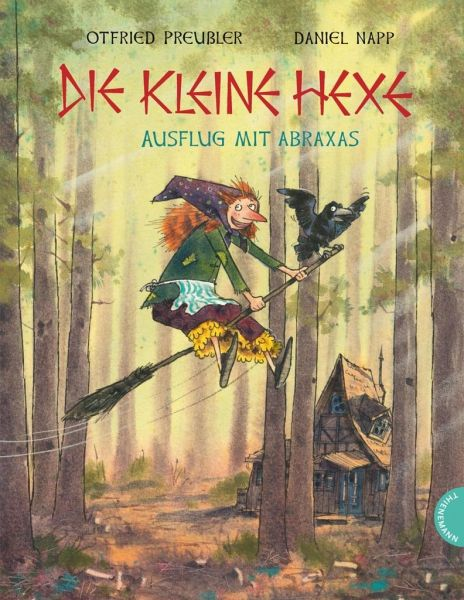

0
стр. з
0
сторінок

завантаження...

Отфрид Пройслер
Маленькая ведьма
Пособие подготовила Ирина Зверинская
Метод чтения Ильи Франка
Inhalt
Die kleine Hexe hat ÄrgerHeia, WalpurgisnachtRachepläneFühren Sie Besen?Gute VorsätzeWirbelwindVorwärts, mein SöhnchenPapierblumenEine saftige LehreFreitagsgästeDas leicht verhexte SchützenfestDer MaronimannBesser als sieben RöckeSchneemann, Schneemann, braver MannWollen wir wetten?Fastnacht im WaldeDer KegelbruderFestgehext!Vor dem HexenratWer zuletzt lacht...
Die kleine Hexe hat Ärger
(у маленькой ведьмы неприятности; der Ärger)
1 Es war einmal eine kleine Hexe (жила - была маленькая ведьма), die war erst einhundertsiebenundzwanzig Jahre alt (которой было всего сто двадцать семь лет; das Jahr – год; alt – старый) und das ist ja für eine Hexe noch gar kein Alter (а ведь это для ведьмы еще совсем не возраст /маленький возраст/; das Alter).
2 Sie wohnte in einem Hexenhaus (она жила в ведьмином доме), das stand einsam im tiefen Wald (который стоял одиноко в глубине леса; stehen - stand - gestanden; tief – глубокий; der Wald). Weil es nur einer kleinen Hexe gehörte (так как он /дом/ принадлежал только одной маленькой ведьме), war auch das Hexenhaus nicht besonders groß (был также /этот/ ведьмин дом не особенно большим; sein - war - gewesen).
3 Der kleinen Hexe genügte es aber (маленькой ведьме его /домика/, однако, хватало), sie hätte sich gar kein schöneres Hexenhaus wünschen können (она не могла бы пожелать себе никакого более хорошего ведьминого дома; schön – красивый, хороший). Es hatte ein wundervoll windschiefes Dach (у него была чудесная перекошенная крыша; das Wunder – чудо, voll – наполненный; der Wind – ветер, schief – кривой), einen krummen Schornstein (кривая дымовая труба) und klapprige Fensterläden (и громыхающие ставни; der Fensterladen, das Fenster – окно, der Laden – ставень; klappen – хлопать, стучать). Hinten hinaus war ein Backofen angebaut (сзади снаружи = со двора была пристроена печка; backen – печь/хлеб/, der Ofen – печка). Der durfte nun einmal nicht fehlen (она /печка/ уж никак не могла отсутствовать = а как же без нее). Ein Hexenhaus ohne Backofen wäre kein richtiges Hexenhaus (ведьмин дом без печки не был бы настоящим ведьминым домом).
4 Die kleine Hexe besaß einen Raben (у маленькой ведьмы был ворон; besitzen - besaß - besessen – владеть, иметь), der sprechen konnte (который умел говорить). Das war der Rabe Abraxas. Er konnte nicht nur "Guten Morgen!" und "Guten Abend!" krächzen (он мог каркать не только...) wie ein gewöhnlicher Rabe (как обыкновенный ворон), der sprechen gelernt hat (который научился говорить), sondern auch alles andere (но /умел каркать/ и все другое = /все,/ что угодно). Die kleine Hexe hielt große Stücke auf ihn (очень его ценила; große Stücke auf jemanden halten; halten - hielt - gehalten – держать), weil er ein ausnehmend weiser Rabe war (так как он был исключительно мудрым вороном; ausnehmen – исключать), der ihr in allen Dingen die Meinung sagte (который во всех делах высказывал ей свое мнение; das Ding) und nie ein Blatt vor den Schnabel nahm (и всегда говорил начистоту, не лез за словом в карман: «никогда не прилагал листок к клюву»; das Blatt; nehmen - nahm - genommen; сравните: ein Blatt vor den Mund nehmen – листок прилагать ко рту, закрывать рот листком = высказывать откровенно свое мнение).
5 Etwa sechs Stunden am Tage (приблизительно шесть часов днем = в день) verbrachte die kleine Hexe damit (проводила маленькая ведьма с тем, чтобы; verbringen, bringen - brachte - gebracht – приносить), sich im Hexen zu üben (упражняться в колдовстве; das Hexen). Das Hexen ist keine einfache Sache (колдовство – не простое дело). Wer es im Hexen zu etwas bringen will (кто хочет в колдовстве чего - то добиться), darf nicht faul sein (не имеет права быть ленивым). Er muss zuerst alle kleineren Hexenkunststücke lernen (он должен сперва все довольно мелкие = небольшие колдовские «штуки» освоить; klein – мелкий; die Hexenkunst – колдовство, das Stück – кусок, часть) – und später die großen (а позже – крупные; spät – поздний). Seite für Seite muss er das Hexenbuch durchstudieren (страница за страницей должен он колдовскую книгу основательно изучить) und keine einzige Aufgabe darf er dabei überspringen (и ни одного задания при этом не имеет права пропускать).
6 Die kleine Hexe war erst auf Seite zweihundertdreizehn des Hexenbuches (маленькая ведьма находилась только на странице двести тринадцать колдовской книги; die Seite). Sie übte gerade das Regenmachen (она как раз упражнялась в делании дождя = в том, как делать дождь; der Regen – дождь, machen – делать). Sie saß auf der Bank vor dem Backofen (она сидела на скамейке перед печкой; sitzen - saß - gesessen), hatte das Hexenbuch auf den Knien liegen (с лежащей на коленях колдовской книгой; das Knie) und hexte (и колдовала). Der Rabe Abraxas saß neben ihr (сидел рядом с ней) und war unzufrieden (и был недоволен).
7 "Du sollst einen Regen machen (ты должна сделать дождь)", krächzte er vorwurfsvoll (каркал он укоризненно; der Vorwurf – упрек), "und was hext du (а что колдуешь = творишь ты)? Beim ersten Mal lässt du es weiße Mäuse regnen (в первый раз ты заставляешь идти = вызвала дождь /из/ белых мышей; lassen; die Maus), beim zweiten Mal Frösche (во второй раз – /из/ лягушек; der Frosch), beim dritten Mal Tannenzapfen (в третий раз – /из/ еловых шишек; die Tanne, der Zapfen)! Ich bin ja gespannt (я просто с нетерпением ожидаю; auf etwas gespannt sein; spannen – напрягать, натягивать), ob du wenigstens jetzt einen richtigen Regen zustande bringst (получится ли сейчас у тебя по меньшей мере настоящий дождь; wenig – мало; zustande bringen – осуществлять: «приводить к состоянию»)!"
1 Es war einmal eine kleine Hexe, die war erst einhundertsiebenundzwanzig Jahre alt und das ist ja für eine Hexe noch gar kein Alter.
2 Sie wohnte in einem Hexenhaus, das stand einsam im tiefen Wald. Weil es nur einer kleinen Hexe gehörte, war auch das Hexenhaus nicht besonders groß.
3 Der kleinen Hexe genügte es aber, sie hätte sich gar kein schöneres Hexenhaus wünschen können. Es hatte ein wundervoll windschiefes Dach, einen krummen Schornstein und klapprige Fensterläden. Hinten hinaus war ein Backofen angebaut. Der durfte nun einmal nicht fehlen. Ein Hexenhaus ohne Backofen wäre kein richtiges Hexenhaus.
4 Die kleine Hexe besaß einen Raben, der sprechen konnte. Das war der Rabe Abraxas. Er konnte nicht nur "Guten Morgen!" und "Guten Abend!" krächzen wie ein gewöhnlicher Rabe, der sprechen gelernt hat, sondern auch alles andere. Die kleine Hexe hielt große Stücke auf ihn, weil er ein ausnehmend weiser Rabe war, der ihr in allen Dingen die Meinung sagte und nie ein Blatt vor den Schnabel nahm.
5 Etwa sechs Stunden am Tage verbrachte die kleine Hexe damit, sich im Hexen zu üben. Das Hexen ist keine einfache Sache. Wer es im Hexen zu etwas bringen will, darf nicht faul sein. Er muss zuerst alle kleineren Hexenkunststücke lernen – und später die großen. Seite für Seite muss er das Hexenbuch durchstudieren und keine einzige Aufgabe darf er dabei überspringen.
6 Die kleine Hexe war erst auf Seite zweihundertdreizehn des Hexenbuches. Sie übte gerade das Regenmachen. Sie saß auf der Bank vor dem Backofen, hatte das Hexenbuch auf den Knien liegen und hexte. Der Rabe Abraxas saß neben ihr und war unzufrieden.
7 "Du sollst einen Regen machen", krächzte er vorwurfsvoll, "und was hext du? Beim ersten Mal lässt du es weiße Mäuse regnen, beim zweiten Mal Frösche, beim dritten Mal Tannenzapfen! Ich bin ja gespannt, ob du wenigstens jetzt einen richtigen Regen zustande bringst!"
1 Da versuchte die kleine Hexe zum vierten Mal (тут попробовала маленькая ведьма в четвертый раз), einen Regen zu machen (сделать дождь). Sie ließ eine Wolke am Himmel aufsteigen (она повелела возникнуть туче в небе), winkte sie näher (знаком подозвала ее ближе; winken – делать знак; nahe – близкий) und rief (и крикнула; rufen - rief - gerufen), als die Wolke genau über ihnen stand (когда туча находилась точно над ними; stehen - stand - gestanden): "Regne (дождь пойди)!"
2 Die Wolke riss auf (туча разорвалась; aufreißen, reißen - riss - gerissen) und es regnete (и пошел дождь) – Buttermilch (пахта /кислое молоко/; die Buttermilch, die Butter – сливочное масло, die Milch – молоко).
3 "Buttermilch!", kreischte Abraxas (пронзительно закричал). "Mir scheint (мне кажется), du bist vollständig übergeschnappt (ты совершенно спятила; schnappen – хватать/быстрым движкением/, защелкивать)! Was willst du denn noch alles regnen lassen (что же ты еще такое: «все» хочешь заставить пролиться дождем)? Wäscheklammern vielleicht (может быть, прищепки; die Wäscheklammer, die Wäsche – белье, die Klammer – зажим)? Oder Schusternägel (или сапожные гвозди; der Schuster – сапожник, der Nagel – гвоздь)? Wenn es doch wenigstens Brotkrümel oder Rosinen wären (если бы это все же по меньшей мере были хлебные крошки или изюм; das Brot – хлеб, das Krümel – крошка; die Rosine – изюминка)!"
4 "Ich muss mich beim Hexen versprochen haben (я, должно быть, при колдовстве оговорилась; sich versprechen, sprechen - sprach - gesprochen)", sagte die kleine Hexe. Früher war ihr auch schon dann und wann etwas danebengegangen (раньше ей тоже уже время от времени кое - что не удавалось; danebengehen, gehen - ging - gegangen; daneben – мимо: «тут возле»). Aber gleich viermal hintereinander (но сейчас четыре раза один за другим)?
5 "Versprochen haben!", krächzte der Rabe Abraxas. "Ich werde dir sagen (я скажу тебе), woran es liegt (в чем тут дело). Zerstreut bist du (ты рассеянна; streuen – посыпать, сеять; zerstreuen – рассеивать)! Wenn man beim Hexen an alles Mögliche andere denkt (если при колдовстве думают обо всем возможном другом = o постороннем), muss man sich ja verhexen (обязательно ведь «околдуешься» /по аналогии с «оговоришься»/)! Du solltest eben ein bisschen mehr bei der Sache sein (ты должна как раз быть повнимательнее: «немного больше быть внимательной»; die Sache – дело, вопрос)!"
6 "Findest du (ты находишь)?", meinte die kleine Hexe (сказала маленькая ведьма; meinen – высказывать свое мнение). Dann klappte sie plötzlich das Hexenbuch zu (потом она вдруг захлопнула колдовскую книгу; zuklappen). "Du hast Recht (ты прав; das Recht – право)!", rief sie zornig (крикнула она гневно; der Zorn – гнев). "Es stimmt (/это/ верно), dass ich nicht bei der Sache bin (что я невнимательна). Und warum nicht (а почему нет)?" Sie blitzte den Raben an (она сверкнула глазами на ворона; anblitzen). "Weil ich Wut habe (потому что я в бешенстве; die Wut)!"
7 "Wut?", wiederholte der Rabe Abraxas (повторил ворон). "Auf wen denn (на кого же)?"
8 "Es ärgert mich (меня злит)", sagte die kleine Hexe, "dass heute Walpurgisnacht ist (что сегодня Вальпургиева ночь; die Nacht). Heute treffen sich alle Hexen zum Tanz auf dem Blocksberg (сегодня встречаются все ведьмы для танца на Блоксберге; sich treffen; der Tanz; der Berg – гора)."
9 "Na – und (ну, и что)?"
10 "Und ich bin noch zu klein für den Hexentanz (а я еще слишком мала для танца ведьм), sagen die großen Hexen (говорят взрослые ведьмы). Sie wollen nicht (они не хотят), dass ich auch auf den Blocksberg reite (чтобы я тоже на Блоксберг приехала верхом /на метле/ = прилетела) und mittanze (и танцевала с ними)!"
11 Der Rabe versuchte die kleine Hexe zu trösten (ворон попытался маленькую ведьму утешить) und sagte: "Sieh mal (смотри - ка) – mit einhundertsiebenundzwanzig Jahren kannst du noch nicht verlangen (в /твои/ сто двадцать семь лет ты еще не можешь требовать), dass dich die großen Hexen für voll nehmen (чтобы тебя взрослые ведьмы принимали всерьез: «брали за полную = полноценную»). Wenn du erst älter bist (когда ты будешь старше; alt – старый), wird sich das alles geben (все это сбудется, уладится; sich geben)."
12 "Ach was (да брось ты)!", rief die kleine Hexe. "Ich will aber diesmal schon mit dabei sein (я же хочу уже в этот раз присутствовать при этом)! Verstehst du mich (ты меня понимаешь)?"
13 "Was man nicht haben kann (/то,/ что не можешь иметь), soll man sich aus dem Kopf schlagen (нужно выбить = выбросить из головы; jemandem etwas aus dem Kopf schlagen)", krächzte der Rabe. "Ändert sich etwas daran (изменится ли что - нибудь), wenn du zornig bist (если ты будешь гневной = злиться)? Nimm doch Vernunft an (образумься же; die Vernunft – здравый рассудок, Vernunft annehmen – образумиться, одуматься; annehmen – принять)! Was willst du denn machen (что же ты хочешь делать)?"
14 Da sagte die kleine Hexe: "Ich weiß, was ich mache (я знаю, что я сделаю). Ich reite heut Nacht auf den Blocksberg!"
15 Der Rabe erschrak (ворон испугался; erschreсken - erschrak - erschroсken).
16 "Auf den Blocksberg?! – Das haben dir doch die großen Hexen verboten (это же тебе запретили взрослые ведьмы; verbieten, bieten - bot - geboten – предлагать)! Sie wollen beim Hexentanz unter sich sein (они хотят при танце ведьм быть среди своих /без посторонних/)."
17 "Pah (ба)!", rief die kleine Hexe. "Verboten ist vieles (запрещено многое). Aber wenn man sich nicht erwischen lässt (но если не попадешься; sich erwischen lassen – дать себя поймать, erwischen – поймать, схватить) ..."
18 "Sie erwischen dich (они поймают тебя)!", prophezeite der Rabe (предсказал ворон).
19 "Ach, Unsinn (ах, вздор; der Unsinn)!", erwiderte sie (возразила она). "Ich geselle mich erst zu den anderen Hexen (я присоединюсь к другим ведьмам только /тогда/), wenn sie schon mitten im Tanz sind (когда они уже будут в середине танца = когда танец будет в самом разгаре) – und ehe sie Schluss machen (и прежде, чем они закончат; Schluss machen, der Schluss – конец), reite ich wieder heim (я снова улечу: «ускачу» домой). In dem Trubel (в суматохе; der Trubel), der heute Nacht auf dem Blocksberg herrscht (которая этой ночью будет господствовать на Блоксберге), wird das nicht weiter auffallen (это совершенно не бросится в глаза)."
1 Da versuchte die kleine Hexe zum vierten Mal, einen Regen zu machen. Sie ließ eine Wolke am Himmel aufsteigen, winkte sie näher und rief, als die Wolke genau über ihnen stand: "Regne!"
2 Die Wolke riss auf und es regnete – Buttermilch.
3 "Buttermilch!", kreischte Abraxas. "Mir scheint, du bist vollständig übergeschnappt! Was willst du denn noch alles regnen lassen? Wäscheklammern vielleicht? Oder Schusternägel? Wenn es doch wenigstens Brotkrümel oder Rosinen wären!"
4 "Ich muss mich beim Hexen versprochen haben", sagte die kleine Hexe. Früher war ihr auch schon dann und wann etwas danebengegangen. Aber gleich viermal hintereinander?
5 "Versprochen haben!", krächzte der Rabe Abraxas. "Ich werde dir sagen, woran es liegt. Zerstreut bist du! Wenn man beim Hexen an alles Mögliche andere denkt, muss man sich ja verhexen! Du solltest eben ein bisschen mehr bei der Sache sein!"
6 "Findest du?", meinte die kleine Hexe. Dann klappte sie plötzlich das Hexenbuch zu. "Du hast Recht!", rief sie zornig. "Es stimmt, dass ich nicht bei der Sache bin. Und warum nicht?" Sie blitzte den Raben an. "Weil ich Wut habe!"
7 "Wut?", wiederholte der Rabe Abraxas. "Auf wen denn?"
8 "Es ärgert mich", sagte die kleine Hexe, "dass heute Walpurgisnacht ist. Heute treffen sich alle Hexen zum Tanz auf dem Blocksberg."
9 "Na – und?"
10 "Und ich bin noch zu klein für den Hexentanz, sagen die großen Hexen. Sie wollen nicht, dass ich auch auf den Blocksberg reite und mittanze!"
11 Der Rabe versuchte die kleine Hexe zu trösten und sagte: "Sieh mal – mit einhundertsiebenundzwanzig Jahren kannst du noch nicht verlangen, dass dich die großen Hexen für voll nehmen. Wenn du erst älter bist, wird sich das alles geben."
12 "Ach was!", rief die kleine Hexe. "Ich will aber diesmal schon mit dabei sein! Verstehst du mich?"
13 "Was man nicht haben kann, soll man sich aus dem Kopf schlagen", krächzte der Rabe. "Ändert sich etwas daran, wenn du zornig bist? Nimm doch Vernunft an! Was willst du denn machen?"
14 Da sagte die kleine Hexe: "Ich weiß, was ich mache. Ich reite heut Nacht auf den Blocksberg!"
15 Der Rabe erschrak.
16 "Auf den Blocksberg?! – Das haben dir doch die großen Hexen verboten! Sie wollen beim Hexentanz unter sich sein."
17 "Pah!", rief die kleine Hexe. "Verboten ist vieles. Aber wenn man sich nicht erwischen lässt ..."
18 "Sie erwischen dich!", prophezeite der Rabe.
19 "Ach, Unsinn!", erwiderte sie. "Ich geselle mich erst zu den anderen Hexen, wenn sie schon mitten im Tanz sind – und ehe sie Schluss machen, reite ich wieder heim. In dem Trubel, der heute Nacht auf dem Blocksberg herrscht, wird das nicht weiter auffallen."
Heia, Walpurgisnacht
(Ура, Вальпургиева ночь)!
1 Die kleine Hexe ließ sich vom Raben Abraxas nicht Bange machen (не дала сделать себе страх от ворона = не испугалась ворона; sich etwas machen lassen, lassen - ließ - gelassen; die Bange), sie ritt in der Nacht auf den Blocksberg (она полетела ночью на Блоксберг; reiten - ritt - geritten).
2 Dort waren die großen Hexen schon alle versammelt (там взрослые ведьмы уже все были собраны = собрались). Sie tanzten mit fliegenden Haaren (они танцевали с летающими = распущенными волосами; fliegen – летать; das Haar) und flatternden Röcken (и развевающимися юбками; der Rock) rund um das Hexenfeuer (вокруг колдовского огня). Es mochten wohl (возможно: «это могли быть, пожалуй»), alles in allem (все вместе взятое = всех вместе), fünf - oder sechshundert Hexen sein (/их было/ пять или шесть сотен ведьм): Berghexen (горные ведьмы), Waldhexen (лесные...), Sumpfhexen (болотные...; der Sumpf) , Nebelhexen (ведьмы тумана; der Nebel) und Wetterhexen (ведьмы грозы; das Wetter), Windhexen (ведьмы ветра), Knusperhexen (хрустящие...; knuspern – хрустеть/например, о хлебе/; сравните: das Knusperhäuschen = das Hexenhäuschen – пряничный домик) und Kräuterhexen (травяные...; das Kraut – трава/разнотравье/). Sie wirbelten wild durcheinander (они кружились яростно как попало) und schwangen die Besen (и размахивали метлами; der Besen; schwingen - schwang - geschwungen).
3 "Walpurgisnacht!", sangen die Hexen (пели ведьмы; singen - sang - gesungen), "heia, Walpurgisnacht!" Zwischendurch meckerten, krähten und kreischten sie (между тем они блеяли, кукарекали и визжали), ließen es donnern (заставляли греметь гром) und schleuderten Blitze (и швыряли молнии; der Blitz).
4 Die kleine Hexe mischte sich unbemerkt unter die Tanzenden (смешалась незаметно с танцующими). "Heia, Walpurgisnacht!", sang sie aus voller Kehle (пела она во все горло). Sie wirbelte mit um das Hexenfeuer (она кружилась вместе /с другими/ вокруг колдовского огня) und dachte sich (представляла себе; denken - dachte - gedacht): Wenn mich Abraxas jetzt sehen könnte (если бы Абраксас сейчас мог меня видеть), würde er Augen machen (он сделал бы /такие/ глаза; das Auge) wie eine Waldeule (как лесная сова; der Wald, die Eule)!
5 Sicherlich wäre auch weiterhin alles gut gegangen (определенно, и дальше все бы шло хорошо; gehen - ging - gegangen) – nur hätte die kleine Hexe nicht ihrer Muhme, der Wetterhexe Rumpumpel, über den Weg tanzen dürfen (только не надо было бы маленькой ведьме дать, позволить перейти /себе/ /танцуя/ дорогу своей тетке; сравните: jemandem über den Weg laufen – перебежать дорогу)! Die Muhme Rumpumpel verstand keinen Spaß (тетка Румпумпель не понимала никакой шутки = никаких шуток; verstehen, stehen - stand - gestanden), sie war eingebildet und böse (она была чванной и злой; sich etwas einbilden – воображать себе что - то; das Bild – образ).
6 "Sieh da (смотри; sehen)!", rief sie, als ihr die kleine Hexe im Trubel begegnete (когда ей маленькая ведьма попалась в суматохе; der Trubel), "welch eine Überraschung (какая неожиданность)! Was suchst du hier (что ты здесь ищешь = а ты что здесь делаешь)? Antworte (отвечай)! Weißt du nicht (ты /разве/ не знаешь), dass es für junge Dinger verboten ist (что для молодых девчонок это запрещено; das Ding – вещь), heute Nacht auf den Blocksberg zu kommen (появляться сегодня ночью на Блоксберге)?"
7 "Verrate mich nicht (не выдавай меня)!", bat die kleine Hexe erschrocken (попросила испуганно; bitten - bat - bebeten; erschrecken - erschrak - erschrocken).
8 Die Muhme Rumpumpel erwiderte (возразила): "Nichts da (ничего подобного)! Du freches Stück musst bestraft werden (ты, наглая тварь, должна стать = быть наказана; bestrafen – наказывать; das Stück – кусок)!"
9 Neugierig kamen die anderen Hexen herzu (любопытствуя, подошли другие ведьмы; neugierig – любопытный; herzukommen, kommen - kam - gekommen) und umringten die beiden (и окружили обеих; der Ring – кольцо). Die Wetterhexe berichtete zornig (ведьма грозы гневно доложила); dann fragte sie (потом она спросила), was mit der kleinen Hexe geschehen solle (что следует сделать с маленькой ведьмой: «что должно с ней произойти»).
10 Da riefen die Nebelhexen (тут крикнули ведьмы тумана): "Sie soll es büßen (она должна за это поплатиться)!"
11 Die Berghexen kreischten (ведьмы горы завизжали): "Zur Oberhexe mit ihr (к главной ведьме ее)! Auf der Stelle zur Oberhexe (немедленно к главной ведьме; die Stelle – место)!"
12 "Jawohl (совершенно верно)!", schrien alle Hexen (закричали все ведьмы; schreien - schrie - geschrien), "packt sie (хватайте ее) und schafft sie (и доставьте = тащите ее) zur Oberhexe!"
13 Der kleinen Hexe half weder Bitten noch Betteln (маленькой ведьме не помогли ни упрашивание, ни клянчание; helfen - half - geholfen – помогать; bitten – просить, das Bitten; betteln – клянчить, das Betteln). Die Muhme Rumpumpel nahm sie beim Kragen (взяла ее за шиворот; nehmen - nahm - genommen; der Kragen – воротник) und schleifte sie vor die Oberhexe (и потащила ее к главной ведьме). Die hockte auf einem Thron (она /главная ведьма/ сидела на корточках на троне), der aus Ofengabeln errichtet war (который был сооружен из ухватов; der Ofen – печь, die Gabel – вилка). Stirnrunzelnd hörte sie der Wetterhexe zu (нахмурившись, /вы/слушала она ведьму грозы; die Stirn – лоб, runzeln – морщить; zuhören). Dann donnerte sie die kleine Hexe an (потом накричала она на маленькую ведьму; andonnern):
14 "Du wagst es (ты смеешь это = как ты посмела), in dieser Nacht auf den Blocksberg zu reiten (прилететь этой ночью на Блоксберг), obwohl es für Hexen in deinem Alter verboten ist (хотя это ведьмам твоего возраста запрещено)? Wie kommst du auf diesen verrückten Gedanken (как тебе приходит = пришла в голову такая сумасшедшая мысль; der Gedanke, kommen auf den Gedanken – прийти к мысли)?"
1 Die kleine Hexe ließ sich vom Raben Abraxas nicht Bange machen, sie ritt in der Nacht auf den Blocksberg.
2 Dort waren die großen Hexen schon alle versammelt. Sie tanzten mit fliegenden Haaren und flatternden Röcken rund um das Hexenfeuer. Es mochten wohl, alles in allem, fünf - oder sechshundert Hexen sein: Berghexen, Waldhexen, Sumpfhexen, Nebelhexen und Wetterhexen, Windhexen, Knusperhexen und Kräuterhexen. Sie wirbelten wild durcheinander und schwangen die Besen.
3 "Walpurgisnacht!", sangen die Hexen, "heia, Walpurgisnacht!" Zwischendurch meckerten, krähten und kreischten sie, ließen es donnern und schleuderten Blitze.
4 Die kleine Hexe mischte sich unbemerkt unter die Tanzenden. "Heia, Walpurgisnacht!", sang sie aus voller Kehle. Sie wirbelte mit um das Hexenfeuer und dachte sich: Wenn mich Abraxas jetzt sehen könnte, würde er Augen machen wie eine Waldeule!
5 Sicherlich wäre auch weiterhin alles gut gegangen – nur hätte die kleine Hexe nicht ihrer Muhme, der Wetterhexe Rumpumpel, über den Weg tanzen dürfen! Die Muhme Rumpumpel verstand keinen Spaß, sie war eingebildet und böse.
6 "Sieh da!", rief sie, als ihr die kleine Hexe im Trubel begegnete, "welch eine Überraschung! Was suchst du hier? Antworte! Weißt du nicht, dass es für junge Dinger verboten ist, heute Nacht auf den Blocksberg zu kommen?"
7 "Verrate mich nicht!", bat die kleine Hexe erschrocken.
8 Die Muhme Rumpumpel erwiderte: "Nichts da! Du freches Stück musst bestraft werden!"
9 Neugierig kamen die anderen Hexen herzu und umringten die beiden. Die Wetterhexe berichtete zornig; dann fragte sie, was mit der kleinen Hexe geschehen solle.
10 Da riefen die Nebelhexen: "Sie soll es büßen!"
11 Die Berghexen kreischten: "Zur Oberhexe mit ihr! Auf der Stelle zur Oberhexe!"
12 "Jawohl!", schrien alle Hexen, "packt sie und schafft sie zur Oberhexe!"
13 Der kleinen Hexe half weder Bitten noch Betteln. Die Muhme Rumpumpel nahm sie beim Kragen und schleifte sie vor die Oberhexe. Die hockte auf einem Thron, der aus Ofengabeln errichtet war. Stirnrunzelnd hörte sie der Wetterhexe zu. Dann donnerte sie die kleine Hexe an:
14 "Du wagst es, in dieser Nacht auf den Blocksberg zu reiten, obwohl es für Hexen in deinem Alter verboten ist? Wie kommst du auf diesen verrückten Gedanken?"
1 Angstschlotternd (дрожа от страха; die Angst, schlottern) sagte die kleine Hexe: "Ich weiß nicht. Ich hatte auf einmal so große Lust dazu (мне вдруг так сильно захотелось: «имела такое большое желание к этому»; die Lust – желание, Lust zu etwas haben) – und da bin ich halt auf den Besen gestiegen (тут, значит, села я на метлу) und hergeritten (и прилетела сюда)..."
2 "Dann wirst du gefälligst auch wieder nach Hause reiten (тогда будь любезна и снова лети домой)!", befahl ihr die Oberhexe (приказала ей главная ведьма; befehlen - befahl - befohlen). "Verschwinde hier (исчезни немедленно) und zwar (а именно) schleunigst (как можно скорее, сейчас же; schleunig – скорый)! Sonst müsste ich böse werden (иначе я должна бы рассердиться = а то рассержусь)!"
3 Da merkte die kleine Hexe (тут поняла маленькая ведьма), dass mit der Oberhexe zu reden war (что с главной ведьмой можно говорить). "Darf ich dann wenigstens nächstes Jahr mittanzen (разрешите тогда хотя бы на следующий год танцевать /вместе/)?", fragte sie.
4 "Hm ...", überlegte die Oberhexe (обдумывала). "Das kann ich dir heute noch nicht versprechen (это я не могу тебе сегодня еще обещать). Wenn du bis dahin schon eine gute Hexe geworden bist (если ты до тех пор уже станешь хорошей ведьмой; werden - wurde - geworden), dann vielleicht (тогда возможно). Ich werde am Tag vor der nächsten Walpurgisnacht einen Hexenrat einberufen (в день перед = накануне следующей Вальпургиевой ночи я соберу совет ведьм; der Rat – совет), dann will ich dich prüfen (тогда я собираюсь тебя испытать). Die Prüfung wird aber nicht leicht sein (испытание же будет нелегким)."
5 "Ich danke dir (я благодарю тебя: «тебе»)!", sagte die kleine Hexe, "ich danke dir!"
6 Sie versprach (она /по/обещала; versprechen, sprechen - sprach - gesprochen), bis zum nächsten Jahr eine gute Hexe zu werden (до следующего года стать хорошей ведьмой). Dann schwang sie sich auf den Besen (потом она вскочила на метлу; sich schwingen – раскачиваться, перепрыгивать, взлетать) und wollte nach Hause reiten (и собралась лететь домой). Da aber sagte die Wetterhexe Rumpumpel zur Oberhexe (но тут сказала ведьма грозы Румпумпель главной ведьме):
7 "Willst du das kleine, freche Ding nicht bestrafen (ты не хочешь, не собираешься /эту/ маленькую, наглую девчонку наказывать)?" "Bestrafe es (накажи ее)!", hetzten die anderen Wetterhexen (науськивали другие ведьмы грозы).
8 "Bestrafe es!", riefen auch alle Übrigen (кричали и все остальные; übrig – остальной; rufen - rief - gerufen). "Ordnung muss sein (должен быть порядок)! Wer zum Hexentanz reitet (/тот,/ кто прилетает на танец ведьм), obwohl es ihm nicht erlaubt ist (хотя ему это не разрешено), der muss einen Denkzettel kriegen (тот должен получить взбучку: «записку для размышления = чтобы запомнить»; denken – думать; der Zettel – записка)!"
9 "Wir könnten (мы могли бы) die freche Kröte (наглую девчонку; die Kröte – жаба) zur Strafe (в наказание) ein bisschen ins Feuer werfen (немного = ненадолго бросить в огонь)", meinte die Muhme Rumpumpel.
10 "Wie wäre es (как насчет /того/)", riet eine Knusperhexe (посоветовала; raten - riet - geraten), "wenn wir sie einige Wochen lang einsperren würden (если = чтобы мы ее заперли бы на несколько недель)? Ich habe daheim einen Gänsestall (у меня есть дома гусятник; die Gans – гусь, der Stall – хлев), der steht leer ... (который пустует: «стоит пустой»)"
11 Eine Sumpfhexe sagte: "Da wüsste ich etwas Besseres (тогда я знаю, пожалуй: «знала бы» кое - что лучшее = получше)! Gebt sie mir (дайте ее мне) und ich stecke sie bis an den Hals in ein Schlammloch (и я засуну ее по /самое/ горло в трясину: «илистую дыру»; der Schlamm – ил, тина; das Loch – дыра)!"
12 "Nein", widersprachen die Kräuterhexen (возразили; widersprechen), "wir sollten ihr ordentlich das Gesicht zerkratzen (мы должны ей порядком лицо расцарапать)!"
13 "Das außerdem (это кроме того = само собой)!", fauchten die Windhexen (прошипели). "Aber sie muss auch gehörig Schläge bekommen (но она должна также надлежаще = как следует удары получить; der Schlag)!"
14 "Mit Weidenruten (ивовыми прутьями; die Weide, die Rute)!", zischten die Berghexen (шикнули).
15 "Nehmt doch den Besen dazu (возьмите же для этого метлы)!", riet die Muhme Rumpumpel (посоветовала).
16 Der kleinen Hexe wurde es angst und bange (маленькой ведьме было страшно; bange – тревожный). Das konnte ja gut werden (это могло ведь хорошо «стать» = и что же из этого могло быть = чем же это все закончится)!
17 "Aufgepasst (внимание; aufpassen – быть внимательным)!", sagte die Oberhexe, als alle anderen Hexen gesprochen hatten (когда высказались все другие ведьмы). "Wenn ihr verlangt (если вы требуете), dass die kleine Hexe bestraft werden soll (чтобы маленькая ведьма была наказана: «должна стать наказанной») ..."
18 "Wir verlangen es!", lärmten diese Hexen im Chor (зашумели эти ведьмы все вместе; im Chor, der Chor – хор) und am lautesten lärmte die Muhme Rumpumpel (и громче всех шумела; laut – громкий).
19 "... dann schlage ich vor (тогда я предлагаю; vorschlagen)", rief die Oberhexe, "dass wir ihr einfach den Besen wegnehmen (чтобы мы у нее просто отобрали метлу) und sie zu Fuß auf den Heimweg schicken (и отправили ее домой пешком)! Drei Tage und Nächte lang wird sie zu laufen haben (три дня и /три/ ночи будет она идти пешком; laufen – идти пешком; бежать), bis sie in ihren Wald kommt (пока она попадет в свой лес) – das reicht (этого хватит; reichen – быть достаточным)."
20 "Das reicht nicht (этого не хватит)!", schrie die Wetterhexe Rumpumpel; aber die anderen meinten (но другие посчитали), das könne man hingehen lassen (/что/ это можно спустить = этого достаточно). Sie nahmen der kleinen Hexe den Besen weg (отобрали метлу; wegnehmen), warfen ihn lachend ins Feuer (смеясь, бросили ее /метлу/ в огонь; werfen - warf - geworfen) und wünschten ihr eine gute Reise (и пожелали ей /маленькой ведьме/ счастливого пути; die Reise – поездка, путешествие).
1 Angstschlotternd sagte die kleine Hexe: "Ich weiß nicht. Ich hatte auf einmal so große Lust dazu – und da bin ich halt auf den Besen gestiegen und hergeritten..."
2 "Dann wirst du gefälligst auch wieder nach Hause reiten!", befahl ihr die Oberhexe. "Verschwinde hier und zwar schleunigst! Sonst müsste ich böse werden!"
3 Da merkte die kleine Hexe, dass mit der Oberhexe zu reden war. "Darf ich dann wenigstens nächstes Jahr mittanzen?", fragte sie.
4 "Hm ...", überlegte die Oberhexe. "Das kann ich dir heute noch nicht versprechen. Wenn du bis dahin schon eine gute Hexe geworden bist, dann vielleicht. Ich werde am Tag vor der nächsten Walpurgisnacht einen Hexenrat einberufen, dann will ich dich prüfen. Die Prüfung wird aber nicht leicht sein."
5 "Ich danke dir!", sagte die kleine Hexe, "ich danke dir!"
6 Sie versprach, bis zum nächsten Jahr eine gute Hexe zu werden. Dann schwang sie sich auf den Besen und wollte nach Hause reiten. Da aber sagte die Wetterhexe Rumpumpel zur Oberhexe:
7 "Willst du das kleine, freche Ding nicht bestrafen?" "Bestrafe es!", hetzten die anderen Wetterhexen.
8 "Bestrafe es!", riefen auch alle Übrigen. "Ordnung muss sein! Wer zum Hexentanz reitet, obwohl es ihm nicht erlaubt ist, der muss einen Denkzettel kriegen!"
9 "Wir könnten die freche Kröte zur Strafe ein bisschen ins Feuer werfen", meinte die Muhme Rumpumpel.
10 "Wie wäre es", riet eine Knusperhexe, "wenn wir sie einige Wochen lang einsperren würden? Ich habe daheim einen Gänsestall, der steht leer ..."
11 Eine Sumpfhexe sagte: "Da wüsste ich etwas Besseres! Gebt sie mir und ich stecke sie bis an den Hals in ein Schlammloch!"
12 "Nein", widersprachen die Kräuterhexen, "wir sollten ihr ordentlich das Gesicht zerkratzen!"
13 "Das außerdem!", fauchten die Windhexen. "Aber sie muss auch gehörig Schläge bekommen!"
14 "Mit Weidenruten!", zischten die Berghexen.
15 "Nehmt doch den Besen dazu!", riet die Muhme Rumpumpel.
16 Der kleinen Hexe wurde es angst und bange. Das konnte ja gut werden!
17 "Aufgepasst!", sagte die Oberhexe, als alle anderen Hexen gesprochen hatten. "Wenn ihr verlangt, dass die kleine Hexe bestraft werden soll ..."
18 "Wir verlangen es!", lärmten diese Hexen im Chor und am lautesten lärmte die Muhme Rumpumpel.
19 "... dann schlage ich vor", rief die Oberhexe, " dass wir ihr einfach den Besen wegnehmen und sie zu Fuß auf den Heimweg schicken! Drei Tage und Nächte lang wird sie zu laufen haben, bis sie in ihren Wald kommt – das reicht."
20 "Das reicht nicht!", schrie die Wetterhexe Rumpumpel; aber die anderen meinten, das könne man hingehen lassen. Sie nahmen der kleinen Hexe den Besen weg, warfen ihn lachend ins Feuer und wünschten ihr eine gute Reise.
Rachepläne
(планы мести; die Rache, der Plan)
1 Das wurde ein langer, beschwerlicher Heimweg (это был долгий утомительный обратный путь; das Heim – /родной/ дом, der Weg – путь, дорога)! Drei Tage und drei Nächte brauchte die kleine Hexe dazu (понадобились для этого маленькой ведьме). Mit wunden Füßen (со стертыми до крови ногами; die Wunde – рана) und durchgelaufenen Schuhsohlen (и изношенными подошвами; der Schuh – ботинок, die Sohle – подошва) kam sie am Morgen des vierten Tages zu Hause an (пришла = подошла она утром четвертого дня к /своему/ дому; ankommen).
2 "Dass du nur endlich zurück bist (ну, наконец - то, ты вернулась)!", empfing sie der Rabe Abraxas (встретил ее; empfangen, fangen - fing - gefangen – ловить). Er saß auf dem Schornstein des Hexenhauses (он сидел на дымовой трубе ведьминого дома; sitzen - saß - gesessen) und hatte besorgt nach ihr Ausschau gehalten (и озабоченно высматривал ее; Ausschau halten, die Ausschau). Als er die kleine Hexe erspäht hatte (заметил вдали; spähen – высматривать, наблюдать), fiel ihm ein Stein von der Rabenseele (у него свалился камень с /его/ вороновой души; jemandem fiel ein Stein von..., fallen - fiel - gefallen – падать; die Seele – душа). Er spreizte die Flügel (он раскинул, расставил крылья; der Flügel) und flatterte ihr entgegen (и полетел ей навстречу; flattern – порхать, кружиться).
3 "Du machst mir ja schöne Geschichten (ты мне ведь делаешь прекрасные истории = что же ты тут мне дурака валяешь; Geschichten machen – делать глупости, валять дурака)!", krakeelte er (проорал он). "Tagelang treibst du dich in der Welt herum (в течение многих дней ты шатаешься по свету; sich herumtreiben) und ich sitze daheim (а я сижу дома) und bin ratlos (в растерянности; ratlos – растерянный, беспомощный; der Rat – совет)!" Er hüpfte von einem Bein auf das andere (он скакал = перепрыгивал с одной ноги на другую). "Wie du nur aussiehst (как только ты выглядишь; aussehen)! Von oben bis unten voll Staub (с головы до ног в пыли: «сверху донизу полная пыли»; der Staub)! Warum humpelst du übrigens (впрочем, почему ты прихрамываешь)? Bist du zu Fuß gekommen (ты пришла пешком)? Ich dachte, du hättest den Besen mit (я думал у тебя есть с собой метла /чтобы добраться на ней/; mithaben – иметь при себе)!"
4 "Hatte ich (у меня была /метла/)", seufzte die kleine Hexe (простонала).
5 "Hatte ich?", krächzte Abraxas (каркнул). "Was heißt das (что это значит)?"
6 "Das heißt, dass er futsch ist (это значит, что она пропала; futsch sein)."
7 "Der Besen ...?"
8 "... ist futsch", wiederholte die kleine Hexe (повторила).
9 Nun ging dem Raben ein Licht auf (теперь ворона осенило; jemandem ein Licht aufgehen, das Licht – свет). Er legte den Kopf schief (он положил = склонил голову набок; schief – кривой) und meinte (и сказал):
10 "Sie haben dich also erwischt (они тебя, стало быть, поймали)? Das war ja vorauszusehen (это же можно было предвидеть). Es hätte mich sehr gewundert (меня бы очень удивило), wenn sie dich nicht erwischt hätten (если бы они тебя не поймали)! Aber du hast's ja nicht anders verdient (но ты другого: «по - другому» и не заслужила)."
11 Der kleinen Hexe war alles einerlei (маленькой ведьме было все безразлично; einerlei – одинаковый, все равно). Schlafen (спать)! dachte sie, schlafen! Sie humpelte in die Kammer (она проковыляла в комнатку) und ließ sich aufs Bett fallen (и повалилась на кровать).
12 "He!", rief Abraxas entrüstet (возмущенно). "Willst du nicht wenigstens deine staubigen Kleider ausziehen (не хочешь ли ты по меньшей мере снять свою запыленную одежду)?"
13 Aber sie schnarchte schon (но она уже храпела).
1 Das wurde ein langer, beschwerlicher Heimweg! Drei Tage und drei Nächte brauchte die kleine Hexe dazu. Mit wunden Füßen und durchgelaufenen Schuhsohlen kam sie am Morgen des vierten Tages zu Hause an.
2 "Dass du nur endlich zurück bist!", empfing sie der Rabe Abraxas. Er saß auf dem Schornstein des Hexenhauses und hatte besorgt nach ihr Ausschau gehalten. Als er die kleine Hexe erspäht hatte, fiel ihm ein Stein von der Rabenseele. Er spreizte die Flügel und flatterte ihr entgegen.
3 "Du machst mir ja schöne Geschichten!", krakeelte er. "Tagelang treibst du dich in der Welt herum und ich sitze daheim und bin ratlos!" Er hüpfte von einem Bein auf das andere. "Wie du nur aussiehst! Von oben bis unten voll Staub! Warum humpelst du übrigens? Bist du zu Fuß gekommen? Ich dachte, du hättest den Besen mit!"
4 "Hatte ich", seufzte die kleine Hexe.
5 "Hatte ich?", krächzte Abraxas. "Was heißt das?"
6 "Das heißt, dass er futsch ist."
7 "Der Besen ...?"
8 "... ist futsch", wiederholte die kleine Hexe.
9 Nun ging dem Raben ein Licht auf. Er legte den Kopf schief und meinte:
10 "Sie haben dich also erwischt? Das war ja vorauszusehen. Es hätte mich sehr gewundert, wenn sie dich nicht erwischt hätten! Aber du hast's ja nicht anders verdient."
11 Der kleinen Hexe war alles einerlei. Schlafen! dachte sie, schlafen! Sie humpelte in die Kammer und ließ sich aufs Bett fallen.
12 "He!", rief Abraxas entrüstet. "Willst du nicht wenigstens deine staubigen Kleider ausziehen?"
13 Aber sie schnarchte schon.
1 Wie ein Murmeltier schlief sie (она спала, как сурок; schlafen - schlief - geschlafen), bis weit in den anderen Morgen hinein (вплоть до следующего утра). Als sie aufwachte (когда она проснулась), hockte Abraxas auf ihrem Bettpfosten (Абраксас сидел на спинке ее кровати; das Bett, der Pfosten – столб, стойка; hocken – сидеть/ обычно на корточках/).
2 "Ausgeschlafen (выспалась)?"
3 "So ziemlich (более - менее: «так довольно - таки»)", sagte die kleine Hexe und gähnte (и зевнула).
4 "Dann wird man wohl endlich erfahren dürfen (тогда можно, пожалуй, наконец, узнать), was los war (что случилось)?"
5 "Erst frühstücken (сперва завтракать)!", brummte die kleine Hexe (пробурчала). "Mit leerem Magen erzählen (с пустым = на пустой желудок рассказывать; der Magen), das ist nichts (это ничего = ничего не получится)."
6 Sie frühstückte reichlich und ausdauernd (она завтракала обильно и терпеливо/продолжительно; dauern – длиться; ausdauern – выдерживать, выносить). Als sie beim besten Willen nicht weiterkonnte (когда она при всем желании больше не могла /есть/; der Wille – воля; weiterkönnen – быть в состоянии/что - тоделать/ дальше), schob sie den Teller fort (она отодвинула тарелку; fortschieben, schieben - schib - geschoben – двигать) und berichtete (и рассказала /обо всем/).
7 "Da hast du bei allem Leichtsinn noch Glück gehabt (тут при всем /твоем/ легкомыслии тебе еще повезло; leicht – легкий, der Sinn – чувство; Glück haben, das Glück – счастье, удача)!", sagte der Rabe zum Schluss (сказал ворон, наконец; der Schluss – конец, окончание). "Nun vergiss aber nicht (теперь не забудь; vergessen), bis zum nächsten Jahr eine gute Hexe zu werden (до следующего года стать хорошей ведьмой)!"
8 "Ich werde mir Mühe geben (я буду стараться; sich Mühe geben, die Mühe – труд, старания)", versprach sie (пообещала она; versprechen). "Von nun an (отныне) will ich nicht sechs (я буду не шесть), sondern sieben Stunden am Tage (а семь часов в день) üben (упражняться). Und außerdem werde ich noch etwas anderes tun (и кроме того буду еще кое - что другое делать) – etwas ebenso Wichtiges (кое - что такое же важное) ..."
9 "Was denn (что же)?"
10 Die kleine Hexe verzog das Gesicht (маленькая ведьма скривила лицо; verziehen, ziehen - zog - gezogen – тянуть). Sie schaute sehr grimmig drein (у нее был гневный вид; dreinschauen – смотреть, иметь вид; drein = darein – туда - внутрь). Dann erklärte sie (затем она объяснила), Silbe für Silbe betonend (делая ударение на каждом слоге: «слог за слогом»; die Silbe – слог; betonen – подчеркивать):
11 "Ich – werde – mich – rächen (я буду мстить = отомщу; sich rächen)!"
12 "An wem (кому)?"
13 "An der Muhme Rumpumpel! Das Biest ist doch schuld an der ganzen Geschichte (/эта/ бестия ведь виновата во всей истории)! Sie hat mich den anderen Hexen verraten (она выдала меня другим ведьмам), nur sie (только она)! Ihr verdanke ich's auch (ей обязана я и тем), dass ich wunde Füße und durchgelaufene Schuhsohlen habe (что имею стертые до крови ноги и стоптанные подошвы)! Wer hat denn die anderen gegen mich aufgehetzt (а кто натравил на меня других)? Wer hat als Allererste gefordert (кто /как/ самым первым: «как первейший» потребовал), dass mich die Oberhexe bestrafen soll (чтобы главная ведьма меня наказала)? Nicht einmal das mit dem Besen hat ihr genügt (даже этого, с метлой, ей было недостаточно). Sie hat immer noch weitergezetert (она все еще и дальше ругалась; сравните: Zeter und Mord(io) schreien — кричать караул, звать на помощь; вопить благим матом, кричать во все горло; zetern – вопить)."
14 "Gewiss (несомненно)", sprach der Rabe, "das war eine ausgemachte Gemeinheit von ihr (это была законченная подлость с ее стороны: «от нее»). Aber Rache nehmen (но мстить: «брать месть»)... ?"
15 "Ich werde ihr einen Schweinsrüssel anhexen (я ей наколдую свиное рыло; das Schwein, der Rüssel)!", zischte die kleine Hexe (шикнула). "Und Eselsohren (и ослиные уши; der Esel, das Ohr) und Kälberfüße (и телячьи ноги; das Kalb, der Fuß)! Unter das Kinn einen Ziegenbart (под подбородком – козлиную бородку; die Ziege – коза, der Bart – борода) – und als Anhängsel (и как придаток: «привесок») hintendran (сзади) einen Kuhschwanz (коровий хвост; die Kuh, der Schwanz)!"
16 "Kuhschwanz und Ziegenbart?", dämpfte Abraxas (смягчил). "Als ob (как будто) du die alte Rumpumpel mit so etwas ärgern könntest (ты можешь старую Румпумпель так = таким образом разозлить)! Sie ist eine Hexe wie du (она /такая же/ ведьма, как ты) – und sie wird sich im Handumdrehen das Zeug wieder weghexen (и она мигом /эту/ ерунду снова расколдует /с себя/)."
17 "Meinst du (ты думаешь)?" – Die kleine Hexe sah ein (поняла; einsehen), dass mit Eselsohren und Kälberfüßen in diesem Fall nichts zu machen war (что с ослиными ушами и телячьими ногами в этом случае ничего нельзя было сделать) und entgegnete (и возразила): "Lass mal (оставь - ка)! Mir wird schon noch etwas Besseres einfallen (мне еще придет в голову что - нибудь лучшее = получше)! Etwas (что - нибудь), womit auch die Muhme Rumpumpel (с чем и тетка Румпумпель) nicht ohne weiteres fertig wird (не справится без затруднений; mit etwas fertig werden – справиться с чем-либо). Glaubst du das (ты веришь в это)?"
18 "Möglich (возможно)", versetzte Abraxas (ответил). "Ich fürchte nur (я боюсь только), dass du es bitter bereuen wirst (что ты будешь горько раскаиваться), wenn du der Wetterhexe Rumpumpel was Böses antust (если ты ведьме грозы Румпумпель причинишь какое - нибудь зло; was = etwas; das Böse – зло, Böses tun – причинить зло)..."
19 "Wie das (как это)?", rief die kleine Hexe verwundert (удивленно).
20 "Weil du der Oberhexe versprochen hast eine gute Hexe zu werden (потому что ты обещала главной ведьме стать хорошей ведьмой). Und gute Hexen dürfen nichts Böses anrichten (а хорошая ведьма не может творить ничего злого), meine ich. Lass dir das mal durch den Kopf gehen (обдумай - ка это; sich etwas durch den Kopf gehen lassen)!"
21 Unsicher blickte die kleine Hexe den Raben an (неуверенно взглянула на ворона; anblicken). "Ist das dein Ernst (ты не шутишь; der Ernst – серьезность)?"
22 "Allerdings (конечно)", sprach Abraxas. "Ich würde an deiner Stelle darüber nachdenken (я бы на твоем месте поразмышлял над этим)."
1 Wie ein Murmeltier schlief sie, bis weit in den anderen Morgen hinein. Als sie aufwachte, hockte Abraxas auf ihrem Bettpfosten.
2 "Ausgeschlafen?"
3 "So ziemlich", sagte die kleine Hexe und gähnte.
4 "Dann wird man wohl endlich erfahren dürfen, was los war?"
5 "Erst frühstücken!", brummte die kleine Hexe. "Mit leerem Magen erzählen, das ist nichts."
6 Sie frühstückte reichlich und ausdauernd. Als sie beim besten Willen nicht weiterkonnte, schob sie den Teller fort und berichtete.
7 "Da hast du bei allem Leichtsinn noch Glück gehabt!", sagte der Rabe zum Schluss. "Nun vergiss aber nicht, bis zum nächsten Jahr eine gute Hexe zu werden!"
8 "Ich werde mir Mühe geben", versprach sie. "Von nun an will ich nicht sechs, sondern sieben Stunden am Tage üben. Und außerdem werde ich noch etwas anderes tun – etwas ebenso Wichtiges ..."
9 "Was denn?"
10 Die kleine Hexe verzog das Gesicht. Sie schaute sehr grimmig drein. Dann erklärte sie, Silbe für Silbe betonend:
11 "Ich – werde – mich – rächen!"
12 "An wem?"
13 "An der Muhme Rumpumpel! Das Biest ist doch schuld an der ganzen Geschichte! Sie hat mich den anderen Hexen verraten, nur sie! Ihr verdanke ich's auch, dass ich wunde Füße und durchgelaufene Schuhsohlen habe! Wer hat denn die anderen gegen mich aufgehetzt? Wer hat als Allererste gefordert, dass mich die Oberhexe bestrafen soll? Nicht einmal das mit dem Besen hat ihr genügt. Sie hat immer noch weitergezetert."
14 "Gewiss", sprach der Rabe, "das war eine ausgemachte Gemeinheit von ihr. Aber Rache nehmen ... ?"
15 "Ich werde ihr einen Schweinsrüssel anhexen!", zischte die kleine Hexe. "Und Eselsohren und Kälberfüße! Unter das Kinn einen Ziegenbart – und als Anhängsel hintendran einen Kuhschwanz!"
16 "Kuhschwanz und Ziegenbart?", dämpfte Abraxas. "Als ob du die alte Rumpumpel mit so etwas ärgern könntest! Sie ist eine Hexe wie du – und sie wird sich im Handumdrehen das Zeug wieder weghexen."
17 "Meinst du?" – Die kleine Hexe sah ein, dass mit Eselsohren und Kälberfüßen in diesem Fall nichts zu machen war und entgegnete: "Lass mal! Mir wird schon noch etwas Besseres einfallen! Etwas, womit auch die Muhme Rumpumpel nicht ohne weiteres fertig wird. Glaubst du das?"
18 "Möglich", versetzte Abraxas. "Ich fürchte nur, dass du es bitter bereuen wirst, wenn du der Wetterhexe Rumpumpel was Böses antust ..."
19 "Wie das?", rief die kleine Hexe verwundert.
20 "Weil du der Oberhexe versprochen hast eine gute Hexe zu werden. Und gute Hexen dürfen nichts Böses anrichten, meine ich. Lass dir das mal durch den Kopf gehen!"
21 Unsicher blickte die kleine Hexe den Raben an. "Ist das dein Ernst?"
22 "Allerdings", sprach Abraxas. "Ich würde an deiner Stelle darüber nachdenken."
Führen Sie Besen?
(имеете ли Вы при себе метлы = есть ли у Вас метлы; führen – вести; держать, иметь в продаже)
1 Was tut eine kleine Hexe (что делает маленькая ведьма), die wund gelaufene Füße hat (у которой ноги стерты до крови)? Sie braut eine Salbe aus Kröteneiern (она готовит мазь из жабьей икры; die Kröte – жаба, das Ei – яйцо) und Mäusedreck (и мышиного помета; die Maus, der Dreck), rührt eine Hand voll gemahlene Fledermauszähne darunter (мешает среди них руку, полную... = подмешивает пригоршню молотых зубов летучих мышей; die Fledermaus, der Zahn; mahlen – молоть, измельчать) und lässt sie am offenen Feuer gar kochen (и оставляет ее /мазь/ на открытом огне доваривать; gar – готовый, garkochen – варить до готовности). Wenn sie die wunden Stellen mit dieser Salbe bestreicht (когда она намажет этой мазью израненные места) und dabei einen Spruch aus dem Hexenbuch murmelt (и при этом пробормочет заклинание из колдовской книги), heilen die Füße in wenigen Augenblicken (заживут ноги в несколько мгновений; wenig – мало; der Augenblick). "So, das hätten wir nun (так, это мы теперь, как будто, имеем = сделали)!", sagte die kleine Hexe erleichtert (облегченно), als Salbe und Hexenspruch ihre Wirkung getan hatten (когда мазь и колдовское заклинание произвели свое действие; ihre Wirkung tun, tun - tat - getan – делать).
2 "Brauchst du jetzt nicht mehr zu humpeln (тебе теперь больше не нужно = не придется ковылять)?", fragte Abraxas.
3 "Sieh selbst (смотри сам)!", rief die kleine Hexe (воскликнула; rufen - rief - gerufen) und tanzte auf bloßen Füßen durchs Hexenhaus (и протанцевала на голых ногах = босиком через /весь/ ведьмин дом; durchs = durch das).
4 Danach zog sie Schuhe und Strümpfe an (потом она надела ботинки и чулки; der Schuh; der Strumpf; anziehen, ziehen - zog - gezogen – тянуть).
5 "Willst du ausgehen (ты хочешь выйти /из дома/)?", staunte der Rabe (удивился).
6 "Ja, du kannst mitkommen (да, ты можешь пойти со мной)", sagte die kleine Hexe. "Ich gehe ins Dorf."
7 "Das ist weit (это далеко)", sprach Abraxas. "Vergiss nicht (не забудь): Du hast keinen Besen mehr (у тебя больше нет метлы), du musst laufen (ты должна будешь идти пешком)!"
8 "Das ist es ja eben (в том - то и дело; eben – как раз)! Ich möchte nicht länger zu Fuß gehen müssen (я не хочу больше: «не хотела бы дольше быть обязанной» ходить пешком; lang – долгий). Und weil ich nicht länger zu Fuß gehen möchte (а так как я не хотела бы больше ходить пешком), so muss ich ins Dorf gehen (следовательно, я должна идти в деревню)."
9 "Willst du dich über mich lustig machen (ты хочешь надо мной посмеяться; sich über jemanden lustig machen; lustig – смешной, забавный)?"
10 "Wieso denn (почему же)? Ich will (я хочу), wenn du nichts dagegen hast (если ты не имеешь ничего против), einen Besen kaufen (купить метлу)."
11 "Das ist etwas anderes (это другое дело: «что - то другое»)", sagte Abraxas, "dann komme ich selbstverständlich mit (тогда я, разумеется, пойду с тобой; selbstverständlich – само собой разумеющееся, selbst – сам, verständlich – понятный) . Sonst könnte es sein (иначе может быть = случиться), dass du wieder so lange ausbleibst (что ты снова надолго исчезнешь: «будешь так долго отсутствовать»)!"
12 Der Weg nach dem Dorf führte quer durch den Wald (дорога в деревню вела = шла через лес; quer – поперек, наискосок), über Wurzelknorren (по корягам; die Wurzel – корень, der Knorren – корявый нарост /на дереве/) und Felstrümmer (и обломкам скал; der Felsen – скала, die Trümmer – обломки), niedergebrochene Bäume (поваленным деревьям; nieder – вниз, brechen - brach - gebrochen – ломать) und Hänge voll Brombeergestrüpp (косогорам, полным зарослями ежевики; der Hang; die Brombeere – ежевика, das Gestrüpp – густой кустарник). Dem Raben Abraxas machte das wenig aus (для ворона это мало значило = не составляло труда; ausmachen). Er saß auf der Schulter der kleinen Hexe (он сидел на плече маленькой ведьмы; sitzen - saß - gesessen) und brauchte nur Acht zu geben (и ему нужно было только обращать внимание = смотреть; die Acht; auf etwas Acht geben), dass ihm nicht unversehens ein Ast an den Kopf schlug (чтобы его неожиданно не ударила по голове /какая - нибудь/ ветка; der Ast; schlagen - schlug - geschlagen; das Versehen – недосмотр). Aber die kleine Hexe stolperte immer wieder über die Wurzeln (а маленькая ведьма все время: «все снова /и снова/» спотыкалась о корни) und blieb mit dem Rockzipfel an den Zweigen hängen (и /за/цеплялась подолом юбки за ветки; der Rock, der Zipfel – краешек; der Zweig – ветвь; hängenbleiben, hängen – висеть, bleiben - blieb - geblieben – оставаться).
13 "Ein elender Weg (жалкая, подлая = проклятая дорога)!", rief sie ein ums andere Mal (восклицала она раз за разом; das Mal). " Es tröstet mich nur (меня утешает только), dass ich bald wieder reiten kann (что я скоро снова смогу летать /на метле/; reiten – скакать)."
1 Was tut eine kleine Hexe, die wund gelaufene Füße hat? Sie braut eine Salbe aus Kröteneiern und Mäusedreck, rührt eine Hand voll gemahlene Fledermauszähne darunter und lässt sie am offenen Feuer gar kochen. Wenn sie die wunden Stellen mit dieser Salbe bestreicht und dabei einen Spruch aus dem Hexenbuch murmelt, heilen die Füße in wenigen Augenblicken. "So, das hätten wir nun!", sagte die kleine Hexe erleichtert, als Salbe und Hexenspruch ihre Wirkung getan hatten.
2 "Brauchst du jetzt nicht mehr zu humpeln?", fragte Abraxas.
3 "Sieh selbst!", rief die kleine Hexe und tanzte auf bloßen Füßen durchs Hexenhaus.
4 Danach zog sie Schuhe und Strümpfe an.
5 "Willst du ausgehen?", staunte der Rabe.
6 "Ja, du kannst mitkommen", sagte die kleine Hexe. "Ich gehe ins Dorf."
7 "Das ist weit", sprach Abraxas. "Vergiss nicht: Du hast keinen Besen mehr, du musst laufen!"
8 "Das ist es ja eben! Ich möchte nicht länger zu Fuß gehen müssen. Und weil ich nicht länger zu Fuß gehen möchte, so muss ich ins Dorf gehen."
9 "Willst du dich über mich lustig machen?"
10 "Wieso denn? Ich will, wenn du nichts dagegen hast, einen Besen kaufen."
11 "Das ist etwas anderes", sagte Abraxas, "dann komme ich selbstverständlich mit. Sonst könnte es sein, dass du wieder so lange ausbleibst!"
12 Der Weg nach dem Dorf führte quer durch den Wald, über Wurzelknorren und Felstrümmer, niedergebrochene Bäume und Hänge voll Brombeergestrüpp. Dem Raben Abraxas machte das wenig aus. Er saß auf der Schulter der kleinen Hexe und brauchte nur Acht zu geben, dass ihm nicht unversehens ein Ast an den Kopf schlug. Aber die kleine Hexe stolperte immer wieder über die Wurzeln und blieb mit dem Rockzipfel an den Zweigen hängen.
13 "Ein elender Weg!", rief sie ein ums andere Mal. " Es tröstet mich nur, dass ich bald wieder reiten kann."
1 Sie kamen ins Dorf (они пришли в деревню) und betraten den Laden des Krämers (и зашли в лавку мелочного торговца; betreten, treten - trat - getreten – ступать) Balduin Pfefferkorn (das Pfefferkorn – перчинка, der Pfeffer – перец, das Korn – зерно). Herr Pfefferkorn dachte sich weiter nichts (не подумал ничего особенного: «не подумал себе дальше ничего»), als die kleine Hexe mit ihrem Raben zur Tür hereinkam (когда маленькая ведьма со своим вороном вошла в дверь; hereinkommen). Er hatte noch nie eine Hexe gesehen (он еще никогда не видел ведьмы). Deshalb hielt er sie (поэтому принял он ее; halten - hielt - gehalten – держать; принимать за…) für ein ganz gewöhnliches altes Weiblein (за совсем обычную старушку; das Weib – женщина) aus einem der Nachbardörfer (из одной соседней деревни: «/из/ соседних деревень»; der Nachbar – сосед; das Dorf).
2 Er grüßte (он поздоровался); sie grüßte zurück (она поздоровалась в ответ: «назад»). Dann fragte Herr Pfefferkorn freundlich (потом любезно спросил): "Was darf es denn sein (что же это может быть = что желаете)?"
3 Als Erstes (как первое = сперва) kaufte die kleine Hexe ein Viertelpfund Kandiszucker (купила сто двадцать пять грамм леденцов; das Viertel – четверть, das Pfund – полкило; der Kandis – леденец, der Zucker – сахар). Dann hielt sie die Tüte dem Raben unter den Schnabel (потом подставила пакетик ворону под клюв = под нос; halten - hielt - gehalten). "Bitte, bediene dich (пожалуйста, угощайся; sich bedienen)!"
4 "Danke schön!", krächzte Abraxas (каркнул).
5 Herr Pfefferkorn staunte nicht schlecht (немало удивился; schlecht – плохой). "Das ist aber ein gelehriger Vogel (это же = какая смышленая, ученая птица)!", sagte er anerkennend (сказал он одобрительно; anerkennen – признавать), bevor er fortfuhr (прежде чем он продолжил; fortfahren, fahren - fuhr - gefahren): "Was wünschen Sie außerdem (что Вы желаете еще: «кроме того»)?"
6 "Führen Sie Besen (есть ли у Вас в продаже метлы)?", fragte die kleine Hexe.
7 "Gewiss doch (/а/ как же; gewiss – определенно)!", sagte Herr Pfefferkorn. "Handbesen (веники), Küchenbesen (кухонные щетки) und Reisigbesen (веники из хвороста = метлы; das Reisig). Und auch Schrubber natürlich (а также швабры, естественно; der Schrubber). Und wenn Sie vielleicht einen Staubwedel brauchen (а если Вам, возможно, нужна метелка; die Staub – пыль, der Wedel – метелка из перьев) ..."
8 "Nein danke, ich will einen Reisigbesen (я хочу метлу)."
9 "Mit Stiel oder ohne (с рукояткой = с палкой или без; der Stiel)?"
10 "Mit Stiel", verlangte die kleine Hexe (потребовала). "Der Stiel ist das Wichtigste (палка – это самое важное; wichtig – важный). Aber er darf nicht zu kurz sein (но она не должна быть слишком короткой)."
11 "Wie wäre dann dieser hier (тогда, как Вам вот эта: «как была бы тогда эта здесь»)?", meinte Herr Pfefferkorn diensteifrig (сказал услужливо; der Dienst – служба, eifrig – ревностный, ярый). "Besen mit längeren Stielen (метлы с /более/ длинными палками; lang – длинный) sind im Augenblick leider ausgegangen (в настоящий момент, к сожалению, закончились)."
12 "Ich glaube (я полагаю), er reicht mir (этой мне будет достаточно)", sagte die kleine Hexe, "ich nehme ihn (я возьму ее)."
13 "Darf ich den Besen ein wenig zusammenschnüren (можно я немного затяну метлу; zusammen – вместе, schnüren – шнуровать, стягивать)?", fragte Herr Pfefferkorn. "Wenn ich ihn etwas zusammenschnüre (если я ее немного стяну), trägt er sich besser (ее будет удобнее нести: «она будет лучше носиться»)..."
14 "Sehr aufmerksam (очень любезно /с Вашей стороны/; aufmerksam – внимательный)", sagte die kleine Hexe, "aber das braucht's nicht (но это не нужно)."
15 "Ganz wie Sie wünschen (/совсем/ как Вы желаете)." Herr Pfefferkorn zählte das Geld nach (пересчитал деньги; nachzählen) und brachte die kleine Hexe zur Tür (и проводил до двери; bringen - brachte - gebracht).
16 "Habe die Ehre (честь имею), auf Wiedersehen, gehorsamster (самый послушный = покорнейший) ..."
17 "Diener (слуга)", wollte er noch hinzufügen (хотел он еще добавить). Aber da blieb ihm die Luft weg (но тут у него перехватило дыхание: «ему не пришел воздух»; wegbleiben – отсутствовать, не прийти).
18 Er sah (он увидел), wie die Kundin (как покупательница) den Besenstiel (палку от метлы) zwischen die Beine klemmte (зажала между ногами). Sie murmelte etwas (она что - то пробормотала), und huiii! flog der Besen mit ihr und dem Raben davon (метла улетела /вместе/ с ней и вороном; davonfliegen, fliegen - flog - geflogen – летать).
19 Herr Pfefferkorn traute seinen Augen nicht (не поверил своим глазам).
20 Gott behüte mich (боже упаси = упаси меня, Господи)! dachte er. Geht das mit rechten Dingen zu (происходит ли это с правильными вещами = тут, видимо, дело нечисто) – oder träume ich (или я вижу сон)?
1 Sie kamen ins Dorf und betraten den Laden des Krämers Balduin Pfefferkorn. Herr Pfefferkorn dachte sich weiter nichts, als die kleine Hexe mit ihrem Raben zur Tür hereinkam. Er hatte noch nie eine Hexe gesehen. Deshalb hielt er sie für ein ganz gewöhnliches altes Weiblein aus einem der Nachbardörfer.
2 Er grüßte; sie grüßte zurück. Dann fragte Herr Pfefferkorn freundlich: "Was darf es denn sein?"
3 Als Erstes kaufte die kleine Hexe ein Viertelpfund Kandiszucker. Dann hielt sie die Tüte dem Raben unter den Schnabel. "Bitte, bediene dich!"
4 "Danke schön!", krächzte Abraxas.
5 Herr Pfefferkorn staunte nicht schlecht. "Das ist aber ein gelehriger Vogel!", sagte er anerkennend, bevor er fortfuhr: "Was wünschen Sie außerdem?"
6 "Führen Sie Besen?", fragte die kleine Hexe.
7 "Gewiss doch!", sagte Herr Pfefferkorn. "Handbesen, Küchenbesen und Reisigbesen. Und auch Schrubber natürlich. Und wenn Sie vielleicht einenStaubwedel brauchen ..."
8 "Nein danke, ich will einen Reisigbesen."
9 "Mit Stiel oder ohne?"
10 "Mit Stiel", verlangte die kleine Hexe. "Der Stiel ist das Wichtigste. Aber er darf nicht zu kurz sein."
11 "Wie wäre dann dieser hier?", meinte Herr Pfefferkorn diensteifrig. "Besen mit längeren Stielen sind im Augenblick leider ausgegangen."
12 "Ich glaube, er reicht mir", sagte die kleine Hexe, "ich nehme ihn."
13 "Darf ich den Besen ein wenig zusammenschnüren?", fragte Herr Pfefferkorn. "Wenn ich ihn etwas zusammenschnüre, trägt er sich besser ..."
14 "Sehr aufmerksam", sagte die kleine Hexe, "aber das braucht's nicht."
15 "Ganz wie Sie wünschen." Herr Pfefferkorn zählte das Geld nach und brachte die kleine Hexe zur Tür.
16 "Habe die Ehre, auf Wiedersehen, gehorsamster ..."
17 "Diener", wollte er noch hinzufügen. Aber da blieb ihm die Luft weg.
18 Er sah, wie die Kundin den Besenstiel zwischen die Beine klemmte. Sie murmelte etwas, und huiii! flog der Besen mit ihr und dem Raben davon.
19 Herr Pfefferkorn traute seinen Augen nicht.
20 Gott behüte mich! dachte er. Geht das mit rechten Dingen zu – oder träume ich?
Gute Vorsätze
(добрые = благие намерения; der Vorsatz)
1 Wie der leibhaftige Wirbelwind (как сущий ураган; der Wirbel – вихрь, der Wind – ветер) stürmte die kleine Hexe auf dem neuen Besen dahin (пронеслась маленькая ведьма на новой метле; dahinstürmen – проноситься, как буря). Mit flatternden Haaren (с колышущимися волосами) und wehendem Kopftuch (и развевающимся /по ветру/ платком; der Kopf – голова, das Tuch – платок) brauste sie über die Dächer und Giebel des Dorfes (мчалась она над крышами и фронтонами деревни; das Dach; der Giebel). Abraxas hockte auf ihrer Schulter (сидел на ее плече; hocken – сидеть /на корточках/, сидеть/на жердочке/) und krallte sich mühsam fest (и с трудом крепко цеплялся = удерживался; sich festkrallen; die Mühe – труд, старание; die Kralle – коготь).
2 "Aufpassen (осторожно; aufpassen – быть внимательным)!", krächzte er plötzlich, "der Kirchturm (колокольня; die Kirche – церковь, der Turm – башня)!"
3 Gerade noch rechtzeitig (только - только /еще вовремя/) konnte die kleine Hexe den Besen zur Seite rücken (смогла маленькая ведьма отодвинуть в сторону метлу), sonst wäre sie haargenau an der Turmspitze hängen geblieben (иначе она осталась бы висеть точь - в - точь на верхушке башни; haargenau, das Haar – волос, genau – точно; hängen bleiben). Nur die Schürze verfing sich am Schnabel des eisernen Wetterhahnes (только фартук зацепился за клюв железного петушка; sich verfangen – запутаться в чем-либо, fangen - fing - gefangen – ловить; der Wetterhahn – флюгер в виде петушка, das Wetter – погода, der Hahn – петух). Ratsch (трр)! riss sie mitten entzwei (разорвался он /фартук/ посередине надвое; reißen - riss - gerissen).
4 "Flieg doch langsamer (лети же помедленнее; langsam – медленный)!", schimpfte der Rabe (ругал /ее/ ворон). "Mit diesem verdammten Gerase (с этим проклятым лихачеством; verdammen – проклинать; rasen – буйствовать, мчаться) wirst du dir noch den Hals brechen (ты себе еще шею сломаешь)! Bist du denn toll geworden (ты /что/ совсем взбесилась; toll werden, werden - wurde - geworden)?"
5 "Ich nicht (я – нет)", rief die kleine Hexe, "aber der Besen (но метла)! Das Biest ist mir durchgegangen (/эта/ бестия меня понесла /как лошадь, стала неуправляемой/; durchgehen – понести/о лошади/)!"
6 Mit neuen Besen ist es genau wie mit jungen Pferden (с новыми метлами точно, как с молодыми лошадьми; das Pferd): Man muss sie erst zähmen und zureiten (их нужно сперва приручить и объездить). Wenn es dabei nur mit einer zerrissenen Schürze abgeht (если это, к тому же, оканчивается только разорванным фартуком; zerreißen), so darf man von Glück sagen (тогда считай, что повезло: «можно говорить о счастье»; das Glück).
7 Aber die kleine Hexe war klug (была умной). Sie lenkte den Besen (она направила метлу), so gut es ging (по мере возможности), auf die freien Felder hinaus (в чистые поля; das Feld – поле, frei – свободный, открытый; hinaus – наружу).
8 Dort konnte sie nirgends anstoßen (там она не могла нигде = ни за что задеть, ни на что натолкнуться; stoßen – толкать). "Bocke nur (ну - ну, давай, вставай упрямься, на дыбы; bocken – упрямиться, вставать на дыбы; der Bock – козел)!", rief sie dem Besen zu (крикнула она метле; zurufen), "bocke nur! Wenn du dich müde gebockt hast (когда тебе надоест артачиться: «до усталости доупрямишься»; müde – усталый), wirst du schon zur Vernunft kommen (/тогда/ уж ты образумишься; die Vernunft – разум)! Hussa!"
9 Der Besen versuchte (метла пыталась) auf alle erdenkliche Arten (всеми возможными способами; erdenklich – мыслимый, возможный; die Art) sie loszuwerden (от нее /маленькой ведьмы/ избавиться). Er machte die wildesten Kreuz - und Quersprünge (совершала дикие прыжки во всех направлениях; kreuz und quer, das Kreuz – крест, quer – поперечный, der Sprung – прыжок), bäumte sich auf (вставала на дыбы; sich aufbäumen), ließ sich fallen (падала; fallen lassen) – es half nichts (ничто не помогало; helfen - half - geholfen). Die kleine Hexe blieb oben (оставалась сверху; bleiben - blieb - geblieben), sie ließ sich nicht abschütteln (она не давала себя сбросить; lassen - ließ - gelassen).
10 Endlich gab sich der Besen geschlagen (наконец, метла сдалась: «дала = признала себя побежденной»; sich geschlagen geben), er konnte nicht mehr (она больше не могла /бороться/). Nun tat er aufs Wort (теперь она делала с первого слова /то/; aufs = auf das; tun - tat - getan), was die kleine Hexe von ihm verlangte (что маленькая ведьма от нее требовала). Gehorsam flog er bald schneller, bald langsam (послушно летела она то быстрее, то медленнее; bald ... bald – то... то; fliegen - flog - geflogen), geradeaus und im Bogen (прямо и по дуге; der Bogen).
11 "Na also (вот видишь)!", sagte die kleine Hexe zufrieden (удовлетворенно). "Warum denn nicht gleich (почему же не сразу = давно бы так)?"
12 Sie zupfte sich Kleider und Kopftuch zurecht (она поправила: «/о/дернула правильно» платье и косынку; zupfen – дергать; das Kleid). Dann gab sie dem Besen eins mit der flachen Hand auf den Stiel (потом она /напод/дала метле = ударила ладонью: «плоской рукой» по палке; jemandem eins auf etw. geben; geben - gab - gegeben) – und sie schwebten gemächlich dem Wald zu (и они неторопливо поплыли к лесу; schweben – парить/ввоздухе/, zuschweben; gemächlich – спокойный, удобный, медленный; das Gemach – покой).
1 Wie der leibhaftige Wirbelwind stürmte die kleine Hexe auf dem neuen Besen dahin. Mit flatternden Haaren und wehendem Kopftuch brauste sie über die Dächer und Giebel des Dorfes. Abraxas hockte auf ihrer Schulter und krallte sich mühsam fest.
2 "Aufpassen!", krächzte er plötzlich, "der Kirchturm!"
3 Gerade noch rechtzeitig konnte die kleine Hexe den Besen zur Seite rucken, sonst wäre sie haargenau an der Turmspitze hängen geblieben. Nur die Schürze verfing sich am Schnabel des eisernen Wetterhahnes. Ratsch! riss sie mitten entzwei.
4 "Flieg doch langsamer!", schimpfte der Rabe. "Mit diesem verdammten Gerase wirst du dir noch den Hals brechen! Bist du denn toll geworden?"
5 "Ich nicht", rief die kleine Hexe, "aber der Besen! Das Biest ist mir durchgegangen!"
6 Mit neuen Besen ist es genau wie mit jungen Pferden: Man muss sie erst zähmen und zureiten. Wenn es dabei nur mit einer zerrissenen Schürze abgeht, so darf man von Glück sagen.
7 Aber die kleine Hexe war klug. Sie lenkte den Besen, so gut es ging, auf die freien Felder hinaus.
8 Dort konnte sie nirgends anstoßen. "Bocke nur!", rief sie dem Besen zu, "bocke nur! Wenn du dich müde gebockt hast, wirst du schon zur Vernunft kommen! Hussa!"
9 Der Besen versuchte auf alle erdenkliche Arten sie loszuwerden. Er machte die wildesten Kreuz - und Quersprünge, bäumte sich auf, ließ sich fallen – es half nichts. Die kleine Hexe blieb oben, sie ließ sich nicht abschütteln.
10 Endlich gab sich der Besen geschlagen, er konnte nicht mehr. Nun tat er aufs Wort, was die kleine Hexe von ihm verlangte. Gehorsam flog er bald schneller, bald langsam, geradeaus und im Bogen.
11 "Na also!", sagte die kleine Hexe zufrieden. "Warum denn nicht gleich?"
12 Sie zupfte sich Kleider und Kopftuch zurecht. Dann gab sie dem Besen eins mit der flachen Hand auf den Stiel – und sie schwebten gemächlich dem Wald zu.
1 Lammfromm (кроткой как овечка; das Lamm – овечка, fromm – кроткий) war der neue Besen geworden (стала новая метла; werden - wurde - geworden). Sie segelten über die Wipfel (они парили в воздухе над верхушками /деревьев/; der Wipfel) und sahen tief drunten (и видели глубоко = далеко внизу) die Felsen (скалы; der Felsen – скала) und Brombeerhecken (и заросли ежевики; die Hecke – кустарник). Vergnügt ließ die kleine Hexe die Beine baumeln (маленькая ведьма весело болтала ногами: «позволила, дала ногам болтаться»). Sie freute sich (она радовалась), dass sie jetzt nicht mehr zu Fuß gehen musste (что она теперь не должна больше ходить пешком). Sie winkte den Hasen und Rehen (она махала зайцам и косулям; der Hase; das Reh), die sie im Dickicht erspähte (которых она замечала в чаще; das Dickicht, dick – толстый, густой) und zählte die Fuchslöcher (и считала лисьи норы; der Fuchs, das Loch – дыра).
2 "Sieh mal (смотри - ка) – ein Jäger (охотник)!", krächzte nach einer Weile der Rabe Abraxas (прокаркал через некоторое время) und deutete mit dem Schnabel hinunter (и указал клювом вниз).
3 "Ich sehe ihn", sagte die kleine Hexe. Sie spitzte die Lippen (она сложила губы; spitz – острый, остроконечный) und spuckte dem Jägersmann (и плюнула охотнику) – pitsch! – auf den Hut (на шляпу).
4 "Warum tust du das (почему ты это делаешь)?", fragte Abraxas.
5 Sie kicherte (она хихикнула): "Weil es mir Spaß macht (потому, что мне это доставляет удовольствие, меня это забавляет; der Spaß – удовольствие, забава)! Hihi! Er wird denken (он будет думать), es regnet (что идет дождь)!"
6 Der Rabe blieb ernst (остался серьезным). "Das gehört sich nicht (это неприлично, не подобает)", sagte er tadelnd (сказал он осуждающе). "Als gute Hexe (как хорошей ведьме = будучи хорошей ведьмой) darf man den Leuten nicht auf den Hut spucken (/тебе/ нельзя плевать людям на шляпу = на шляпы)."
7 "Ach", rief sie ungehalten (крикнула она недовольно, негодующе), "hör auf damit (прекрати это: «с этим»; aufhören)!"
8 "Bitte sehr", krächzte Abraxas beleidigt (обиженно; beleidigen – обижать, оскорблять). "Aber die Muhme Rumpumpel wird sich bei solchen ‘Späßen’ ins Fäustchen lachen (будет при таких "шутках” смеяться в кулачок; die Faust – кулак)..."
9 "Die Wetterhexe? – Was geht denn das die an (какое же ей до этого дело)?"
10 "Sehr viel (очень большое: «много»)!", rief der Rabe. "Was meinst du wohl (представляешь: «что же ты думаешь»), wie die sich freuen wird (как она обрадуется), wenn du bis nächstes Jahr keine gute Hexe geworden bist (если ты до следующего года /так и/ не станешь хорошей ведьмой)! Willst du ihr dieses Vergnügen gönnen (ты хочешь ей это удовольствие доставить)?"
11 Die kleine Hexe schüttelte heftig den Kopf (резко покачала головой /отрицательно/).
12 "Du bist aber (ты же находишься), wenn mich nicht alles täuscht (если меня не все обманывает = если не ошибаюсь), auf dem besten Weg dazu (на самом лучшем = на верном пути к этому)", sagte Abraxas. Dann schwieg er (потом он замолчал; schweigen - schwieg - geschwiegen). Die kleine Hexe schwieg auch. Was Abraxas gesagt hatte (/то,/ что сказал Абраксас), gab ihr zu denken (заставило ее задуматься; geben - gab - gegeben). Sie grübelte finster darüber nach (она угрюмо размышляла над этим; nachgrübeln). Aber wie sie die Sache auch drehen und wenden mochte (но как ни крути: «как бы она ни могла /это/ дело повернуть и перевернуть»; mögen - mochte - gemocht – мочь; любить/нравиться/), es blieb dabei (оставалось /при этом/; dabeibleiben, bleiben - blieb - geblieben), dass der Rabe Recht hatte (что ворон был прав). Als sie zu Hause ankamen (когда они прибыли домой; ankommen), sagte sie (она сказала):
13 "Ja, es ist richtig (это верно), ich muss eine gute Hexe werden. Nur so kann ich dieser Rumpumpel eins auswischen (только так смогу я этой Румпумпель всыпать; auswischen – стирать /написанное/, вытирать; jemandem eins auswischen – всыпать кому-либо, задать нахлобучку). Grün und gelb soll sie werden vor Ärger (она должна будет позеленеть от злости; grün und gelb werden)!"
14 "Das wird sie (так оно и будет: «этой будет она»)!", krächzte Abraxas. "Du musst aber freilich von heute an immer nur Gutes tun (ты же должна, однако, с сегодняшнего дня всегда делать только добро)."
15 "Daran soll es nicht fehlen (за этим дело не станет: «на это не должно не хватать»)!", versprach sie (пообещала она; versprechen).
1 Lammfromm war der neue Besen geworden. Sie segelten über die Wipfel und sahen tief drunten die Felsen und Brombeerhecken. Vergnügt ließ die kleine Hexe die Beine baumeln. Sie freute sich, dass sie jetzt nicht mehr zu Fuß gehen musste. Sie winkte den Hasen und Rehen, die sie im Dickicht erspähte und zählte die Fuchslöcher.
2 "Sieh mal – ein Jäger!", krächzte nach einer Weile der Rabe Abraxas und deutete mit dem Schnabel hinunter.
3 "Ich sehe ihn", sagte die kleine Hexe. Sie spitzte die Lippen und spuckte dem Jägersmann – pitsch! – auf den Hut.
4 "Warum tust du das?", fragte Abraxas.
5 Sie kicherte: "Weil es mir Spaß macht! Hihi! Er wird denken, es regnet!"
6 Der Rabe blieb ernst. "Das gehört sich nicht", sagte er tadelnd. "Als gute Hexe darf man den Leuten nicht auf den Hut spucken."
7 "Ach", rief sie ungehalten, "hör auf damit!"
8 "Bitte sehr", krächzte Abraxas beleidigt. "Aber die Muhme Rumpumpel wird sich bei solchen ‘Späßen’ ins Fäustchen lachen ..."
9 "Die Wetterhexe? – Was geht denn das die an?"
10 "Sehr viel!", rief der Rabe. "Was meinst du wohl, wie die sich freuen wird, wenn du bis nächstes Jahr keine gute Hexe geworden bist! Willst du ihr dieses Vergnügen gönnen?"
11 Die kleine Hexe schüttelte heftig den Kopf.
12 "Du bist aber, wenn mich nicht alles täuscht, auf dem besten Weg dazu", sagte Abraxas. Dann schwieg er. Die kleine Hexe schwieg auch. Was Abraxas gesagt hatte, gab ihr zu denken. Sie grübelte finster darüber nach. Aber wie sie die Sache auch drehen und wenden mochte, es blieb dabei, dass der Rabe Recht hatte. Als sie zu Hause ankamen, sagte sie:
13 "Ja, es ist richtig, ich muss eine gute Hexe werden. Nur so kann ich dieser Rumpumpel eins auswischen. Grün und gelb soll sie werden vor Ärger!"
14 "Das wird sie!", krächzte Abraxas. "Du musst aber freilich von heute an immer nur Gutes tun."
15 "Daran soll es nicht fehlen!", versprach sie.
Wirbelwind
(ураган; der Wirbelwind, der Wirbel – вихрь, der Wind – ветер)
1 Von nun an (с этих пор) studierte die kleine Hexe täglich nicht sechs (изучала = занималась ежедневно не шесть), sondern sieben Stunden im Hexenbuch (а семь часов по колдовской книге; die Stunde). Bis zur nächsten Walpurgisnacht (до следующей /ближайшей/ Вальпургиевой ночи; nah, näher, am nächsten – близкий, ближе, ближе всего) wollte sie alles im Kopf haben (она хотела знать: «иметь в голове» все; der Kopf), was man von einer guten Hexe verlangen kann (что можно /по/требовать от хорошей ведьмы). Das Lernen machte ihr wenig Mühe (учеба давалась ей легко: «делала ей мало труда»; die Mühe), sie war ja noch jung (ведь она была еще молодая). Bald konnte sie (вскоре она /уже/ могла) alle wichtigen Hexenkunststücke (все важные колдовские штуки) auswendig hexen (наколдовать = выполнить на память).
2 Zwischendurch (между тем, время от времени) ritt sie auch manchmal ein bisschen spazieren (иногда вылетала она также /верхом на метле/ немного прогуляться; reiten - ritt - geritten – ездить верхом). Wenn sie so viele Stunden lang fleißig geübt hatte (когда она так долго: «так много часов долго» прилежно упражнялась), brauchte sie eine Abwechslung (она нуждалась в /каком - нибудь/ развлечении; wechseln – менять). Seit sie den neuen Besen besaß (с тех пор, как она владела новой метлой; besitzen), geschah es sogar (случалось даже; geschehen - geschah - geschehen), dass sie hin und wieder ein Stück zu Fuß durch den Wald ging (что она иногда часть /пути/ шла пешком через лес; hin und wieder – время от времени, иногда; zu Fuß gehen – идти пешком, gehen - ging - gegangen). Denn laufen müssen und laufen können ist zweierlei (так как быть вынужденным идти пешком и быть в состоянии идти пешком – это /совсем/ разное).
3 Als sie nun wieder einmal (когда она как - то раз) mit dem Raben Abraxas im Wald herumstreifte (бродила в лесу; herum – вокруг), traf sie drei alte Weiber (встретила она трех старых женщин; das Weib; treffen - traf - getroffen). Die drei (эти трое) trugen Buckelkörbe (несли на спинах корзины: «заплечные корзины»; tragen - trug - getragen; der Buckelkorb, der Buckel – горб, спина, der Korb) und blickten zu Boden (и смотрели в землю = под ноги; der Boden – земля, грунт), als suchten sie etwas (как будто они что - то искали).
4 "Was sucht ihr denn (что же вы ищите)?", fragte die kleine Hexe.
5 Da sagte das eine Weiblein (тут сказала одна женщина): "Wir suchen nach trockener Rinde (мы ищем сухую кору; nachsuchen) und abgebrochenen Ästen (и обломанные ветки; abbrechen – обламывать, brechen - brach - gebrochen – ломать; der Ast)."
6 "Aber wir haben kein Glück damit (но нам с этим не везет; kein Glück haben, das Glück – счастье, удача)", seufzte das zweite (вздохнула вторая). "Der Wald ist wie ausgefegt (лес – как выметенный; ausfegen – выметать)."
7 "Sucht ihr schon lange (вы ищете уже давно)?", fragte die kleine Hexe.
8 "Seit heute Morgen schon (уже с сегодняшнего утра)", sagte das dritte Weiblein. "Wir suchen und suchen (мы ищем и ищем), aber wir haben zusammen (но мы /все/ вместе) noch nicht einmal einen halben Korb voll (еще не набрали: «не имеем наполненной» /и/ полкорзины). Wie soll das nur werden (что же будет: «как же это должно получиться»), wenn wir im nächsten Winter so wenig zu heizen haben (если у нас есть на следующую зиму так мало топлива: «так мало топить»)?"
9 Die kleine Hexe warf einen Blick (бросила взгляд; werfen - warf - geworfen) in die Buckelkörbe. Es lagen nur ein paar dürre Reiser darin (там /внутри/ лежало только несколько сухих веточек; das Reis – отросток, веточка; liegen - lag - gelegen).
10 "Wenn das alles ist (если это все)", sagte sie zu den Weibern (сказала она женщинам), "dann kann ich verstehen (тогда я могу понять), warum ihr so lange Gesichter macht (почему у вас такие недовольные лица: «вы делаете такие длинные = вытянутые лица»). Woran liegt es denn (в чем же тут причина), dass ihr nichts findet (что вы ничего не находите)?"
11 "Am Wind liegt's (причина – в ветре)."
12 "Am Wind?!", rief die kleine Hexe. "Wie kann das am Wind liegen (как может причина быть в ветре = причиной быть ветер)?"
13 "Weil er nicht wehen will (так как он не собирается дуть)", sagte das eine Weiblein.
14 "Wenn nämlich kein Wind weht (ведь если не дует никакой ветер), fällt nichts von den Bäumen herunter (ничего не падает с деревьев; herunterfallen)."
15 "Und wenn keine Äste und Zweige herunterfallen (а если никакие сучья и ветки не падают; der Zweig) – was sollen wir dann in die Körbe tun (что мы должны тогда класть в корзины)?"
1 Von nun an studierte die kleine Hexe täglich nicht sechs, sondern sieben Stunden im Hexenbuch. Bis zur nächsten Walpurgisnacht wollte sie alles im Kopf haben, was man von einer guten Hexe verlangen kann. Das Lernen machte ihr wenig Mühe, sie war ja noch jung. Bald konnte sie alle wichtigen Hexenkunststücke auswendig hexen.
2 Zwischendurch ritt sie auch manchmal ein bisschen spazieren. Wenn sie so viele Stunden lang fleißig geübt hatte, brauchte sie eine Abwechslung. Seit sie den neuen Besen besaß, geschah es sogar, dass sie hin und wieder ein Stück zu Fuß durch den Wald ging. Denn laufen müssen und laufen können ist zweierlei.
3 Als sie nun wieder einmal mit dem Raben Abraxas im Wald herumstreifte, traf sie drei alte Weiber. Die drei trugen Buckelkörbe und blickten zu Boden, als suchten sie etwas.
4 "Was sucht ihr denn?", fragte die kleine Hexe.
5 Da sagte das eine Weiblein: "Wir suchen nach trockener Rinde und abgebrochenen Ästen."
6 "Aber wir haben kein Glück damit", seufzte das zweite. "Der Wald ist wie ausgefegt."
7 "Sucht ihr schon lange?", fragte die kleine Hexe.
8 "Seit heute Morgen schon", sagte das dritte Weiblein. "Wir suchen und suchen, aber wir haben zusammen noch nicht einmal einen halben Korb voll. Wie soll das nur werden, wenn wir im nächsten Winter so wenig zu heizen haben?"
9 Die kleine Hexe warf einen Blick in die Buckelkörbe. Es lagen nur ein paar dürre Reiser darin.
10 "Wenn das alles ist", sagte sie zu den Weibern, "dann kann ich verstehen, warum ihr so lange Gesichter macht. Woran liegt es denn, dass ihr nichts findet?"
11 "Am Wind liegt's."
12 "Am Wind?!", rief die kleine Hexe. "Wie kann das am Wind liegen?"
13 "Weil er nicht wehen will", sagte das eine Weiblein.
14 "Wenn nämlich kein Wind weht, fällt nichts von den Bäumen herunter."
15 "Und wenn keine Äste und Zweige herunterfallen – was sollen wir dann in die Körbe tun?"
1 "Ach, so ist das (ах, вот как)!", sagte die kleine Hexe.
2 Die Holzweiber nickten («дровяные женщины» = женщины, собирающие дрова, кивнули; das Holz – древесина, дрова); und eines von ihnen meinte (а одна из них сказала): "Was gäbe ich drum (что отдала бы я за то), wenn ich hexen könnte (чтобы уметь колдовать: «если бы я могла = умела колдовать»)! Dann wäre uns gleich geholfen (тогда /это/ нам сейчас помогло бы; helfen - half - geholfen)! Ich würde uns einen Wind hexen (я наколдовала бы нам ветер). Aber ich kann es nicht (но я этого не могу = не умею)."
3 "Nein (нет = да)", sprach die kleine Hexe, "du kannst das freilich nicht (ты, конечно, этого не можешь)."
4 Die drei Weiber beschlossen nun heimzugehen (решили теперь идти домой). Sie sagten: "Es hat keinen Zweck (это не имеет никакого смысла; der Zweck – цель), dass wir weitersuchen (чтобы мы продолжали искать: «искали дальше»). Wir finden ja doch nichts (мы же не найдем ничего), solange kein Wind weht (пока не подует ветер). – Auf Wiedersehen!"
5 "Auf Wiedersehen!", sagte die kleine Hexe und wartete (подождала), bis sich die drei ein paar Schritte entfernt hatten (пока эти трое не удалятся = не отойдут на несколько шагов; sich entfernen).
6 "Könnte man denen nicht helfen (нельзя ли им помочь)?", fragte Abraxas leise (спросил тихо).
7 Da lachte die kleine Hexe (тут засмеялась маленькая ведьма). "Ich bin schon dabei (я уже при этом = я уже это делаю). Aber halte dich fest (но держись крепко; sich festhalten), sonst verweht es dich (иначе тебя сдует; verwehen – развеять)!"
8 Wind machen war für die kleine Hexe ein Kinderspiel (сделать ветер было для маленькой ведьмы детской игрой; das Kind, das Spiel). Ein Pfiff durch die Zähne (один свист через зубы = только свистнула сквозь зубы; der Pfiff, der Zahn; pfeifen – свистеть) und augenblicklich erhob sich ein Wirbelwind (и мгновенно поднялся ураган; sich erheben, heben - hob - gehoben – поднимать). Aber was für einer (но какой)! Er fuhr durch die Wipfel (он промчался сквозь верхушки /деревьев/; fahren - fuhr - gefahren) und rüttelte an den Stämmen (и встряхнул стволы; der Stamm). Von allen Bäumen riss er die dürren Reiser ab (со всех деревьев сорвал он сухие веточки; abreißen). Rindenstücke (куски коры) und dicke Äste (и толстые ветки) prasselten auf den Boden (с шумом падали на землю; prasseln – трещать, потрескивать).
9 Die Holzweiber kreischten (визжали) und zogen erschrocken die Köpfe ein (и испуганно втягивали головы; einziehen, ziehen - zog - gezogen; erschrecken - erschrak - erschrocken – испугаться). Mit beiden Händen (обеими руками) hielten sie ihre Röcke fest (удерживали они свои юбки; festhalten, halten - hielt - gehalten; der Rock). Es fehlte nicht viel (не хватало не много = еще чуть - чуть) und der Wirbelwind hätte sie umgeblasen (и ураган сдул бы их; blasen – дуть). So weit aber (так далеко, однако) ließ es die kleine Hexe nicht kommen (маленькая ведьма не позволила этому зайти; lassen - ließ - gelassen). "Genug (достаточно)!", rief sie. "Aufhören (прекратить)!"
10 Der Wind gehorchte aufs Wort (ветер повиновался с первого слова) und verstummte (и стих; stumm – немой). Die Holzweiber blickten sich ängstlich um (боязливо озирались; sich umblicken). Da sahen sie (тут они увидели), dass der Wald voller Knüppel und abgerissener Zweige lag (что лес полон = завален толстыми палками и сорванными ветками; liegen - lag - gelegen – находиться в каком-либо состоянии; abreißen – срывать). "Welch ein Glück (какое счастье)!", riefen alle drei (воскликнули все трое; rufen). "So viel Klaubholz auf einmal (так много хвороста сразу)! Das reicht ja für viele Wochen (этого же хватит на много недель; die Woche)!"
11 Sie rafften zusammen (они поспешно собрали /все/), was sie gerade erwischen konnten (что только могли схватить) und stopften es in die Buckelkörbe (и запихнули это в заплечные корзины). Dann zogen sie freudestrahlend nach Hause (потом они, сияющие от радости, двинулись домой; ziehen - zog - gezogen; die Freude – радость, strahlen – сиять).
12 Die kleine Hexe sah ihnen schmunzelnd nach (усмехаясь, смотрела им вслед; nachsehen).
13 Auch der Rabe Abraxas war ausnahmsweise einmal zufrieden (был, в виде исключения, в этот раз доволен; die Ausnahme – исключение). Er pickte ihr auf die Schulter (он клюнул ее в плечо) und sagte: "Nicht schlecht für den Anfang (неплохо для начала)! Mir scheint (мне кажется), du hast wirklich das Zeug dazu (ты действительно способна; das Zeug – вещь, das Zeug zu etwas haben – быть способным к чему-либо), eine gute Hexe zu werden (стать хорошей ведьмой)."
1 "Ach, so ist das!", sagte die kleine Hexe.
2 Die Holzweiber nickten; und eines von ihnen meinte: "Was gäbe ich drum, wenn ich hexen könnte! Dann wäre uns gleich geholfen! Ich würde uns einen Wind hexen. Aber ich kann es nicht."
3 "Nein", sprach die kleine Hexe, "du kannst das freilich nicht."
4 Die drei Weiber beschlossen nun heimzugehen. Sie sagten: "Es hat keinen Zweck, dass wir weitersuchen. Wir finden ja doch nichts, solange kein Wind weht. – Auf Wiedersehen!"
5 "Auf Wiedersehen!", sagte die kleine Hexe und wartete, bis sich die drei ein paar Schritte entfernt hatten.
6 "Könnte man denen nicht helfen?", fragte Abraxas leise.
7 Da lachte die kleine Hexe. "Ich bin schon dabei. Aber halte dich fest, sonst verweht es dich!"
8 Wind machen war für die kleine Hexe ein Kinderspiel. Ein Pfiff durch die Zähne und augenblicklich erhob sich ein Wirbelwind. Aber was für einer! Er fuhr durch die Wipfel und rüttelte an den Stämmen. Von allen Bäumen riss er die dürren Reiser ab. Rindenstücke und dicke Äste prasselten auf den Boden.
9 Die Holzweiber kreischten und zogen erschrocken die Köpfe ein. Mit beiden Händen hielten sie ihre Röcke fest. Es fehlte nicht viel und der Wirbelwind hätte sie umgeblasen. So weit aber ließ es die kleine Hexe nicht kommen. "Genug!", rief sie. "Aufhören!"
10 Der Wind gehorchte aufs Wort und verstummte. Die Holzweiber blickten sich ängstlich um. Da sahen sie, dass der Wald voller Knüppel und abgerissener Zweige lag. "Welch ein Glück!", riefen alle drei. "So viel Klaubholz auf einmal! Das reicht ja für viele Wochen!"
11 Sie rafften zusammen, was sie gerade erwischenkonnten und stopften es in die Buckelkörbe. Dann zogen sie freudestrahlend nach Hause.
12 Die kleine Hexe sah ihnen schmunzelnd nach.
13 Auch der Rabe Abraxas war ausnahmsweise einmal zufrieden. Er pickte ihr auf die Schulter und sagte: "Nicht schlecht für den Anfang! Mir scheint, du hast wirklich das Zeug dazu, eine gute Hexe zu werden."
Vorwärts, mein Söhnchen
(вперед, мой сыночек; der Sohn – сын)!
1 Die kleine Hexe sorgte von jetzt an dafür (отныне маленькая ведьма заботилась /о том/), dass die Holzweiber nie mehr mit leeren Körben nach Hause zu gehen brauchten (чтобы «дровяным женщинам» никогда больше не нужно было идти домой с пустыми корзинами; der Korb). Nun waren sie allezeit guter Dinge (теперь они были всегда в хорошем настроении; guter Dinge sein, das Ding – вещь) und wenn sie der kleinen Hexe begegneten (и если они встречали маленькую ведьму), machten sie frohe Gesichter (они делали радостные лица; das Gesicht) und sagten (и говорили): "In diesem Jahr ist das Holzklauben eine wahre Freude (в этом году сбор дров – настоящая радость; das Holzklauben, das Holz – дрова, klauben – собирать)! Da lohnt es sich (это стоит того; sich lohnen – окупаться, стоить), in den Wald zu gehen (чтобы ходить в лес)!"
2 Wie staunte die kleine Hexe daher (и поэтому, как /же/ удивилась маленькая ведьма), als die drei (когда /эти/ трое) eines Tages (однажды) verheult und mit leeren Buckelkörben des Weges kamen (пришли дорогой = встретились /ей/ зареванные и с пустыми заплечными корзинами; heulen – реветь, рыдать). Sie hatte doch gestern Abend erst einen Wind gehext (она же только вчера вечером наколдовала ветер) und an Reisern und Rinde konnte kein Mangel sein (и в веточках и коре не могло быть никакого недостатка; das Reis; die Rinde; der Mangel).
3 "Denke dir (представь себе; sich denken), was geschehen ist (что случилось; geschehen - geschah - geschehen)!", schluchzten die Weiber (всхлипывали женщины). "Der neue Revierförster (новый лесничий; das Revier – участок, der Förster – лесничий) hat uns das Klaubholzsammeln verboten (запретил нам собирать хворост: «сборку хвороста»; das Klaubholz – хворост, sammeln – собирать; verbieten; bieten - bot - geboten – предлагать)! Die vollen Körbe hat er uns ausgeschüttet (он нам вытряхнул /уже/ наполненные корзины) – und nächstes Mal will er uns einsperren lassen (а в следующий раз собирается он нас посадить в тюрьму; nah – близкий; sperren – запирать; einsperren – «запирать внутрь» = сажать в тюрьму; lassen – пускать; побуждать /что-либо сделать/)!"
4 "Der hat es ja gut vor (хорошенькие же планы у него; vorhaben – намереваться)!", sagte die kleine Hexe. "Wie kommt er dazu (как он смеет: «как он к этому = к этой мысли пришел»)?"
5 "Weil er böse ist (потому что он злой)!", riefen die Weiber (воскликнули женщины; rufen - rief - gerufen). "Der alte Revierförster hatte ja auch nichts dagegen (ведь старый лесничий не имел же ничего против). Nur dieser neue (только этот новый)! Du kannst dir nicht vorstellen (ты не можешь себе представить), wie er getobt hat (как он бушевал)! Nun ist es für alle Zeiten vorbei mit dem billigen Brennholz (теперь навсегда покончено с дешевыми дровами; das Brennholz, brennen – гореть, das Holz – дерево, древесина)."
6 Die Weiber heulten von neuem los (женщины снова заревели; losheulen). Die kleine Hexe sprach ihnen Mut zu (маленькая ведьма подбодрила их; jemandem Mut zusprechen, der Mut – мужество, zusprechen – уговаривать). "Der neue Revierförster (новый лесничий)", sagte sie, "wird es sich überlegen (/еще/ подумает)! Ich werde ihn zur Vernunft bringen (я его вразумлю; die Vernunft – здравый смысл)."
7 "Wie denn (как же)?", wollten die Weiber wissen (захотели узнать женщины).
8 "Lasst das nur meine Sorge sein (это уж моя забота: «оставьте это только моей заботой быть»)! Geht jetzt nach Hause (идите теперь домой) und ärgert euch nicht (и не досадуйте = не расстраивайтесь; sich ärgern). Von morgen an (с завтрашнего дня) wird euch der neue Revierförster Holz sammeln lassen (новый лесничий разрешит вам собирать дрова), so viel ihr schleppen könnt (столько /сколько/ вы сможете утащить)."
9 Die drei Holzweiber gingen. Die kleine Hexe hexte sich rasch einen Buckelkorb voller Klaubholz herbei (маленькая ведьма быстро наколдовала себе заплечную корзину, полную хвороста). Den stellte sie an den Wegrand (ее /корзину/ она поставила на край дороги; der Weg, der Rand) und setzte sich selbst daneben (а сама уселась рядом; sich setzen), als sei sie ein Holzweib (как - будто она – «дровяная женщина») und ruhe gerade ein wenig aus (и как раз немного отдыхает; ausruhen). Sie brauchte nicht lange zu warten (ей не нужно было = не пришлось долго ждать), da nahte der neue Revierförster (тут приблизился = появился новый лесничий). Sie erkannte ihn gleich an dem grünen Rock (она сразу узнала его по зеленому сютруку, по зеленой куртке; erkennen; kennen - kannte - gekannt – знать; der Rock), dem Gewehr (ружью; das Gewehr) und der ledernen Jagdtasche (и кожаной охотничьей сумке; die Jagd – охота, die Tasche – сумка).
10 "Ha (а)!", rief der Förster (воскликнул лесничий). "Schon wieder so eine (уже опять такая = еще одна такая)! Was machst du da (что ты здесь делаешь)?"
11 "Ausruhen (отдыхаю: «отдыхать»)", sagte die kleine Hexe, "Der Korb ist so schwer (корзина такая тяжелая) und ich muss mich ein bisschen verschnaufen (и я должна немного перевести дух; sich verschnaufen)."
12 "Weißt du denn nicht (разве ты не знаешь; wissen), dass das Klaubholzsammeln verboten ist (что сбор хвороста запрещен)?"
13 "Nein. Woher soll ich das wissen (откуда мне знать: «откуда я должна это знать»)?"
14 "Jetzt weißt du es (сейчас ты это знаешь)!", schnauzte der Förster (крикнул лесничий). "Schütte den Korb aus (вытряхни корзину; ausschütten) und pack dich (и убирайся; sich packen)!"
15 "Den Korb soll ich ausschütten (я должна вытрясти корзину)?", fragte die kleine Hexe. "Lieber Herr neuer Revierförster (дорогой господин новый лесничий), haben Sie Mitleid (пожалейте: «имейте сострадание»; das Mitleid)! Das können Sie einem alten Weiblein nicht antun (этого Вы не можете причинить старой женщине = Вы не можете так поступить со старой женщиной)!"
16 "Ich werde dir zeigen (я тебе покажу), was ich dir antun kann (что я могу тебе причинить = сделать)!", schimpfte der Förster (обругал /ее/ лесничий). Er packte den Korb (он схватил корзину), um ihn auszuschütten (чтобы ее вытрясти). Da sagte die kleine Hexe (тут сказала маленькая ведьма):
17 "Das werden Sie bleiben lassen (это Вы оставите = Вы этого не сделаете)!"
1 Die kleine Hexe sorgte von jetzt an dafür, dass die Holzweiber nie mehr mit leeren Körben nach Hause zu gehen brauchten. Nun waren sie allezeit guter Dinge und wenn sie der kleinen Hexe begegneten, machten sie frohe Gesichter und sagten: "In diesem Jahr ist das Holzklauben eine wahre Freude! Da lohnt es sich, in den Wald zu gehen!"
2 Wie staunte die kleine Hexe daher, als die drei eines Tages verheult und mit leeren Buckelkörben des Weges kamen. Sie hatte doch gestern Abend erst einen Wind gehext und an Reisern und Rinde konnte kein Mangel sein.
3 "Denke dir, was geschehen ist!", schluchzten die Weiber. "Der neue Revierförster hat uns das Klaubholzsammeln verboten! Die vollen Körbe hat er uns ausgeschüttet – und nächstes Mal will er uns einsperren lassen!"
4 "Der hat es ja gut vor!", sagte die kleine Hexe. "Wie kommt er dazu?"
5 "Weil er böse ist!", riefen die Weiber. "Der alte Revierförster hatte ja auch nichts dagegen. Nur dieser neue! Du kannst dir nicht vorstellen, wie er getobt hat! Nun ist es für alle Zeiten vorbei mit dem billigen Brennholz."
6 Die Weiber heulten von neuem los. Die kleine Hexe sprach ihnen Mut zu. "Der neue Revierförster", sagte sie, "wird es sich überlegen! Ich werde ihn zur Vernunft bringen."
7 "Wie denn?", wollten die Weiber wissen.
8 "Lasst das nur meine Sorge sein! Geht jetzt nach Hause und ärgert euch nicht. Von morgen an wird euch der neue Revierförster Holz sammeln lassen, so viel ihr schleppen könnt."
9 Die drei Holzweiber gingen. Die kleine Hexe hexte sich rasch einen Buckelkorb voller Klaubholz herbei. Den stellte sie an den Wegrand und setzte sich selbst daneben, als sei sie ein Holzweib und ruhe gerade ein wenig aus. Sie brauchte nicht lange zu warten, da nahte der neue Revierförster. Sie erkannte ihn gleich an dem grünen Rock, dem Gewehr und der ledernen Jagdtasche.
10 "Ha!", rief der Förster. "Schon wieder so eine! Was machst du da?"
11 "Ausruhen", sagte die kleine Hexe, "Der Korb ist so schwer und ich muss mich ein bisschen verschnaufen. "
12 "Weißt du denn nicht, dass das Klaubholzsammeln verboten ist?"
13 "Nein. Woher soll ich das wissen?"
14 "Jetzt weißt du es!", schnauzte der Förster. "Schütte den Korb aus und pack dich!"
15 "Den Korb soll ich ausschütten?", fragte die kleine Hexe. "Lieber Herr neuer Revierförster, haben Sie Mitleid! Das können Sie einem alten Weiblein nicht antun!"
16 "Ich werde dir zeigen, was ich dir antun kann!", schimpfte der Förster. Er packte den Korb, um ihn auszuschütten. Da sagte die kleine Hexe:
17 "Das werden Sie bleiben lassen!"
1 Der Förster war wütend (был в ярости). "Ich lasse dich einsperren (я тебя посажу в тюрьму)!", wollte er loswettern (хотел он выкрикнуть); aber er sagte stattdessen (но вместо этого сказал): "Entschuldige vielmals (извини «много раз» = очень прошу извинить меня), ich habe nur Spaß gemacht (я только пошутил; Spaß machen, der Spaß – шутка). Selbstverständlich darfst du das Klaubholz behalten (само собой разумеется, ты можешь оставить /себе/ хворост)."
2 Wie kommt es nur (как это только получилось), dachte der Förster bestürzt (озадаченно думал лесничий; denken - dachte - gedacht), dass ich plötzlich das Gegenteil von dem gesagt habe (что я вдруг сказал противоположное тому), was ich sagen wollte (что я собирался сказать)? Er konnte nicht wissen (он не мог знать), dass ihn die kleine Hexe verhext hatte (что его околдовала маленькая ведьма).
3 Siehst du (видишь), mein Söhnchen, das hört sich schon besser an (это уже лучше = приятнее слышать; anhören)!", meinte sie. – "Wenn nur der Buckelkorb nicht so schwer wäre (если бы только заплечная корзина не была такой тяжелой)!"
4 "Soll ich dir helfen (я должен тебе помочь = помочь тебе)?", fragte der Förster. "Ich könnte dir ja das Klaubholz nach Hause tragen (ведь я мог бы отнести тебе хворост домой)."
5 Sie kicherte (она хихикнула).
6 "Wirklich (действительно), mein Söhnchen? Das ist aber lieb von dir (это, однако, мило с твоей стороны)! So ein höflicher junger Mann (такой вежливый молодой человек)!"
7 Ich könnte mich ohrfeigen (я мог бы дать себе пощечину = отхлестать себя по щекам)! dachte der neue Revierförster (подумал новый лесничий). Warum rede ich solchen Unsinn (почему я говорю такую чепуху; der Sinn – смысл; der Unsinn – бессмыслица)? Ich kenne mich gar nicht wieder (я совсем не узнаю себя больше)! Gegen seinen Willen (против своей воли) musste er (должен он был) sich den schweren Buckelkorb aufladen (нагрузить на себя тяжелую заплечную корзину).
8 "Mütterchen (мамочка = матушка)!", sagte er dann, "wenn du müde bist (если ты устала), kannst du dich gern hinauf setzen (ты спокойно можешь сесть наверх)!"
9 "Ist das dein Ernst (ты это серьезно)?", rief die kleine Hexe.
10 Der Förster war am Verzweifeln (лесничий был близок к отчаянию), er hörte sich freundlich antworten (он услышал, как /сам/ любезно ответил): "Aber gewiss doch (но конечно же)! Nur immer hinauf mit dir (только всегда наверх с тобой = давай - ка /полезай/ наверх)!"
11 Das ließ sich die kleine Hexe nicht zweimal sagen (маленькая ведьма не дала сказать себе это дважды = не заставила себя ждать). Sie schwang sich mit einem Satz auf den vollen Korb (она вскочила одним прыжком на наполненную корзину; sich schwingen - schwang - geschwungen; der Satz – прыжок) und der Rabe hüpfte ihr auf die Schulter (и ворон вспрыгнул ей на плечо).
12 "So, es kann losgehen (так, можно отправляться)! Vorwärts!"
13 Der Förster wünschte (лесничий пожелал) den Buckelkorb samt dem Klaubholzweib und dem Raben (корзину вместе с женщиной и вороном) ins Pfefferland (в Пфефферланд – «Перечную страну» = ко всем чертям; der Pfeffer – перец). Aber was half es (но что поделаешь: «что поможет»; helfen - half - geholfen)? Gehorsam musste er ihnen den Packesel machen (послушно должен он был служить им вьючным животным; der Pack – тюк, der Esel – осел) und antraben (и перейти на рысь, бежать рысцой).
14 Immer geradeaus (постоянно = только вперед)!", rief Abraxas. "Und schneller (и быстрее; schnell), mein Eselchen (мой ослик), schneller! Sonst muss ich dich leider ins Sitzfleisch picken (иначе я должен буду, к сожалению, клевать тебя в попу /погоняя/; das Sitzfleisch, sitzen – сидеть, das Fleisch – мясо, плоть)!"
15 Dem neuen Revierförster wurde abwechselnd heiß und kalt (новому лесничему становилось попеременно то жарко, то холодно; abwechseln – сменять, чередовать). Er trabte und trabte (он бежал и бежал рысью). Bald war er in Schweiß gebadet (вскоре он был весь в поту; der Schweiß; baden – купать). Die Zunge hing ihm zum Hals heraus (у него пересохло во рту от жажды: «язык вывешивался у него из глотки»; heraushängen – вывешиваться, свешиваться, hängen - hing - gehangen – висеть). Er verlor seinen grünen Hut (он потерял свою зеленую шляпу; verlieren - verlor - verloren), dann die lederne Jagdtasche (/а/ потом /и/ охотничью сумку). Auch das Gewehr ließ er fallen (ружье он тоже уронил; fallen lassen – ронять: «дать упасть»).
16 So rannte er kreuz und quer durch den Wald (так бежал он по лесу вдоль и поперек; rennen - rannte - gerannt). "Nach links (налево)!", kommandierte Abraxas. "Dort hinter dem Graben nach rechts (там за канавой направо; der Graben) – und dann weiter (а потом дальше), den Berg hinauf (вверх по горе)!"
17 Als sie endlich beim Hexenhaus anlangten (когда они, наконец, добрались до ведьминого дома), konnte der Förster nur noch mit knapper Not auf den Füßen stehen (мог лесничий только: «только уже» едва - едва стоять на ногах; mit knapper Not, knapp – скудный, die Not – необходимость). Die kleine Hexe hatte kein Mitleid mit ihm (маленькая ведьма не имела к нему никакого сострадания = не пожалела его), sondern fragte (а спросила):
18 "Wie wäre es (как было бы = а что), Söhnchen, wenn du das Klaubholz gleich klein hacken würdest (если бы ты сейчас /этот/ хворост мелко нарубил)?"
19 "Ich werde es klein hacken (я его мелко нарублю), bündeln (свяжу в пучки) und aufstapeln (и сложу в штабеля)", keuchte der Förster (сказал, пыхтя /с трудом переводя дыхание/, лесничий).
20 Das tat er denn auch (это = так он и сделал).
21 Als er fertig war (когда он закончил) – und es dauerte lange (а прошло много времени; dauern – длиться, lange – долго), bis er die Arbeit geschafft hatte (пока он справился с работой) – , sagte die kleine Hexe:
22 "Jetzt darfst du nach Hause gehen (теперь ты можешь идти домой). Ich danke dir, Söhnchen! Einen so freundlichen Förster wie dich (такой любезный лесничий, как ты) gibt es sicher nur einmal (имеется, конечно, только один = большая редкость)! Da werden sich aber die Holzweiber freuen (вот уж обрадуются «дровяные женщины»)! Ich denke doch (я все же думаю), dass du zu allen so hilfreich bist (что ты всем будешь готов помочь так; hilfreich – готовый помочь, die Hilfe – помощь, reich – богатый) – wie ... ?"
23 Der neue Revierförster wankte davon (пошел прочь, пошатываясь; wanken – шататься; идти, пошатываясь). Er schleppte sich müde heim (он поплелся усталый домой; sich schleppen) in sein Försterhaus (в свою лесную сторожку: «дом лесника»). In Zukunft (впредь; die Zukunft – будущее) schlug er um jedes Klaubholzweib einen großen Bogen (обходил стороной: «описывал он большую дугу вокруг» каждой «дровяной женщины»; einen Bogen schlagen, schlagen - schlug - geschlagen – бить).
24 Die kleine Hexe lachte noch oft über diesen Streich (маленькая ведьма еще = потом часто смеялась над этой проделкой). Dem Raben gestand sie (ворону она призналась; gestehen - gestand - gestanden):
25 "So will ich es immer halten (так я собираюсь всегда поступать: «держать»)! Ich helfe den guten Menschen (я буду помогать хорошим людям), indem ich ganz einfach den schlechten Böses zufüge (в то время как плохим я буду совсем просто = просто - напросто причинять зло; das Böses). Das gefällt mir (это мне нравится)!"
26 Abraxas entgegnete (возражал): "Muss das sein (обязательно, что ли: «должно это быть»)? Du könntest doch Gutes auch anders tun (ведь ты могла бы делать добро и по - другому). Ohne Schabernack (без проделок; der Schabernack), meine ich (я имею в виду)."
27 "Ach, das ist langweilig (это скучно)!", sagte sie.
28 "Woher weißt du das (откуда ты это знаешь)?", fragte Abraxas.
1 Der Förster war wütend. "Ich lasse dich einsperren!", wollte er loswettern; aber er sagte stattdessen: "Entschuldige vielmals, ich habe nur Spaß gemacht. Selbstverständlich darfst du das Klaubholz behalten."
2 Wie kommt es nur, dachte der Förster bestürzt, dass ich plötzlich das Gegenteil von dem gesagt habe, was ich sagen wollte? Er konnte nicht wissen, dass ihn die kleine Hexe verhext hatte.
3 Siehst du, mein Söhnchen, das hört sich schon besser an!", meinte sie. – "Wenn nur der Buckelkorb nicht so schwer wäre!"
4 "Soll ich dir helfen?", fragte der Förster. "Ich könnte dir ja das Klaubholz nach Hause tragen."
5 Sie kicherte.
6 "Wirklich, mein Söhnchen? Das ist aber lieb von dir! So ein höflicher junger Mann!"
7 Ich könnte mich ohrfeigen! dachte der neue Revierförster. Warum rede ich solchen Unsinn? Ich kenne mich gar nicht wieder! Gegen seinen Willen musste er sich den schweren Buckelkorb aufladen.
8 "Mütterchen!", sagte er dann, "wenn du müde bist, kannst du dich gern hinauf setzen!"
9 "Ist das dein Ernst?", rief die kleine Hexe.
10 Der Förster war am Verzweifeln, er hörte sich freundlich antworten: "Aber gewiss doch! Nur immer hinauf mit dir!"
11 Das ließ sich die kleine Hexe nicht zweimal sagen. Sie schwang sich mit einem Satz auf den vollen Korb und der Rabe hüpfte ihr auf die Schulter.
12 "So, es kann losgehen! Vorwärts!"
13 Der Förster wünschte den Buckelkorb samt dem Klaubholzweib und dem Raben ins Pfefferland. Aber was half es? Gehorsam musste er ihnen den Packesel machen und antraben.
14 Immer geradeaus!", rief Abraxas. "Und schneller, mein Eselchen, schneller! Sonst muss ich dich leider ins Sitzfleisch picken!"
15 Dem neuen Revierförster wurde abwechselnd heiß und kalt. Er trabte und trabte. Bald war er in Schweiß gebadet. Die Zunge hing ihm zum Hals heraus. Er verlor seinen grünen Hut, dann die lederne Jagdtasche. Auch das Gewehr ließ er fallen.
16 So rannte er kreuz und quer durch den Wald. "Nach links!", kommandierte Abraxas. "Dort hinter dem Graben nach rechts – und dann weiter, den Berg hinauf!"
17 Als sie endlich beim Hexenhaus anlangten, konnte der Förster nur noch mit knapper Not auf den Füßen stehen. Die kleine Hexe hatte kein Mitleid mit ihm, sondern fragte:
18 "Wie wäre es, Söhnchen, wenn du das Klaubholz gleich klein hacken würdest?"
19 "Ich werde es klein hacken, bündeln und aufstapeln", keuchte der Förster.
20 Das tat er denn auch.
21 Als er fertig war – und es dauerte lange, bis er die Arbeit geschafft hatte – , sagte die kleine Hexe:
22 "Jetzt darfst du nach Hause gehen. Ich danke dir, Söhnchen! Einen so freundlichen Förster wie dich gibt es sicher nur einmal! Da werden sich aber die Holzweiber freuen! Ich denke doch, dass du zu allen so hilfreich bist – wie ... ?"
23 Der neue Revierförster wankte davon. Er schleppte sich müde heim in sein Försterhaus. In Zukunft schlug er um jedes Klaubholzweib einen großen Bogen.
24 Die kleine Hexe lachte noch oft über diesen Streich. Dem Raben gestand sie:
25 "So will ich es immer halten! Ich helfe den guten Menschen, indem ich ganz einfach den schlechten Böses zufüge. Das gefällt mir!"
26 Abraxas entgegnete: "Muss das sein? Du könntest doch Gutes auch anders tun. Ohne Schabernack, meine ich."
27 "Ach, das ist langweilig!", sagte sie.
28 "Woher weißt du das?", fragte Abraxas.
Papierblumen
(бумажные цветы; das Papier, die Blume)
1 Einmal bekam die kleine Hexe Lust in die Stadt zu reiten (однажды захотела маленькая ведьма полететь в город; Lust zu etwas bekommen , die Lust – желание , bekommen – получать). Sie wollte sich dort auf dem Wochenmarkt umsehen (она хотела там на еженедельном базаре осмотреться; der Wochenmarkt, die Woche – неделя, der Markt – рынок).
2 "Fein (отлично)!", rief Abraxas begeistert (восторженно; begeistern – восхищать, воодушевлять; der Geist – дух), "da komme ich mit («тут» = тогда я пойду с тобой; mitkommen)! Bei uns im Wald ist es einsam (у нас в лесу одиноко), da gibt es nur viele Bäume (тут есть только много деревьев; der Baum) und wenig Leute (и мало людей; die Leute). In der Stadt (в городе), auf dem Wochenmarkt (на базаре), ist das gerade umgekehrt (как раз наоборот; umkehren – переворачивать)!"
3 Sie konnten jedoch nicht (однако они не могли) gut mit dem Besen bis auf den Marktplatz reiten (хорошо = просто долететь на метле до самой рыночной площади; der Markt, der Platz). Das hätte ein großes Hallo bei den Leuten gegeben (это устроило бы большую суматоху = переполох среди людей; geben - gab - gegeben) und womöglich (и чего доброго; möglich – возможный) wäre ihnen dann sogar die Polizei auf den Hals gerückt (тогда даже полиция взяла бы их в оборот: «придвинулась бы = насела бы им на шею»). Sie versteckten daher den Besen (и поэтому спрятали они метлу) am Stadtrand in einem Kornfeld (у городской окраины в поле; der Stadtrand, die Stadt – город, der Rand – край; das Kornfeld, das Korn – зерно, das Feld – поле) und gingen zu Fuß weiter (и дальше пошли пешком; weit – далекий).
4 Auf dem Wochenmarkt drängten sich schon (толпились уже; sich drängen) die Hausfrauen (домохозяйки; das Haus, die Frau), Dienstmädchen (служанки; der Dienst – служба, das Mädchen – девушка), Bauernweiber (крестьянки; der Bauer – крестьянин, das Weib – женщина) und Köchinnen (кухарки; kochen – варить) um die Verkaufsstände (вокруг прилавков; der Verkaufstand, der Verkauf – продажа, der Stand – ларек). Die Gärtnersfrauen (садовницы, огородницы; der Garten – сад, огород) priesen mit schriller Stimme ihr Grünzeug an (расхваливали пронзительными голосами свои овощи; anpreisen, preisen - pries - gepriesen – восхвалять; die Stimme; das Grünzeug – зелень, овощи, grün – зеленый, das Zeug – вещь), die Obsthändler (торговцы фруктами; das Obst – фрукты, der Händler – мелкий торговец) riefen in einem fort (кричали без устали; fort – дальше): "Kaufen Sie Boskop - Äpfel (покупайте яблоки /сорта/ Боскоп; der Apfel) und Butterbirnen (и сочные груши; die Butter – сливочное масло, die Birne)!" Die Fischweiber (рыбачки; der Fisch – рыба) wollten ihre gesalzenen Heringe anbringen (собирались продать: «пристроить» свою соленую сельдь; der Hering – морская сельдь; salzen – солить), der Würstelmann (колбасник; das Würstel – сосиска, колбаска, der Mann) seine heißen Frankfurter (свои горячие /франкфуртские/ сосиски), der Töpfer (гончар; der Topf – горшок) die irdenen Krüge (глиняные кувшины; der Krug) und Schüsseln (и миски; die Schüssel), die er auf einer Strohschütte ausgelegt hatte (которые он разложил на охапке соломы; das Stroh – солома, schütten – сыпать, насыпать). Hier rief es (тут кричали; rufen - rief - gerufen): "Sauerkraut! Sauerkraut (квашеная капуста; das Sauerkraut, sauer – кислый, das Kraut – зелень, капуста)!", dort rief es (там кричали): "Wassermelonen (арбузы; die Wassermelone, das Wasser – вода, die Melone – дыня, арбуз), Kürbisse (тыквы; der Kürbis), bitte sehr (пожалуйста)! Wassermelonen, Kürbisse!"
5 Am lautesten ließ sich der Billige Jakob vernehmen (громче всех позволил себя слышать = можно было слышать Дешевого Якоба; laut – громкий; lassen - ließ - gelassen). Er stand auf der obersten Stufe des Marktbrunnens (он стоял на самой верхней ступеньке рыночного фонтана; stehen - stand - gestanden; ober – верхний; der Brunnen), klopfte mit einem Hammer an seinen Bauchladen (стучал молотком по своему лотку /который носят на животе/; der Bauch – живот, der Laden – лавка) und schrie aus voller Kehle (и орал во все горло: «из полной глотки»; schreien - schrie - geschrien):
6 "Kauft, Leute, kauft (покупайте, люди, покупайте; die Leute)! Heute ist's billig bei mir (сегодня у меня дешево)! Heute habe ich meinen Spendiertag (сегодня у меня день дарений = раздачи подарков; spendieren – жертвовать, дарить), da gebe ich alles zum halben Preis her (так как я отдаю все за полцены; hergeben)! Schnürsenkel (шнурки для ботинок; der Schnürsenkel, schnüren – шнуровать, der Senkel – шнурок), Schnupftabak (нюхательный табак; der Schnupftabak, schnupfen – нюхать, der Tabak) Hosenträger (подтяжки; der Hosenträger, die Hose – брюки, tragen – носить)! Rasierklingen (лезвия для бритья; die Rasierklinge, rasieren – брить, die Klinge – лезвие), Zahnbürsten (зубные щетки; die Zahnbürste, der Zahn – зуб, die Bürste), Haarspangen (заколки для волос; die Haarspange, das Haar – волосы, die Spange – застежка)! Topflappen (кухонные прихватки; der Topflappen, der Topf – кастрюля, der Lappen – тряпка), Schuhwichse (сапожную ваксу; der Schuh – ботинок, die Wichse), Knoblauchsaft (чесночный сок; der Knoblauch – чеснок, der Saft)! Immer heran (все сюда, только подходите: «все время сюда»), meine Herrschaften (господа; die Herrschaft – господство, власть)! Kaufen Sie, kaufen Sie! Hiiier ist der Billige Jakob!"
7 Die kleine Hexe freute sich über den Trubel (маленькая ведьма радовалась суматохе). Hierhin und dorthin ließ sie sich von der Menge treiben (сюда и туда давала она нести себя толпе; sich treiben lassen – подчиняться обстоятельствам, плыть по течению, treiben – гнать, дрейфовать). Sie kostete da von den Butterbirnen (тут пробовала она /от/ сочных груш) und dort aus dem Krautfass (а там из бочки с капустой; das Kraut, das Fass – бочка). Für ein paar Kreuzer (за несколько крейцеров /разменная монета/; der Kreuzer) erstand sie beim Billigen Jakob ein Feuerzeug (приобрела она у Дешевого Якоба зажигалку; erstehen; stehen - stand - gestanden – стоять; das Feuer – огонь, das Zeug – вещь) und als Dreingabe (и в качестве подарка; drein = darein – туда внутрь; сверх, die Gabe – подарок) schenkte er ihr einen gläsernen Fingerring (подарил = отдал он ей стеклянное кольцо; das Glas – стекло; der Finger – палец, der Ring – кольцо).
8 "Danke schön!", sagte die kleine Hexe.
9 "Bitte sehr! – Immer heran, meine Herrschaften! Kaufen Sie, kaufen Sie! Hiiier ist der Billige Jakob!"
1 Einmal bekam die kleine Hexe Lust in die Stadt zu reiten. Sie wollte sich dort auf dem Wochenmarkt umsehen.
2 "Fein!", rief Abraxas begeistert, "da komme ich mit! Bei uns im Wald ist es einsam, da gibt es nur viele Bäume und wenig Leute. In der Stadt, auf dem Wochenmarkt, ist das gerade umgekehrt!"
3 Sie konnten jedoch nicht gut mit dem Besen bis auf den Marktplatz reiten. Das hätte ein großes Hallo bei den Leuten gegeben und womöglich wäre ihnen dann sogar die Polizei auf den Hals gerückt. Sie versteckten daher den Besen am Stadtrand in einem Kornfeld und gingen zu Fuß weiter.
4 Auf dem Wochenmarkt drängten sich schon die Hausfrauen, Dienstmädchen, Bauernweiber und Köchinnen um die Verkaufsstände. Die Gärtnersfrauen priesen mit schriller Stimme ihr Grünzeug an, die Obsthändler riefen in einem fort: "Kaufen Sie Boskop - Äpfel und Butterbirnen!" Die Fischweiber wollten ihre gesalzenen Heringe anbringen, der Würstelmann seine heißen Frankfurter, der Töpfer die irdenen Krüge und Schüsseln, die er auf einer Strohschütte ausgelegt hatte. Hier rief es: "Sauerkraut! Sauerkraut!", dort rief es: "Wassermelonen, Kürbisse, bitte sehr! Wassermelonen, Kürbisse!"
5 Am lautesten ließ sich der Billige Jakob vernehmen. Er stand auf der obersten Stufe des Marktbrunnens, klopfte mit einem Hammer an seinen Bauchladen und schrie aus voller Kehle:
6 "Kauft, Leute, kauft! Heute ist's billig bei mir! Heute habe ich meinen Spendiertag, da gebe ich alles zum halben Preis her! Schnürsenkel, Schnupftabak, Hosenträger! Rasierklingen, Zahnbürsten, Haarspangen! Topflappen, Schuhwichse, Knoblauchsaft! Immer heran, meine Herrschaften! Kaufen Sie, kaufen Sie! Hiiier ist der Billige Jakob!"
7 Die kleine Hexe freute sich über den Trubel. Hierhin und dorthin ließ sie sich von der Menge treiben. Sie kostete da von den Butterbirnen und dort aus dem Krautfass. Für ein paar Kreuzer erstand sie beim Billigen Jakob ein Feuerzeug und als Dreingabe schenkte er ihr einen gläsernen Fingerring.
8 "Danke schön!", sagte die kleine Hexe.
9 "Bitte sehr! – Immer heran, meine Herrschaften! Kaufen Sie, kaufen Sie! Hiiier ist der Billige Jakob!"
1 Ganz hinten (совсем сзади), im allerentlegensten Winkel des Marktes (в самом удаленном от всех углу рынка; der Winkel; entlegen – удаленный, расположенный далеко, legen – класть), stand stumm und traurig (стояла молча и печально; stehen - stand - gestanden; stumm – молчаливый) ein blasses Mädchen mit einem Korb voll Papierblumen (бледная девушка с корзиной, полной бумажных цветов). Achtlos (не обращая внимания) eilten die Leute daran vorüber (мимо спешили люди), niemand kaufte dem schüchternen Ding etwas ab (никто не покупал что-либо = ничего у застенчивой девчонки; abkaufen).
2 "Wie wäre es (как было бы = что бы было)", meinte der Rabe Abraxas, "wenn du dich seiner ein wenig annehmen würdest (если бы ты немного позаботилась о ней; sich annehmen + Genitiv)? Das arme Kind tut mir leid (мне жаль бедного ребенка)."
3 Die kleine Hexe bahnte sich einen Weg durch die Menge (проложила себе дорогу = пробилась сквозь толпу). Sie fragte das Mädchen:
4 "Kannst du die Blumen nicht loswerden (ты не можешь избавиться = продать цветы)?"
5 "Ach", sprach das Mädchen, "wer kauft schon im Sommer Papierblumen (кто же купит летом бумажные цветы; der Sommer – лето)! Mutter wird wieder weinen (мать снова будет плакать; die Mutter). Wenn ich am Abend kein Geld bringe (если я вечером не принесу никаких денег), kann sie kein Brot für uns kaufen (она не сможет купить для нас хлеб; das Brot). Ich habe noch sieben Geschwister (у меня еще семь братьев и сестер). Und Vater ist vorigen Winter gestorben (а отец умер прошлой зимой; sterben - starb - gestorben). Nun machen wir solche Papierblumen (теперь мы делаем такие бумажные цветы). Aber es mag sie ja niemand (но они никому не нравятся; mögen – любить /нравиться/)."
6 Mitleidig (сострадательно = с сочувствием; leiden – страдать) hatte die kleine Hexe dem Mädchen zugehört (выслушала девушку маленькая ведьма; zuhören). Einen Augenblick überlegte sie (мгновение обдумывала она), wie sie ihm helfen könnte (как она могла бы ей /девушке/ помочь). Dann kam ihr ein Gedanke (потом ей пришла в голову мысль; kommen - kam - gekommen; der Gedanke). Sie sagte:
7 "Ich kann nicht verstehen (я не могу понять), weshalb dir die Leute die Blumen nicht abkaufen wollen (почему люди не хотят покупать у тебя цветы). Sie duften doch (они же пахнут)!"
8 Ungläubig blickte das Mädchen auf (девушка недоверчиво подняла глаза; glauben – верить; aufblicken – взглянуть вверх).
9 "Duften (пахнут)? – Wie sollten Papierblumen duften können (как = разве могут пахнуть бумажные цветы)?"
10 "Doch, doch (нет, нет: «как же, напротив»)", versicherte die kleine Hexe ernsthaft (заверила маленькая ведьма серьезно). "Sie duften viel schöner (они пахнут намного лучше; schön – хороший, прекрасный) als richtige Blumen (чем настоящие = живые цветы). Riechst du es nicht (ты этого не чувствуешь; riechen – обонять, чуять)?"
11 Die Papierblumen dufteten wirklich (действительно пахли)! Das merkte nicht nur die kleine Verkäuferin (этого не замечала только маленькая продавщица).
12 Überall auf dem Marktplatz (везде на рыночной площади) begannen die Leute zu schnuppern (люди начали нюхать; beginnen - begann - begonnen – начинать). "Was duftet da (что тут пахнет)?", fragten sie untereinander (спрашивали они друг друга: «между собой»). "Nicht möglich (невозможно)! Papierblumen, sagen Sie (бумажные цветы, Вы говорите)? Gibt es die etwa zu kaufen (они есть, может быть, /чтобы/ купить = может быть, их можно купить)? Da muss ich mir gleich welche mitnehmen (тогда я должен /себе/ сейчас их, некоторое количество: «какие» взять /с собой/ = купить; welche – какие; некоторое количество /слово, заменяющее уже упоминавшееся существительное во множественном числе – Papierblumen/)! Ob sie wohl teuer sind (дорогие ли они; wohl – пожалуй, вероятно)?"
1 Ganz hinten, im allerentlegensten Winkel des Marktes, stand stumm und traurig ein blasses Mädchen mit einem Korb voll Papierblumen. Achtlos eilten die Leute daran vorüber, niemand kaufte dem schüchternen Ding etwas ab.
2 "Wie wäre es", meinte der Rabe Abraxas, "wenn du dich seiner ein wenig annehmen würdest? Das arme Kind tut mir leid."
3 Die kleine Hexe bahnte sich einen Weg durch die Menge. Sie fragte das Mädchen:
4 "Kannst du die Blumen nicht loswerden?"
5 "Ach", sprach das Mädchen, "wer kauft schon im Sommer Papierblumen! Mutter wird wieder weinen. Wenn ich am Abend kein Geld bringe, kann sie kein Brot für uns kaufen. Ich habe noch sieben Geschwister. Und Vater ist vorigen Winter gestorben. Nun machen wir solche Papierblumen. Aber es mag sie ja niemand."
6 Mitleidig hatte die kleine Hexe dem Mädchen zugehört. Einen Augenblick überlegte sie, wie sie ihm helfen könnte. Dann kam ihr ein Gedanke. Sie sagte:
7 "Ich kann nicht verstehen, weshalb dir die Leute die Blumen nicht abkaufen wollen. Sie duften doch!"
8 Ungläubig blickte das Mädchen auf.
9 "Duften? – Wie sollten Papierblumen duften können?"
10 "Doch, doch", versicherte die kleine Hexe ernsthaft. "Sie duften viel schöner als richtige Blumen. Riechst du es nicht?"
11 Die Papierblumen dufteten wirklich! Das merkte nicht nur die kleine Verkäuferin.
12 Überall auf dem Marktplatz begannen die Leute zu schnuppern. "Was duftet da?", fragten sie untereinander. "Nicht möglich! Papierblumen, sagen Sie? Gibt es die etwa zu kaufen? Da muss ich mir gleich welche mitnehmen! Ob sie wohl teuer sind?"
1 Alles was Nasen und Beine hatte (все, у кого были носы и ноги; die Nase; das Bein), eilte dem Winkel zu (спешили в уголок; zueilen – спешить навстречу), wo das Mädchen stand (где стояла девушка; stehen). Die Hausfrauen kamen gelaufen (прибежали домохозяйки; gelaufen kommen, laufen – бежать, kommen - kam - gekommen – приходить), die Dienstmädchen kamen (пришли служанки), die Bauersfrauen (крестьянки), die Köchinnen (кухарки), alle (все). Die Fischweiber ließen ihre gesalzenen Heringe im Stich (бросили свою селедку; etwas im Stich lassen – бросить что-либо на произвол судьбы), der Würstelmann seinen Würstelofen (колбасник – свою печку для сосисок; das Würstel, der Ofen), die Gärtnersfrauen das Grünzeug (огородницы – овощи). Alle, alle drängten sich kauflustig um das Papierblumenmädchen (все, все, желая купить, толпились вокруг продавщицы бумажных цветов; der Kauf – покупка, die Lust – желание). Selbst der Billige Jakob mit seinem Bauchladen rannte herzu (сам Дешевый Якоб со своим лотком прибежал сюда; rennen - rannte - gerannt). Weil er als Allerletzter gekommen war (так как он появился самым последним: «как последний из всех»; letzt – последний), stellte er sich auf die Zehenspitzen (встал он на цыпочки; sich stellen; die Zehenspitze, die Zehe – палец стопы, die Spitze – кончик) und formte die Hände zu einem Trichter (сложил ладони рупором; formen – придавать форму; die Hand; der Trichter – воронка). "Hallo!", schrie er über die Köpfe der Leute weg («эй!» – прокричал он через головы людей; wegschreien, schreien - schrie - geschrien), "hörst du mich (слышишь меня), Blumenmädchen (цветочница)? Hiiier ist der Billige Jakob! Hebe mir unbedingt ein paar Blumen auf (сохрани = отложи мне непременно несколько цветков; aufheben – сохранять, беречь; heben – поднимать)! Eine einzige wenigstens (один - единственный хотя бы)! Hörst du mich (слышишь меня)? Wenigstens eine einzige!"
2 "Nein, keine Extrawürste (нет, никаких привилегий; jemandem eine Extrawurst braten – «пожарить кому-либо особую = дополнительную колбаску» = предоставить привилегию, обойтись с кем-либо особенно /по сравнению с другими/)! Auch für den Billigen Jakob nicht (даже для Дешевого Якоба)!", riefen die Leute (закричали люди), die vorn bei dem Mädchen standen (которые стояли впереди около девушки). "Verkaufe die Blumen der Reihe nach (продавай цветы по очереди; der Reihe nach, die Reihe – ряд, очередь)!" Ein Glück (счастье; das Glück), dass wir vorne dran sind (что мы впереди /в очереди/; wer ist dran? – чья очередь?), dachten sie (думали они; denken - dachte - gedacht). Lang kann der Vorrat nicht reichen (/на/долго запаса не может хватить) und alle (и все), die später gekommen sind (кто подошел позже; spät – поздний), werden das Nachsehen haben (останутся ни с чем; nachsehen – смотреть в след). – Das Mädchen verkaufte (продавала), verkaufte, verkaufte. Aber die Blumen im Körbchen gingen nicht aus (но цветы в корзинке не заканчивались; ausgehen – иссякать, быть на исходе). Sie reichten für alle Leute (их хватило для всех людей), die kaufen wollten (которые хотели купить) – sogar für den Billigen Jakob (даже для Дешевого Якоба).
3 "Wie kommt es nur (как это только происходит), dass die Blumen nicht alle werden (что цветы не кончаются; alle werden – кончиться)?", fragten die Menschen verwundert (спрашивали люди изумленно; wundern – удивлять) und steckten die Köpfe zusammen (и шушукались; die Köpfe zusammenstecken, der Kopf – голова, zusammen – вместе, stecken – втыкать, совать, помещать). Aber das wusste das Blumenmädchen ja selbst nicht (но этого не знала и сама цветочница). Das hätte ihm höchstens die kleine Hexe erklären können (это могла ей объяснить только: «самое большее, максимум» маленькая ведьма; höchstens – самое большее, hoch – высокий, höchst – самый высокий). Die aber hatte sich längst mit Abraxas davongeschlichen (но она давно улизнула /отсюда вместе/ с Абраксасом; lang – долгий; sich davonschleichen, schleichen - schlich - geschlichen – красться). Schon lagen die Häuser der Stadt hinter ihnen (уже находились за ними = уже остались позади городские строения: «дома города»; liegen - lag - gelegen – лежать, находиться). Bald mussten sie an dem Kornfeld sein (вскоре они должны были быть = оказаться около поля), wo der Besen versteckt lag (где находилась спрятанной = была спрятана метла).
4 Die kleine Hexe war in Gedanken noch mit dem Blumenmädchen beschäftigt (маленькая ведьма еще была занята мыслями о цветочнице). Sie schmunzelte vor sich hin (она посмеивалась про себя). Da stieß sie der Rabe leicht mit dem Schnabel an (тут ворон легко = слегка толкнул ее клювом; anstoßen, stoßen - stieß - gestoßen) und zeigte ihr eine schwarze Wolke (и показал ей /на/ черную тучу), die eilig am Himmel davonzog (которая торопливо уходила = исчезала в небе; davonziehen, ziehen - zog - gezogen; der Himmel). Das wäre nicht weiter verdächtig gewesen (это не было бы особо подозрительным; der Verdacht – подозрение), wenn nicht ein Besenstiel aus der Wolke herausgeragt hätte (если бы из тучи не торчала наружу палка от метлы; der Besen – метла, der Stiel – рукоятка; herausragen – торчать наружу; ragen – выситься).
5 " Sieh da (смотри - ка)!", rief Abraxas, "die Muhme Rumpumpel (тетка Румпумпель)! Das alte Scheusal (старое чудовище = старая карга) hat dir wohl nachspioniert (пожалуй, за тобой шпионила)?"
6 "Die bringt alles fertig (эта на все способна; fertigbringen – доводить до конца)!", brummte die kleine Hexe (пробурчала маленькая ведьма).
7 "Na, wennschon (ну, пусть: «хотя, даже если»)!", sagte der Rabe. "Vor der hast du nichts zu verbergen (тебе нечего от нее скрывать: «ты не имеешь ничего от нее скрывать») – und das (а то), was du heute getan hast (что ты сегодня сделала; tun - tat - getan), am allerwenigsten (менее всего /нужно скрывать/; allerwenigst – наименьший)!"
1 Alles was Nasen und Beine hatte, eilte dem Winkel zu, wo das Mädchen stand. Die Hausfrauen kamen gelaufen, die Dienstmädchen kamen, die Bauersfrauen, die Köchinnen, alle. Die Fischweiber ließen ihre gesalzenen Heringe im Stich, der Würstelmann seinen Würstelofen, die Gärtnersfrauen das Grünzeug. Alle, alle drängten sich kauflustig um das Papierblumenmädchen. Selbst der Billige Jakob mit seinem Bauchladen rannte herzu. Weil er als Allerletzter gekommen war, stellte er sich auf die Zehenspitzen und formte die Hände zu einem Trichter. "Hallo!", schrie er über die Köpfe der Leute weg, "hörst du mich, Blumenmädchen? Hiiier ist der Billige Jakob! Hebe mir unbedingt ein paar Blumen auf! Eine einzige wenigstens! Hörst du mich? Wenigstens eine einzige!"
2 "Nein, keine Extrawürste! Auch für den Billigen Jakob nicht!", riefen die Leute, die vorn bei dem Mädchen standen. "Verkaufe die Blumen der Reihe nach!" Ein Glück, dass wir vorne dran sind, dachten sie. Lang kann der Vorrat nicht reichen und alle, die später gekommen sind, werden das Nachsehen haben. – Das Mädchen verkaufte, verkaufte, verkaufte. Aber die Blumen im Körbchen gingen nicht aus. Sie reichten für alle Leute, die kaufen wollten – sogar für den Billigen Jakob.
3 "Wie kommt es nur, dass die Blumen nicht alle werden?", fragten die Menschen verwundert und steckten die Köpfe zusammen. Aber das wusste das Blumenmädchen ja selbst nicht. Das hätte ihm höchstens die kleine Hexe erklären können. Die aber hatte sich längst mit Abraxas davongeschlichen. Schon lagen die Häuser der Stadt hinter ihnen. Bald mussten sie an dem Kornfeld sein, wo der Besen versteckt lag.
4 Die kleine Hexe war in Gedanken noch mit dem Blumenmädchen beschäftigt. Sie schmunzelte vor sich hin. Da stieß sie der Rabe leicht mit dem Schnabel an und zeigte ihr eine schwarze Wolke, die eilig am Himmel davonzog. Das wäre nicht weiter verdächtig gewesen, wenn nicht ein Besenstiel aus der Wolke herausgeragt hätte.
5 " Sieh da!", rief Abraxas, "die Muhme Rumpumpel! Das alte Scheusal hat dir wohl nachspioniert?"
6 "Die bringt alles fertig!", brummte die kleine Hexe.
7 "Na, wennschon!", sagte der Rabe. "Vor der hast du nichts zu verbergen – und das, was du heute getan hast, am allerwenigsten!"
Eine saftige Lehre
(сочный, крепкий = хороший урок; die Lehre – учеба, урок; der Saft – сок)
1 Ein paar Tage lang (несколько дней; lang – долгий) hatte es ununterbrochen geregnet (шел беспрерывный дождь; unterbrechen – прерывать; brechen - brach - gebrochen – ломать, разбивать). Da war auch der kleinen Hexe nichts anderes übrig geblieben (тут и маленькой ведьме ничего другого не оставалось; übrig – остальной; bleiben - blieb - geblieben – оставаться), als brav in der Stube zu hocken (как послушно безвылазно торчать дома; in der Stube hocken, die Stube – комната, hocken – сидеть на корточках) und gähnend auf besseres Wetter zu warten (зевая, ждать лучшей погоды; gähnen – зевать; gut - besser - best). Zum Zeitvertreib (чтобы скоротать время; derZeitvertreib – времяпрепровождение, die Zeit – время, vertreiben – прогонять) hatte sie hin und wieder ein wenig herumgehext (она иногда немного колдовала = поколдовывала; hin und wieder – время от времени, иногда; herum – вокруг, кругом), hatte das Nudelholz (заставляла скалку; die Nudel – лапша, das Holz – дерево) mit dem Schürhaken (с кочергой; schüren – мешать угли; der Haken – крюк) auf der Herdplatte (на плите; der Herd – плита, очаг; die Platte – плита, пластина) Walzer tanzen (танцевать вальсы; der Walzer), die Kehrschaufel Purzelbaum schießen (совок для мусора – кувыркаться; die Kehrschaufel, kehren – подметать, die Schaufel – совок; einen Purzelbaum schießen – кувыркаться, der Purzel – малыш, der Baum – дерево), das Butterfass Kopf stehen lassen (бочонок с маслом стоять вверх дном: «на голове»; die Butter – сливочное масло, das Faß – бочка). Aber das alles war nicht das Rechte gewesen (но все это не было не то, что нужно = были пустяки), es machte ihr bald keinen Spaß mehr (вскоре это уже не доставляло ей удовольствия).
2 Als draußen endlich wieder die Sonne schien (когда снаружи, наконец, снова засияло солнце; scheinen - schien - geschienen), hielt es die kleine Hexe nicht länger im Hexenhaus (маленькая ведьма дольше не выдержала в доме; lang - länger - längst – долгий; halten - hielt - gehalten – держать). "Auf (подъем)!", rief sie unternehmungslustig (воскликнула она предприимчиво = задорно; unternehmen – предпринимать, lustig – веселый), "nichts wie zum Schornstein hinaus (ничего как через дымовую трубу наружу = а ну - ка отправлюсь я через дымовую трубу наружу)! Ich muss nachsehen (я должна посмотреть), ob es nicht irgendwo etwas zu hexen gibt (не имеется ли = не нужно ли где - нибудь что - нибудь наколдовать)!"
3 "Ja, etwas Gutes vor allem (да, прежде всего, что - нибудь хорошее; das Gute)!", mahnte Abraxas (напомнил Абраксас).
4 Gemeinsam ritten sie über den Wald (вместе полетели они над лесом; reiten - ritt - geritten – ездить верхом) und hinaus auf die Wiesen (и наружу на луга; die Wiese). Dort standen noch überall Wasserpfützen (там стояли еще повсюду водяные лужи; stehen - stand - gestanden; die Wasserpfütze, das Wasser – вода, die Pfütze – лужа). Die Feldwege waren verschlammt (проселочные дороги размыло; der Feldweg, das Feld – поле, der Weg; verschlammen – заиливаться; der Schlamm – ил; грязь) und die Bauersleute wateten bis zu den Knöcheln im Dreck (и крестьяне шли, увязая по щиколотки в грязи; die Bauerleute, der Bauer – крестьянин, die Leute – люди; waten – идти, увязая; der Knöchel – щиколотка; der Dreck – грязь).
5 Auch die Landstraße (грунтовые дороги тоже; das Land – страна, die Straße – улица, дорога) hatte der Regen aufgeweicht (размыл дождь; aufweichen – размягчать, weich – мягкий). Eben kam von der Stadt her ein Fuhrwerk gefahren (как раз от города подъехала сюда повозка; gefahren kommen – подъехать, herkommen – приходить; das Fuhrwerk, fahren - fuhr - gefahren – возить, das Werk – механизм). Es war mit zwei Pferden bespannt (она была запряжена двумя лошадями; das Pferd) und beladen mit Bierfässern (и нагружена пивными бочками; das Bierfaß, das Bier – пиво, das Faß – бочка; laden - lud - geladen – грузить). Auf der schlechten Straße (на плохой дороге) kam es nur langsam vom Fleck (она только медленно = с трудом сдвигалась с места; vom Fleck kommen – сдвигаться с места, der Fleck – пятно, место). Den Pferden tropfte der Schaum von den Mäulern (у лошадей пена капала = стекала с морд; das Maul – морда). Sie mühten sich redlich ab (они добросовестно бились, силились; sich abmühen; die Mühe – усилие) mit dem schweren Wagen (с тяжелой телегой; der Wagen). Dem Bierkutscher aber (однако, для развозчика пива; der Kutscher – кучер), der breitspurig auf dem Bock saß (который важно сидел = восседал на козлах; sitzen - saß - gesessen), ging es nicht schnell genug (дело двигалось недостаточно быстро). "Hü (н - но)!", schrie er (кричал он; schreien - schrie - geschrien), "wollt ihr wohl ziehen (сейчас же тяните), ihr Biester (вы, твари; das Biest)!"
6 Und er schlug mit der Peitsche erbarmungslos auf die Pferde ein (и он безжалостно бил = стегал лошадей плетью; einschlagen, schlagen - schlug - geschlagen – бить; erbarmen – вызывать жалость; die Erbarmung – жалость) – immer wieder und wieder (все снова и снова).
7 "Das ist ja zum Dreinhaken (это возмутительно; drein = darein – туда внутрь, der Haken – крюк, закорючка)!", krächzte Abraxas empört (каркнул Абраксас возмущенно; empören – возмущать). "Dieser Grobian (этот = какой нахал)! Drischt auf die Pferde los (обрушивает на лошадей град ударов; losdreschen; dreschen – молотить) wie ein Prügelmeister (как мастер побоев; der Prügel – палка, побои, der Meister)! Kann man das ruhig mit ansehen (можно /ли/ на это спокойно смотреть; etwas mit ansehen – быть зрителем чего-либо, ansehen – смотреть на что-либо)?"
8 "Tröste dich (утешься; sich trösten)", sagte die kleine Hexe, "er wird es sich abgewöhnen (он отучится от этого; sich etwas abgewöhnen – отвыкать, отучаться от чего-либо, sich an etwas gewöhnen – привыкать к чему-либо)."
9 Sie folgten dem Fuhrwerk (они следовали за повозкой), bis es im nächsten Dorf vor der Wirtschaft "Zum Löwenbräu" anhielt (пока она не остановилась в ближайшей деревне перед трактиром «У львиного пива»; der Löwe, das Bräu – пиво/сваренное за один раз/; пивоваренный завод; пивная; anhalten, halten - hielt - gehalten). Der Bierkutscher lud ein paar Fässer ab (развозчик пива сгрузил несколько бочек; abladen, laden - lud - geladen – грузить). Er rollte sie über den Hof in den Keller (он /от/катил их через двор в подвал) und ging dann zum Wirt in die Gaststube (и пошел потом к хозяину в комнату для гостей; der Gast – гость, die Stube – комната), wo er sich etwas zu essen bestellte (где он заказал себе кое - что поесть). Die dampfenden Pferde (взмыленных лошадей; dampfen – испускать пар, дымиться; der Dampf – пар) ließ er angeschirrt vor dem Wagen stehen (он оставил стоять запряженными в телегу; anschirren – запрягать). Nicht einmal eine Hand voll Heu oder Hafer bekamen sie (они даже не получили горсточки сена или овса; bekommen; eine Hand voll – горсточка; das Heu; der Hafer).
1 Ein paar Tage lang hatte es ununterbrochen geregnet. Da war auch der kleinen Hexe nichts anderes übrig geblieben, als brav in der Stube zu hocken und gähnend auf besseres Wetter zu warten. Zum Zeitvertreib hatte sie hin und wieder ein wenig herumgehext, hatte das Nudelholz mit dem Schürhaken auf der Herdplatte Walzer tanzen, die Kehrschaufel Purzelbaum schießen, das Butterfass Kopf stehen lassen. Aber das alles war nicht das Rechte gewesen, es machte ihr bald keinen Spaß mehr.
2 Als draußen endlich wieder die Sonne schien, hielt es die kleine Hexe nicht länger im Hexenhaus. "Auf!", rief sie unternehmungslustig, "nichts wie zum Schornstein hinaus! Ich muss nachsehen, ob es nicht irgendwo etwas zu hexen gibt!"
3 "Ja, etwas Gutes vor allem!", mahnte Abraxas.
4 Gemeinsam ritten sie über den Wald und hinaus auf die Wiesen. Dort standen noch überall Wasserpfützen. Die Feldwege waren verschlammt und die Bauersleute wateten bis zu den Knöcheln im Dreck.
5 Auch die Landstraße hatte der Regen aufgeweicht. Eben kam von der Stadt her ein Fuhrwerk gefahren. Es war mit zwei Pferden bespannt und beladen mit Bierfässern. Auf der schlechten Straße kam es nur langsam vom Fleck. Den Pferden tropfte der Schaum von den Mäulern. Sie mühten sich redlich ab mit dem schweren Wagen. Dem Bierkutscher aber, der breitspurig auf dem Bock saß, ging es nicht schnell genug. "Hü!", schrie er, "wollt ihr wohl ziehen, ihr Biester!"
6 Und er schlug mit der Peitsche erbarmungslos auf die Pferde ein – immer wieder und wieder.
7 "Das ist ja zum Dreinhaken!", krächzte Abraxas empört. "Dieser Grobian! Drischt auf die Pferde los wie ein Prügelmeister! Kann man das ruhig mit ansehen?"
8 "Tröste dich", sagte die kleine Hexe, "er wird es sich abgewöhnen."
9 Sie folgten dem Fuhrwerk, bis es im nächsten Dorf vor der Wirtschaft "Zum Löwenbräu" anhielt. Der Bierkutscher lud ein paar Fässer ab. Er rollte sie über den Hof in den Keller und ging dann zum Wirt in die Gaststube, wo er sich etwas zu essen bestellte. Die dampfenden Pferde ließ er angeschirrt vor dem Wagen stehen. Nicht einmal eine Hand voll Heu oder Hafer bekamen sie.
1 Die kleine Hexe wartete hinter dem Schuppen ab (маленькая ведьма переждала за сараем; der Schuppen; abwarten), bis der Kutscher im Gasthaus verschwunden war (пока кучер не скрылся в гостинице; verschwinden; schwinden - schwand - geschwunden – исчезать; das Gasthaus, der Gast – гость, das Haus). Dann huschte sie rasch zu den beiden Gäulen (потом она быстро прошмыгнула к обеим лошадям; der Gaul – кляча, лошадь) und fragte sie in der Pferdesprache (и спросила их на лошадином языке; die Sprache – язык):
2 "Treibt er es immer so arg mit euch (он всегда так плохо с вами обращается; treiben – заниматься)?"
3 "Immer", gestanden die Pferde (признались лошади; gestehen - gestand - gestanden). "Aber du müsstest ihn erst einmal sehen (но ты бы должна была сначала посмотреть на него), wenn er betrunken ist (когда он пьян; betrinken – напиваться/пьяным/, trinken - trank - getrunken – пить) oder in Wut kommt (или приходит в ярость; die Wut – ярость). Dann drischt er sogar mit dem Peitschenstiel auf uns los (тогда он избивает нас даже кнутовищем; der Peitschenstiel, die Peitsche – плеть, der Stiel – рукоятка; losdreschen – обрушить град ударов). Sieh dir die Striemen auf unserer Haut an (посмотри рубцы на нашей коже; die Strieme), dann weißt du Bescheid (тогда ты узнаешь ответ; wissen; der Bescheid)."
4 "Der Bursche verdient einen Denkzettel (парень заслужил взбучку: «записку на память»)!", sagte die kleine Hexe. "Es ist eine Schande (позор), wie er euch zurichtet (как он вас отделывает)! – Wollt ihr mir helfen (хотите мне помочь), wenn ich's ihm heimzahle (если я ему за это отплачу)?"
5 "Gut – was verlangst du von uns (что ты требуешь = хочешь от нас)?"
6 "Dass ihr euch nicht von der Stelle rührt (чтобы вы не двигались с места; sich rühren), wenn er aufsteigt und abfahren will (когда он сядет и захочет тронуться; aufsteigen – подниматься, влезать, садиться; abfahren – отъезжать). Keinen Huf breit (ни на ширину копыта = ни шагу вперед)!"
7 "Oh, das ist viel verlangt (ты много от нас требуешь: «это много потребовано»; verlangen – требовать) !", wandten die Pferde ein (возразили лошади; einwenden, wenden - wandte - gewandt – переворачивать). "Du wirst sehen (ты увидишь), er prügelt uns grün und blau dafür (он отдубасит нас за это: «избьет до зелени и синевы»; grün und blau prügeln, prügeln – бить)!"
8 "Ich verspreche euch (я обещаю вам)", sagte die kleine Hexe, "dass euch kein Leid geschieht (что вас никто не обидит: «не случится никакого страдания»; das Leid; geschehen)."
9 Sie trat an den Wagen (она подошла к телеге; treten - trat - getreten) und griff nach der Peitsche (схватила плеть; greifen - griff - gegriffen). Dann knüpfte sie einen Knoten (потом она завязала узел) ins untere Ende (на нижний конец) der Peitschenschnur (шнура плети; die Schnur). Das war alles (/и/ это было все). Nun konnte sie seelenruhig hinter den Schuppen zurückkehren (теперь она могла преспокойно вернуться за сарай; die Seele – душа, ruhig – спокойный), konnte sich dort auf die Lauer legen (могла там засесть в засаду; sich auf die Lauer legen) und abwarten (и ждать), wie es dem Kutscher ergehen würde (что произойдет: «как придется кучеру»; jemandem wird es ergehen).
1 Die kleine Hexe wartete hinter dem Schuppen ab, bis der Kutscher im Gasthaus verschwunden war. Dann huschte sie rasch zu den beiden Gäulen und fragte sie in der Pferdesprache:
2 "Treibt er es immer so arg mit euch?"
3 "Immer", gestanden die Pferde. "Aber du müsstest ihn erst einmal sehen, wenn er betrunken ist oder in Wut kommt. Dann drischt er sogar mit dem Peitschenstiel auf uns los. Sieh dir die Striemen auf unserer Haut an, dann weißt du Bescheid."
4 "Der Bursche verdient einen Denkzettel!", sagte die kleine Hexe. "Es ist eine Schande, wie er euch zurichtet! – Wollt ihr mir helfen, wenn ich's ihm heimzahle?"
5 "Gut – was verlangst du von uns?"
6 "Dass ihr euch nicht von der Stelle rührt, wenn er aufsteigt und abfahren will. Keinen Huf breit!"
7 "Oh, das ist viel verlangt!", wandten die Pferde ein. "Du wirst sehen, er prügelt uns grün und blau dafür!"
8 "Ich verspreche euch", sagte die kleine Hexe, "dass euch kein Leid geschieht."
9 Sie trat an den Wagen und griff nach der Peitsche. Dann knüpfte sie einen Knoten ins untere Ende der Peitschenschnur. Das war alles. Nun konnte sie seelenruhig hinter den Schuppen zurückkehren, konnte sich dort auf die Lauer legen und abwarten, wie es dem Kutscher ergehen würde.
1 Der Bierkutscher trat eine Weile danach aus dem Wirtshaus (вышел некоторое время спустя из трактира; treten - trat - getreten – ступать; die Weile – некоторое время; danach – затем). Er hatte gegessen (он наелся; essen - aß - gegessen – есть), er hatte getrunken (он напился; trinken - trank - getrunken – пить). Laut und vergnügt vor sich hin pfeifend (громко и самодовольно насвистывая себе под нос: «перед собой вперед»; vergnügen – забавлять, vergnügt – довольный; pfeifen – свистеть) kam er herangeschlendert (он приплелся /к телеге/; schlendern – плестись). Er stieg auf den Kutschbock (он взобрался на козлы; aufsteigen, steigen - stieg - gestiegen; die Kutsche – повозка, der Bock – козел, козлы), ergriff mit der Linken die Zügel (схватил левой рукой поводья; die Linke; der Zügel – повод, узда; ergreifen, greifen - griff - gegriffen – хватать) und langte sich mit der Rechten nach alter Gewohnheit die Peitsche her (и, по старой привычке, потянулся правой рукой за плетью).
2 "Hü!", rief er (крикнул он; rufen - rief - gerufen), schnalzte mit der Zunge (прищелкнул языком) und wollte davonfahren (и собрался уезжать).
3 Als nun die Pferde nicht anzogen (когда же лошади не тронулись с места; anziehen; ziehen - zog - gezogen – тянуть), wurde er ärgerlich (он рассердился: «стал сердит»). "Wartet (подождите), ihr faulen Böcke (вы ленивые клячи; der Bock – козел; самец/о различных млекопитающих, в том числе и о лошадях/), euch helfe ich (я вам помогу)!", schimpfte er los (выругался он; losschimpfen) – und schon holte er weit mit der Peitsche aus (и уже размахнулся: «широко замахнулся» плетью; ausholen; holen – доставать).
4 Aber der Hieb ging daneben (но удар не попал в цель: «прошел мимо»; danebengehen)! Die Peitschenschnur schwippte zurück (шнур плети щелкнул назад; zurückschwippen) und der Schlag traf nicht etwa die Pferde (и удар попал вовсе не по лошадям; treffen - traf - getroffen): Er klatschte dem Kutscher selbst um die Ohren (он хлестнул самого кучера по ушам)!
5 "Verdammt noch mal (черт побери: «еще раз проклят»; verdammen - проклинать)!", fluchte der (/вы/ругался тот; fluchen), holte erneut mit der Peitsche aus (снова размахнулся плетью; erneuen – обновлять, возобновлять, neu – новый) und schlug abermals zu (и ударил опять; zuschlagen, schlagen - schlug - geschlagen) – doch auch diesmal (но и на этот раз) erging es ihm keineswegs besser (ему пришлось отнюдь не лучше).
6 Jetzt packte den Kutscher die blinde Wut (теперь охватила кучера слепая ярость). Er sprang auf (он вскочил; aufspringen; springen - sprang - gesprungen). Wie ein Rasender (как бешеный; rasen – бушевать, rasend – бешеный) schwang er die Peitsche (размахивал он плетью; schwingen - schwang - geschwungen) und drosch auf die Pferde ein (и бил по лошадям; eindreschen, dreschen - drosch - gedroschen). Aber jedesmal trafen die Hiebe ihn selbst (но каждый раз удары попадали в него самого; treffen - traf - getroffen – попасть/вцель/). Sie trafen ihn auf den Hals (они попадали ему в шею), ins Gesicht (в лицо), auf die Finger (по пальцам), die Arme (рукам), den Leib (телу) und das Hinterteil (и заднице; hinter – сзади, das Teil – часть).
7 "Donner und Doria (гром и молния)!", brüllte er schließlich (взревел он, наконец), "so geht das nicht (так не пойдет)!" Er erwischte die Peitsche am oberen Ende (он схватил плеть за верхний конец) und hieb voller Zorn mit dem Stiel zu (и, полный ярости, нанес удар рукояткой; zuhauen, hauen - hieb - gehauen; der Zorn – ярость).
8 Das tat er nur ein Mal (это сделал он только /один/ раз; tun - tat - getan).
9 Der Peitschenstiel traf ihn so hart an die Nase (кнутовище ударило его по носу так крепко; treffen - traf - getroffen), dass ihm das Blut aus den Nasenlöchern hervorschoss (что у него хлынула кровь из ноздрей; hervorschießen, schießen - schoss - geschossen – выстрелить; устремиться; das Nasenloch, die Nase, das Loch – отверстие). Der Bierkutscher stieß einen lauten Schrei aus (испустил = издал громкий крик; ausstoßen, stoßen - stieß - gestoßen – толкать). Die Peitsche entfiel seinen Händen (плеть выпала у него из рук), es wurde ihm schwarz vor den Augen (у него в глазах потемнело: «стало черно перед глазами»), er musste sich fest halten (он должен был крепко держаться).
10 Als er nach einiger Zeit wieder halbwegs zu sich kam (когда через некоторое время он снова наполовину = немного пришел в себя), stand neben dem Fuhrwerk die kleine Hexe (рядом с повозкой стояла маленькая ведьма). Sie drohte ihm (она /при/грозила ему): "Wenn du noch einmal die Peitsche nimmst (если ты еще раз возьмешь плеть), geht es dir wieder so (тебе снова будет так = снова получишь)! Schreib dir das hinter die Ohren (заруби это себе на носу: «напиши это себе за ушами»)! Jetzt kannst du von mir aus davonfahren (по мне, так теперь ты можешь уезжать). Hü!"
11 Auf ihr Zeichen hin zogen die Pferde gehorsam an (по ее знаку лошади послушно тронулись с места; anziehen). Das Sattelpferd wieherte (подседельная /коренная/ лошадь проржала; der Sattel – седло): "Danke schön!", und das Handpferd (а ручная /постромочная, пристяжная/) warf freudeschnaubend den Kopf hoch (радостно фыркая, высоко вскинула голову; die Freude – радость, schnauben – сопеть, фыркать; werfen - warf - geworfen – кидать).
12 Der Bierkutscher saß auf dem Bock wie ein Häuflein Unglück (сидел на козлах разнесчастный; das Häuflein – кучка, das Unglück – несчастье). Er schwor sich bei seiner geschwollenen Nase (он поклялся своим опухшим носом; schwören - schwor - geschworen; schwellen - schwoll - geschwollen – отекать, пухнуть): "Ich werde mein Leben lang keine Peitsche mehr anrühren (я на протяжении всей моей жизни больше не прикоснусь ни к какому кнуту)!"
1 Der Bierkutscher trat eine Weile danach aus dem Wirtshaus. Er hatte gegessen, er hatte getrunken. Laut und vergnügt vor sich hin pfeifend kam er herangeschlendert. Er stieg auf den Kutschbock, ergriff mit der Linken die Zügel und langte sich mit der Rechten nach alter Gewohnheit die Peitsche her.
2 "Hü!", rief er, schnalzte mit der Zunge und wollte davonfahren.
3 Als nun die Pferde nicht anzogen, wurde er ärgerlich. "Wartet, ihr faulen Böcke, euch helfe ich!", schimpfte er los – und schon holte er weit mit der Peitsche aus.
4 Aber der Hieb ging daneben! Die Peitschenschnur schwippte zurück und der Schlag traf nicht etwa die Pferde: er klatschte dem Kutscher selbst um die Ohren!
5 "Verdammt noch mal!", fluchte der, holte erneut mit der Peitsche aus und schlug abermals zu – doch auch diesmal erging es ihm keineswegs besser.
6 Jetzt packte den Kutscher die blinde Wut. Er sprang auf. Wie ein Rasender schwang er die Peitsche und drosch auf die Pferde ein. Aber jedesmal trafen die Hiebe ihn selbst. Sie trafen ihn auf den Hals, ins Gesicht, auf die Finger, die Arme, den Leib und das Hinterteil.
7 "Donner und Doria!", brüllte er schließlich, "so geht das nicht!" Er erwischte die Peitsche am oberen Ende und hieb voller Zorn mit dem Stiel zu.
8 Das tat er nur ein Mal.
9 Der Peitschenstiel traf ihn so hart an die Nase, dass ihm das Blut aus den Nasenlöchern hervorschoss. Der Bierkutscher stieß einen lauten Schrei aus. Die Peitsche entfiel seinen Händen, es wurde ihm schwarz vor den Augen, er musste sich fest halten.
10 Als er nach einiger Zeit wieder halbwegs zu sich kam, stand neben dem Fuhrwerk die kleine Hexe. Sie drohte ihm: "Wenn du noch einmal die Peitsche nimmst, geht es dir wieder so! Schreib dir das hinter die Ohren! Jetzt kannst du von mir aus davonfahren. Hü!"
11 Auf ihr Zeichen hin zogen die Pferde gehorsam an. Das Sattelpferd wieherte: "Danke schön!", und das Handpferd warf freudeschnaubend den Kopf hoch.
12 Der Bierkutscher saß auf dem Bock wie ein Häuflein Unglück. Er schwor sich bei seiner geschwollenen Nase: "Ich werde mein Leben lang keine Peitsche mehr anrühren!"
Freitagsgäste
(пятничные гости; der Freitag - пятница, der Gast – гость)
1 Der Freitag ist für die Hexen das (пятница для ведьм – это /то же самое/), was für andere Leute der Sonntag ist (что для других людей – воскресенье). Wie diese am Sonntag nicht arbeiten dürfen (/так же/ как этим /людям/ нельзя работать в воскресенье), so dürfen die Hexen am Freitag nicht hexen (так ведьмам нельзя колдовать в пятницу). Wenn sie es dennoch tun (если они это все - таки cделают) und dabei erwischt werden (и при этом их поймают: «становятся пойманными»), müssen sie Strafe zahlen (они должны заплатить штраф; die Strafe).
2 Die kleine Hexe hielt sich besonders gewissenhaft an die Freitagsruhe (маленькая ведьма особенно добросовестно придерживалась пятничного отдыха; sich halten /an/, halten - hielt - gehalten – держать; das Gewissen – совесть; die Ruhe – покой, отдых). Sie wollte auf keinen Fall in Versuchung kommen (она ни в коем случае не хотела поддаться соблазну; in Versuchung kommen, die Versuchung – искушение). Am Donnerstagabend schloss sie den Besen weg (в четверг вечером она убрала метлу; wegschließen – убрать и запереть, schließen - schloss - geschlossen – запирать) und sperrte das Hexenbuch in den Tischkasten (и заперла колдовскую книгу в ящик стола; der Tisch, der Kasten). Sicher ist sicher (осторожность не помешает; sicher – безопасный, надежный).
3 Den Freitagmorgen verschlief sie gewöhnlich (/все/ пятничное утро она обычно спала: «просыпала»; verschlafen, schlafen - schlief - geschlafen – спать). Sie konnte ja mit dem Vormittag ohnehin nicht viel anfangen (ведь в первой половине дня она могла, и без того, затеять не многое = не знала, что делать с первой половиной дня; können - konnte - gekonnt – мочь, быть в состоянии; der Mittag – полдень; ohne – без), wenn sie nicht hexen durfte (если /уж/ ей нельзя было колдовать; dürfen - durfte - gedurft – мочь, быть разрешенным). Nach Tisch (после обеда; der Tisch – обеденный стол) ging sie meist eine Weile spazieren (она, в большинстве случаев, немного прогуливалась; spazieren gehen, gehen - ging - gegangen; viel /mehr, meist/ – много/больше, больше всего/; die Weile – некоторое время), oder sie setzte sich hinter den Backofen in den Schatten (или садилась в тень за печкой; der Backofen, backen – печь, выпекать, der Ofen – печь) und faulenzte (и лентяйничала = бездельничала). "Wenn es nach mir ginge (если бы все было по - моему)", raunzte sie manchmal (ворчала она иногда), "dann brauchte nur alle sechs Wochen ein Freitag zu sein (тогда только /на/ все = каждые шесть недель могло бы быть по одной пятнице). Das würde mir auch genügen (мне бы и этого хватило)!"
4 Es war eines Freitags im Spätsommer (это было однажды в пятницу в конце лета; der Spätsommer, spät – поздний, der Sommer – лето). Wiederum hockte die kleine Hexe (снова сидела маленькая ведьма) hinter dem Backofen (за печкой) und langweilte sich (и скучала; sich langweilen). Viel lieber (намного охотнее = гораздо больше; gern /lieber, am liebsten/) hätte sie hexen wollen (она хотела бы /по/колдовать). An keinem anderen Tag der Woche (ни в какой другой день недели) verspürte sie solche Lust dazu (она не чувствовала такой охоты к этому; die Lust).
5 Auf einmal (вдруг) hörte sie Schritte (она услышала шаги; der Schritt). Dann klopfte es an die Haustür (потом постучали во входную дверь; das Haus, die Tür). "Ja, ja (да, да)", rief die kleine Hexe (крикнула маленькая ведьма; rufen - rief - gerufen), "ich komme schon (иду уж)!"
6 Sie sprang neugierig auf (она вскочила, любопытствуя; neugierig – любопытный, neu – новый, gierig – жаждущий; aufspringen; springen - sprang - gesprungen – прыгать) und lief nachschauen (и побежала посмотреть; laufen - lief - gelaufen), wer da geklopft habe (кто там стучал).
7 Vor dem Hexenhaus standen zwei Kinder (перед домом стояли двое детей; stehen - stand - gestanden; das Kind), ein Bub (мальчик; der Bub) und ein Mädchen (и девочка; das Mädchen). Die hielten sich bei den Händen gefasst (они держали друг друга за руки; halten - hielt - gehalten – держать; fassen – хватать) und als sie die kleine Hexe herankommen sahen (а когда они увидели, что подходит маленькая ведьма; sehen - sah - gesehen), sagten sie: "Guten Tag!"
8 "Guten Tag!", rief die kleine Hexe. "Was wollt ihr (что вы хотите)?"
9 "Wir wollten dich nach dem Weg in die Stadt fragen (мы хотели бы спросить тебя о дороге в город)", sagte der Junge. "Wir haben uns nämlich verlaufen (так как мы заблудились; sich verlaufen; nämlich – именно; так как)."
10 "Beim Pilzesuchen (пока собирали грибы: «при сборе грибов»; das Pilzsuchen, der Pilz – гриб, suchen – искать, собирать)", ergänzte das Mädchen (добавила девочка).
11 "So, so", wiederholte die kleine Hexe (повторила), "beim Pilzesuchen."
12 Sie ging mit den Kindern ins Hexenhaus. Dort setzte sie ihnen Kaffee vor (там она подала им кофе; vorsetzen – подавать на стол, потчевать: «ставить вперед, выставлять»; setzen – ставить) und jedes bekam dazu (и каждый получил к нему; bekommen) ein Stück Freitagskuchen (кусок пятничного пирога; der Kuchen – пирог). Dann fragte die kleine Hexe nach ihren Namen (потом маленькая ведьма спросила их имена; der Name).
13 Der Junge hieß Thomas (мальчика звали Томас; heißen - hieß - geheißen – называться), das Mädchen hieß Vroni. Sie waren Geschwister (они были брат и сестра; die Geschwister), wie sich herausstellte (как оказалось; sich herausstellen). Ihren Eltern gehörte der Gasthof (их родителям принадлежала гостиница) "Zum doppelten Ochsen (к двойному быку)", das stattliche Wirtshaus (внушительная гостиница) schräg gegenüber (наискось напротив) vom Marktbrunnen (рыночного фонтана).
14 "Kenne ich (/ее/ я знаю)", sagte die kleine Hexe.
15 "Und du (а ты)?", fragte Thomas über den Rand seiner Tasse weg (через край своей чашки; über ... hinweg – через, поверх), "Wer bist du?"
16 Sie kicherte (она хихикнула). "Rate mal (угадай - ка) ..."
17 "Woher soll ich das wissen (откуда я должен это знать = откуда мне знать)? Du musst es schon selber sagen (ты должна уж это сама сказать)."
18 "Ich bin eine Hexe und dies ist mein Hexenhaus."
19 "Uü", rief das Mädchen erschrocken (крикнула девочка испуганно; rufen - rief - gerufen – кричать; erschrecken - erschrak - erschrocken – испугаться), "du bist – eine richtige Hexe (ты – настоящая ведьма), die hexen kann (которая умеет колдовать)?"
20 "Keine Angst (не бойся; die Angst – страх)!", warf der Rabe beruhigend ein (успокаивающе бросил реплику ворон; beruhigen – успокаивать, die Ruhe – покой; einwerfen – вставлять/слово, реплику/; werfen - warf - geworfen – бросать). "Sie ist eine gute Hexe (она добрая ведьма), sie tut euch nichts (она ничего вам не сделает)."
21 "Nein, gewiss nicht (нет, конечно, нет)", sagte die kleine Hexe und schenkte den beiden Kaffee nach (и долила обоим кофе; nachschenken; einschenken – наливать). Dann fragte sie: "Soll ich euch etwas vorhexen (я должна вам что - нибудь наколдовать = наколдовать вам что - нибудь)?"
22 "Halt (стой; halten – держать, удерживать)!", rief Abraxas dazwischen (крикнул между тем Абраксас). "Du hast wohl vergessen (ты, вероятно, забыла), dass heute Freitag ist (что сегодня – пятница)? Untersteh dich (посмей только; sich unterstehen – осмеливаться)!"
1 Der Freitag ist für die Hexen das, was für andere Leute der Sonntag ist. Wie diese am Sonntag nicht arbeiten dürfen, so dürfen die Hexen am Freitag nicht hexen. Wenn sie es dennoch tun und dabei erwischt werden, müssen sie Strafe zahlen.
2 Die kleine Hexe hielt sich besonders gewissenhaft an die Freitagsruhe. Sie wollte auf keinen Fall in Versuchung kommen. Am Donnerstagabend schloss sie den Besen weg und sperrte das Hexenbuch in den Tischkasten. Sicher ist sicher.
3 Den Freitagmorgen verschlief sie gewöhnlich. Sie konnte ja mit dem Vormittag ohnehin nicht viel anfangen, wenn sie nicht hexen durfte. Nach Tisch ging sie meist eine Weile spazieren, oder sie setzte sich hinter den Backofen in den Schatten und faulenzte. "Wenn es nach mir ginge", raunzte sie manchmal, "dann brauchte nur alle sechs Wochen ein Freitag zu sein. Das würde mir auch genügen!"
4 Es war eines Freitags im Spätsommer. Wiederum hockte die kleine Hexe hinter dem Backofen und langweilte sich. Viel lieber hätte sie hexen wollen. An keinem anderen Tag der Woche verspürte sie solche Lust dazu.
5 Auf einmal hörte sie Schritte. Dann klopfte es an die Haustür. "Ja, ja", rief die kleine Hexe, "ich komme schon!"
6 Sie sprang neugierig auf und lief nachschauen, wer da geklopft habe.
7 Vor dem Hexenhaus standen zwei Kinder, ein Bub und ein Mädchen. Die hielten sich bei den Händen gefasst und als sie die kleine Hexe herankommen sahen, sagten sie: "Guten Tag!"
8 "Guten Tag!", rief die kleine Hexe. "Was wollt ihr?"
9 "Wir wollten dich nach dem Weg in die Stadt fragen", sagte der Junge. "Wir haben uns nämlich verlaufen."
10 "Beim Pilzesuchen", ergänzte das Mädchen.
11 "So, so", wiederholte die kleine Hexe, "beim Pilzesuchen."
12 Sie ging mit den Kindern ins Hexenhaus. Dort setzte sie ihnen Kaffee vor und jedes bekam dazu ein Stück Freitagskuchen. Dann fragte die kleine Hexe nach ihren Namen.
13 Der Junge hieß Thomas, das Mädchen hieß Vroni. Sie waren Geschwister, wie sich herausstellte. Ihren Eltern gehörte der Gasthof "Zum doppelten Ochsen", das stattliche Wirtshaus schräg gegenüber vom Marktbrunnen.
14 "Kenne ich", sagte die kleine Hexe.
15 "Und du?", fragte Thomas über den Rand seiner Tasse weg, "Wer bist du?"
16 Sie kicherte. "Rate mal ..."
17 "Woher soll ich das wissen? Du musst es schon selber sagen."
18 "Ich bin eine Hexe und dies ist mein Hexenhaus."
19 "Uü", rief das Mädchen erschrocken, "du bist – eine richtige Hexe, die hexen kann?"
20 "Keine Angst!", warf der Rabe beruhigend ein. "Sie ist eine gute Hexe, sie tut euch nichts."
21 "Nein, gewiss nicht", sagte die kleine Hexe und schenkte den beiden Kaffee nach. Dann fragte sie: " Soll ich euch etwas vorhexen?"
22 "Halt!", rief Abraxas dazwischen. "Du hast wohl vergessen, dass heute Freitag ist? Untersteh dich!"
1 Die kleine Hexe besann sich nicht lange (не долго раздумывала; sich besinnen, sinnen - sann - gesonnen – размышлять). "Wir werden ganz einfach die Läden schließen (мы просто закроем ставни; der Laden – ставень), dann merkt's keiner (тогда никто этого не заметит)", sagte sie pfiffig (сказала она хитро; der Pfiff – хитрость, pfeifen - pfiff - gepfiffen – свистеть).
2 Sie klappte an allen Fenstern die Läden zu (она захлопнула ставни на всех окнах; zuklappen; das Fenster) und verriegelte sie (и заперла их). Nun begann sie zu hexen (теперь начала она колдовать; beginnen - began - begonnen). Sie hexte ein Meerschweinchen (она наколдовала морскую свинку; das Meer – море, das Schwein – свинья) auf den Küchentisch (/поместив ее,/ на кухонный стол; die Küche, der Tisch), einen Hamster (хомяка) und eine Schildkröte (и черепаху; der Schild – щит; die Kröte – жаба). Hamster und Meerschweinchen stellten sich auf die Hinterpfoten (встали на задние лапы; die Hinterpfote, hinter – сзади, die Pfote – лапа) und tanzten (и /за/танцевали). Die Schildkröte wollte nicht (черепаха не хотела).
3 "Los (давай)!", rief die kleine Hexe, "du auch (ты тоже)!"
4 Da musste die Schildkröte (тогда черепаха должна была) wohl oder übel (волей - неволей: «хорошо или плохо») mittanzen (танцевать /вместе со всеми/).
5 "Fein (здорово)!", sagten Thomas und Vroni. "Du kannst das aber (а ты это умеешь)!"
6 "Es war erst der Anfang (это было только начало)", meinte die kleine Hexe, ließ Meerschweinchen, Hamster und Schildkröte wieder verschwinden (сделала так, что /животные/ снова исчезли; lassen - ließ - gelassen – побуждать/сделать что-либо/) und hexte weiter (и продолжала колдовать: «колдовала дальше»). Sie hexte noch viele lustige Dinge (она наколдовала еще много забавных вещей). Den Ofen ließ sie ein Lied singen (печке она велела петь песню = сделала так, что та спела песню; das Lied), in die Kaffeekanne (в кофейник; der Kaffee, die Kanne) hexte sie Blumen (она наколдовала цветы), hoch auf dem Wandbord (высоко на стенной полке; die Wand – стена, das Bord) spielten die hölzernen Quirle und Kochlöffel Kasperltheater (деревянные мешалки и поварешки разыгрывали кукольный спектакль; der Quirl; der Kochlöffel, kochen – варить, der Löffel – ложка; das Kasperltheater, der Kasperl – “Петрушка”, das Theater – спектакль). Die Kinder konnten sich gar nicht satt sehen (дети не могли наглядеться; sich an etwas satt sehen, satt – сытый). "Noch etwas (еще что - нибудь)!", baten sie immer wieder (просили они снова и снова; bitten - bat - gebeten).
7 So hexte die kleine Hexe zwei Stunden lang (в течение двух часов) eins nach dem anderen (одно за другим). Dann aber sagte sie (потом же она сказала): "So, jetzt ist Schluss (так, теперь кончено; der Schluss – конец)! Ihr müsst heimgehen (вы должны идти домой)!"
8 "Jetzt schon?"
9 "Ja, es ist höchste Zeit (уже давно пора; hoch /höher, höchst/ – высокий, die Zeit – время), denn ihr wollt doch (потому что = ведь вы хотите все - таки) noch vor der Dunkelheit (еще до темноты; dunkel – темный) wieder zu Hause sein (снова быть дома) – oder?"
10 Nun merkten die Kinder erst (теперь только заметили дети), dass es schon spät war (что уже было поздно). Sie griffen nach ihren Pilzkörbchen (они схватили свои корзинки; greifen - griff - gegriffen; der Pilz – гриб, der Korb).
11 Oh!", sagte Thomas und stutzte (и остолбенел). "Wir hatten doch nur ein paar Pfifferlinge gefunden (мы же нашли только несколько лисичек; finden - fand - gefunden; der Pfifferling) – und jetzt sind die Körbe voll Steinpilze (а сейчас корзины полны белых грибов: «каменных грибов»; der Steinpilz)!"
12 "Was es nicht alles gibt (чего только не бывает)!", rief die kleine Hexe und tat verwundert (и прикинулась удивленной; tun - tat - getan – здесь: делать вид; verwundern – удивлять).
13 Sie brachte die Kinder noch rasch auf den Weg (она быстро вывела детей на дорогу; bringen - brachte - gebracht – приносить, провожать).
14 "Vielen Dank!", sagte Vroni beim Abschied (при прощании; der Abschied). "Wie wäre es übrigens (как это было бы, впрочем), wenn du uns auch mal besuchen würdest (если бы ты нас тоже раз = как - нибудь навестила)? Wir führen dich dann (мы покажем тебе: «проведем тебя» тогда) durch den ganzen Gasthof (через всю гостиницу). Wir zeigen dir Küche und Keller (мы покажем тебе кухню и погреб; die Küche; der Keller), den Stall (хлев) und den Ochsen Korbinian (и быка Корбиниана)."
15 "Wer ist das wieder (кто это опять = это еще кто)?", fragte Abraxas.
16 "Das ist unser Liebling (это наш любимец; lieben – любить)!", rief Thomas. "Auf dem kann man reiten (на нем можно ездить верхом)! – Ihr kommt doch (Вы все - таки придете)?"
17 "Wir kommen", sagte die kleine Hexe. "Wann passt es euch (когда вам удобно; passen – подходить)?"
18 "Sonntag (/в/ воскресенье) in vierzehn Tagen (через четырнадцать дней)", schlug Thomas vor (предложил Томас; vorschlagen; schlagen - schlug - geschlagen – бить). "Da ist Schützenfest (это будет праздник стрелков; das Schützenfest, der Schütze – стрелок, das Fest – праздник)! Treffen wir uns auf der Festwiese (/давайте/ встретимся на праздничном лугу; sich treffen; die Wiese – луг)!"
19 "Abgemacht (решено; abmachen – договариваться)", sagte die kleine Hexe, "dann kommen wir Sonntag in vierzehn Tagen. Nun lauft aber (а теперь бегите)!"
20 Thomas und Vroni fassten sich an den Händen (схватились за руки) und liefen der Stadt zu (и побежали в город; zulaufen, laufen - lief - gelaufen). Die kleine Hexe ging heimwärts (пошла домой). Sie dachte (она думала; denken - dachte - gedacht): So schnell musste jeder Freitag vergehen (так быстро должна проходить каждая пятница)!
21 Als sie zurückkehrte (когда она вернулась), stand eine pechschwarze Wolke (стояла черная, как смола, туча; das Pech – смола; stehen - stand - gestanden) über dem Giebel des Hexenhauses (над фронтоном ведьминого дома).
22 "Da hast du es (вот ты имеешь это = ну вот, получила = влипла)!", krächzte Abraxas. "Die Wetterhexe Rumpumpel hat zugeschaut (наблюдала). Durch den Schornstein wahrscheinlich (через дымовую трубу, должно быть)."
23 "Es könnte ja (ведь это могла бы)", meinte die kleine Hexe verlegen (сказала маленькая ведьма смущенно), "auch eine gewöhnliche schwarze Wolke sein (быть и обычная черная туча). Wenigstens (по крайней мере; wenig – мало) sehe ich keinen Besenstiel (я не вижу никакой палки от метлы) ..."
24 Aber insgeheim hatte sie große Sorge (но втайне она забеспокоилась: «имела большое беспокойство»; geheim – тайный). Was nun (что теперь = а что), wenn es wirklich die Muhme Rumpumpel war (если это действительно была тетка Румпумпель)? Welch ein Unglück (какое несчастье)! Sie würde die kleine Hexe sofort bei der Oberhexe verklagen (она, немедленно подаст: «подала бы» жалобу на маленькую ведьму главной ведьме), weil sie am Freitag gehext hatte (так как = за то, что она колдовала в пятницу).
25 "Warten wir ab (подождем; abwarten), was geschehen wird (что произойдет)", sagte sie kleinlaut (сказала она робко; der Laut – звук).
26 Sie wartete Tag für Tag (она ждала день за днем), eine ganze Woche lang (целую неделю). Es geschah aber gar nichts (но ничего не произошло; geschehen - geschah - geschehen). Sie wurde nicht vor die Oberhexe gerufen (ее не вызывали к главной ведьме), sie brauchte auch keine Strafe zu zahlen (ей не нужно было платить никакого штрафа).
27 Da dachte die kleine Hexe erleichtert (тут подумала маленькая ведьма облегченно; erleichtern – облегчать; leicht – легкий): Es ist also doch nicht die Muhme Rumpumpel gewesen (это была, значит, все же не тетка Румпумпель)!
1 Die kleine Hexe besann sich nicht lange. "Wir werden ganz einfach die Läden schließen, dann merkt's keiner", sagte sie pfiffig.
2 Sie klappte an allen Fenstern die Läden zu und verriegelte sie. Nun begann sie zu hexen. Sie hexte ein Meerschweinchen auf den Küchentisch, einen Hamster und eine Schildkröte. Hamster und Meerschweinchen stellten sich auf die Hinterpfoten und tanzten. Die Schildkröte wollte nicht.
3 "Los!", rief die kleine Hexe, "du auch!"
4 Da musste die Schildkröte wohl oder übel mittanzen.
5 "Fein!", sagten Thomas und Vroni. "Du kannst das aber!"
6 "Es war erst der Anfang", meinte die kleine Hexe, ließ Meerschweinchen, Hamster und Schildkröte wieder verschwinden und hexte weiter. Sie hexte noch viele lustige Dinge. Den Ofen ließ sie ein Lied singen, in die Kaffeekanne hexte sie Blumen, hoch auf dem Wandbord spielten die hölzernen Quirle und Kochlöffel Kasperltheater. Die Kinder konnten sich gar nicht satt sehen. "Noch etwas!", baten sie immer wieder.
7 So hexte die kleine Hexe zwei Stunden lang eins nach dem anderen. Dann aber sagte sie: "So, jetzt ist Schluss! Ihr müsst heimgehen!"
8 "Jetzt schon?"
9 "Ja, es ist höchste Zeit, denn ihr wollt doch noch vor der Dunkelheit wieder zu Hause sein – oder?"
10 Nun merkten die Kinder erst, dass es schon spät war. Sie griffen nach ihren Pilzkörbchen.
11 Oh!", sagte Thomas und stutzte. "Wir hatten doch nur ein paar Pfifferlinge gefunden – und jetzt sind die Körbe voll Steinpilze!"
12 "Was es nicht alles gibt!", rief die kleine Hexe und tat verwundert.
13 Sie brachte die Kinder noch rasch auf den Weg.
14 "Vielen Dank!", sagte Vroni beim Abschied. "Wie wäre es übrigens, wenn du uns auch mal besuchen würdest? Wir führen dich dann durch den ganzen Gasthof. Wir zeigen dir Küche und Keller, den Stall und den Ochsen Korbinian."
15 "Wer ist das wieder?", fragte Abraxas.
16 "Das ist unser Liebling!", rief Thomas. "Auf dem kann man reiten! – Ihr kommt doch?"
17 "Wir kommen", sagte die kleine Hexe. "Wann passt es euch?"
18 "Sonntag in vierzehn Tagen", schlug Thomas vor. "Da ist Schützenfest! Treffen wir uns auf der Festwiese!"
19 "Abgemacht", sagte die kleine Hexe, "dann kommen wir Sonntag in vierzehn Tagen. Nun lauft aber!"
20 Thomas und Vroni fassten sich an den Händen und liefen der Stadt zu. Die kleine Hexe ging heimwärts. Sie dachte: So schnell musste jeder Freitag vergehen!
21 Als sie zurückkehrte, stand eine pechschwarze Wolke über dem Giebel des Hexenhauses.
22 "Da hast du es!", krächzte Abraxas. "Die Wetterhexe Rumpumpel hat zugeschaut. Durch den Schornstein wahrscheinlich."
23 "Es könnte ja", meinte die kleine Hexe verlegen, "auch eine gewöhnliche schwarze Wolke sein. Wenigstens sehe ich keinen Besenstiel ..."
24 Aber insgeheim hatte sie große Sorge. Was nun, wenn es wirklich die Muhme Rumpumpel war? Welch ein Unglück! Sie würde die kleine Hexe sofort bei der Oberhexe verklagen, weil sie am Freitag gehext hatte.
25 "Warten wir ab, was geschehen wird", sagte sie kleinlaut.
26 Sie wartete Tag für Tag, eine ganze Woche lang. Es geschah aber gar nichts. Sie wurde nicht vor die Oberhexe gerufen, sie brauchte auch keine Strafe zu zahlen.
27 Da dachte die kleine Hexe erleichtert: Es ist also doch nicht die Muhme Rumpumpel gewesen!
Das leicht verhexte Schützenfest
(слегка заколдованный праздник стрелков; verhexen – околдовать)
1 Die Glocken klangen (звонили колокола; die Glocke; klingen - klang - geklungen), die Böller knallten (трещали легкие мортиры; der Böller), die vielen fröhlichen Leute (множество веселых людей: «многие веселые люди») fanden kaum Platz (с трудом нашли место; finden - fand - gefunden; der Platz) auf der Festwiese vor der Stadt (на праздничном лугу за городом; die Festwiese, das Fest – праздник, die Wiese). Die kleine Hexe hielt Ausschau nach Thomas und Vroni (высматривала Томаса и Фрони; Ausschau halten /nach/, halten - hielt - gehalten; die Ausschau – обозрение, осмотр; schauen – смотреть). Sie drängte sich durch die Menge (она протискивалась сквозь толпу; sich drängen), der Rabe Abraxas renkte sich fast den Hals aus (чуть не вывихнул себе шею; ausrenken; fast – почти).
2 Wo steckten die beiden (где они оба застряли = куда подевались)?
3 Die zwei (эти двое) saßen tief bekümmert (сидели глубоко опечаленные; sitzen - saß - gesessen; bekümmern – печалить; der Kummer – печаль, горе) hinter dem Festzelt (позади праздничного шатра). Dort fand sie die kleine Hexe (там нашла их маленькая ведьма; finden - fand - gefunden) nach langem Suchen (после долгих поисков: «долгого поиска»).
4 "Nanu (вы что: «да ну»)!", rief sie kopfschüttelnd (/при/крикнула она, покачивая головой; der Kopf – голова, schütteln – трясти). "Solche Gesichter (такие лица; das Gesicht)? Wie kann man (как можно) am Schützenfestsonntag (в воскресенье праздника стрелков) solche Gesichter machen (делать такие лица)?"
5 "Wir schon (мы уж /можем делать такие лица/)", sagte Thomas. "Der Vater hat unseren Ochsen als Preis gestiftet (отец выделил нашего быка в качестве приза; stiften – жертвовать; der Preis)."
6 "Den Ochsen Korbinian?", fragte die kleine Hexe.
7 "Ja", schluchzte Vroni (всхлипнула), "als Preis für den Schützenkönig (как приз для лучшего стрелка; der König – король, победитель)."
8 "Und der wird ihn schlachten und braten lassen (а тот /победитель/ его /быка/ зарежет и зажарит: «отдаст, поручит зарезать и зажарить»)", versicherte Thomas (заверил), "und hinterher (а потом) werden ihn alle Schützen gemeinsam aufessen (все стрелки вместе его съедят)."
9 "Wenn aber niemand den Ochsen gewinnen würde (а если никто не выиграет быка)?", meinte die kleine Hexe. "Es könnte ja sein (ведь это могло бы = может быть)..."
10 "Das kann nicht sein (этого быть не может)", entgegnete Thomas (возразил). "Ein Schützenfest ohne Schützenkönig (праздник стрелков без победителя) – das gibt es nicht (этого не бывает)."
11 "Ach, es gibt vieles (многое = всякое бывает)", sagte die kleine Hexe. Sie hatte sich längst einen Plan gemacht (она давно составила себе /один/ план; lang /länger, längst/ – долгий). "Kommt nur mit (только пойдемте = пойдемте - ка со мной), es wird alles gut werden (все будет: «станет» хорошо)!"
12 Zögernd (нерешительно; zögern – колебаться, медлить) folgten die beiden der kleinen Hexe (последовали они оба за маленькой ведьмой) zurück auf den Festplatz (обратно на праздничную площадь). Dort rückten gerade die Schützen an (туда как раз приближались стрелки; anrücken; rücken – двигать). Vorneweg (впереди), mit gezogenem Säbel (с вытащенной = обнаженной саблей; ziehen - zog - gezogen – тянуть, тащить; der Säbel), marschierte der Hauptmann (маршировал предводитель; das Haupt – глава, начальник); und hinterher trottete (а позади тяжело шагал), über und über mit Bändern und bunten Schleifen behangen (сверху донизу обвешанный лентами и пестрыми бантами; über und über – весь, сплошь; das Band – лента; die Schleife – бант; behängen – обвешивать), der Ochse Korbinian.
13 "Hoch (ура; das Hoch – здравица)!", riefen alle Leute (кричали все люди; riefen - ruf - gerufen) und reckten die Hälse (и вытягивали шеи; der Hals). Denn alle wollten beim Königsschießen dabei sein (так как все хотели присутствовать при королевской стрельбе; das Schießen) und sehen (и видеть), wer nun den Ochsen gewinnen würde (кто же выиграет быка).
14 "Abteilung – halt (отделение – стой; halten – останавливаться; der Teil – часть)!", kommandierte der Schützenhauptmann (скомандовал капитан стрелков). Dann ließ er die Musikanten auf ihren Trompeten Tusch blasen (затем он велел музыкантам сыграть туш на своих трубах; lassen - ließ - gelassen; die Trompete; der Tusch; blasen – дуть).
15 Ruhe (тихо; die Ruhe – покой)! Der Hauptmann hält eine Ansprache (капитан обратится с речью = будет держать речь; eine Ansprache halten)!", zischten die Leute (/за/шикали люди).
16 "Ich habe die große Ehre (я имею большую честь = для меня большая честь)", sagte der Hauptmann, "Sie alle auf unserem Schützenfest herzlich willkommen zu heißen (сердечно приветствовать всех Вас на нашем празднике стрелков; jemanden willkommen heißen)! Unser besonderer Dank (наше отдельное спасибо) gilt in dieser Stunde dem Herrn Besitzer des Gasthofs ‚Zum doppelten Ochsen’ (в этот час господину владельцу...; jemandem gelten – относиться к кому-либо), der uns als Siegespreis einen lebenden Ochsen gestiftet hat (который пожертвовал нам в качестве приза за победу живого быка; der Sieg – победа; leben – жить)."
17 "Hoch!", riefen abermals alle Leute (опять закричали все люди). "Hoch lebe der Ochsenwirt (да здравствует хозяин быка)! Vivat der edle Spender (виват, благородный жертвователь; edel – благородный)!"
18 Dann schwenkte der Schützenhauptmann den Säbel (потом взмахнул саблей) und sagte: "Hiermit erkläre ich unser Schützenfest für eröffnet (сим я объявляю наш праздник стрелков открытым; eröffnen – открывать)!"
19 Am Ende der Festwiese (в конце = на краю праздничного луга; das Ende) stand eine hohe Stange (стоял высокий шест; stehen - stand - gestanden). Daran war hoch droben ein hölzerner Adler befestigt (на нем высоко наверху был прикреплен деревянный орел), den sollten die Schützen herunterschießen (которого стрелки должны были сбить; herunter – вниз; schießen – стрелять).
20 Der Hauptmann schoss selbstverständlich als Erster von allen (капитан, само собой разумеется, выстрелил первым из всех; schießen - schoss - geschossen) – und blitzte gewaltig daneben (и сверкнул мощно рядом = мимо).
21 "Kann vorkommen (может происходить = бывает)", sagten die Leute.
22 Beschämt trat der Hauptmann zurück (пристыженный, капитан отошел назад; beschämen – стыдить, die Scham – стыд; zurücktreten, treten - trat - getreten – ступать).
23 Nun war es am Fähnrich (теперь была очередь прапорщика: «это было при прапорщике»), sein Glück zu versuchen (попытать счастья). Er zielte (он прицелился) und schoss (и выстрелил) – aber wiederum ging der Schuss daneben (но снова выстрел прошел мимо).
1 Die Glocken klangen, die Böller knallten, die vielen fröhlichen Leute fanden kaum Platz auf der Festwiese vor der Stadt. Die kleine Hexe hielt Ausschau nach Thomas und Vroni. Sie drängte sich durch die Menge, der Rabe Abraxas renkte sich fast den Hals aus.
2 Wo steckten die beiden?
3 Die zwei saßen tief bekümmert hinter dem Festzelt. Dort fand sie die kleine Hexe nach langem Suchen.
4 "Nanu!", rief sie kopfschüttelnd. "Solche Gesichter? Wie kann man am Schützenfestsonntag solche Gesichter machen?"
5 "Wir schon", sagte Thomas. "Der Vater hat unseren Ochsen als Preis gestiftet."
6 "Den Ochsen Korbinian?", fragte die kleine Hexe.
7 "Ja", schluchzte Vroni, "als Preis für den Schützenkönig."
8 "Und der wird ihn schlachten und braten lassen", versicherte Thomas, "und hinterher werden ihn alle Schützen gemeinsam aufessen."
9 "Wenn aber niemand den Ochsen gewinnen würde?", meinte die kleine Hexe. "Es könnte ja sein ..."
10 "Das kann nicht sein", entgegnete Thomas. "Ein Schützenfest ohne Schützenkönig – das gibt es nicht."
11 "Ach, es gibt vieles", sagte die kleine Hexe. Sie hatte sich längst einen Plan gemacht. "Kommt nur mit, es wird alles gut werden!"
12 Zögernd folgten die beiden der kleinen Hexe zurück auf den Festplatz. Dort rückten gerade die Schützen an. Vorneweg, mit gezogenem Säbel, marschierte der Hauptmann; und hinterher trottete, über und über mit Bändern und bunten Schleifen behangen, der Ochse Korbinian.
13 "Hoch!", riefen alle Leute und reckten die Hälse. Denn alle wollten beim Königsschießen dabei sein und sehen, wer nun den Ochsen gewinnen würde.
14 "Abteilung – halt!", kommandierte der Schützenhauptmann. Dann ließ er die Musikanten auf ihren Trompeten Tusch blasen.
15 "Ruhe! Der Hauptmann hält eine Ansprache!", zischten die Leute.
16 "Ich habe die große Ehre", sagte der Hauptmann, "Sie alle auf unserem Schützenfest herzlich willkommen zu heißen! Unser besonderer Dank gilt in dieser Stunde dem Herrn Besitzer des Gasthofs ‚Zum doppelten Ochsen’, der uns als Siegespreis einen lebenden Ochsen gestiftet hat."
17 "Hoch!", riefen abermals alle Leute. "Hoch lebe der Ochsenwirt! Vivat der edle Spender!"
18 Dann schwenkte der Schützenhauptmann den Säbel und sagte: "Hiermit erkläre ich unser Schützenfest für eröffnet!"
19 Am Ende der Festwiese stand eine hohe Stange. Daran war hoch droben ein hölzerner Adler befestigt, den sollten die Schützen herunterschießen.
20 Der Hauptmann schoss selbstverständlich als Erster von allen – und blitzte gewaltig daneben.
21 "Kann vorkommen", sagten die Leute.
22 Beschämt trat der Hauptmann zurück.
23 Nun war es am Fähnrich, sein Glück zu versuchen. Er zielte und schoss – aber wiederum ging der Schuss daneben.
1 Die Leute begannen zu schmunzeln (люди начали ухмыляться, подсмеиваться; beginn - begann - begonnen). Bald lachten sie (вскоре они /уже/ смеялись). Dass einmal einer am Adler vorbeischoss (/то,/ что однажды кто - то не попал в орла; vorbeischißen – промахнуться, выстрелить мимо), das konnte ja vorkommen (ведь это могло произойти). Wenn aber alle Schüsse (если же все выстрелы) von allen Schützen (всех стрелков) danebenklatschten (хлопали мимо = не попадали в цель), so war das zum Totlachen (то можно было умереть со смеху; das Totlachen, tot – мертвый, das Lachen – смех). Hatte es so etwas schon gegeben (было ли уже что - нибудь такое = подобное; geben - gab - gegeben)?
2 "Unglaublich (невероятно; glauben – верить)!", brummte der Schützenhauptmann (бормотал капитан стрелков) und kaute verlegen an seinem Schnurrbart (и смущенно жевал свой ус). Er wäre vor Schande (он бы от стыда; die Schande) am liebsten in Grund und Boden versunken (лучше провалился = готов был провалиться сквозь землю; versinken – тонуть, погружаться, sinken - sank - gesunken – опускаться, падать; der Grund – грунт, земля; der Boden – земля, почва). Er ahnte ja nicht (ведь он не догадывался), dass die kleine Hexe ihm und den anderen Schützen (что маленькая ведьма ему и другим стрелкам) die Schießgewehre verhext hatte (околдовала ружья; das Schießgewehr, schießen – стрелять, das Gewehr – ружье).
3 Aber die Ochsenwirtskinder (но дети хозяина быка; der Wirt – хозяин), die ahnten es (они догадывались об этом: «предчувствали это»)! Sie wurden mit jedem Schuss (они становились с каждым выстрелом), der danebenging (который проходил мимо цели), lustiger (/все/ веселее; lustig – веселый). "Wunderbar (чудесно; das Wunder – чудо)!", riefen sie, "wunderbar!"
4 Als der letzte Schütze geschossen hatte (когда выстрелил последний стрелок), stupste die kleine Hexe den Thomas an (маленькая ведьма подтолкнула Томаса; anstupsen): "Jetzt geh du hin (теперь иди ты; hingehen)!"
5 "Was soll ich dort (что я должен = мне там /делать/)?"
6 "Schießen (стрелять)!"
7 Der Junge verstand (мальчик понял; verstehen, stehen - stand - gestanden). Er drängte sich vor (он пробрался вперед; sich vordrängen), auf den freien Platz vor der Stange (на свободное место перед шестом).
8 "Ich werde den Adler herunterschießen (я собью орла)."
9 "Du Knirps (der Knirps – малыш, карапуз)?", rief der Schützenhauptmann und wollte ihn wieder wegschicken (и собрался его отправить назад). Aber da lärmten die Leute (но тут зашумели люди): "Nein, er soll schießen (нет, он должен стрелять)! Wir wollen es (мы хотим этого)!" Sie versprachen sich einen besonderen Spaß davon (они ожидали для себя особенного удовольствия от этого).
10 Ärgerlich (сердито; der Ärger – гнев, досада) sagte der Schützenhauptmann: "Von mir aus (как хотите: «по мне так ладно»). Er wird nicht viel Glück haben (ему не очень повезет: «он будет иметь не много счастья»)."
11 Thomas ergriff eine Büchse (схватил охотничье ружье; ergreifen, greifen - griff - gegriffen). Er legte an (он приставил /ружье/; anlegen) wie ein Alter (как взрослый, опытный) und zielte (и прицелился).
12 Die Leute hielten den Atem an (люди затаили дыхание; den Atem anhalten; anhalten – задерживать, halten - hielt - gehalten). Sie stellten sich auf die Zehenspitzen (они встали на цыпочки; aufstellen; die Zehe – палец стопы, die Spitze – кончик) und blickten gespannt nach dem Adler (и напряженно смотрели на орла).
13 Es blitzte (сверкнуло), es knallte (хлопнуло). Der Adler fiel von der Stange herunter (орел упал с шеста; herunterfallen, fallen - fiel - gefallen) – und Thomas war Schützenkönig (и Томас был = стал лучшим стрелком)!
14 "Juchhe (ура)!", riefen alle (кричали все; rufen - rief - gerufen) und schwenkten die Hüte (и размахивали шляпами; der Hut). "Der Thomas soll leben (да здравствует Томас)! Der Thomas vom Ochsenwirt (Томас /сын/ хозяина быка) hat den Ochsen gewonnen (выиграл быка; gewinnen - gewann - gewonnen)!"
15 Sie stürmten den Festplatz (они ворвались на праздничную площадь) und hoben den glücklichen Schützen hoch (и высоко подняли счастливого стрелка; hochheben, heben - hob - gehoben).
16 "Auf den Ochsen mit ihm (на быка его /посадить/)! Auf den Ochsen!"
17 "Mich auch (меня тоже)!", rief die Vroni.
18 "Komm rauf (поднимайся наверх = садись; raufkommen)!", sagte Thomas. "Es ist ja auch dein Ochse (ведь это же и твой бык)!"
19 Wenn es nach ihnen gegangen wäre (если бы это зависело от них: «происходило бы по ним = по их желанию»), so hätten die beiden auch gleich noch die kleine Hexe heraufgeholt (то они оба заодно подняли = посадили бы еще и маленькую ведьму; heraufholen), auf den Rücken des Ochsen Korbinian (на спину быка Корбиниана). Aber die wollte nicht (но та /маленькая ведьма/ не захотела). Thomas und Vroni mussten allein (пришлось одним) auf dem Ochsen zur Stadt reiten (ехать в город верхом на быке).
20 Vorneweg zog die Schützenkapelle (во главе двигался оркестр стрелков; die Kapelle – небольшой оркестр; ziehen - zog - gezogen) und blies einen lustigen Marsch nach dem anderen (и играл: «выдувал» один веселый марш за другим; blasen - blies - geblasen). Hintennach (позади за ними) folgten mit sauren Mienen (следовали с кислыми минами; die Miene) der Hauptmann und seine Schützen. Die Leute winkten begeistert (люди восторженно махали; sich begeistern – восторгаться) und riefen: "Bravo! Hoch lebe der Schützenkönig (да здравствует лучший стрелок)!"
21 Ein Herr von der Zeitung (/один/ господин из газеты) drängte sich unterwegs an die Kinder heran (протиснулся по дороге к детям; sich herandrängen). Er schlug das Notizbuch auf (он раскрыл записную книжку; die Notiz – заметка, запись; aufschlagen, schlagen - schlug - geschlagen – ударять), zückte den Bleistift (вынул карандаш) und fragte (и спросил): "Wann soll nun der Ochse gebraten werden (когда должны теперь зажарить быка: «бык должен стать зажаренным»)?"
22 "Der Ochse wird überhaupt nicht gebraten (быка вообще не зажарят)", entgegnete Thomas (возразил Томас). "Der kommt in den Stall (он придет в хлев) und dort bleibt er (и там останется)."
23 Die Glocken klangen (звонили колокола; klingen), die Böller knallten (трещали мортиры) und niemand bemerkte die kleine Hexe (и никто не заметил маленькую ведьму), die hinter dem Festzelt (которая позади праздничного шатра) zufrieden (довольная) auf ihren Besen stieg (села на свою метлу; steigen - stieg - gestiegen – взбираться) und davonritt (и улетела: «уехала верхом»; davonreiten, reiten - ritt - geritten).
24 "Das ist dir mal wieder gelungen (это тебе снова удалось; gelingen - gelang - gelungen)!", lobte Abraxas (похвалил). "Ich denke, du hast deine Freitagshexerei damit wettgemacht (ты этим восполнишь = искупишь свое пятничное колдовство)."
1 Die Leute begannen zu schmunzeln. Bald lachten sie. Dass einmal einer am Adler vorbeischoss, das konnte ja vorkommen. Wenn aber alle Schüsse vonallen Schützen danebenklatschten, so war das zum Totlachen. Hatte es so etwas schon gegeben?
2 "Unglaublich!", brummte der Schützenhauptmann und kaute verlegen an seinem Schnurrbart. Er wäre vor Schande am liebsten in Grund und Boden versunken. Er ahnte ja nicht, dass die kleine Hexe ihm und den anderen Schützen die Schießgewehre verhext hatte.
3 Aber die Ochsenwirtskinder, die ahnten es! Sie wurden mit jedem Schuss, der danebenging, lustiger. "Wunderbar!", riefen sie, "wunderbar!"
4 Als der letzte Schütze geschossen hatte, stupste die kleine Hexe den Thomas an: "Jetzt geh du hin!"
5 "Was soll ich dort?"
6 "Schießen!"
7 Der Junge verstand. Er drängte sich vor, auf den freien Platz vor der Stange.
8 "Ich werde den Adler herunterschießen."
9 "Du Knirps?", rief der Schützenhauptmann und wollte ihn wieder wegschicken. Aber da lärmten die Leute: "Nein, er soll schießen! Wir wollen es!" Sie versprachen sich einen besonderen Spaß davon.
10 Ärgerlich sagte der Schützenhauptmann: "Von mir aus. Er wird nicht viel Glück haben."
11 Thomas ergriff eine Büchse. Er legte an wie ein Alter und zielte.
12 Die Leute hielten den Atem an. Sie stellten sich auf die Zehenspitzen und blickten gespannt nach dem Adler.
13 Es blitzte, es knallte. Der Adler fiel von der Stange herunter – und Thomas war Schützenkönig!
14 "Juchhe!", riefen alle und schwenkten die Hüte. "Der Thomas soll leben! Der Thomas vom Ochsenwirt hat den Ochsen gewonnen!"
15 Sie stürmten den Festplatz und hoben den glücklichen Schützen hoch.
16 "Auf den Ochsen mit ihm! Auf den Ochsen!"
17 "Mich auch!", rief die Vroni.
18 "Komm rauf!", sagte Thomas. "Es ist ja auch dein Ochse!"
19 Wenn es nach ihnen gegangen wäre, so hätten die beiden auch gleich noch die kleine Hexe heraufgeholt, auf den Rücken des Ochsen Korbinian. Aber die wollte nicht. Thomas und Vroni mussten allein auf dem Ochsen zur Stadt reiten.
20 Vorneweg zog die Schützenkapelle und blies einen lustigen Marsch nach dem anderen. Hintennach folgten mit sauren Mienen der Hauptmann und seine Schützen. Die Leute winkten begeistert und riefen: "Bravo! Hoch lebe der Schützenkönig!"
21 Ein Herr von der Zeitung drängte sich unterwegs an die Kinder heran. Er schlug das Notizbuch auf, zückte den Bleistift und fragte: "Wann soll nun der Ochse gebraten werden?"
22 "Der Ochse wird überhaupt nicht gebraten", entgegnete Thomas. "Der kommt in den Stall und dort bleibt er."
23 Die Glocken klangen, die Böller knallten und niemand bemerkte die kleine Hexe, die hinter dem Festzelt zufrieden auf ihren Besen stieg und davonritt.
24 "Das ist dir mal wieder gelungen!", lobte Abraxas. "Ich denke, du hast deine Freitagshexerei damit wettgemacht."
Der Maronimann
(каштановый человек = продавец каштанов; die Marone – каштан /плод/)
1 Es war Winter geworden (наступила зима: «стала зима»). Um das Hexenhaus (вокруг ведьминого дома) heulte der Schneesturm (завывала вьюга; der Schneesturm, der Schnee – снег, der Sturm – буря) und rüttelte an den Fensterläden (и хлопала ставнями; rütteln – трясти, встряхивать). Der kleinen Hexe machte das wenig aus (для маленькой ведьмы это значило мало; ausmachen – составлять; значить). Sie saß nun (она сидела теперь; sitzen - saß - gesessen) tagaus, tagein (изо дня в день) auf der Bank vor dem Kachelofen (на скамейке перед изразцовой печкой; die Kachel, der Ofen) und wärmte sich den Rücken (и грела себе спину). Ihre Füße steckten in dicken Filzpantoffeln (ее ноги были в толстых войлочных туфлях; stecken – втыкать, всовывать; der Filzpantoffel, der Filz – войлок, der Pantoffel – домашняя туфля). Von Zeit zu Zeit (время от времени) klatschte sie in die Hände (она хлопала в ладоши) – und jedes Mal (и каждый раз), wenn sie klatschte (когда она хлопала), sprang eines der Holzscheite (прыгало одно из поленьев; springen - sprang - gesprungen; das Holzscheit, das Holz – дерево, das Scheit – полено), die in der Kiste neben dem Ofen lagen (которые лежали в ящике около печки; liegen - lag - gelegen), von selbst in das Feuerloch (сами собой в топку; das Feuerloch – топка печи, das Feuer – огонь, das Loch – отверстие). Wenn sie aber gerade einmal Appetit auf Bratäpfel hatte (когда же ей захотелось печеных яблок; Appetit haben – иметь желание к чему-либо; der Bratapfel, braten – жарить, der Apfel – яблоко), so brauchte sie (то нужно было = стоило ей) nur mit den Fingern zu schnalzen (только пальцами прищелкнуть). Da kamen sofort ein paar Äpfel aus der Vorratskammer gerollt (тут немедленно прикатились несколько яблок из кладовой; der Vorrat – запас, die Kammer – каморка; rollen – катить) und hüpften ins Bratrohr (и прыгнули в духовку; braten – жарить; das Rohr – труба).
2 Dem Raben Abraxas gefiel das (ворону Абраксасу это нравилось; gefallen, fallen - fiel - gefallen – падать). Er versicherte immer wieder aufs Neue (он твердил все время: «уверял все снова заново»; das Neue – новое): "So lässt sich der Winter ganz gut aushärten (так зима позволит себя вполне хорошо выдержать = так можно легко пережить зиму; hart – твердый; austehen – выстоять, вынести)!"
3 Aber die kleine Hexe verlor mit der Zeit (потеряла со временем; verlieren - verlor - verloren) allen Spaß an dem faulen Leben (всякое удовольствие к праздной жизни; der Spaß; faul – ленивый). Eines Tages (однажды) erklärte sie missmutig (она недовольно заявила; der Mut – душевное состояние, расположениие духа; мужество): " Soll ich vielleicht (должна ли я, пожалуй) den ganzen Winter lang (всю зиму) auf der Ofenbank (на скамье у печки; der Ofen – печь, die Bank – скамья) sitzen (сидеть) und mir den Rücken wärmen (и греть себе спину)? Ich brauche mal wieder Bewegung (нужно - ка мне снова движение = подвигаться) und frische Luft um die Nase (и свежий воздух у носа = и почувствовать свежий воздух). Komm, lass uns ausreiten (пойдем, давай поскачем /куда - нибудь/)!"
4 "Was!", rief Abraxas entsetzt (испуганно; entsetzen – ужасать). "Wofür hältst du mich eigentlich (за кого, собственно, ты меня принимаешь)? Bin ich ein Eisvogel (/разве/ я голубой зимородок: «ледяная птичка»)? Nein, diese Lausekälte ist nichts für mich (этот ужасный, отвратительный холод не для меня; die Laus – вошь; die Kälte – холод)! Besten Dank für die Einladung (большое спасибо за приглашение)! Bleiben wir lieber daheim (лучше останемся дома) in der warmen Stube (в теплой комнате)!"
5 Da sagte die kleine Hexe: "Na schön (ну, хорошо), wie du willst (как ты хочешь)! Von mir aus (по мне, что до меня, так) kannst du zu Hause bleiben (ты можешь остаться дома), dann reite ich eben allein (тогда я, как раз = все равно, поскачу одна). Vor der Kälte ist mir nicht bange (холод мне не страшен; bange – боязливый), ich werde mich warm genug anziehen (я оденусь достаточно тепло)."
6 Die kleine Hexe zog sieben Röcke an (надела семь юбок; anziehen, ziehen - zog - gezogen; der Rock), immer einen über den anderen (все одну поверх другой). Dann band sie das große wollene Kopftuch um (потом она обвязала = повязала большой шерстяной платок; umbinden, binden - band - gebunden – завязывать; die Wolle – шерсть; der Kopf – голова, das Tuch – платок), fuhr in die Winterstiefel (влезла в зимние сапоги; fahren - fuhr - gefahren /in/ – проникать во что - нибудь; der Stiefel – сапог) und streifte sich zwei Paar Fäustlinge über (и натянула две пары рукавиц; überstreifen; der Fäustling = der Fausthandschuh, die Faust – кулак, der Handschuh – перчатка, die Hand – рука, der Schuh – башмак). So ausgerüstet (оснащенная таким образом), schwang sie sich auf den Besen (вскочила она на метлу; sich schwingen - schwang - geschwungen) und flitzte zum Schornstein hinaus (и стремительно вылетела из = через дымовую трубу; flitzen – нестись, мчаться).
7 Bitterkalt war es draußen (снаружи было очень холодно = был лютый мороз; bitter – горький, злой)! Die Bäume trugen (деревья носили = на деревьях были; der Baum; tragen - trug - getragen) dicke, weiße Mäntel (толстые белые покровы; der Mantel – пальто). Moos und Steine (мох и камни; das Moos; der Stein) waren unter dem Schnee verschwunden (исчезли под снегом; verschwinden; schwinden - schwand - geschwunden – убывать). Hier und da (то тут, то там) führten Schlittenspuren und Fußstapfen durch den Wald (через лес вели = по всему лесу были видны следы саней и ног; die Schlittenspur, der Schlitten – сани, die Spur – след; die Fußstapfen – следы ног, der Fuß – нога, ступня, die Stapfen – след/от ноги/).
1 Es war Winter geworden. Um das Hexenhaus heulte der Schneesturm und rüttelte an den Fensterläden. Der kleinen Hexe machte das wenig aus. Sie saß nun tagaus, tagein auf der Bank vor dem Kachelofen und wärmte sich den Rücken. Ihre Füße steckten in dicken Filzpantoffeln. Von Zeit zu Zeit klatschte sie in die Hände – und jedes Mal, wenn sie klatschte, sprang eines der Holzscheite, die in der Kiste neben dem Ofen lagen, von selbst in das Feuerloch. Wenn sie aber gerade einmal Appetit auf Bratäpfel hatte, so brauchte sie nur mit den Fingern zu schnalzen. Da kamen sofort ein paar Äpfel aus der Vorratskammer gerollt und hüpften ins Bratrohr.
2 Dem Raben Abraxas gefiel das. Er versicherte immer wieder aufs Neue: "So lässt sich der Winter ganz gut aushärten!"
3 Aber die kleine Hexe verlor mit der Zeit allen Spaß an dem faulen Leben. Eines Tages erklärte sie missmutig: " Soll ich vielleicht den ganzen Winter lang auf der Ofenbank sitzen und mir den Rücken wärmen? Ich brauche mal wieder Bewegung und frische Luft um die Nase. Komm, lass uns ausreiten!"
4 "Was!", rief Abraxas entsetzt. "Wofür hältst du mich eigentlich? Bin ich ein Eisvogel? Nein, diese Lausekälte ist nichts für mich! Besten Dank für die Einladung! Bleiben wir lieber daheim in der warmen Stube!"
5 Da sagte die kleine Hexe: "Na schön, wie du willst! Von mir aus kannst du zu Hause bleiben, dann reite ich eben allein. Vor der Kälte ist mir nicht bange, ich werde mich warm genug anziehen."
6 Die kleine Hexe zog sieben Röcke an, immer einen über den anderen. Dann band sie das große wollene Kopftuch um, fuhr in die Winterstiefel und streifte sich zwei Paar Fäustlinge über. So ausgerüstet, schwang sie sich auf den Besen und flitzte zum Schornstein hinaus.
7 Bitterkalt war es draußen! Die Bäume trugen dicke, weiße Mäntel. Moos und Steine waren unter dem Schnee verschwunden. Hier und da führten Schlittenspuren und Fußstapfen durch den Wald.
1 Die kleine Hexe lenkte den Besen (направила метлу) zum nächsten Dorf (к ближайшей деревне; nahe /näher, nächst/ – близкий). Die Höfe waren tief eingeschneit (дворы были глубоко занесены снегом; einschneien; der Schnee – снег). Der Kirchturm trug (на колокольне была: «колокольня носила»; die Kirche – церковь, der Turm – башня; tragen - trug - getragen) eine Pudelmütze von Schnee (мохнатая шапка из снега; der Pudel – пудель, die Mütze). Aus allen Schornsteinen stieg der Rauch auf (из всех труб поднимался дым; aufsteigen, steigen - stieg - gestiegen). Die kleine Hexe hörte im Vorüberreiten (маленькая ведьма слышала, пролетая мимо: «в пролете мимо»), wie die Bauern und ihre Knechte (как крестьяне и их батраки; der Bauer; der Knecht) in den Scheunen das Korn droschen (молотили зерно в амбарах; die Scheune – сарай, амбар; dreschen - drosch - gedroschen): Rum - pum - pum, rum - pum - pum.
2 Auf den Hügeln hinter dem Dorf (на пригорке за деревней) wimmelte es von Kindern (кишело от детей), die Schlitten fuhren (которые катались на санках; fahren - fuhr - gefahren). Auch Skifahrer waren darunter (среди них были и лыжники; der Ski – лыжа, Ski fahren – кататься на лыжах). Die kleine Hexe sah ihnen zu (она наблюдала за ними; zusehen, sehen - sah - gesehen), wie sie um die Wette bergab sausten (как они наперегонки мчались с горы; um die Wette – наперегонки, die Wette – пари; bergab – сгоры, der Berg – гора). Kurze Zeit später (вскоре после этого: «короткое время позже») kam auf der Strasse ein Schneepflug gefahren (приехал по улице плуг - снегоочиститель; der Schnee – снег, der Pflug – плуг). Dem folgte sie eine Weile nach (за ним следовала она некоторое время; nachfolgen); dann schloss sie sich einem Schwärm Krähen an (потом она присоединилась к стае ворон; sich anschließen, schließen - schloss - geschlossen; die Krähe – ворона), der zur Stadt flog (которая /стая/ летела к городу).
3 Ich will in die Stadt hineingehen (мне нужно /войти/ в город), dachte sie (думала она; denken - dachte - gedacht), um mich ein wenig warm zu laufen (чтобы немного согреться ходьбой; laufen – идти пешком). Inzwischen (тем временем) war es ihr nämlich (ей как раз) trotz der sieben Röcke und zwei Paar Fäustlinge (несмотря на семь юбок и две пары рукавиц) jämmerlich kalt geworden (стало совсем: «самым жалким образом» холодно; der Jammer – громкий плач; беда, жалость).
4 Den Besen brauchte sie diesmal nicht zu verstecken (на этот раз ей не нужно было прятать метлу), sie schulterte ihn (она взяла ее на плечо /как ружье или лопату/; die Schulter – плечо). Nun sah sie aus (теперь она выглядела; aussehen, sehen - sah - gesehen) wie ein ganz gewöhnliches altes Mütterchen (как совсем обыкновенная старушка), das zum Schneeräumen ging (которая шла на уборку снега; räumen – убирать). Niemand (никто), der ihr begegnete (/из тех,/ кто встретил ее), dachte sich etwas dabei (не представил себе чего - нибудь = ничего не заподозрил; sich denken – представлять: «думать» себе). Die Leute hatten es alle eilig (все люди спешили; eilig – спешный) und stapften (и тяжело ступали) mit eingezogenen Köpfen (с втянутыми /в плечи/ головами; einziehen – втягивать) an ihr vorüber (мимо нее).
5 Gar zu gern (с большим удовольствием: «весьма слишком охотно») hätte die kleine Hexe wieder einmal einen Blick in die Schaufenster der Geschäfte geworfen (маленькая ведьма снова посмотрела бы: «бросила бы взгляд» на витрины магазинов; das Schaufenster, schauen – смотреть, das Fenster – окно; das Geschäft; werfen - warf - geworfen – бросать). Aber die Scheiben (оконные стекла; die Scheibe) waren ganz mit Eisblumen bedeckt (были совершенно = сплошь покрыты ледяными узорами; die Eisblume, das Eis – лед, die Blume – цветок). Der Stadtbrunnen war zugefroren (городской фонтан замерз; die Stadt, der Brunnen; zufrieren; frieren - fror - gefroren – мерзнуть) und von den Wirtshausschildern (а с вывесок трактиров; das Wirthaus – трактир; der Wirt – хозяин; das Schild – вывеска) hingen lange Eiszapfen (свисали длинные ледяные сосульки; das Eis – лед; der Zapfen – сосулька).
6 Auf dem Marktplatz (на рыночной плошади) stand eine schmale, grün gestrichene Holzbude (стояла узкая, покрашенная в зеленый цвет, деревянная будка; stehen - stand - gestanden; anstreichen - strichan - angestrichen – покрасить; das Holz – древесина, die Bude – будка, ларек). Davor stand ein eisernes Öfchen (перед ней стояла железная печурка); und hinter dem Öfchen stand (а за печуркой стоял), mit dem Rücken zur Bude (спиной к будке), ein kleines, verhutzeltes Männlein (маленький, высохший человечек). Das trug einen weiten Kutschermantel (на нем было надето широкое пальто извозчика; der Kutscher – кучер, der Mantel) und Filzschuhe (и войлочные туфли). Den Kragen hatte es hochgeklappt (воротник был высоко поднят; hoch – высокий, klappen – откинуть) und die Mütze hatte es tief ins Gesicht gezogen (а шапка была глубоко натянута = надвинута на лицо; ziehen - zog - gezogen). Von Zeit zu Zeit nieste das Männlein (время от времени человечек чихал). Die Tropfen fielen dann stets (капли падали тогда все время; fallen - fiel - gefallen) auf die glühende Ofenplatte (на раскаленную поверхность печки; der Ofen, die Platte) und zischten (и шикали = шипели).
1 Die kleine Hexe lenkte den Besen zum nächsten Dorf. Die Höfe waren tief eingeschneit. Der Kirchturm trug eine Pudelmütze von Schnee. Aus allen Schornsteinen stieg der Rauch auf. Die kleine Hexe hörte im Vorüberreiten, wie die Bauern und ihre Knechte in den Scheunen das Korn droschen: Rum - pum - pum, rum - pum - pum.
2 Auf den Hügeln hinter dem Dorf wimmelte es von Kindern, die Schlitten fuhren. Auch Skifahrer waren darunter. Die kleine Hexe sah ihnen zu, wie sie um die Wette bergab sausten. Kurze Zeit später kam auf der Strasse ein Schneepflug gefahren. Dem folgte sie eine Weile nach; dann schloss sie sich einem Schwärm Krähen an, der zur Stadt flog.
3 Ich will in die Stadt hineingehen, dachte sie, um mich ein wenig warm zu laufen. Inzwischen war es ihr nämlich trotz der sieben Röcke und zwei Paar Fäustlinge jämmerlich kalt geworden.
4 Den Besen brauchte sie diesmal nicht zu verstecken, sie schulterte ihn. Nun sah sie aus wie ein ganz gewöhnliches altes Mütterchen, das zum Schneeräumen ging. Niemand, der ihr begegnete, dachte sich etwas dabei. Die Leute hatten es alle eilig und stapften mit eingezogenen Köpfen an ihr vorüber.
5 Gar zu gern hätte die kleine Hexe wieder einmal einen Blick in die Schaufenster der Geschäfte geworfen. Aber die Scheiben waren ganz mit Eisblumen bedeckt. Der Stadtbrunnen war zugefroren und von den Wirtshausschildern hingen lange Eiszapfen.
6 Auf dem Marktplatz stand eine schmale, grün gestrichene Holzbude. Davor stand ein eisernes Öfchen; und hinter dem Öfchen stand, mit dem Rücken zur Bude, ein kleines, verhutzeltes Männlein. Das trug einen weiten Kutschermantel und Filzschuhe. Den Kragen hatte es hochgeklappt und die Mütze hatte es tief ins Gesicht gezogen. Von Zeit zu Zeit nieste das Männlein. Die Tropfen fielen dann stets auf die glühende Ofenplatte und zischten.
1 "Was machst du da (что ты тут делаешь)?", fragte die kleine Hexe das Männlein.
2 "Siehst du das nicht (/а/ ты не видишь)? Ich – haptschi (ап - чхи)! – ich brate Maroni (я жарю марони; die Marone – каштан)."
3 "Maroni? Was ist das (что это)?"
4 "Kastanien sind es (это – каштаны; die Kastanie – каштан)", erklärte das Männlein (объяснил человечек). Dann hob es den Deckel vom Öfchen (потом он поднял крышку с печурки; heben - hob - gehoben) und fragte sie: "Möchtest du welche (хотела бы ты какие - нибудь = хочешь попробовать)? Zehn Pfennig die kleine Tüte (десять пфеннигов маленький пакетик) und zwanzig die große. Ha - a - ptschi!"
5 Der kleinen Hexe stieg der Duft der gerösteten Kastanien in die Nase (почувствовала аромат жареных каштанов; die Nase – нос; steigen - szieg - gestigen – подниматься; rösten – жарить). "Ich möchte ganz gern einmal davon kosten (я вполне охотно хотела бы попробовать = с удовольствием попробовала бы какой - нибудь из них), aber ich habe kein Geld mit (но у меня нет с собой денег; mithaben – иметь при себе)."
6 "Dann will ich dir ausnahmsweise (в виде исключения; die Ausnahme – исключение, die Weise – способ) ein paar umsonst geben (дам несколько даром = бесплатно)", sagte das Männlein. "Bei dieser Bärenkälte (при этом собачьем холоде: «медвежьем холоде»; die Bär – медведь, die Kälte – холод) wirst du was Warmes vertragen können (тебе нужно, пожалуй, что - то теплое: «ты сможешь что - то теплое перенести, вытерпеть»). Haptschi (ап - чхи), dass es wahr ist (это уж в правду так: «что это правда, действительно»)!"
7 Das Männlein schnalzte sich in die Finger (щелкнул пальцами). Dann langte es eine Hand voll Kastanien aus dem Bratrohr (затем он достал горсточку каштанов из духовки; die Hand – ладонь, voll – полный) und tat sie (и положил их; tun - tat - getan) in eine Tüte von braunem Packpapier (в пакетик из коричневой упаковочной бумаги; das Packpapier, packen – упаковывать, das Papier – бумага). Die gab es der kleinen Hexe (его дал он маленькой ведьме; geben - gab - gegeben) und sagte:
8 "Da, nimm sie (вот, возьми его /пакетик/)! Aber bevor du sie in den Mund steckst (но прежде, чем ты сунешь их /каштаны/ в рот), musst du sie abschälen (ты должна их очистить; die Schale – скорлупа, кожица)."
9 "Danke schön", sagte die kleine Hexe und kostete (и попробовала). "Hm, die sind gut (они хороши)!", rief sie überrascht (воскликнула она удивленно; überraschen – удивлять); und dann meinte sie (а потом сказала):
10 "Weißt du (знаешь), dich könnte man fast beneiden (тебе почти можно позавидовать; der Neid – зависть)! Du hast eine leichte Arbeit (у тебя легкая работа) und brauchst nicht zu frieren (и тебе не нужно мерзнуть), weil du am warmen Ofen stehst (так как ты стоишь у теплой печки)."
11 "Sage das nicht (не говори этого = не скажи)!", widersprach das Männlein (возразил; widersprechen, sprechen - sprach - gesprochen; wider – против). "Wenn man den ganzen Tag in der Kälte steht (когда весь день стоишь на морозе), friert man trotzdem (все же = все равно замерзаешь). Da hilft auch das eiserne Öfchen nichts (тут и железная печурка ничем не поможет). Daran verbrennt man sich höchstens die Finger (самое большее об нее обожжешь себе пальцы; sich die Finger verbrennen), wenn man die heißen Maroni herausholt (когда вытаскиваешь горячие каштаны). – Haptschi! – Aber sonst? Meine Füße sind ein Paar Eiszapfen (мои ноги – пара ледяных сосулек), sage ich dir (скажу я тебе)! Und die Nase erst (а нос и того больше)! Ist sie nicht rot (разве он не красный) wie eine Christbaumkerze (как свеча на рождественской елке; Christ = Christus – Христос, der Baum – дерево, die Kerze – свеча)? Den Schnupfen werde ich nicht mehr los (я больше не отделаюсь от насморка; loswerden). Es ist zum Verzweifeln (тут отчаяться можно: «это к отчаянию»)!"
12 Wie zur Bekräftigung (как = как - будто в подтверждение) nieste das Männlein schon wieder (человечек опять чихнул). Es nieste so herzzerreißend (он чихал так душераздирающе; das Herz – сердце, zerreißen – разрывать; reißen – рвать), dass die Holzbude wackelte (что деревянная будка качалась) und der Markt davon widerhallte (а рынок отзывался от этого эхом = и звук от этого разносился по всему рынку; der Widerhall – эхо, отзвук; der Hall – звук).
13 Da dachte die kleine Hexe (тут подумала; denken - dachte - gedacht): Dem können wir abhelfen (этому мы можем помочь)! Warte mal (постой - ка)... Und sie murmelte einen Zauberspruch (и она пробормотала заклинание; der Zauber – колдовство, der Spruch – изречение, заклинание), aber heimlich (но скрытно). Dann fragte sie:
14 "Ist dir noch immer kalt an den Zehen (тебе все еще холодно пальцам /на ногах/; die Zehe)?"
15 "Im Augenblick nicht mehr (в настоящий момент = сейчас больше нет)", sagte das Männlein. "Ich glaube (я думаю), die Kälte hat etwas nachgelassen (мороз немного ослабел; nachlassen). Ich merke es an der Nasenspitze (я замечаю это по кончику носа; die Nase, die Spitze). Wie kommt das nur (как это только произошло)?"
16 "Frag mich nicht (не спрашивай меня)", sagte die kleine Hexe, "ich muss jetzt nach Hause reiten (я должна сейчас лететь: «ехать верхом» домой)."
17 "Nach Hause – reiten ?!"
18 "Habe ich etwas von reiten gesagt (/разве/ я сказала что - то о полете)? Du wirst dich verhört haben (ты, должно быть, ослышался; sich verhören)."
19 "Muss wohl so sein (должно быть так)", sprach das Männlein. "Auf Wiedersehen!"
20 "Auf Wiedersehen", sagte die kleine Hexe. "Und danke schön!"
21 "Bitte sehr, bitte sehr, keine Ursache (не за что; die Ursache – причина, основание)!"
22 Bald danach (вскоре после этого) kamen zwei Buben über den Marktplatz gelaufen (через рыночную площадь прибежали два мальчика), die riefen (которые кричали; rufen - rief - gerufen): "Schnell (быстро), schnell, Herr Maronimann! Jedem von uns für ein Zehnerl (каждому из нас по десяточку)!"
23 "Jawohl (конечно), bitte schön, zweimal (два раза) für ein Zehnerl!"
24 Der Maronimann griff in das Bratrohr (сунул руку в духовку; greifen - griff - gegriffen – хватать).
25 Aber zum ersten Mal (но впервые) in seinem ganzen langen Maronimannleben (во всей своей долгой жизни продавца каштанов) verbrannte er sich an den heißen Kastanien nicht die Finger (он не обжег себе пальцы о горячие каштаны; verbrennen; brennen - brannte - gebrannt – гореть). Er verbrannte sie sich überhaupt nie mehr (он вообще больше никогда их не обжигал). Und es fror ihn auch nie mehr an den Zehen (и также никогда больше не замерзали у него пальцы ног: «ему не морозило на пальцах»; frieren - fror - gefroren). Und auch an der Nase nicht (и нос тоже больше не замерзал). Der Schnupfen war für alle Zeiten wie weggeblasen (насморк навсегда бесследно исчез; wegblasen – сдувать; blasen – дуть). Und wenn er doch einmal wieder niesen wollte (а если бы он все же когда - нибудь захотел снова чихнуть), so musste der gute Maronimann eine Prise Schnupftabak nehmen (то должен был бы добрый продавец каштанов взять щепотку нюхательного табака; der Schnupftabak, schnupfen – нюхать, der Tabak).
1 "Was machst du da?", fragte die kleine Hexe das Männlein.
2 "Siehst du das nicht? Ich – haptschi! – ich brate Maroni."
3 "Maroni? Was ist das?"
4 "Kastanien sind es", erklärte das Männlein. Dann hob es den Deckel vorn Öfchen und fragte sie: "Möchtest du welche? Zehn Pfennig die kleine Tüte und zwanzig die große. Ha - a - ptschi!"
5 Der kleinen Hexe stieg der Duft der gerösteten Kastanien in die Nase. "Ich möchte ganz gern einmal davon kosten, aber ich habe kein Geld mit."
6 "Dann will ich dir ausnahmsweise ein paar umsonst geben", sagte das Männlein. "Bei dieser Bärenkälte wirst du was Warmes vertragen können. Haptschi, dass es wahr ist!"
7 Das Männlein schnalzte sich in die Finger. Dann langte es eine Hand voll Kastanien aus dem Bratrohr und tat sie in eine Tüte von braunem Packpapier. Die gab es der kleinen Hexe und sagte:
8 "Da, nimm sie! Aber bevor du sie in den Mund steckst, musst du sie abschälen."
9 "Danke schön", sagte die kleine Hexe und kostete. "Hm, die sind gut!", rief sie überrascht; und dann meinte sie:
10 "Weißt du, dich könnte man fast beneiden! Du hast eine leichte Arbeit und brauchst nicht zu frieren, weil du am warmen Ofen stehst."
11 "Sage das nicht!", widersprach das Männlein. "Wenn man den ganzen Tag in der Kälte steht, friert man trotzdem. Da hilft auch das eiserne Öfchen nichts. Daran verbrennt man sich höchstens die Finger, wenn man die heißen Maroni herausholt. – Haptschi! – Aber sonst? Meine Füße sind ein Paar Eiszapfen, sage ich dir! Und die Nase erst! Ist sie nicht rot wie eine Christbaumkerze? Den Schnupfen werde ich nicht mehr los. Es ist zum Verzweifeln!"
12 Wie zur Bekräftigung nieste das Männlein schon wieder. Es nieste so herzzerreißend, dass die Holzbude wackelte und der Markt davon widerhallte.
13 Da dachte die kleine Hexe: Dem können wir abhelfen! Warte mal... Und sie murmelte einen Zauberspruch, aber heimlich. Dann fragte sie:
14 "Ist dir noch immer kalt an den Zehen?"
15 "Im Augenblick nicht mehr", sagte das Männlein. "Ich glaube, die Kälte hat etwas nachgelassen. Ich merke es an der Nasenspitze. Wie kommt das nur?"
16 "Frag mich nicht", sagte die kleine Hexe, "ich muss jetzt nach Hause reiten."
17 "Nach Hause – reiten ?!"
18 "Habe ich etwas von reiten gesagt? Du wirst dich verhört haben."
19 "Muss wohl so sein", sprach das Männlein. "Auf Wiedersehen!"
20 "Auf Wiedersehen", sagte die kleine Hexe. "Und danke schön!"
21 "Bitte sehr, bitte sehr, keine Ursache!"
22 Bald danach kamen zwei Buben über den Marktplatz gelaufen, die riefen: "Schnell, schnell, Herr Maronimann! Jedem von uns für ein Zehnerl!"
23 "Jawohl, bitte schön, zweimal für ein Zehnerl!"
24 Der Maronimann griff in das Bratrohr.
25 Aber zum ersten Mal in seinem ganzen langen Maronimannleben verbrannte er sich an den heißen Kastanien nicht die Finger. Er verbrannte sie sich überhaupt nie mehr. Und es fror ihn auch nie mehr an den Zehen. Und auch an der Nase nicht. Der Schnupfen war für alle Zeiten wie weggeblasen. Und wenn er doch einmal wieder niesen wollte, so musste der gute Maronimann eine Prise Schnupftabak nehmen.
Besser als sieben Röcke
(лучше, чем семь юбок; gut /besser, best/ – хороший; der Rock)
1 Als die kleine Hexe ums Dunkelwerden (когда маленькая ведьма с наступлением темноты; das Dunkelwerden, das Dunkel – темнота, das Werden, werden – становиться) wieder nach Hause kam (снова вернулась домой; kommen), wollte der Rabe Abraxas gleich wissen (ворон Абраксас захотел немедленно знать), wie es ihr auf dem Ausritt ergangen sei (как прошел ее выезд /верхом/; ergehen). Aber die kleine Hexe entgegnete zähneklappernd (возразила, стуча зубами; der Zahn – зуб, klappern – греметь):
2 "D - das w - will ich dir sp - päter erzählen (это я тебе позже расскажу; spät – поздний). Zuallererst (прежде всего; all – весь, erst – сперва) m - muss ich mir einen T - Tee kochen (я должна себе /за/варить чай), w - weil mir so k - kalt ist (потому, что мне так холодно), d - dass ich k - kaum sp - prechen kann (что я едва могу говорить)."
3 "Siehst du wohl (вот видишь)!", krächzte Abraxas, "das hast du nun davon (вот что имеешь ты теперь от того), dass du bei dieser Hundekälte unbedingt ausreiten musstest (что ты в этот собачий холод непременно должна была выехать /верхом/; die Hundekälte, das Hund, die Kälte)! Aber du hast ja nicht auf mich hören wollen (но ты же не захотела меня послушать; auf jemanden hören – слушаться кого-либо)!"
4 Die kleine Hexe kochte sich einen großen Topf Kräutertee (сварила себе большую кастрюлю травяного чая; das Kraut – трава, der Tee – чай). Den süßte sie mit viel Zucker (его она подсластила большим количеством сахара; derZucker). Dann schlürfte sie (потом она шумно потягивала) von dem heißen Gebräu (/это/ горячее варево). Das tat ihr sehr wohl (это было ей очень приятно: «это делало ей очень хорошо»; tun - tat - getan) und bald wurde ihr wieder wärmer (и вскоре ей снова стало теплее; warm – теплый). Da zog sie die sieben Röcke bis auf den untersten aus (тогда она сняла семь юбок вплоть до самой нижней = кроме самой нижней; ausziehen, ziehen - zog - gezogen; unter – нижний), streifte Schuhe und Strümpfe ab (сняла башмаки и чулки; der Schuh; der Strumpf; abstreifen), fuhr in die Filzpantoffeln (влезла в войлочные туфли; fahren - fuhr - gefahren /in/ – проникать во что-либо) und sagte:
5 "Dass ich erbärmlich gefroren habe (/то,/ что я страшно замерзла; erbärmlich frieren - fror - gefroren), will ich ja nicht bestreiten (я же не отрицаю; bestreiten – оспаривать, der Streit – спор). Aber ich sage dir (но я скажу тебе): Schön war es trotzdem (все же это было прекрасно; trotzdem – несмотря на это)!"
6 Sie setzte sich auf die Ofenbank (она села на скамью у печки; sich setzen) und begann zu erzählen (и начала рассказывать; beginn - begann - begonnen). Der Rabe Abraxas hörte ihr schweigend zu (слушал ее молча; zuhören; schweigen – молчать).
7 Erst nach der Geschichte mit dem Maronimann (только после истории с продавцом каштанов) unterbrach er sie (он прервал ее; unterbrechen; brechen - brach - gebrochen – разбивать, ломать) und warf ein (и вставил /слово/, вмешался; einwerfen; werfen – бросать):
8 "Also weißt du (итак, ты знаешь), allmählich verstehe ich überhaupt nichts mehr (я перестаю вообще что - нибудь понимать: «постепенно я не понимаю больше вообще ничего»)! Diesem Maronimann (этому продавцу каштанов) hilfst du mit deiner Hexerei gegen die Kälte (ты своим колдовством помогаешь переносить холод: «против холода»), aber dir selbst hast du nicht geholfen (но себе самой ты не помогла; helfen - half - geholfen)? Was soll man da als vernünftiger Rabe sagen (что тут, как разумный ворон, я должен сказать)?"
9 "Wie meinst du das (что ты имеешь в виду)?", fragte die kleine Hexe.
10 "Wie werde ich das schon meinen (как что я имею в виду)! Wenn ich du wäre (если бы я был ты = тобой) und hexen könnte (и умел бы колдовать), dann brauchte ich ganz gewiss keinen Kräutertee (тогда мне, несомненно: «вполне определенно», не нужен бы был никакой травяной чай), um mich aufzuwärmen (чтобы согреться; warm – теплый)! Ich würde es gar nicht erst so weit kommen lassen (я бы, прежде всего, вовсе не позволил этому так далеко зайти)!"
11 "Aber ich habe doch alles getan (но я же сделала все), was ich tun konnte (что могла сделать)!", sagte die kleine Hexe. "Ich habe mir zwei Paar Fäustlinge angezogen, die Winterstiefel, das wollene Kopftuch und sieben Röcke (надела две пары рукавиц, ...)..."
12 "Ach was (подумаешь)!", rief Abraxas. "Ich wüsste ein Mittel gegen den Frost (я знал бы = применил бы средство против мороза), das ist besser (которое лучше) als sieben Röcke!"
13 "Besser als sieben Röcke?"
14 "Viel besser (намного лучше)! So wahr (/это/ так же верно) ich ein Rabe bin (как то, что я – ворон) und Abraxas heiße (и зовут меня Абраксас)!"
1 Als die kleine Hexe ums Dunkelwerden wieder nach Hause kam, wollte der Rabe Abraxas gleich wissen, wie es ihr auf dem Ausritt ergangen sei. Aber die kleine Hexe entgegnete zähneklappernd:
2 "D - das w - will ich dir sp - päter erzählen. Zuallererst m - muss ich mir einen T - Tee kochen, w - weil mir so k - kalt ist, d - dass ich k - kaum sp - prechen kann."
3 "Siehst du wohl!", krächzte Abraxas, "das hast du nun davon, dass du bei dieser Hundekälte unbedingt ausreiten musstest! Aber du hast ja nicht auf mich hören wollen!"
4 Die kleine Hexe kochte sich einen großen Topf Kräutertee. Den süßte sie mit viel Zucker. Dann schlürfte sie von dem heißen Gebräu. Das tat ihr sehr wohl und bald wurde ihr wieder wärmer. Da zog sie die sieben Röcke bis auf den untersten aus, streifte Schuhe und Strümpfe ab, fuhr in die Filzpantoffeln und sagte:
5 "Dass ich erbärmlich gefroren habe, will ich ja nicht bestreiten. Aber ich sage dir: Schön war es trotzdem!"
6 Sie setzte sich auf die Ofenbank und begann zu erzählen. Der Rabe Abraxas hörte ihr schweigend zu.
7 Erst nach der Geschichte mit dem Maronimann unterbrach er sie und warf ein:
8 "Also weißt du, allmählich verstehe ich überhaupt nichts mehr! Diesem Maronimann hilfst du mit deiner Hexerei gegen die Kälte, aber dir selbst hast du nicht geholfen? Was soll man da als vernünftiger Rabe sagen?"
9 "Wie meinst du das?", fragte die kleine Hexe.
10 "Wie werde ich das schon meinen! Wenn ich du wäre und hexen könnte, dann brauchte ich ganz gewiss keinen Kräutertee, um mich aufzuwärmen! Ich würde es gar nicht erst so weit kommen lassen!"
11 "Aber ich habe doch alles getan, was ich tun konnte!", sagte die kleine Hexe. "Ich habe mir zwei Paar Fäustlinge angezogen, die Winterstiefel, das wollene Kopftuch und sieben Röcke ..."
12 "Ach was!", rief Abraxas. "Ich wüsste ein Mittel gegen den Frost, das ist besser als sieben Röcke!"
13 "Besser als sieben Röcke?"
14 "Viel besser! So wahr ich ein Rabe bin und Abraxas heiße!"
1 Die kleine Hexe verstand ihn noch immer nicht (все еще не понимала его; verstehen). "Sage mir (скажи мне)", bat sie ihn (попросила она его; bitten - bat - gebeten), "was ich nach deiner Meinung (что я по - твоему: «по твоему мнению») versäumt habe (упустила). Aber du musst es schon deutlicher sagen (однако, ты уж должен сказать это отчетливее; deutlich – четкий) und darfst nicht immer in Rätseln sprechen (и не должен всегда = все время говорить загадками; das Rätsel)."
2 "Spreche ich etwa in Rätseln (разве я говорю загадками)?", fragte Abraxas. "Die Sache ist doch so klar wie nur was (дело же настолько ясно, как только может быть: «так ясно, как только нечто»)! Wenn du hexen kannst (если ты можешь наколдовать), dass der Maronimann nicht zu frieren braucht (чтобы продавцу каштанов не нужно мерзнуть) – warum kannst du dann, bitte sehr, nicht (почему ты тогда, пожалуйста = позволь спросить, не можешь) das Gleiche für dich hexen (то же самое наколдовать для себя)?"
3 "Ach!", rief die kleine Hexe (воскликнула маленькая ведьма; rufen - rief - gerufen) und fasste sich an die Stirn (и схватилась за голову; die Stirn – лоб), "das ist wahr (это верно)! Wie kommt es nur (как это только происходит), dass mir das nicht schon früher eingefallen ist (что мне это раньше не пришло в голову; einfallen – приходить на ум; früh – ранний)? Du hast Recht (ты прав)! Wozu bin ich denn eigentlich eine Hexe (для чего же, собственно, я – ведьма)?"
4 "Eben, eben (вот именно)", stimmte Abraxas zu (согласился Абраксас; zustimmen). "Manchmal scheinst du es ganz zu vergessen (иногда ты, кажется, это совсем забываешь). Nur gut (только хорошо = хорошо еще), dass du jemanden hast (что у тебя есть кто - то = кое - кто), der dich (кто тебе) ab und zu (иногда, время от времени) wieder daran erinnert (снова об этом напоминает)!"
5 Die kleine Hexe nickte zu diesen Worten eifrig (усердно кивнула /в ответ/ на эти слова; der Eifer – усердие) und sagte:
6 "Ja, ja, du bist wirklich der weiseste Rabe (ты – действительно, мудрейший ворон; weise – мудрый), der jemals (который когда-либо) aus einem Ei geschlüpft ist (вылупился из яйца; schlüpfen – шмыгнуть, выскользнуть)! Selbstverständlich (само собой разумеется) werde ich deinen Rat auf der Stelle befolgen (я сейчас же: «на месте» последую твоему совету). Und wenn es dir recht ist (и если тебя это устраивает: «для тебе это подходяще), so will ich auch dich mit dem Hexenspruch gegen die Kälte besprechen (то я и тебя заговорю от холода колдовским заклинанием), damit du in Zukunft nicht mehr daheim bleiben musst (с тем, чтобы ты в будущем больше не должен был оставаться дома), wenn ich ausreite (когда я выезжаю верхом = вылетаю)."
7 "Einverstanden (согласен)!", sagte Abraxas, "du darfst ruhig (ты спокойно можешь) auch mir einmal etwas Gutes tun (и мне разок = пожалуй сделать что - нибудь хорошее)!"
8 Da hexte die kleine Hexe (тут наколдовала маленькая ведьма), dass sie und der Rabe nicht mehr zu frieren brauchten (чтобы ей и ворону больше не нужно было мерзнуть). Von nun an (с этих пор) konnten sie auch bei der grimmigsten Kälte (могли они и при самом лютом морозе) spazieren reiten (прогуливаться верхом), ohne dass sie vom Frost etwas spürten (не чувствуя холода: «без того, чтобы они от холода что - нибудь почувствовали»). Sie brauchten sich weder besonders dick anzuziehen (им не нужно было ни особенно толсто = тепло одеваться; sich anziehen), noch hatten sie hinterher einen Kräutertee nötig (ни иметь необходимость затем в травяном чае).
9 Und Schnupfen bekamen sie auch nicht (и насморка у них тоже не бывало: «они тоже не получали»; das Schnupfen; bekommen), obwohl sie von jetzt an (хотя они с этих пор) fast jeden Tag unterwegs waren (почти каждый день были в пути).
1 Die kleine Hexe verstand ihn noch immer nicht. "Sage mir", bat sie ihn, "was ich nach deiner Meinung versäumt habe. Aber du musst es schon deutlicher sagen und darfst nicht immer in Rätseln sprechen. "
2 "Spreche ich etwa in Rätseln?", fragte Abraxas. "Die Sache ist doch so klar wie nur was! Wenn du hexen kannst, dass der Maronimann nicht zu frieren braucht – warum kannst du dann, bitte sehr, nicht das Gleiche für dich hexen?"
3 "Ach!", rief die kleine Hexe und fasste sich an die Stirn, "das ist wahr! Wie kommt es nur, dass mir das nicht schon früher eingefallen ist? Du hast Recht! Wozu bin ich denn eigentlich eine Hexe?"
4 "Eben, eben", stimmte Abraxas zu. "Manchmal scheinst du es ganz zu vergessen. Nur gut, dass du jemanden hast, der dich ab und zu wieder daran erinnert!"
5 Die kleine Hexe nickte zu diesen Worten eifrig und sagte:
6 "Ja, ja, du bist wirklich der weiseste Rabe, der jemals aus einem Ei geschlüpft ist! Selbstverständlich werde ich deinen Rat auf der Stelle befolgen. Und wenn es dir recht ist, so will ich auch dich mit dem Hexenspruch gegen die Kälte besprechen, damit du in Zukunft nicht mehr daheim bleiben musst, wenn ich ausreite."
7 "Einverstanden!", sagte Abraxas, "du darfst ruhig auch mir einmal etwas Gutes tun!"
8 Da hexte die kleine Hexe, dass sie und der Rabe nicht mehr zu frieren brauchten. Von nun an konnten sie auch bei der grimmigsten Kälte spazieren reiten, ohne dass sie vom Frost etwas spürten. Sie brauchten sich weder besonders dick anzuziehen, noch hatten sie hinterher einen Kräutertee nötig.
9 Und Schnupfen bekamen sie auch nicht, obwohl sie von jetzt an fast jeden Tag unterwegs waren.
Schneemann, Schneemann, braver Mann
(снеговик, храбрый человек; der Schnee – снег, der Mann – человек)!
1 Es war ein schöner, sonniger Wintertag (был прекрасный солнечный зимний день; der Winter, der Tag). Der Himmel erstrahlte in klarem Blau (небо было лазурным: «сияло в ясной лазури»). Der Schnee leuchtete weiß und rein (снег светился белизной и чистотой: «белым и чистым») wie ein frisch gewaschenes Leintuch (как свежевыстиранная простыня; frisch – свежий; waschen – стирать; das Leintuch, das Tuch – тряпка, der Lein – лен). Die kleine Hexe saß mit dem Raben Abraxas am Waldrand (сидела с вороном на опушке леса; sitzen - saß - gesessen; der Waldrand, der Wald – лес, der Rand – край) und sonnte sich (и грелась на солнце). Auf einmal (вдруг) vernahmen sie Kinderstimmen (они услышали детские голоса; vernehmen, nehmen - nahm - genommen – брать; die Kinder – дети, die Stimme – голос) und fröhlichen Lärm (и радостный шум) in der Nähe (вблизи). Die kleine Hexe schickte den Raben Abraxas aus (послала ворона; ausschicken), dass er nachsehe (чтобы он посмотрел), was es da gäbe (что там такое: «имелось бы»). Als er nach einer Weile zurückkehrte (когда он через некоторое время возвратился), sagte er (он сказал):
2 "Ein paar Kinder sind es (это несколько детей), so kleine Stöpsel (такие маленькие карапузы; der Stöpsel) von sechs oder sieben Jahren (шести или семи лет). Die bauen sich auf der Wiese (они сооружают = лепят себе на лугу), hinter den Hecken dort (там за кустарниками; die Hecke – живаяи згородь), einen Schneemann (снеговика)."
3 "Den muss ich mir ansehen (на него я должна посмотреть)!", sagte die kleine Hexe. Und weil es ja bis zu der Wiese hinter den Hecken nicht weit war (и так как ведь до луга за кустарниками было недалеко), ging sie zu Fuß hin (она пошла /туда/ пешком; hingehen; der Fuß – нога (ступня), zu Fuß gehen – идти пешком).
4 Der Schneemann war eben fertig geworden (снеговик был как раз готов: «закончен»; fertig – готовый; werden - wurde - geworden – становиться). Er trug (у него был: «он носил»; tragen - trug - getragen) im Gesicht (на лице; das Gesicht) eine lange Mohrrübennase (длинный нос из моркови; die Mohrrübe – морковь, die Nase – нос) und Augen aus Kohlenstückchen (и глаза из угольков: «кусочков угля»; die Kohle – уголь, das Stück – кусок). Sein Hut war ein alter, verbeulter Kochtopf (его шляпой была старая, помятая кастрюля; kochen – варить, der Topf – горшок; verbeulen – мять; die Beule – выпуклость, вмятина). In der rechten Hand (в правой руке) hielt er stolz einen Reisigbesen (он гордо держал метлу из хвороста; halten - hielt - gehalten; das Reisig – хворост, der Besen).
5 Die Kinder bemerkten die kleine Hexe nicht (дети не заметили маленькую ведьму), als sie hinter der Hecke hervortrat (когда она появилась за кустарником; hervortreten – выступить вперед; treten - trat - getreten – ступать). Sie hielten sich an den Händen gefasst (они держались за руки; sich halten – держаться, держать друг друга; fassen – хватать) und umtanzten den Schneemann (и плясали вокруг снеговика).
6 Sie hüpften dabei von einem Bein auf das andere (они /пере/прыгивали при этом с одной ноги на другую). Dazu sangen sie (сверх того = к тому же, они пели; singen - sang - gesungen):
7 "Schneemann, Schneemann, braver Mann,
hast ein weißes Röcklein an (носишь белую курточку; anhaben; der Rock – пиджак)!
Trägst auf deinem dicken Kopf (носишь на своей крупной голове)
einen alten Suppentopf (старую кастрюлю; die Suppe – суп, der Topf)!
Rübennase (свекольный нос; die Rübe – свекла) im Gesicht –
Schneemann, Schneemann, friert dich nicht (тебе не холодно)?"
8 Die kleine Hexe freute sich über den prächtigen Schneemann (радовалась роскошному снеговику; sich freuen über) und über die Kinder (и детям). Am liebsten (охотнее всего; gern /lieber, am liebsten/ – охотно) hätte sie mitgetanzt (она бы поплясала вместе с ними).
9 Aber da (но тут) kamen mit einem Mal (сразу) aus dem nahen Wald (из ближнего леса) ein paar große Jungen hervorgestürmt (вынеслись вперед = выскочили несколько больших ребят), sieben an der Zahl (их было семеро: «семь в количестве»). Die stürzten sich (они бросились) mit Geschrei (с криками; das Geschrei) auf den Schneemann (на снеговика) und warfen ihn um (и опрокинули его; umwerfen). Den Suppentopf traten sie mit den Füßen (кастрюлю они растоптали ногами; treten). Den Besenstiel brachen sie (палку от метлы они разломали; brechen - brach - gebrochen) mitten entzwei (посредине пополам). Und den Kindern (а детям), die eben noch (которые только что еще) fröhlich getanzt hatten (радостно танцевали), rieben sie die Gesichter mit Schnee ein (они натирали лица снегом; einreiben – втирать; reiben - rieb - gerieben – тереть). Wer weiß (кто знает), was sie sonst noch (что они еще) mit ihnen getrieben hätten (с ними сделали бы; treiben - trieb - getrieben), wenn nicht die kleine Hexe dazwischengefahren wäre (если бы не вмешалась маленькая ведьма).
10 "He (эй)!", rief sie zornig den Bengeln zu (гневно крикнула она мальчишкам; zurufen; der Zorn – гнев). "Wollt ihr die Kinder in Ruhe lassen (сейчас же оставьте детей в покое)! Ich wichse euch mit dem Besen durch (я вздую вас /вот этой/ метлой; wichsen – чистить, ваксить /обувь/; наводить глянец /на обувь/; вздуть, задать трепку), wenn ihr nicht aufhört (если вы не прекратите)!"
11 Da liefen die großen Jungen davon (тогда большие ребята убежали прочь; davonlaufen, laufen - lief - gelaufen). Aber der schöne Schneemann war hin (но прекрасный снеговик погиб; hinsein – пропасть, погибнуть). Darüber waren die Kinder sehr traurig (об этом дети очень печалились; traurig sein /über/; traurig – печальный) und ließen die Köpfe hängen (и упали духом: «повесили головы»; hängen lassen – оставить висеть). Das konnte die kleine Hexe verstehen (это маленькая ведьма могла понять). Sie wollte die Kinder trösten (она хотела детей утешить) und riet ihnen (и посоветовала им; raten - riet - geraten):
12 "Baut euch doch (постройте = слепите же себе) einen neuen Schneemann! Was meint ihr (что вы думаете = как вы считаете)?"
1 Es war ein schöner, sonniger Wintertag. Der Himmel erstrahlte in klarem Blau. Der Schnee leuchtete weiß und rein wie ein frisch gewaschenes Leintuch. Die kleine Hexe saß mit dem Raben Abraxas am Waldrand und sonnte sich. Auf einmal vernahmen sie Kinderstimmen und fröhlichen Lärm in der Nähe. Die kleine Hexe schickte den Raben Abraxas aus, dass er nachsehe, was es da gäbe. Als er nach einer Weile zurückkehrte, sagte er:
2 "Ein paar Kinder sind es, so kleine Stöpsel von sechs oder sieben Jahren. Die bauen sich auf der Wiese, hinter den Hecken dort, einen Schneemann."
3 "Den muss ich mir ansehen!", sagte die kleine Hexe. Und weil es ja bis zu der Wiese hinter den Hecken nicht weit war, ging sie zu Fuß hin.
4 Der Schneemann war eben fertig geworden. Er trug im Gesicht eine lange Mohrrübennase und Augen aus Kohlenstückchen. Sein Hut war ein alter, verbeulter Kochtopf. In der rechten Hand hielt er stolz einen Reisigbesen.
5 Die Kinder bemerkten die kleine Hexe nicht, als sie hinter der Hecke hervortrat. Sie hielten sich an den Händen gefasst und umtanzten den Schneemann.
6 Sie hüpften dabei von einem Bein auf das andere. Dazu sangen sie:
7 "Schneemann, Schneemann, braver Mann,
hast ein weißes Röcklein an!
Trägst auf deinem dicken Kopf
einen alten Suppentopf!
Rübennase im Gesicht –
Schneemann, Schneemann, friert dich nicht?"
8 Die kleine Hexe freute sich über den prächtigen Schneemann und über die Kinder. Am liebsten hätte sie mitgetanzt.
9 Aber da kamen mit einem Mal aus dem nahen Wald ein paar große Jungen hervorgestürmt, sieben an der Zahl. Die stürzten sich mit Geschrei auf den Schneemann und warfen ihn um. Den Suppentopf traten sie mit den Füßen. Den Besenstiel brachen sie mitten entzwei. Und den Kindern, die eben noch fröhlich getanzt hatten, rieben sie die Gesichter mit Schnee ein. Wer weiß, was sie sonst noch mit ihnen getrieben hätten, wenn nicht die kleine Hexe dazwischengefahren wäre.
10 "He!", rief sie zornig den Bengeln zu. "Wollt ihr die Kinder in Ruhe lassen! Ich wichse euch mit dem Besen durch, wenn ihr nicht aufhört!"
11 Da liefen die großen Jungen davon. Aber der schöne Schneemann war hin. Darüber waren die Kinder sehr traurig und ließen die Köpfe hängen. Das konnte die kleine Hexe verstehen. Sie wollte die Kinder trösten und riet ihnen:
12 "Baut euch doch einen neuen Schneemann! Was meint ihr?"
1 Da sagten die Kinder (тогда дети сказали): "Ach, wenn wir uns einen neuen Schneemann bauen (ах, если мы слепим себе нового снеговика), dann werden die großen Jungen den neuen Schneemann auch wieder umwerfen (тогда большие ребята нового снеговика тоже снова опрокинут). Und außerdem (и кроме того) haben wir keinen Besen mehr (у нас больше нет метлы), den haben sie ja entzweigebrochen (ведь они ее разломали; entzweibrechen)!"
2 "Ich glaube (я думаю), das hat nur so ausgesehen (это только так выглядело = вам показалось)", sagte die kleine Hexe und bückte sich nach dem zerbrochenen Besen (и нагнулась за сломанной метлой). "Da – schaut ihn euch an (вот – взгляните на нее; anschauen)!"
3 Sie zeigte den Kindern den Besen (она показала детям метлу). Da sahen sie (тут они увидели), dass er ganz war (что она /метла/ /была/ целая).
4 "Baut ihr nur ruhig (лепите же спокойно)!", machte die kleine Hexe den Kindern Mut (приободрила детей маленькая ведьма; jemandem Mut machen, der Mut – мужество). "Ihr braucht vor den großen Jungen keine Angst zu haben (вам не нужно бояться больших ребят: «иметь страх перед большими ребятами»)! Wenn sie noch einmal wiederkommen (если они еще раз вернутся), dann werden sie ihren Lohn kriegen (тогда они получат по заслугам: «свою награду»). Verlasst euch darauf (положитесь на это)!"
5 Die Kinder ließen sich überreden (дети позволили себя уговорить = послушались; lassen - ließ - gelassen; reden – говорить; überreden – уговорить), sie bauten nun doch einen neuen Schneemann (они теперь все же слепили нового снеговика). Der wurde (этот стал = получился; werden - wurde - geworden) sogar noch viel schöner (даже еще намного красивее; schön) und stattlicher (и внушительнее; stattlich) als der erste (чем первый), denn diesmal half auch die kleine Hexe mit (так как на этот раз /им/ помогала и маленькая ведьма; mithelfen; helfen - half - geholfen).
6 Als aber der neue Schneemann fertig war (когда же новый снеговик был готов), dauerte es gar nicht lang (прошло совсем немного времени: «это длилось совсем не долго») und wieder kamen die sieben Bengel mit lautem Geschrei aus dem Wald gestürmt (снова из леса с громкими криками выскочили семеро мальчишек). Da erschraken die Kinder (тут дети испугались; erschrecken - erschrak - erschrocken) und wollten davonlaufen (и хотели убежать прочь).
7 "Bleibt (останьтесь)!", rief die kleine Hexe (крикнула маленькая ведьма; rufen - rief - gerufen), "und seht (и смотрите), was geschehen wird (что произойдет)!"
8 Was geschah (что /же/ произошло; geschehen - geschah - geschehen), als die sieben heranstürmten (когда эти семеро атаковали /снеговика/)?
9 Plötzlich begann (неожиданно начал; beginnen - begann - begonnen) sich der neue Schneemann zu regen (новый снеговик двигаться). Er schwang seinen Reisigbesen (он размахивал своей метлой; schwingen - schwang - geschwungen) wie eine Keule (как дубиной) und wandte sich gegen die großen Jungen (и обратился против больших ребят; sich wenden - wandte - gewandt).
10 Dem ersten (первому) haute er eins (он нанес удар) mit dem Besenstiel (палкой от метлы) über die Pudelmütze (по мохнатой шапке). Dem zweiten (второму) versetzte er mit der linken Hand (дал левой рукой) einen saftigen Nasenstüber (смачный щелчок по носу; der Saft – сок). Den dritten und den vierten (третьего и четвертого) nahm er beim Wickel (схватил за шиворот; jemanden beim Wickel nehmen; der Wickel – сверток; nehmen - nahm - genommen) und stieß sie so ungestüm mit den Köpfen zusammen (и так неистово столкнул их головами; zusammenstoßen; stoßen - stieß - gestoßen – толкать), dass es nur so bumste (что только так /и/ грохнуло). Den fünften schleuderte er gegen den sechsten (пятого он швырнул в шестого /так/), dass beide der Länge nach hinfielen (что оба во всю длину упали /на землю/ = растянулись на земле) und auch den siebenten noch mit umrissen (и еще повалили с собой и седьмого; umreißen; reißen - riss - gerissen – рвать).
11 Als sie nun alle dalagen (/теперь,/ когда они все лежали; liegen - lag - gelegen), packte der Schneemann den Besen (снеговик схватил метлу) und fegte damit einen hohen Schneehaufen über den Kerlen zusammen (и намел ею высокий сугроб над парнями; zusammenfegen – сметать/вкучу/).
12 Das hatten sie nicht erwartet (этого = такого они не ожидали)!
13 Sie wollten um Hilfe rufen (они хотели позвать на помощь), aber sie schluckten dabei nur Schnee (но при этом только наглотались снега). Verzweifelt zappelten sie mit Armen und Beinen (отчаянно дергали они руками и ногами; zappeln – дергать/руками/, сучить/ногами/). Als sie sich endlich mit vieler Mühe frei gestrampelt hatten (когда они, наконец, с большим трудом, барахтаясь, освободились; strampeln – барахтаться), suchten sie entsetzt das Weite (они в ужасе бросились бежать; entsetzt – объятый ужасом; das Weite suchen – искать спасения в бегстве: «искать даль»).
14 Der Schneemann ging seelenruhig an seinen Platz zurück (снеговик со спокойной душой = преспокойно вернулся на свое место; die Seele – душа, ruhig – спокойный; zurückgehen) und erstarrte wieder (и снова застыл; starr – неподвижный, застывший). Da stand er nun (там стоял он теперь; stehen - stand - gestanden), als ob gar nichts geschehen wäre (как - будто бы совсем ничего не произошло; gar – вовсе).
15 Die Kinder jubelten (дети ликовали), weil die großen Jungen (так как большие ребята) nun ganz gewiss (теперь, несомненно) nie mehr kommen würden (никогда больше не появятся) – und die kleine Hexe lachte über den gelungenen Streich so laut (смеялась над удавшейся проделкой так громко; gelingen - gelang - gelungen – удаваться), dass ihr die Tränen in die Augen traten (что у нее выступили слезы на глазах) und der Rabe Abraxas erschrocken ausrief (испуганно воскликнул; ausrufen):
16 "Aufhören (прекратите), aufhören, sonst platzt du (иначе ты лопнешь)!"
1 Da sagten die Kinder: "Ach, wenn wir uns einen neuen Schneemann bauen, dann werden die großen Jungen den neuen Schneemann auch wieder umwerfen. Und außerdem haben wir keinen Besen mehr, den haben sie ja entzweigebrochen!"
2 "Ich glaube, das hat nur so ausgesehen", sagte die kleine Hexe und bückte sich nach dem zerbrochenen Besen. "Da – schaut ihn euch an!"
3 Sie zeigte den Kindern den Besen. Da sahen sie, dass er ganz war.
4 "Baut ihr nur ruhig!", machte die kleine Hexe den Kindern Mut. "Ihr braucht vor den großen Jungen keine Angst zu haben! Wenn sie noch einmal wiederkommen, dann werden sie ihren Lohn kriegen. Verlasst euch darauf!"
5 Die Kinder ließen sich überreden, sie bauten nun doch einen neuen Schneemann. Der wurde sogar noch viel schöner und stattlicher als der erste, denn diesmal half auch die kleine Hexe mit.
6 Als aber der neue Schneemann fertig war, dauerte es gar nicht lang und wieder kamen die sieben Bengel mit lautem Geschrei aus dem Wald gestürmt. Da erschraken die Kinder und wollten davonlaufen.
7 "Bleibt!", rief die kleine Hexe, "und seht, was geschehen wird!"
8 Was geschah, als die sieben heranstürmten?
9 Plötzlich begann sich der neue Schneemann zu regen. Er schwang seinen Reisigbesen wie eine Keule und wandte sich gegen die großen Jungen.
10 Dem ersten haute er eins mit dem Besenstiel über die Pudelmütze. Dem zweiten versetzte er mit der linken Hand einen saftigen Nasenstüber. Den dritten und den vierten nahm er beim Wickel und stieß sie so ungestüm mit den Köpfen zusammen, dass es nur so bumste. Den fünften schleuderte er gegen den sechsten, dass beide der Länge nach hinfielen und auch den siebenten noch mit umrissen.
11 Als sie nun alle dalagen, packte der Schneemann den Besen und fegte damit einen hohen Schneehaufen über den Kerlen zusammen.
12 Das hatten sie nicht erwartet!
13 Sie wollten um Hilfe rufen, aber sie schluckten dabei nur Schnee. Verzweifelt zappelten sie mit Armen und Beinen. Als sie sich endlich mit vieler Mühe frei gestrampelt hatten, suchten sie entsetzt das Weite.
14 Der Schneemann ging seelenruhig an seinen Platz zurück und erstarrte wieder. Da stand er nun, als ob gar nichts geschehen wäre.
15 Die Kinder jubelten, weil die großen Jungen nun ganz gewiss nie mehr kommen würden – und die kleine Hexe lachte über den gelungenen Streich so laut, dass ihr die Tränen in die Augen traten und der Rabe Abraxas erschrocken ausrief:
16 "Aufhören, aufhören, sonst platzt du!"
Wollen wir wetten?
(давай поспорим: «хотим ли мы держать пари»)
1 Wie kamen die beiden Negerlein (как появились оба эти негритенка; der Neger – негр) auf die verschneite Dorfstraße (на занесенной снегом деревенской улице; das Dorf, die Straße)? Und seit wann (и с каких пор) gab es Türken und Indianer (имелись = появились турки и индейцы; der Türke; der Indianer; geben - gab - gegeben) in dieser Gegend (в этой местности)? Türken mit roten Mützen (с красными шапками; die Mütze) und weiten Pluderhosen (и широкими шароварами) – und Indianer, die gräulich bemalte Gesichter hatten (у которых были серовато раскрашенные лица; das Gesicht; bemalen – раскрашивать) und lange Speere (и длинными копьями; der Speer) über den Köpfen schwangen (качали = размахивали над головами; der Kopf; schwingen - schwang - geschwungen)?
2 "Sie werden vom Zirkus sein (они, наверное, из цирка: «они будут из цирка»; der Zirkus)", meinte der Rabe Abraxas.
3 Aber die beiden Negerlein waren nicht vom Zirkus (были не из цирка) und ebenso wenig (так же как и: «так же мало») die Türken und Indianer. Auch die kleinen Chinesinnen (и маленькие китаянки) und der Menschenfresser (и людоед; der Mensch – человек, fressen – пожирать), die Eskimofrauen (эскимоски; der Eskimo – эскимос, die Frau), der Wüstenscheich (шейх пустыни; die Wüste – пустыня) und der Hottentottenhäuptling (вождь готтентотов; der Hottentot, der Häuptling – вождь,das Haupt – глава) stammten nicht aus der Schaubude (происходили не из балагана; die Schaubude, die Schau – показ, зрелище, die Bude – будка, палатка). Nein, es war Fastnacht im Dorf (в деревне был карнавал; die Fastnacht)! Und weil Fastnacht war (и так как был карнавал), hatten die Kinder am Nachmittag schulfrei bekommen (дети во второй половине дня были свободны от школьных занятий; schulfrei bekommen – освободиться от школьных звнятий, frei – свободный, die Schule – школа) und tollten verkleidet über den Dorfplatz (и бесились, переодетые, на деревенской площади; der Dorf, der Platz).
4 Die kleinen Türken warfen Papierschlangen (бросали = запускали бумажных змеев; werfen - warf - geworfen; die Papierschlange, das Papier – бумага, die Schlange – змея). Der Hottentottenhäuptling brüllte (орал): "Uaaah! Uaah!" Der Menschenfresser schrie (кричал; schreien - schrie - geschrien): "Hungärrr (der Hunger – голод)! Hungärrr! Wer will sich frrressen lassen (кто хочет быть съеденным: «позволить себя сожрать»)?" Die Chinesenmädchen (китаянки: «китайские девочки»; das Mädchen) kreischten auf Chinesisch (пронзительно кричали по - китайски), die Eskimofrauen quietschten in der Eskimosprache (скрипели на эскимосском языке; die Sprache) und die Cowboys schössen mit Stöpselpistolen in die Luft (ковбои стреляли в воздух из пробочных /стреляющих пробками/ пистолетов; der Stöpsel – пробка, затычка, die Pistole – пистолет; schießen - schoß - geschossen). Der Schornsteinfeger (трубочист; der Schornstein – дымовая труба, fegen – чистить) schwenkte seinen Pappzylinder (размахивал своим картонным цилиндром), der Kasperl haute dem Wüstenscheich mit der Pritsche eins auf den Turban (петрушка разок ударил шейха пустыни колотушкой по тюрбану; jemandem eins hauen – врезать кому - нибудь) und der Räuberhauptmann Jaromir (а предводитель разбойников Яромир; der Räuber – разбойник, der Hauptmann – капитан) schnitt so grimmige Gesichter (строил такие свирепые рожи; Gesichter schneiden – строить рожи, schneiden - schnitt - geschnitten – резать), dass ihm der angeklebte Schnurrbart (приклеенные усы; ankleben – приклеивать; kleben – клеить) nicht halten wollte (не желали держаться) und immer wieder herunterfiel (и все снова = все время падали; herunterfallen; herunter – вниз; fallen - fiel - gefallen).
5 "Siehst du die kleine Hexe dort?", fragte Abraxas nach einer Weile (через некоторое время).
6 "Wo denn (где же)?"
7 "Na, dort vor dem Spritzenhaus (ну, там, перед пожарным депо; das Spritzenhaus, spritzen – опрыскивать, поливать, das Haus)! Die mit dem langen Besen (та, с длинной метлой)!"
8 "Ach ja!", rief die kleine Hexe, "Die muss ich mir gleich aus der Nähe begucken (ее я должна немедленно рассмотреть вблизи: «из близости»)!"
9 Sie lief zu der Fastnachtshexe (она подбежала к карнавальной ведьме) und sagte: "Guten Tag!"
10 "Guten Tag!", sagte die Fastnachtshexe. "Bist du vielleicht meine Schwester (может быть, ты – моя сестра)?"
11 "Schon möglich (вполне возможно)", sagte die richtige kleine Hexe (сказала настоящая маленькая ведьма). "Wie alt bist du denn (сколько же тебе лет)?"
12 "Zwölf Jahre (двенадцать лет). – Und du (а тебе)?"
13 " Einhundertsiebenundzwanzigeinhalb (сто двадцать семь с половиной)."
14 "Das ist gut (это хорошо = вот это да)!", rief die Fastnachtshexe (крикнула; rufen - rief - gerufen). "Das muss ich mir merken (я должна это взять на заметку; sich etwas merken)! Von nun an (отныне) sage ich (я буду говорить), wenn mich die Kinder nach meinem Alter fragen (когда дети будут меня спрашивать о моем возрасте; das Alter – возраст): Zweihundertneunundfünfzigdreiviertel (двести пятьдесят девять и три четверти)!"
15 "Ich bin aber wirklich so alt (но мне действительно столько лет)!"
16 "Ja, ich weiß, du bist wirklich so alt! Und du kannst ja auch wirklich hexen (и ты умеешь, конечно, и колдовать по - настоящему) und auf dem Besen reiten (и на метле летать: «ездить верхом»)!"
17 "Und ob (а как же) ich das kann (я это умею)!", rief die richtige kleine Hexe. "Was wetten wir (на что мы спорим: «держим пари»)?"
18 "Wetten wir lieber gar nichts (лучше мы совсем не будем спорить)", sagte die Fastnachtshexe. "Du kannst es ja doch nicht (ведь ты же этого не умеешь)."
19 "Was wetten wir?", fragte die richtige kleine Hexe noch einmal.
1 Wie kamen die beiden Negerlein auf die verschneite Dorfstraße? Und seit wann gab es Türken und Indianer in dieser Gegend? Türken mit roten Mützen und weiten Pluderhosen – und Indianer, die gräulich bemalte Gesichter hatten und lange Speere über den Köpfen schwangen?
2 "Sie werden vom Zirkus sein", meinte der Rabe Abraxas.
3 Aber die beiden Negerlein waren nicht vom Zirkus und ebenso wenig die Türken und Indianer. Auch die kleinen Chinesinnen und der Menschenfresser, die Eskimofrauen, der Wüstenscheich und der Hottentottenhäuptling stammten nicht aus der Schaubude. Nein, es war Fastnacht im Dorf! Und weil Fastnacht war, hatten die Kinder am Nachmittag schulfrei bekommen und tollten verkleidet über den Dorfplatz.
4 Die kleinen Türken warfen Papierschlangen. Der Hottentottenhäuptling brüllte: "Uaaah! Uaah!" Der Menschenfresser schrie: "Hungärrr! Hungärrr! Wer will sich frrressen lassen?" Die Chinesenmädchen kreischten auf Chinesisch, die Eskimofrauen quietschten in der Eskimosprache und die Cowboys schössen mit Stöpselpistolen in die Luft. Der Schornsteinfeger schwenkte seinen Pappzylinder, der Kasperl haute dem Wüstenscheich mit der Pritsche eins auf den Turban und der Räuberhauptmann Jaromir schnitt so grimmige Gesichter, dass ihm der angeklebte Schnurrbart nicht halten wollte und immer wieder herunterfiel.
5 "Siehst du die kleine Hexe dort?", fragte Abraxas nach einer Weile.
6 "Wo denn?"
7 "Na, dort vor dem Spritzenhaus! Die mit dem langen Besen!"
8 "Ach ja!", rief die kleine Hexe, "Die muss ich mir gleich aus der Nähe begucken!"
9 Sie lief zu der Fastnachtshexe und sagte: "Guten Tag!"
10 "Guten Tag!", sagte die Fastnachtshexe. "Bist du vielleicht meine Schwester?"
11 "Schon möglich", sagte die richtige kleine Hexe. "Wie alt bist du denn?"
12 "Zwölf Jahre. – Und du?"
13 " Einhundertsiebenundzwanzigeinhalb."
14 "Das ist gut!", rief die Fastnachtshexe. "Das muss ich mir merken! Von nun an sage ich, wenn mich die Kinder nach meinem Alter fragen: Zweihundertneunundfünfzigdreiviertel!"
15 "Ich bin aber wirklich so alt!"
16 "Ja, ich weiß, du bist wirklich so alt! Und du kannst ja auch wirklich hexen und auf dem Besen reiten!"
17 "Und ob ich das kann!", rief die richtige kleine Hexe. "Was wetten wir?"
18 "Wetten wir lieber gar nichts", sagte die Fastnachtshexe. "Du kannst es ja doch nicht."
19 "Was wetten wir?", fragte die richtige kleine Hexe noch einmal.
1 Da lachte die Fastnachtshexe (тут засмеялась карнавальная ведьма) und rief: "Ihr Chinesenmädchen (вы, китаянки), kommt her (идите сюда)! Und ihr Türken und Neger, kommt auch her (тоже идите сюда)! Kommt alle her (все идите сюда), Wüstenscheich, Eskimofrauen und Menschenfresser! Hier steht eine kleine Hexe (здесь стоит маленькая ведьма), die kann auf dem Besen reiten (которая умеет летать на метле)!"
2 "Nicht möglich (невозможно)!", sagte der Kasperl.
3 "Doch, doch (да нет же, напротив)!", rief die Fastnachtshexe. "Sie hat mit mir wetten wollen (она хотела биться со мной об заклад)! Nun soll sie mal zeigen (теперь она должна показать), ob sie die Wahrheit gesagt hat (сказала ли она правду)!"
4 Im Nu (в мгновение ока) waren beide Hexen von allen Kindern umringt (были обе ведьмы окружены всеми детьми). Der Schornsteinfeger und der Räuberhauptmann Jaromir, der Kasperl und die Indianer, der Hottentottenhäuptling, die Türken und Negerlein – alle drängten sich lachend und schreiend auf einen Haufen (все, смеясь и крича, толпились = сбились в кучу; sich drängen – толпиться; lachen – смеяться; schreien – кричать).
5 "Halte uns nicht zum Narren (не разыгрывай нас, не дурачь: «не держи нас за дурака»; der Narr)!", riefen die Eskimofrauen.
6 "Wir binden dich sonst an den Marterpfahl (иначе мы привяжем тебя к столбу пыток; binden /an/; die Marter – пытка, der Pfahl – столб)!", drohte der Indianer Blutige Wolke (пригрозил индеец Кровавое Облако).
7 "Wenn du geschwindelt hast (если ты наврала; schwindeln – мошенничать, лгать)", brüllte der Menschenfresser (заревел людоед), "dann werde ich dich zur Strafe auffressen (то я в наказание съем тебя)! Hörst du (ты слышишь)? Du musst nämlich wissen (ибо ты должна знать), ich habe Hungärrr (я голоден; der Hunger – голод)!"
8 "Friss mich nur ruhig auf (съешь меня только спокойно = пожалуйста, съешь меня; auffressen), wenn du Hunger hast (если ты голоден)", sagte die kleine Hexe. "Aber du musst dich dazuhalten (но ты должен поторапливаться; sich dazuhalten), weil ich sonst weg bin (а то: «иначе» я исчезну; weg sein)!"
9 Da wollte der Menschenfresser (тут людоед собрался) die kleine Hexe beim Kragen packen (схватить маленькую ведьму за шиворот; der Kragen – воротник). Aber die kleine Hexe war schneller (но маленькая ведьма была быстрее; schnell – быстрый). Sie sprang auf den Besen (она вскочила на метлу; springen - sprang - gesprungen) – und hui (и ах)! war sie hoch in den Lüften (она была высоко в воздухе; die Luft – воздух).
10 Der Menschenfresser plumpste vor Schreck (шлепнулся от ужаса) auf den Allerwertesten (на наидражайшее = на задницу; wert – дорогой; стоящий, достойный). Negern und Türken, Chinesenmädchen und Eskimofrauen verschlug es die Sprache (онемели; die Sprache – речь; verschlagen – заколачивать, перегораживать; schlagen - schlug - geschlagen – бить). Dem Wüstenscheich fiel der Turban herunter (у шейха пустыни упал тюрбан; herunterfallen, fallen - fiel - gefallen), der Räuberhauptmann vergaß das Grimassenschneiden (перестал строить рожи: «забыл о гримасничании»; vergessen - vergaß - vergessen). Blutige Wolke, der tapfere Indianerkrieger (храбрый индейский воин; der Indianer, der Krieger), erblasste unter der Kriegsbemalung (побледнел под боевой раскраской; der Krieg – война, die Bemalung, bemalen – раскрашивать). Die Negerlein wurden käsebleich (негритята стали бледными = белыми, как мел; der Käse – сыр, bleich – бледный); doch das sah ihnen keiner an (однако этого по ним никто не видел; ansehen, sehen - sah - gesehen), denn sie hatten sich die Gesichter ja glücklicherweise mit Ofenruß eingeschmiert (так как они, к счастью, намазали себе лица печной сажей; der Ofenruß, der Ofen – печь, der Ruß).
11 Die kleine Hexe ritt lachend rund um den Dorfplatz (маленькая ведьма, смеясь, летала над вокруг деревенской площади; reiten - ritt - geritten – ездитьверхом). Dann setzte sie sich auf den Giebel des Spritzenhauses (потом она уселась на фронтон пожарного депо; sich setzen) und winkte hinunter (и помахала вниз). Der Rabe Abraxas hockte auf ihrer Schulter (сидел на на ее плече) und krächzte (каркал):
12 "He (эй), ihr dort unten (вы, там внизу)! Glaubt ihr nun (теперь вы верите), dass sie hexen kann (что она умеет колдовать)?"
13 "Aber ich kann noch viel mehr hexen (но я еще гораздо больше могу наколдовать)!", sagte die kleine Hexe. "Der Menschenfresser hatte doch solchen Hunger (ведь людоед так голоден) ..."
14 Sie spreizte die Finger (она растопырила пальцы; der Finger) und murmelte etwas (и что - то пробормотала). Da prasselte auf den Dorfplatz ein Regen von Fastnachtskrapfen und Pfannkuchen nieder (тут на деревенскую площадь полил: «по деревенской площади застучал» дождь из карнавальных пышек и пончиков; prasseln – падать с шумом (одожде, песке…); der Krapfen; die Pfanne – сковорода, der Kuchen – пирог)! Jubelnd und jauchzend (ликуя и издавая радостные крики) stürzten sich alle Kinder auf die fetten Bissen (набросились все дети на жирные куски; sich stürzen /auf/) und aßen sich daran satt (и наелись досыта; sich satt essen; essen - aß - gegessen). Auch der Menschenfresser verschmähte die Krapfen nicht (и людоед не отказался от пышек; etwas verschmähen – пренебрегать чем-либо, отвергать что-либо с презрением), obwohl es doch eigentlich gegen seine Gewohnheit war (хотя, в сущности, это было все же против его привычки).
15 Nur die Fastnachtshexe aß nichts davon (только карнавальная ведьма ничего из этого не ела). Sie schaute der richtigen kleinen Hexe nach (она смотрела вслед настоящей маленькой ведьме), die jetzt kichernd auf ihrem Besen davonritt (которая теперь, хихикая, улетала на своей метле; davonreiten) und dachte (и думала):
16 "Nein, so etwas, so etwas (нет, ну надо же, ну и дела: «такое нечто»)! Am Ende (в конце концов; das Ende – конец) stimmt es nun doch (так оно все же и есть; stimmen – соответствовать /истине/, быть верным), dass sie einhundertsiebenundzwanzigeinhalb Jahre alt ist (что ей сто двадцать семь с половиной лет) ..."
1 Da lachte die Fastnachtshexe und rief: "Ihr Chinesenmädchen, kommt her! Und ihr Türken und Neger, kommt auch her! Kommt alle her, Wüstenscheich, Eskimofrauen und Menschenfresser! Hier steht eine kleine Hexe, die kann auf dem Besen reiten!"
2 "Nicht möglich!", sagte der Kasperl.
3 "Doch, doch!", rief die Fastnachtshexe. "Sie hat mit mir wetten wollen! Nun soll sie mal zeigen, ob sie die Wahrheit gesagt hat!"
4 Im Nu waren beide Hexen von allen Kindern umringt. Der Schornsteinfeger und der Räuberhauptmann Jaromir, der Kasperl und die Indianer, der Hottentottenhäuptling, die Türken und Negerlein – alle drängten sich lachend und schreiend auf einen Haufen.
5 "Halte uns nicht zum Narren!", riefen die Eskimofrauen.
6 "Wir binden dich sonst an den Marterpfahl!", drohte der Indianer Blutige Wolke.
7 "Wenn du geschwindelt hast", brüllte der Menschenfresser, "dann werde ich dich zur Strafe auffressen! Hörst du? Du musst nämlich wissen, ich habe Hungärrr!"
8 "Friss mich nur ruhig auf, wenn du Hunger hast", sagte die kleine Hexe. "Aber du musst dich dazuhalten, weil ich sonst weg bin!"
9 Da wollte der Menschenfresser die kleine Hexe beim Kragen packen. Aber die kleine Hexe war schneller. Sie sprang auf den Besen – und hui! war sie hoch in den Lüften.
10 Der Menschenfresser plumpste vor Schreck auf den Allerwertesten. Negern und Türken, Chinesenmädchen und Eskimofrauen verschlug es die Sprache. Dem Wüstenscheich fiel der Turban herunter, der Räuberhauptmann vergaß das Grimassenschneiden. Blutige Wolke, der tapfere Indianerkrieger, erblasste unter der Kriegsbemalung. Die Negerlein wurden käsebleich; doch das sah ihnen keiner an, denn sie hatten sich die Gesichter ja glücklicherweise mit Ofenruß eingeschmiert.
11 Die kleine Hexe ritt lachend rund um den Dorfplatz. Dann setzte sie sich auf den Giebel des Spritzenhauses und winkte hinunter. Der Rabe Abraxas hockte auf ihrer Schulter und krächzte:
12 "He, ihr dort unten! Glaubt ihr nun, dass sie hexen kann?"
13 "Aber ich kann noch viel mehr hexen!", sagte die kleine Hexe. "Der Menschenfresser hatte doch solchen Hunger ..."
14 Sie spreizte die Finger und murmelte etwas. Da prasselte auf den Dorfplatz ein Regen von Fastnachtskrapfen und Pfannkuchen nieder! Jubelnd und jauchzend stürzten sich alle Kinder auf die fetten Bissen und aßen sich daran satt. Auch der Menschenfresser verschmähte die Krapfen nicht, obwohl es doch eigentlich gegen seine Gewohnheit war.
15 Nur die Fastnachtshexe aß nichts davon. Sie schaute der richtigen kleinen Hexe nach, die jetzt kichernd auf ihrem Besen davonritt und dachte:
16 "Nein, so etwas, so etwas! Am Ende stimmt es nun doch, dass sie einhundertsiebenundzwanzigeinhalb Jahre alt ist ..."
Fastnacht im Walde
(карнавал в лесу; der Wald)
1 "Fastnacht", meinte an diesem Abend der Rabe Abraxas (сказал этим вечером ворон), als sie daheim in der warmen Stube saßen (когда они сидели дома в теплой комнате; sitzen - saß - gesessen) und warteten (и ждали), bis die Bratäpfel gar wären (пока будут готовы печеные яблоки; der Bratapfel, braten – печь/о яблоках/, der Apfel – яблоко) – "Fastnacht ist eine famose Sache (карнавал – великолепная вещь)! Nur schade (только жаль), dass es bei uns im Wald keine Fastnacht gibt (что у нас в лесу не бывает карнавала)!"
2 "Fastnacht im Walde?", fragte die kleine Hexe und blickte von ihrem Strickstrumpf auf (и взглянула вверх = оторвала взгляд от своего вязанья; aufblicken; der Strickstrumpf – чулок на спицах, stricken – вязать, der Strumpf – чулок). "Warum soll es bei uns im Wald keine Fastnacht geben (почему у нас в лесу не должно быть карнавала)?"
3 Da sagte der Rabe: "Das weiß ich nicht (этого я не знаю). Aber es ist einmal so (но это так) und es lässt sich nicht ändern (и этого изменить нельзя: «не дает себя изменить»)."
4 Die kleine Hexe lachte in sich hinein (украдкой посмеялась: «посмеялась в себя внутрь»), denn ihr (так как ей) war bei den Worten des Raben (при /этих/ словах ворона) ein lustiger Einfall gekommen (пришла /в голову/ одна забавная мысль). Sie schwieg aber vorerst darüber (но она пока об этом промолчала; schweigen - schwieg - geschwiegen; vor – перед, erst – сперва), stand auf (встала; aufstehen, stehen - stand - gestanden – стоять), ging zum Ofen (пошла к печке; gehen - ging - gegangen) und holte die Bratäpfel (и достала печеные яблоки). Als sie die Äpfel verspeist hatten (когда они съели яблоки), sagte sie (она сказала):
5 "Übrigens (впрочем, кстати), lieber Abraxas (дорогой Абраксас) – ich muss dich um einen Gefallen bitten (я должна попросить тебя об /одном/ одолжении)... Fliege doch (слетай все - таки) morgen früh (завтра утром) durch den Wald (через = в лес) und bestelle den Tieren (и передай зверям; das Tier), die dir begegnen werden (которые тебе встретятся; sich begegnen), sie möchten am Nachmittag alle zum Hexenhaus kommen (пусть они все во второй половине дня придут к ведьминому дому)!"
6 "Das kann ich schon machen (это я, конечно, могу сделать: «уж могу сделать»)", sagte Abraxas. "Nur werden die Tiere auch wissen wollen (только звери же захотят узнать), warum du sie einlädst (почему ты их приглашаешь). – Was soll ich da antworten (что я должен тогда ответить)?"
7 "Antworte", sagte die kleine Hexe wie obenhin (как - будто вскользь), "dass ich sie auf die Fastnacht einlade (что я их приглашаю на карнавал)."
8 "Wie?", rief Abraxas, als ob er nicht recht gehört habe (как - будто он неправильно услышал = не расслышал), "sagtest du: auf die Fastnacht?!"
9 "Ja", wiederholte die kleine Hexe (повторила), "ich lade sie auf die Fastnacht ein (einladen – приглашать) – auf die Fastnacht im Walde."
10 Auf dies hin (/в ответ/ на это) bestürmte der Rabe Abraxas die kleine Hexe mit tausend Fragen (атаковал ворон маленькую ведьму тысячей вопросов). Was sie denn vorhabe (что же она намеревается /делать/), wollte er wissen (хотел бы он знать); und ob es auf ihrer Fastnacht auch Neger, Chinesen und Eskimos geben werde (и будут ли на ее карнавале также негры, китайцы и эскимосы).
11 "Abwarten (терпение; abwarten – подождать)!", sagte die kleine Hexe. "Wenn ich dir heute schon alles verraten würde (если бы я тебе уже сегодня все открыла; verraten – предать; выдать /тайну/), dann hättest du morgen den halben Spaß daran (то завтра ты имел бы = получил бы от этого половину удовольствия)."
12 Dabei blieb es (при том и осталось = так и решили; bleiben - blieb - geblieben /bei/ – оставаться/причем - то/).
13 Der Rabe Abraxas flog also am nächsten Tag (итак, на следующий день ворон полетел...; fliegen - flog - geflogen) durch den Wald und bestellte den Tieren (и передал всем зверям), sie möchten am Nachmittag alle zum Hexenhaus kommen. Und wenn sie mit anderen Tieren zusammenträfen (а если они встретятся: «встретились бы» с другими животными), dann sollten sie denen das Gleiche bestellen (то должны они тем /другим животным/ передать то же самое). Je mehr auf die Fastnacht kämen (чем больше придет: «пришли бы» на карнавал), versicherte er (уверял он), desto besser (тем лучше).
14 Am Nachmittag kam es auch richtig (и верно) von allen Seiten (со всех сторон) herbeigeströmt (стекались: «пришло, стекаясь сюда»): Eichhörnchen (белочки; das Eichhörnchen – белка), Rehe (косули; das Reh) und Hasen (зайцы; der Hase), zwei Hirsche (два оленя; der Hirsch), ein Dutzend Kaninchen (дюжина кроликов; das Kaninchen) und Scharen von Waldmäusen (и толпы лесных мышей; die Schar; die Waldmaus, der Wald, die Maus). Die kleine Hexe hieß sie willkommen (маленькая ведьма приветствовала их; jemanden willkommen heißen; heißen - hieß - geheißen – здесь: велеть, приглашать /что-либо сделать/) und sagte (и сказала), als alle versammelt waren (когда все собрались):
1 "Fastnacht", meinte an diesem Abend der Rabe Abraxas, als sie daheim in der warmen Stube saßen und warteten, bis die Bratäpfel gar wären – "Fastnacht ist eine famose Sache! Nur schade, dass es bei uns im Wald keine Fastnacht gibt!"
2 "Fastnacht im Walde?", fragte die kleine Hexe und blickte von ihrem Strickstrumpf auf. "Warum soll es bei uns im Wald keine Fastnacht geben?"
3 Da sagte der Rabe: "Das weiß ich nicht. Aber es ist einmal so und es lässt sich nicht ändern."
4 Die kleine Hexe lachte in sich hinein, denn ihr war bei den Worten des Raben ein lustiger Einfall gekommen. Sie schwieg aber vorerst darüber, stand auf, ging zum Ofen und holte die Bratäpfel. Als sie die Äpfel verspeist hatten, sagte sie:
5 "Übrigens, lieber Abraxas – ich muss dich um einen Gefallen bitten ... Fliege doch morgen früh durch den Wald und bestelle den Tieren, die dir begegnen werden, sie möchten am Nachmittag alle zum Hexenhaus kommen!"
6 "Das kann ich schon machen", sagte Abraxas. "Nur werden die Tiere auch wissen wollen, warum du sie einlädst. – Was soll ich da antworten?"
7 "Antworte", sagte die kleine Hexe wie obenhin, "dass ich sie auf die Fastnacht einlade."
8 "Wie?", rief Abraxas, als ob er nicht recht gehört habe, "sagtest du: auf die Fastnacht?!"
9 "Ja", wiederholte die kleine Hexe, "ich lade sie auf die Fastnacht ein – auf die Fastnacht im Walde."
10 Auf dies hin bestürmte der Rabe Abraxas die kleine Hexe mit tausend Fragen. Was sie denn vorhabe, wollte er wissen; und ob es auf ihrer Fastnacht auch Neger, Chinesen und Eskimos geben werde.
11 "Abwarten!", sagte die kleine Hexe. "Wenn ich dir heute schon alles verraten würde, dann hättest du morgen den halben Spaß daran."
12 Dabei blieb es.
13 Der Rabe Abraxas flog also am nächsten Tag durch den Wald und bestellte den Tieren, sie möchten am Nachmittag alle zum Hexenhaus kommen. Und wenn sie mit anderen Tieren zusammenträfen, dann sollten sie denen das Gleiche bestellen. Je mehr auf die Fastnacht kämen, versicherte er, desto besser.
14 Am Nachmittag kam es auch richtig von allen Seiten herbeigeströmt: Eichhörnchen, Rehe und Hasen, zwei Hirsche, ein Dutzend Kaninchen und Scharen von Waldmäusen. Die kleine Hexe hieß sie willkommen und sagte, als alle versammelt waren:
1 "Nun wollen wir Fastnacht feiern (теперь давайте отпразднуем карнавал)!"
2 "Wie macht man das (как это делают = как это делается)?", piepsten die Waldmäuse (/про/пищали лесные мыши).
3 "Heute soll jeder anders sein (сегодня каждый должен быть иным = не таким), als er sonst ist (как обычно: «чем он обычно есть»)", erklärte die kleine Hexe (объяснила). "Ihr könnt euch zwar nicht als Chinesen und Türken verkleiden (хотя вы не можете нарядиться китайцами и турками; sich verkleiden als), aber dafür kann ich hexen (но зато я умею колдовать)!"
4 Sie hatte sich längst überlegt (она давно обдумала), was sie hexen wollte (что она наколдует).
5 Den Hasen hexte sie Hirschgeweihe (зайцам она наколдовала = приделала оленьи рога; der Hirsch – олень, das Geweih – рога), den Hirschen hexte sie Hasenohren (оленям – заячьи уши; der Hase, das Ohr). Die Waldmäuse ließ sie wachsen (лесных мышей она заставила вырасти; lassen - ließ - gelassen), bis sie so groß wie Kaninchen waren (до размера кроликов: «пока они не были так велики, как кролики») und die Kaninchen ließ sie zusammenschrumpfen (а кроликов заставила уменьшиться; schrumpfen – съеживаться, сокращаться), dass sie wie Waldmäuse wurden (чтобы они стали как лесные мыши). Den Rehen hexte sie rote, blaue und grasgrüne Felle (косулям она наколдовала красную, голубую и травянисто - зеленую шерсть; das Fell), den Eichhörnchen hexte sie Rabenflügel (белочкам – вороньи крылья; der Rabe, der Flügel – крыло).
6 "Und ich (а я)?", rief Abraxas. "Ich hoffe doch (я все же надеюсь), dass du auch mich nicht vergessen wirst (что ты и меня не забудешь)!"
7 "Aber nein (да нет же)", sprach die kleine Hexe (сказала; sprechen - sprach - gesprochen). "Du kriegst einen Eichhörnchenschwanz (ты получишь беличий хвост; das Eichhörnchen – белочка, der Schwanz)!"
8 Sich selber hexte sie Eulenaugen und Pferdezähne (себе самой она наколдовала совиные глаза и лошадиные зубы; die Eule – сова, das Auge – глаз; das Pferd, der Zahn). Da sah sie beinahe so hässlich aus (теперь она выглядела почти так /же/ безобразно; aussehen, sehen - sah - gesehen) wie die Muhme Rumpumpel (как тетка Румпумпель).
9 Als sie nun alle verwandelt waren (теперь, когда все они преобразились: «были превращены»), hätte die Fastnacht beginnen können (можно было бы начать карнавал). Aber auf einmal (но вдруг) vernahmen sie von drüben, vom Backofen her (они услышали оттуда, со стороны печки: «от печки сюда»; vernehnmen, nehmen - nahm - genommen), eine heisere Stimme (хриплый голос).
10 "Darf man da mitfeiern (можно тут /по/праздновать вместе /с вами/)?", fragte die Stimme; und als sich die Tiere verwundert umschauten (и когда звери удивленно оглянулись), kam um die Backofenecke ein Fuchs geschlichen (из - за угла печки прокралась: «пришла, крадучись» лиса; die Backofenecke, backen – испекать, der Ofen – печь, die Ecke – угол; schleichen - schlich - geschlichen – красться).
11 "Ich bin zwar nicht eingeladen (хотя я не была приглашена)", sagte der Fuchs, "aber sicherlich werden die Herrschaften nichts dagegen haben (но, несомненно, господа не будут иметь ничего против), wenn ich so frei bin (если я буду так свободна = позволю себе /это/) und trotzdem zur Fastnacht komme (и все же приду на карнавал) ..."
12 Die Hasen schüttelten ängstlich die Hirschgeweihe (зайцы в страхе /за/трясли оленьими рогами), die Eichhörnchen flatterten vorsichtshalber aufs Hexenhaus (белочки /вс/порхнули в целях предосторожности на ведьмин дом; die Vorsicht – осторожность, halber – ради) und die Waldmäuse drängten sich schutzsuchend hinter die kleine Hexe (а лесные мыши столпились, ища защиты, позади маленькой ведьмы; der Schutz – защита, suchen – искать).
13 "Fort mit ihm (прочь = пусть убирается)!", riefen entsetzt die Kaninchen (кричали испуганно кролики). "Das fehlte noch (этого еще не хватало)! Nicht einmal sonst sind wir sicher vor diesem Halunken (даже и обычно мы даже не защищены от этой негодяйки: «перед этой негодяйкой» /лисой/; sonst – иначе; обычно, обыкновенно)! Und jetzt (а теперь), wo wir klein sind wie Waldmäuse (когда мы маленькие, как лесные мыши), ist es erst recht gefährlich (это тем более: «как раз по - настоящему» опасно)!"
14 Der Fuchs tat beleidigt (лиса притворилась обиженной; beleidigen – обижать; tun - tat - getan – здесь: делать вид). "Bin ich den Herrschaften etwa nicht fein genug (разве для господ я не достаточно хороша)?" Schwanzwedelnd bat er die kleine Hexe (виляя хвостом, она попросила маленькую ведьму; der Schwanz – хвост, wedeln – обмахиваться; bitten - bat - gebeten – просить): "Lasst mich doch mitmachen (позвольте мне все же принять участие /в карнавале/)!"
15 "Wenn du versprichst (если ты обещаешь), dass du niemandem etwas zuleide tust (что ты никого ничем не обидишь; jemandem etwas zuleide tun – обидеть кого-либо чем-либо) ..."
16 "Das verspreche ich (это я обещаю)", sagte er scheinheilig (сказала она притворно; scheinen – иметь вид, heilig – святой). "Ich verpfände mein Wort dafür (в этом я даю вам слово: «за это я отдаю в залог свое слово»; das Pfand – залог). Wenn ich es brechen sollte (если я его нарушу), will ich (я буду) mein Leben lang (всю мою жизнь) nur noch Kartoffeln und Rüben fressen (есть только картошку и свеклу; die Kartoffel; die Rübe)!"
17 "Das würde dir schwer fallen (это было бы: выпало бы» тяжко для тебя)", sagte die kleine Hexe. "Wir wollen es lieber gar nicht erst so weit kommen lassen (лучше вовсе не будем доводить дело до крайности: «столь далеко»; gern - lieber - liebsten – охотно)!" Und weil sie den schönen Reden misstraute (и так как она не доверяла красивым речам), so hexte sie (то наколдовала она) kurz entschlossen (недолго думая; kurz – короткий; entschlossen – решительный; entschließen – решаться) dem Fuchs einen Entenschnabel (лисе утиный нос; die Ente – утка, der Schnabel – клюв).
1 "Nun wollen wir Fastnacht feiern!"
2 "Wie macht man das?", piepsten die Waldmäuse.
3 "Heute soll jeder anders sein, als er sonst ist", erklärte die kleine Hexe. "Ihr könnt euch zwar nicht als Chinesen und Türken verkleiden, aber dafür kann ich hexen!"
4 Sie hatte sich längst überlegt, was sie hexen wollte.
5 Den Hasen hexte sie Hirschgeweihe, den Hirschen hexte sie Hasenohren. Die Waldmäuse ließ sie wachsen, bis sie so groß wie Kaninchen waren und die Kaninchen ließ sie zusammenschrumpfen, dass sie wie Waldmäuse wurden. Den Rehen hexte sie rote, blaue und grasgrüne Felle, den Eichhörnchen hexte sie Rabenflügel.
6 "Und ich?", rief Abraxas. "Ich hoffe doch, dass du auch mich nicht vergessen wirst!"
7 "Aber nein", sprach die kleine Hexe. "Du kriegst einen Eichhörnchenschwanz!"
8 Sich selber hexte sie Eulenaugen und Pferdezähne. Da sah sie beinahe so hässlich aus wie die Muhme Rumpumpel.
9 Als sie nun alle verwandelt waren, hätte die Fastnacht beginnen können. Aber auf einmal vernahmen sie von drüben, vom Backofen her, eine heisere Stimme.
10 "Darf man da mitfeiern?", fragte die Stimme; und als sich die Tiere verwundert umschauten, kam um die Backofenecke ein Fuchs geschlichen.
11 "Ich bin zwar nicht eingeladen", sagte der Fuchs, "aber sicherlich werden die Herrschaften nichts dagegen haben, wenn ich so frei bin und trotzdem zur Fastnacht komme ..."
12 Die Hasen schüttelten ängstlich die Hirschgeweihe, die Eichhörnchen flatterten vorsichtshalber aufs Hexenhaus und die Waldmäuse drängten sich schutzsuchend hinter die kleine Hexe.
13 "Fort mit ihm!", riefen entsetzt die Kaninchen. "Das fehlte noch! Nicht einmal sonst sind wir sicher vor diesem Halunken! Und jetzt, wo wir klein sind wie Waldmäuse, ist es erst recht gefährlich!"
14 Der Fuchs tat beleidigt. "Bin ich den Herrschaften etwa nicht fein genug?" Schwanzwedelnd bat er die kleine Hexe: "Lasst mich doch mitmachen!"
15 "Wenn du versprichst, dass du niemandem etwas zuleide tust ..."
16 "Das verspreche ich", sagte er scheinheilig. "Ich verpfände mein Wort dafür. Wenn ich es brechen sollte, will ich mein Leben lang nur noch Kartoffeln und Rüben fressen!"
17 "Das würde dir schwer fallen", sagte die kleine Hexe. "Wir wollen es lieber gar nicht erst so weit kommen lassen!" Und weil sie den schönen Reden misstraute, so hexte sie kurz entschlossen dem Fuchs einen Entenschnabel.
1 Jetzt konnten die anderen Tiere beruhigt sein (теперь другие звери могли быть спокойны; beruhigen – успокаивать), denn es war ihm beim besten Willen nicht möglich (так как при всем желании она /лиса/ не могла: «ей было невозможно»), sie aufzufressen (их съесть). Sogar die zusammengeschrumpften Kaninchen (даже уменьшившимся /в размерах/ кроликам) brauchten ihn nicht zu fürchten (не нужно было ее бояться).
2 Die Fastnacht im Walde dauerte bis in den späten Abend (продолжался до позднего вечера). Die Eichhörnchen spielten Fangen (играли в салки; fangen – ловить), der Rabe Abraxas neckte die bunten Rehe (дразнил пестрых косуль; das Reh) mit seinem buschigen Schwanz (своим пушистым хвостом), die Kaninchen hopsten dem Fuchs vor dem Schnabel herum (скакали под носом у лисы) und die Waldmäuse machten Männchen (а лесные мыши садились на задние лапы; Männchen machen – «делать человечка») und piepsten den Hirschen zu (и пищали оленям): "Bildet euch ja nichts ein (не воображайте же ничего; sich einbilden), ihr seid auch nicht viel größer als wir (вы же ненамного больше, чем мы)!" Die Hirsche nahmen es ihnen nicht weiter übel (олени вовсе не обижались на них за это; übelnehmen, nehmen - nahm - genommen); sie stellten abwechselnd einmal das linke und einmal das rechte Hasenohr auf (они попеременно навостряли то левое, то правое заячье ухо) und im Übrigen (и впрочем, в остальном) dachten sie (думали): Fastnacht ist Fastnacht (карнавал есть карнавал)!
3 Zuletzt (напоследок), als der Mond schon am Himmel stand (когда луна уже взошла: «уже стояла в небе»; stehen - stand - gestanden), sagte die kleine Hexe: "Nun wird es allmählich Zeit (теперь постепенно наступает время = уже пора), dass wir Schluss machen (чтобы мы заканчивали). Aber bevor ihr nach Hause geht (но прежде, чем вы пойдете домой), sollt ihr noch etwas zu fressen bekommen (вы должны еще получить что - нибудь поесть; fressen – есть/о животных/; жрать/о людях/)!"
4 Sie hexte den Rehen und Hirschen ein Fuder Heu vor (она наколдовала косулям и оленям воз сена; vorhexen; das Fuder; das Heu), den Eichhörnchen einen Korb voller Haselnüsse (белочкам – корзину, полную лесных орехов; die Hasel – лесной орешник, die Nuss – орех), den Waldmäusen Haferkörner und Bucheckern (лесным мышам овсяные зерна и буковые орешки; der Hafer – овес, das Korn – зерно; die Buche – бук). Den Kaninchen und Hasen spendierte sie je einen halben Kohlkopf (кроликам пожертвовала она по половине капустного кочана; der Kohl – капуста, der Kopf – голова). Zuvor aber (но прежде) hexte sie alle Tiere in ihre gewöhnliche Größe, Gestalt und Farbe zurück (она наколдовала назад = вернула всех зверей в их обычный размер, форму и цвет; zurückhexen) – nur den Fuchs nicht (только лису – нет /не вернула/).
5 "Entschuldige (извините)", schnatterte der Fuchs mit dem Entenschnabel (прокрякала лиса утиным клювом), "kann ich nicht auch meine Schnauze zurückbekommen (не могу ли я тоже получить обратно мою морду)? Und wenn du den Rehen und Hasen zu fressen gibst (и если ты косулям и зайцам даешь есть) – warum mir nicht (то почему мне – нет /не даешь/)?"
6 "Gedulde dich (имей терпение; sich gedulden)", sagte die kleine Hexe, "du sollst nicht zu kurz kommen (ты не будешь в убытке; kurz – короткий)! Warte nur (подожди только), bis sich die anderen Gäste empfohlen haben (пока другие гости откланяются; sich empfehlen, empfehlen - empfahl - empfohlen – рекомендовать). Bis dahin (до тех пор) – du weißt schon (ты же знаешь)!"
7 Der Fuchs musste warten (лиса вынуждена была ждать), bis auch die letzte Waldmaus in ihrem Loch war (пока даже последняя лесная мышь не оказалась в своей норе). Dann endlich (тогда, наконец) befreite die kleine Hexe auch ihn (маленькая ведьма освободила и ее) von dem Entenschnabel (от утиного носа). Erleichtert fletschte der Fuchs die Zähne (лиса облегченно оскалила зубы) und machte sich heißhungrig über die Knackwürste her (и, очень голодная, принялась за копченые колбаски; knacken – трещать, хрустеть), die jetzt plötzlich vor seiner Nase im Schnee lagen (которые теперь внезапно оказались на снегу перед ее носом; liegen - lag - gelegen – лежать).
8 "Schmecken sie (они /колбаски/ нравятся; schmecken – бытьвкусным)?", fragte die kleine Hexe.
9 Aber der Fuchs war so sehr mit den Würsten beschäftigt (но лиса была так сильно занята колбасками), dass er ihr keine Antwort gab (что не дала ей никакого ответа) – und das war ja (а это и был), im Grunde genommen (в сущности; der Grund – основание, причина; nehmen - nahm - genommen – брать), auch eine Antwort (тоже ответ).
1 Jetzt konnten die anderen Tiere beruhigt sein, denn es war ihm beim besten Willen nicht möglich, sie aufzufressen. Sogar die zusammengeschrumpften Kaninchen brauchten ihn nicht zu fürchten.
2 Die Fastnacht im Walde dauerte bis in den späten Abend. Die Eichhörnchen spielten Fangen, der Rabe Abraxas neckte die bunten Rehe mit seinem buschigen Schwanz, die Kaninchen hopsten dem Fuchs vor dem Schnabel herum und die Waldmäuse machten Männchen und piepsten den Hirschen zu: "Bildet euch ja nichts ein, ihr seid auch nicht viel größer als wir!" Die Hirsche nahmen es ihnen nicht weiter übel; sie stellten abwechselnd einmal das linke und einmal das rechte Hasenohr auf und im Übrigen dachten sie: Fastnacht ist Fastnacht!
3 Zuletzt, als der Mond schon am Himmel stand, sagte die kleine Hexe: "Nun wird es allmählich Zeit, dass wir Schluss machen. Aber bevor ihr nach Hause geht, sollt ihr noch etwas zu fressen bekommen!"
4 Sie hexte den Rehen und Hirschen ein Fuder Heu vor, den Eichhörnchen einen Korb voller Haselnüsse, den Waldmäusen Haferkörner und Bucheckern. Den Kaninchen und Hasen spendierte sie je einen halben Kohlkopf. Zuvor aber hexte sie alle Tiere in ihre gewöhnliche Größe, Gestalt und Farbe zurück – nur den Fuchs nicht.
5 "Entschuldige", schnatterte der Fuchs mit dem Entenschnabel, " kann ich nicht auch meine Schnauze zurückbekommen? Und wenn du den Rehen und Hasen zu fressen gibst – warum mir nicht?"
6 "Gedulde dich", sagte die kleine Hexe, "du sollst nicht zu kurz kommen! Warte nur, bis sich die anderen Gäste empfohlen haben. Bis dahin – du weißt schon!"
7 Der Fuchs musste warten, bis auch die letzte Waldmaus in ihrem Loch war. Dann endlich befreite die kleine Hexe auch ihn von dem Entenschnabel. Erleichtert fletschte der Fuchs die Zähne und machte sich heißhungrig über die Knackwürste her, die jetzt plötzlich vor seiner Nase im Schnee lagen.
8 "Schmecken sie?", fragte die kleine Hexe.
9 Aber der Fuchs war so sehr mit den Würsten beschäftigt, dass er ihr keine Antwort gab – und das war ja, im Grunde genommen, auch eine Antwort.
Der Kegelbruder
(кегельный брат = любитель, участник игры в кегли; der Kegel – кегля, der Bruder – брат)
1 Die Sonne hatte dem Winter Beine gemacht (солнце торопило зиму: «приделало зиме ноги»; jemandem Beine machen; das Bein – нога). Das Eis war dahingeschmolzen (лед расплавился = растаял; schmelzen - schmolz - geschmolzen), der Schnee war zerronnen (снег растекся = растаял; zerrinnen, rinnen - rann - geronnen – сочиться, течь). Schon blühten (уже цвели) an allen Ecken und Enden (везде и всюду; die Ecke – угол; das Ende – конец) die Frühlingsblumen (весенние цветы; der Frühling – весна, die Blume – цветок). Die Weiden hatten sich stattlich mit silbernen Kätzchen herausgeputzt (вербы заметно нарядились серебряными сережками; sich herausputzen – нарядиться), den Birken und Haselbüschen (на березах и /в/ орешниках: «березам и орешникам»; die Birke; das Haselbusch, die Hasel – лесной орешник, der Busch – кустарник) schwollen die Knospen (набухли почки; schwellen - schwoll - geschwollen; die Knospe).
2 Kein Wunder (неудивительно: «никакое чудо»; das Wunder), dass alle Menschen (что все люди), denen die kleine Hexe in diesen Tagen begegnete (которых маленькая ведьма в этот день встречала), frohe Gesichter machten (делали радостные лица; das Gesicht). Sie freuten sich über den Frühling (они радовались весне; sich freuen /über/) und dachten (и думали): Wie gut (как хорошо), dass der Winter endlich vergangen ist (что зима, наконец, прошла = закончилась; vergehen)! Wir haben uns lang genug mit ihm plagen müssen (нам долго достаточно пришлось с ней /по/мучиться; sich plagen)!
3 Einmal spazierte die kleine Hexe zwischen den Feldern dahin (однажды прогуливалась маленькая ведьма между полями; das Feld). Da hockte am Rain eine Frau (там на меже на корточках сидела женщина; der Rain – межа), die so kümmerlich dreinschaute (у которой был такой жалкий вид), dass es der kleinen Hexe zu Herzen ging (что это тронуло маленькую ведьму; das Herz – сердце).
4 "Was hast du denn (что же ты имеешь = что с тобой)?", fragte sie teilnahmsvoll (участливо спросила она; der Teil – часть, nehmen - nahm - genommen – брать, die Teilnahme – участие, voll – полный). " Passt denn (разве подходит) ein solches Gesicht (такое лицо) zu dem schönen Wetter (к /такой/ прекрасной погоде)? Du hast wohl noch gar nicht gemerkt (ты, быть может, вовсе еще не заметила), dass Frühling ist (что /уже/ весна)!"
5 "Frühling?", sagte die Frau mit trauriger Stimme (печальным голосом; die Stimme). "Ach ja, du magst Recht haben (ты, пожалуй, права: «можешь иметь правоту»). Aber was nützt mir das (но какая мне от этого польза; nützen – быть полезным)? Frühling und Winter, für mich ist es immer das Gleiche (для меня это все равно: «всегда то же самое»). Der gleiche Ärger (то же огорчение), die gleichen Sorgen (те же заботы; die Sorge). Am liebsten (охотнее всего; gern - lieber - am liebsten) möchte ich tot sein (я хотела бы быть мертвой) und unter dem Rasen liegen (и лежать под газоном = покоиться в могиле)."
6 "Na, na (ну - ну)!", rief die kleine Hexe. "Wer wird denn in deinem Alter vom Sterben reden (кто же в твоем возрасте будет говорить = говорит о смерти)! Erzähle mir lieber (расскажи мне лучше), was dich bedrückt (что тебя тяготит; drücken – давить, жать) und dann wollen wir sehen (и тогда мы увидим), ob ich dir helfen kann (смогу ли я тебе помочь)."
7 "Mir kannst du bestimmt nicht helfen (мне ты, определенно, не можешь помочь)", seufzte die Frau (вздохнула). "Aber ich kann dir ja meine Geschichte trotzdem erzählen (но я, конечно, все же могу тебе мою историю рассказать). Es handelt sich nämlich um meinen Mann (речь, собственно, идет о моем муже; nämlich – аименно; handeln – действовать; es handelt sich um … – речь идет о…). Der ist Schindelmacher (он – кровельщик; die Schindel – кровельная дранка, machen – делать). Als Schindelmacher verdient man sich keine Reichtümer (в качестве кровельщика не зарабатывают никаких богатств = работая кровельщиком, не разбогатеешь; der Reichtum – богатство, reich – богатый). Aber wir hätten an dem, was die Schindelmacherei einbringt, genug (но нам было бы достаточно того, что приносит кровельное дело), um nicht hungern zu müssen (чтобы не приходилось голодать). Wenn nur mein Mann nicht das ganze Geld auf der Kegelbahn durchbringen würde (если бы мой муж не проматывал все деньги в кегельбане; die Kegelbahn, der Kegel, die Bahn – дорожка)! Was er am Tag mit der Arbeit verdient (/то,/ что он зарабатывает днем /своей/ работой), das verjubelt er Abend für Abend (это растранжиривает он каждый вечер) bei seinen Kegelbrüdern (со своими кегельными братьями) im Wirtshaus (в трактире). Für mich und die Kinder bleibt nichts davon übrig (для меня и детей не остается ничего; übrig – лишний). – Ist das kein Grund (разве это не причина), dass ich mich unter die Erde wünsche (чтобы я хотела умереть: «пожелала себя под землю»)?"
8 "Ja, hast du denn nie versucht (а ты разве никогда не пыталась), deinem Mann ins Gewissen zu reden (взывать к совести своего мужа: «говорить в совесть»)?", fragte die kleine Hexe.
9 "Und wie ich geredet habe (и как я говорила = а как же, взывала, еще бы я не взывала)!", sagte die Frau. "Aber eher könnte man einen Stein erweichen (но скорее можно было бы смягчить камень; weich – мягкий). Er hört nicht auf mich (он меня не слушает), es ist alles umsonst geredet (все сказано напрасно)."
10 "Wenn Worte nicht helfen (если слова /высказывания/ не помогают), dann muss man ihm eben auf andere Weise beikommen (тогда, как раз, нужно к нему другим способом подступиться)!", meinte die kleine Hexe. – "Bringe mir morgen früh (принеси мне завтра утром) ein paar Haare von deinem Mann (немного волос твоего мужа). Es genügt schon ein kleines Büschel (достаточно уже = и маленького пучка). Dann wollen wir weitersehen (тогда посмотрим)."
1 Die Sonne hatte dem Winter Beine gemacht. Das Eis war dahingeschmolzen, der Schnee war zerronnen. Schon blühten an allen Ecken und Enden die Frühlingsblumen. Die Weiden hatten sich stattlich mit silbernen Kätzchen herausgeputzt, den Birken und Haselbüschen schwollen die Knospen.
2 Kein Wunder, dass alle Menschen, denen die kleine Hexe in diesen Tagen begegnete, frohe Gesichter machten. Sie freuten sich über den Frühling und dachten: Wie gut, dass der Winter endlich vergangen ist! Wir haben uns lang genug mit ihm plagen müssen!
3 Einmal spazierte die kleine Hexe zwischen den Feldern dahin. Da hockte am Rain eine Frau, die so kümmerlich dreinschaute, dass es der kleinen Hexe zu Herzen ging.
4 "Was hast du denn?", fragte sie teilnahmsvoll. "Passt denn ein solches Gesicht zu dem schönen Wetter? Du hast wohl noch gar nicht gemerkt, dass Frühling ist!"
5 "Frühling?", sagte die Frau mit trauriger Stimme. "Ach ja, du magst Recht haben. Aber was nützt mir das? Frühling und Winter, für mich ist es immer das Gleiche. Der gleiche Ärger, die gleichen Sorgen. Am liebsten möchte ich tot sein und unter dem Rasen liegen."
6 "Na, na!", rief die kleine Hexe. "Wer wird denn in deinem Alter vom Sterben reden! Erzähle mir lieber, was dich bedrückt und dann wollen wir sehen, ob ich dir helfen kann."
7 "Mir kannst du bestimmt nicht helfen", seufzte die Frau. "Aber ich kann dir ja meine Geschichte trotzdem erzählen. Es handelt sich nämlich um meinen Mann. Der ist Schindelmacher. Als Schindelmacher verdient man sich keine Reichtümer. Aber wir hätten an dem, was die Schindelmacherei einbringt, genug, um nicht hungern zu müssen. Wenn nur mein Mann nicht das ganze Geld auf der Kegelbahn durchbringen würde! Was er am Tag mit der Arbeit verdient, das verjubelt er Abend für Abend bei seinen Kegelbrüdern im Wirtshaus. Für mich und die Kinder bleibt nichts davon übrig. – Ist das kein Grund, dass ich mich unter die Erde wünsche?"
8 "Ja, hast du denn nie versucht, deinem Mann ins Gewissen zu reden?", fragte die kleine Hexe.
9 "Und wie ich geredet habe!", sagte die Frau. "Aber eher könnte man einen Stein erweichen. Er hört nicht auf mich, es ist alles umsonst geredet."
10 "Wenn Worte nicht helfen, dann muss man ihm eben auf andere Weise beikommen!", meinte die kleine Hexe. – "Bringe mir morgen früh ein paar Haare von deinem Mann. Es genügt schon ein kleines Büschel. Dann wollen wir weitersehen."
1 Die Schindelmacherin tat (кровельщица сделала /то,/; tun - tat - getan), was die kleine Hexe von ihr verlangt hatte (что потребовала от нее маленькая ведьма). Anderntags (на другой день) in der Frühe (рано утром) kam sie heraus an den Feldrain (вышла она на межу) und brachte ein Büschel Haare von ihrem Mann mit (и принесла с собой пучок волос своего мужа; mitbringen, bringen - brachte - gebracht). Das gab sie (его она отдала; geben - gab - gegeben) der kleinen Hexe und sagte:
2 "Ich habe ihm heute Nacht, als er schlief (когда он спал; schlafen - schlief - geschlafen), dieses Haarbüschel abgeschnitten (отрезала этот пучок волос; abschneiden, schneiden - schnitt - geschnitten). Hier hast du es (здесь = теперь у тебя есть он /пучок волос/)! Aber ich kann mir nicht denken (но я не могу себе представить), wozu es dir nützen soll (для чего он тебе нужен: «должен пригодиться»)."
3 "Dir und nicht mir soll es nützen (он пригодится тебе, а не мне)!", sagte die kleine Hexe geheimnisvoll (загадочно; das Geheimnis – тайна). "Geh jetzt nach Hause (иди теперь домой) und warte in Ruhe ab (и спокойно жди; abwarten; die Ruhe – покой), was geschehen wird (что произойдет; geschehen - geschah - geschehen). Deinem Mann soll die Freude am Kegeln gründlich vergehen (у твоего мужа удовольствие от игры в кегли должно пройти основательно)! Noch ehe (еще прежде, чем) die Woche um ist (закончится неделя; umsein – истекать, кончаться), wird er kuriert sein (он будет вылечен)!"
4 Die Frau ging nach Hause und wusste sich keinen Reim darauf (и не знала рифмы на это = не понимала, в чем дело, какой в этом смысл). Aber die kleine Hexe wusste dafür umso besser (но маленькая ведьма зато знала тем лучше), was sie zu tun hatte (что она должна была делать). Sie verscharrte (зарыла) die Haare des Schindelmachers am nächsten Kreuzweg (на ближайшем перекрестке; das Kreuz – крест, der Weg – дорога). Dazu sprach sie allerlei Zaubersprüche (сверх того произнесла она всякие заклинания; sprechen - sprach - gesprochen; der Zauberspruch, der Zauber – колдовство, der Spruch – изречение). Zuletzt (напоследок) kratzte sie mit dem Fingernagel (нацарапала она ногтем пальца; der Finger, der Nagel) genau an der Stelle (точно на /том/ месте), wo sie die Haare vergraben hatte (где она зарыла волосы; vergraben; graben - grub - gegraben – копать), ein Hexenzeichen in den Sand (колдовской знак на песке: «в песок»; das Hexenzeichen, hexen – колдовать, das Zeichen – знак). Dann sagte sie augenzwinkernd (потом она сказала, подмигивая; zwinkern – мигать; mit den Augen zwinkern — подмигивать; делать знак глазами) zum Raben Abraxas: "Erledigt (кончено; erledigen – сделать, доделать; улаживать)! Nun kann sich der Schindelmacher auf etwas gefasst machen (теперь кровельщик может быть готовым к кое - чему = сейчас ему попадет)!"
5 Der Schindelmacher ging auch an diesem Abend (пришел и в этот вечер) wieder zum Kegeln (снова играть в кегли). Er trank mit den anderen Kegelbrüdern sein Bier (он выпил с другими кегельными братьями свое пиво; trinken - trank - getrunken) und dann fragte er (и потом спросил):
6 "Wollen wir anfangen (начнем)?"
7 "Fangen wir an (начнем)!", riefen alle (крикнули все).
8 "Und wer soll den ersten Schub tun (а кто должен сделать первый толчок = бросок)?"
9 "Der danach fragt (кто об этом спрашивает)!", hieß es (было сказано; heißen - hieß - geheißen).
10 "Gut", sprach der Schindelmacher und griff nach der Kegelkugel (и схватил кегельный шар; greifen - griff - gegriffen; die Kugel – шар), " dann will ich mal gleich alle neune schieben (тогда я сейчас толкну = собью все девять). Passt auf (смотрите; aufpassen), wie sie purzeln werden (как они полетят кувырком)!"
11 Erst holte er mächtig aus (сперва он сильно замахнулся; ausholen) und dann schob er (а потом толкнул = бросил; schieben - schob - geschoben).
12 Die Kugel rollte mit Rumpeldipumpel über die Kegelbahn (шар покатился с тяжелым грохотом по кегельбану; rumpeln – громыхать, pumpelig – неповоротливый). Wie ein Kanonenschlag (как пушечный удар; die Kanone, der Schlag) krachte sie unter die Kegel (с треском врезался он /шар/ в кегли; krachen – трещать, грохотать). Rumms (ба - бах)! flog dem Kegelkönig der Kopf ab (отлетела голова у кегельного короля; abfliegen, fliegen - flog - geflogen – летать)! Die Kugel schoss weiter (шар полетел дальше; weiterschießen, schießen - schoss - geschossen – стрелять; пуститься, устремиться) und schlug mit Getöse (и с шумом пробил; schlagen - schlug - geschlagen; tosen – бушевать, реветь) ein großes Loch in die Bretterwand (большую дыру в дощатой стене; das Brett – доска, die Wand – стена).
1 Die Schindelmacherin tat, was die kleine Hexe von ihr verlangt hatte. Anderntags in der Frühe kam sie heraus an den Feldrain und brachte ein Büschel Haare von ihrem Mann mit. Das gab sie der kleinen Hexe und sagte:
2 "Ich habe ihm heute Nacht, als er schlief, dieses Haarbüschel abgeschnitten. Hier hast du es! Aber ich kann mir nicht denken, wozu es dir nützen soll."
3 "Dir und nicht mir soll es nützen!", sagte die kleine Hexe geheimnisvoll. "Geh jetzt nach Hause und warte in Ruhe ab, was geschehen wird. Deinem Mann soll die Freude am Kegeln gründlich vergehen! Noch ehe die Woche um ist, wird er kuriert sein!"
4 Die Frau ging nach Hause und wusste sich keinen Reim darauf. Aber die kleine Hexe wusste dafür umso besser, was sie zu tun hatte. Sie verscharrte die Haare des Schindelmachers am nächsten Kreuzweg. Dazu sprach sie allerlei Zaubersprüche. Zuletzt kratzte sie mit dem Fingernagel genau an der Stelle, wo sie die Haare vergraben hatte, ein Hexenzeichen in den Sand. Dann sagte sie augenzwinkernd zum Raben Abraxas: "Erledigt! Nun kann sich der Schindelmacher auf etwas gefasst machen!"
5 Der Schindelmacher ging auch an diesem Abend wieder zum Kegeln. Er trank mit den anderen Kegelbrüdern sein Bier und dann fragte er:
6 "Wollen wir anfangen?"
7 "Fangen wir an!", riefen alle.
8 "Und wer soll den ersten Schub tun?"
9 "Der danach fragt!", hieß es.
10 "Gut", sprach der Schindelmacher und griff nach der Kegelkugel, " dann will ich mal gleich alle neune schieben. Passt auf, wie sie purzeln werden!"
11 Erst holte er mächtig aus und dann schob er.
12 Die Kugel rollte mit Rumpeldipumpel über die Kegelbahn. Wie ein Kanonenschlag krachte sie unter die Kegel. Rumms! flog dem Kegelkönig der Kopf ab! Die Kugel schoss weiter und schlug mit Getöse ein großes Loch in die Bretterwand.
1 "Hoi, Schindelmacher!", riefen die Kegelbrüder. "Was machst du denn (что же ты делаешь)? Willst du die Kegelbahn einreißen (ты хочешь снести кегельбан)?"
2 "Sonderbar (странно)", brummte der Schindelmacher (пробормотал). "Es muss an der Kugel gelegen haben (это, должно быть, из - за шара; liegen an jemandem – зависеть от кого - то, liegen - lag - gelegen – лежать). Das nächste Mal nehme ich eine andere (в следующий раз я возьму /какой - нибудь/ другой)."
3 Als er das nächste Mal an die Reihe kam (когда он в следующий раз подошел к ряду = к помосту), ging es ihm aber noch schlechter (дело у него пошло, однако, еще хуже; schlecht – плохой), obwohl er (хотя он) von allen Kugeln (из всех шаров) die kleinste genommen hatte (выбрал самый маленький; nehmen - nahm - genommen; klein - kleiner - kleinst). Zwei Kegel riss sie in Stücke (две кегли он /шар/ разорвал на куски = разбил вдребезги; reißen - riss - gerissen; das Stück), dass die Splitter (так что осколки) dem Kegeljungen nur so um die Ohren schwirrten (только так и свистели мимо ушей кегельных мальчиков) – und wiederum schlug sie ein Loch in die Wand (и он /шар/ снова пробил дыру в стене).
4 "Höre mal (слушай - ка)!", drohten die Kegelbrüder dem Schindelmacher (погрозили кегельные братья кровельщику). "Entweder schiebst du (либо ты толкаешь = бросаешь) von jetzt an (с этого момента) ein bisschen sanfter (немного мягче, тише; sanft – мягкий, тихий, нежный), oder wir lassen dich nicht mehr mitkegeln (либо мы не позволим тебе больше играть с нами в кегли)!"
5 Der Schindelmacher versprach ihnen hoch und heilig (клятвенно обещал им; hoch und heilig versprechen; sprechen - sprach - gesprochen – говорить; hoch – высокий; heilig – святой):
6 "Ich werde mir Mühe geben (я буду стараться; sich Mühe geben; die Mühe – старание)!"
7 Beim dritten Mal (в третий раз) schob er so sachte und vorsichtig (толкнул он так тихо и осторожно; schieben - schob - geschoben), wie er sein Lebtag (как он за всю свою жизнь) noch nicht geschoben hatte (еще не толкал). Er stupste die Kugel nur mit zwei Fingern an (он подтолкнул шар только двумя пальцами; anstupsen) – aber pardauz (но бах)! fuhr sie zwischen die Kegel (он врезался в кегли; fahren - fuhr - gefahren /zwischen/ – проникать во что - то) und prallte mit solcher Gewalt an den Eckpfosten (и ударился с такой силой об угловую стойку; das Eck – угол, der Pfosten – столб, стойка), dass sie ihn mittendurch schlug (что разбил ее /стойку/ пополам: «через середину»; schlagen - schlug - geschlagen)!
8 Da knickte der Pfosten um (тут стойка надломилась; umknicken) und nun krachte die halbe Decke herunter (и половина потолка рухнула: «затрещала вниз»). Es hagelte Bretter (градом посыпались доски; das Brett) und Balkentrümmer (обломки балок; der Balken – балка, бревно; die Trümmer – обломки); Latten (планки; die Latte), Leisten (рейки; die Leiste) und Dachziegel (и кровельная черепица; das Dach, der Ziegel) prasselten nieder (с шумом посыпались вниз; niederprasseln). Es ging zu wie bei einem Erdbeben (это было, как при землетрясении; die Erde – земля, beben – сотрясаться).
9 Schreckensbleich (бледные от ужаса; der Schrecken – ужас) starrten die Kegelbrüder einander an (кегельные братья уставились друг на друга; anstarren). Als sie sich aber vom ersten Entsetzen erholt hatten (когда же они оправились от первого ужаса; sich erholen), packten sie ihre Bierkrüge (они похватали свои пивные кружки; das Bier, der Krug), warfen sie wutentbrannt nach dem Schindelmacher (разъяренные, бросали /их/ вслед кровельщику; werfen - warf - geworfen; die Wut – ярость, brennen - brannte - gebrannt – гореть; entbrennen – загораться, вспыхивать) und riefen (и кричали):
10 "Hinaus mit dir (вон)! Mach, dass du fortkommst (убирайся отсюда: «сделай, чтобы ты исчез»)! Mit so einem (с тем), der uns die Kegelbahn (кто нам кегельбан) kurz und klein (вдребезги: «коротко и мало») kegelt (разбивает /играя в кегли/), wollen wir nichts zu schaffen haben (мы не хотим иметь никаких дел: «ничего делать»; schaffen)! Kegle von nun an (отныне играй в кегли), mit wem du willst (с кем хочешь) – aber hier ist es aus damit (но здесь с этим покончено)!"
11 Wie es dem Schindelmacher an diesem Abend ergangen war (то, что произошло с кровельщиком в этот вечер), so erging es ihm auch an den folgenden Abenden (то же происходило с ним и в последующие вечера) auf den anderen Kegelbahnen (в других кегельбанах) im Dorf (в деревне) und in den Nachbardörfern (и в соседних деревнях; der Nachbar – сосед, das Dorf – деревня). Spätestens (самое позднее; spät – поздно) nach dem dritten Schub (после третьего толчка; der Schub; schieben - schob - geschoben – толкать) kam die Decke heruntergerumpelt (потолок с грохотом обрушивался). Dann flogen die Bierkrüge (потом летели пивные кружки; fliegen) nach dem Schindelmacher und die Kegelbrüder wünschten ihn auf den Mond (и кегельные братья посылали его куда подальше: «желали его на луну»). Noch ehe die Woche um war (прежде, чем закончилась неделя), durfte er nirgends mehr mitkegeln (ему нельзя было больше нигде играть в кегли). Wo er auch auftauchte (где бы он ни появлялся), hieß es (говорили; heißen - hieß - geheißen):
12 "Um Gottes willen (ради Бога), der Schindelmacher! Schnell, schnell (быстро), lasst die Kegel verschwinden (спрячем кегли; etwas verschwinden lassen – «дать чему – либо исчезнуть») und packt die Kugeln weg (и уберем шары; wegpacken)! Dieser Mensch darf sie nicht in die Finger kriegen (этому человеку нельзя давать их в руки: «ему нельзя получать их в пальцы рук»), sonst gibt es ein Unglück (иначе будет несчастье)!"
13 Zum Schluss (в заключение = в конце концов; der Schluss – конец) blieb dem Schindelmacher nichts anderes übrig (кровельщику не оставалось ничего другого; übrigbleiben, bleiben - blieb - geblieben), als ein für allemal (как раз и навсегда) von der Kegelei abzulassen (отказаться от игры в кегли). Statt Abend für Abend ins Wirtshaus zu gehen (вместо того, чтобы каждый вечер ходить в трактир), blieb er nun immer zu Hause (оставался он теперь всегда дома). Das machte ihm anfangs zwar keinen Spaß (это, правда, не доставляло ему сначала никакого удовольствия); aber mit der Zeit gewöhnte er sich daran (но со временем он привык к этому; sich gewöhnen /an/), denn auch dafür hatte die kleine Hexe mit ihrem Zauberspruch vorgesorgt (так как маленькая ведьма и об этом тоже позаботилась своим заклинанием).
14 Der Frau und den Kindern war nun geholfen (женщине и детям теперь помощь была оказана; helfen - half - geholfen – помогать). Von jetzt an (отныне) brauchten sie nicht mehr zu hungern (им не нужно было больше голодать) – und damit konnte die kleine Hexe zufrieden sein (и этим маленькая ведьма могла быть довольна).
1 "Hoi, Schindelmacher!", riefen die Kegelbrüder. "Was machst du denn? Willst du die Kegelbahn einreißen?"
2 "Sonderbar", brummte der Schindelmacher. "Es muss an der Kugel gelegen haben. Das nächste Mal nehme ich eine andere."
3 Als er das nächste Mal an die Reihe kam, ging es ihm aber noch schlechter, obwohl er von allen Kugeln die kleinste genommen hatte. Zwei Kegel riss sie in Stücke, dass die Splitter dem Kegeljungen nur so um die Ohren schwirrten – und wiederum schlug sie ein Loch in die Wand.
4 "Höre mal!", drohten die Kegelbrüder dem Schindelmacher. "Entweder schiebst du von jetzt an ein bisschen sanfter, oder wir lassen dich nicht mehr mitkegeln! "
5 Der Schindelmacher versprach ihnen hoch und heilig:
6 "Ich werde mir Mühe geben!"
7 Beim dritten Mal schob er so sachte und vorsichtig, wie er sein Lebtag noch nicht geschoben hatte. Er stupste die Kugel nur mit zwei Fingern an – aber pardauz! fuhr sie zwischen die Kegel und prallte mit solcher Gewalt an den Eckpfosten, dass sie ihn mittendurch schlug!
8 Da knickte der Pfosten um und nun krachte die halbe Decke herunter. Es hagelte Bretter und Balkentrümmer; Latten, Leisten und Dachziegel prasselten nieder. Es ging zu wie bei einem Erdbeben.
9 Schreckensbleich starrten die Kegelbrüder einander an. Als sie sich aber vom ersten Entsetzen erholt hatten, packten sie ihre Bierkrüge, warfen sie wutentbrannt nach dem Schindelmacher und riefen:
10 "Hinaus mit dir! Mach, dass du fortkommst! Mit so einem, der uns die Kegelbahn kurz und klein kegelt, wollen wir nichts zu schaffen haben! Kegle von nun an, mit wem du willst – aber hier ist es aus damit!"
11 Wie es dem Schindelmacher an diesem Abend ergangen war, so erging es ihm auch an den folgenden Abenden auf den anderen Kegelbahnen im Dorf und in den Nachbardörfern. Spätestens nach dem dritten Schub kam die Decke heruntergerumpelt. Dann flogen die Bierkrüge nach dem Schindelmacher und die Kegelbrüder wünschten ihn auf den Mond. Noch ehe die Woche um war, durfte er nirgends mehr mitkegeln. Wo er auch auftauchte, hieß es:
12 "Um Gottes willen, der Schindelmacher! Schnell, schnell, lasst die Kegel verschwinden und packt die Kugeln weg! Dieser Mensch darf sie nicht in die Finger kriegen, sonst gibt es ein Unglück!"
13 Zum Schluss blieb dem Schindelmacher nichts anderes übrig, als ein für allemal von der Kegelei abzulassen. Statt Abend für Abend ins Wirtshaus zu gehen, blieb er nun immer zu Hause. Das machte ihm anfangs zwar keinen Spaß; aber mit der Zeit gewöhnte er sich daran, denn auch dafür hatte die kleine Hexe mit ihrem Zauberspruch vorgesorgt.
14 Der Frau und den Kindern war nun geholfen. Von jetzt an brauchten sie nicht mehr zu hungern – und damit konnte die kleine Hexe zufrieden sein.
Festgehext!
(крепко приколдованные)
1 Der Rabe Abraxas war ein eingefleischter Junggeselle (был закоренелый холостяк; eingefleischt – вошедший в плоть и кровь, das Fleisch – мясо; плоть). Er pflegte zu sagen (он имел привычку говорить; pflegen + zu + inf):
2 "Als Junggeselle lebt man (холостяком жить) bei weitem (гораздо) bequemer (удобнее; bequem). Erstens (во - первых) braucht man kein Nest zu bauen (не нужно строить никакого гнезда). Zweitens (во - вторых) braucht man sich nicht mit einer Frau herumzuärgern (не нужно вечно ссориться с женой; sich herumärgern; sich ärgern – сердиться). Und drittens (и в-третьих) bleibt es einem erspart (ты избавлен от того: «тебе оставляет сэкономленным, сбереженным»; jemandem etwas ersparen – избавить кого–либо от чего-либо), dass man Jahr um Jahr für ein halbes Dutzend hungriger Rabenkinder sorgen muss (чтобы тебе нужно = от необходимости год за годом заботиться о полдюжине голодных воронят; sorgen /für/). Zuerst fressen sie einen arm (сначала они объедают /тебя/; jemanden arm fressen; arm – бедный) und dann fliegen sie sowieso ihrer Wege (а потом все равно летят своей дорогой: «своими путями»). Ich weiß das von meinen Geschwistern (я знаю это от моих братьев и сестер), die alle seit langem verheiratet sind (которые все уже давно женаты), und ich möchte mit keinem von ihnen tauschen (и я не хотел бы ни с кем из них поменяться /местами/)."
3 Der Lieblingsbruder (любимого брата) des Raben Abraxas hieß Kräx (звали Крэкс; heißen - hieß - geheißen). Er hatte sein Nest auf der alten Ulme (у него было свое гнездо на старом вязе) am Ufer des Entenweihers (на берегу утиного пруда; das Ufer; die Ente – утка, der Weiher – пруд) im Nachbardorf (в соседней деревне; der Nachbar – сосед, das Dorf). Ihn besuchte Abraxas einmal in jedem Jahr (посещал его один раз в год: «в каждый год») und zwar (а именно) in der Zeit zwischen Ostern und Pfingsten (в период = в промежуток времени между Пасхой и Троицей). Dann hatte seine Schwägerin die neuen Eier zwar schon gelegt (тогда = к этому времени его невестка хотя уже и откложила новые яйца; das Ei), aber sie hatte sie noch nicht ausgebrütet (но еще их не высидела). Da brauchte Abraxas nicht zu befürchten (тут Абраксасу не нужно было опасаться), dass er dem Bruder und seiner Schwägerin helfen musste (что он брату и своей невестке должен будет помогать), ihre gefräßigen Rabenküken zu füttern (кормить их прожорливых птенцов: «цыплят воронов»; fressen - fraß - gefressen – жрать; das Küken – цыпленок).
4 Als er diesmal von seinem Besuch bei Kräxens zurückkehrte (когда он в этот раз вернулся после посещения Крэксов), merkte es ihm die kleine Hexe von weitem an (заметила по нему /уже/ издали; jemandem etwas anmerken), dass etwas nicht stimmte (что что - то не в порядке; stimmen – быть верным, правильным). Sie fragte ihn: "Ist deinem Bruder Kräx etwas zugestoßen (с твоим братом что - то случилось)?" "Glücklicherweise noch nicht (к счастью: «счастливым образом» еще нет; das Glück – счастье, die Weise – способ)", antwortete Abraxas. "Aber mein Bruder und seine Frau (но мой брат и его жена) sind in großer Sorge (в большой тревоге = очень беспокоятся; in Sorge sein; die Sorge – забота). Es strolchen dort in der Gegend seit einigen Tagen zwei Jungen herum (там в /их/ районе /уже/ несколько дней шатаются двое мальчишек; herumstrolchen; der Strolch – бродяга, босяк), die steigen auf alle Bäume (которые взбираются = залезают на все деревья) und heben die Nester aus (и разоряют гнезда; das Nest – гнездо, ausheben). Vorgestern (позавчера) haben sie ein Amselnest ausgeplündert (они разграбили гнездо черного дрозда; die Amsel) und gestern das Nest eines Elsternpaares (а вчера – гнездо /семейной/ пары сорок; die Elster – сорока). Die Eier haben sie eingesteckt (яйца они стащили: «сунули себе /в карманы/») und die Nester haben sie in den Entenweiher geworfen (а гнезда /с/бросили в утиный пруд; werfen - warf - geworfen – бросать). Mein Bruder Kräx ist verzweifelt (мой брат в отчаянии; verzweifeln – отчаиваться, verzweifelt – отчаявшийся). Wenn das so weitergeht (если так пойдет дальше), wird auch sein eigenes Nest über kurz oder lang an die Reihe kommen (то рано или поздно наступит очередь и его гнезда; über kurz oder lang – рано или поздно; an die Reihe kommen – наступит очередь, die Reihe – ряд, очередь)."
5 Da sagte die kleine Hexe: "Dein Bruder Kräx braucht sich nicht zu fürchten (твоему брату не нужно опасаться). Fliege zurück (лети обратно) und bestelle ihm einen Gruß von mir (и передай ему привет от меня). Wenn die Jungen zu ihm auf die Ulme steigen (если мальчишки полезут к нему на вяз), dann soll er hierher eilen (в таком случае он должен поспешить сюда) und es mir sagen (и сказать мне об этом). Ich werde ihm diese Tunichtgute vom Leib schaffen (я сделаю, чтобы эти шалопаи от него отстали)!"
6 "Willst du das wirklich tun (ты действительно хочешь это сделать)?", rief Abraxas. " Du bist eine gute Hexe, da sieht man's wieder (тут это снова видно)! Die Oberhexe wird an dir Freude haben (главная ведьма будет тобой довольна; die Freude – радость)! Ich fliege sofort zu Kräxens (я немедленно лечу к Крэксам) und richte es ihnen aus (и передам это им; ausrichten)!"
7 Es vergingen nun einige Tage (теперь прошло несколько дней; vergehen), ohne dass etwas geschah (но ничего не произошло: «без того, чтобы что-либо случилось»; geschehen - geschah - geschehen) und die kleine Hexe dachte schon längst nicht mehr (уже давно не думала больше) an die beiden Nesträuber (об обоих разорителях гнезд; das Nest – гнездо, der Räuber – разбойник). Aber eines Nachmittags (но /как - то/ во второй половине дня) gegen Ende der Woche (в конце недели) kam Bruder Kräx atemlos angeflattert (запыхавшись, прилетел брат Крэкс; der Atem – дыхание, - los – без, лишенный; anflattern – подлететь порхая).
8 "Sie sind da, sie sind da (они там)!", krächzte er schon von weitem (прокаркал он уже издалека). "Komm schnell (идем быстро), kleine Hexe, bevor es zu spät ist (пока не слишком поздно)!"
9 Die kleine Hexe war eben dabei gewesen, Kaffee zu mahlen (маленькая ведьма как раз молола кофе: «была при том, что молола кофе»; der Kaffee; sein - war - gewesen). Sie stellte nun gleich die Kaffeemühle auf den Küchentisch (и вот она немедленно поставила кофейную мельницу на кухонный стол; die Mühle), rannte nach ihrem Besen (побежала за своей метлой; rennen - rannte - gerannt) und sauste mit Windeseile zum Entenweiher (и помчалась с быстротой молнии к утиному пруду; die Windeseile, der Wind – ветер, die Eile – спешка). Die Brüder Kräx und Abraxas vermochten ihr kaum zu folgen (были почти не в состоянии следовать за ней; vermögen – быть в состоянии; mögen - mochte - gemocht – мочь), so schnell ging das über den Wald hin (так быстро неслись над лесом).
1 Der Rabe Abraxas war ein eingefleischter Junggeselle. Er pflegte zu sagen:
2 "Als Junggeselle lebt man bei weitem bequemer. Erstens braucht man kein Nest zu bauen. Zweitens braucht man sich nicht mit einer Frau herumzuärgern. Und drittens bleibt es einem erspart, dass man Jahr um Jahr für ein halbes Dutzend hungriger Rabenkinder sorgen muss. Zuerst fressen sie einen arm und dann fliegen sie sowieso ihrer Wege. Ich weiß das von meinen Geschwistern, die alle seit langem verheiratet sind, und ich möchte mit keinem von ihnen tauschen."
3 Der Lieblingsbruder des Raben Abraxas hieß Kräx. Er hatte sein Nest auf der alten Ulme am Ufer des Entenweihers im Nachbardorf. Ihn besuchte Abraxas einmal in jedem Jahr und zwar in der Zeit zwischen Ostern und Pfingsten. Dann hatte seine Schwägerin die neuen Eier zwar schon gelegt, aber sie hatte sie noch nicht ausgebrütet. Da brauchte Abraxas nicht zu befürchten, dass er dem Bruder und seiner Schwägerin helfen musste, ihre gefräßigen Rabenküken zu füttern.
4 Als er diesmal von seinem Besuch bei Kräxens zurückkehrte, merkte es ihm die kleine Hexe von weitem an, dass etwas nicht stimmte. Sie fragte ihn: "Ist deinem Bruder Kräx etwas zugestoßen?" "Glücklicherweise noch nicht", antwortete Abraxas. "Aber mein Bruder und seine Frau sind in großer Sorge. Es strolchen dort in der Gegend seit einigen Tagen zwei Jungen herum, die steigen auf alle Bäume und heben die Nester aus. Vorgestern haben sie ein Amselnest ausgeplündert und gestern das Nest eines Elsternpaares. Die Eier haben sie eingesteckt und die Nester haben sie in den Entenweiher geworfen. Mein Bruder Kräx ist verzweifelt. Wenn das so weitergeht, wird auch sein eigenes Nest über kurz oder lang an die Reihe kommen."
5 Da sagte die kleine Hexe: "Dein Bruder Kräx braucht sich nicht zu fürchten. Fliege zurück und bestelle ihm einen Gruß von mir. Wenn die Jungen zu ihm auf die Ulme steigen, dann soll er hierher eilen und es mir sagen. Ich werde ihm diese Tunichtgute vom Leib schaffen!"
6 "Willst du das wirklich tun?", rief Abraxas. " Du bist eine gute Hexe, da sieht man's wieder! Die Oberhexe wird an dir Freude haben! Ich fliege sofort zu Kräxens und richte es ihnen aus!"
7 Es vergingen nun einige Tage, ohne dass etwas geschah und die kleine Hexe dachte schon längst nicht mehr an die beiden Nesträuber. Aber eines Nachmittags gegen Ende der Woche kam Bruder Kräx atemlos angeflattert.
8 "Sie sind da, sie sind da!", krächzte er schon von weitem. "Komm schnell, kleine Hexe, bevor es zu spät ist!"
9 Die kleine Hexe war eben dabei gewesen, Kaffee zu mahlen. Sie stellte nun gleich die Kaffeemühle auf den Küchentisch, rannte nach ihrem Besen und sauste mit Windeseile zum Entenweiher. Die Brüder Kräx und Abraxas vermochten ihr kaum zu folgen, so schnell ging das über den Wald hin.
1 Die beiden Jungen waren inzwischen (находились, между тем) schon hoch auf der alten Ulme (уже высоко на старом вязе). Sie konnten das Rabennest fast erreichen (они могли почти достать до вороньего гнезда). Die Kräxin hockte auf ihren Eiern (Крэксиха сидела на своих яйцах) und zeterte (и вопила, причитала).
2 "Heda (эй), ihr zwei (вы двое)!", rief die kleine Hexe (крикнула маленькая ведьма; rufen - rief - gerufen). "Was macht ihr da (что вы там делаете)? Kommt herunter (спускайтесь; herunterkommen)!"
3 Die beiden erschraken (оба испугались; erschrecken - erschrak - erschroken). Dann sahen sie aber (потом, однако, они увидели; sehen - sah - gesehen), dass nur ein altes Weiblein nach ihnen gerufen hatte (что на них кричит только /какая - то/ старая женщина, старушка). Da steckte der eine Bengel der kleinen Hexe die Zunge heraus (тогда один мальчишка показал: «высунул» маленькой ведьме язык; der Bengel – мальчишка, озорник; herausstecken – высовывать), und der andere drehte ihr eine lange Nase (а другой – показал: «покрутил» ей длинный нос).
4 "Ich sage euch (я говорю вам), kommt herunter (спускайтесь)!", drohte die kleine Hexe (пригрозила маленькая ведьма), "sonst setzt's was (иначе вам достанется; es setzt (et)was! – ну, держись! /угроза/)!"
5 Die Jungen lachten sie aber nur aus (мальчишки же только посмеялись над ней; auslachen – высмеять) und der eine entgegnete frech (а один нахально возразил): "Komm doch rauf (поднимайся же; aufkommen), wenn du kannst (если можешь)! Wir bleiben hier oben sitzen (мы останемся сидеть здесь наверху), so lange wir Lust haben (пока нам хочется: «у нас есть желание»; die Lust). Bäh (бе)!"
6 "Also gut (ну ладно)!", rief die kleine Hexe, "von mir aus (мне все равно, пожалуйста) bleibt oben (оставайтесь наверху)!"
7 Sie hexte die beiden Nesträuber fest (она приколдовала обоих разорителей гнезд; festhexen; fest – крепко). Da konnten sie weder vorwärts noch rückwärts klettern (тут /уж/ они не могли лезть: «карабкаться» ни вперед, ни назад; weder … noch – ни... ни). Sie blieben dort kleben (они приклеились там; bleiben - blieb - geblieben – оставаться; kleben – клеить), wo sie gerade saßen (где они как раз сидели; sitzen - saß - gesessen; gerade – прямой; какраз), als wären sie angewachsen (как - будто приросли; anwachsen; wachsen - wuchs - gewachsen – расти).
8 Nun fielen Abraxas und das Ehepaar Kräx mit den Schnäbeln und Krallen über die beiden her (теперь обрушились на обоих Абраксас и супруги Крэкс клювами и когтями; der Schnabel – клюв; die Kralle – коготь; herfallen, fallen - fiel - gefallen – падать). Sie zwickten (они щипали) und hackten (клевали) und kratzten sie (и царапали их), dass an den Jungen kein heiler Fleck blieb (чтобы на мальчишках не осталось целого, здорового пятна = не осталось живого места; der Fleck – пятно; bleiben - blieb - geblieben). Da fingen die Eierdiebe in ihrer Verzweiflung zu schreien an (тут похитители яиц в отчаянии начали кричать; anfangen – начинать, fangen - fing - gefangen – ловить; der Eierdieb, die Eier – яйца, der Dieb – вор; verzweifeln – отчаиваться, zweifeln – сомневаться); und sie schrien so laut und erbärmlich um Hilfe (и звали на помощь так громко и жалобно; schreien um Hilfe, die Hilfe – помощь, schreien - schrie - geschrien – кричать), dass auf den Lärm hin (что на шум) das halbe Dorf an dem Entenweiher zusammenlief (сбежалось туда, к утиному пруду, полдеревни; zusammenlaufen, laufen - lief - gelaufen – бежать).
9 "Um Himmels willen (ради Бога: «ради неба»), was gibt es denn (что же происходит: «что же имеется»)?", fragten die Leute erschrocken (спрашивали люди испуганно; erschrecken - erschrak - erschrocken – испугаться). – "Ach, seht mal (смотрите - ка), das ist ja der Schneider - Fritz (это же сын портного Фриц) und der Schuster - Sepp (и сын сапожника Зепп)! Wollten die etwa das Rabennest ausnehmen (может быть они хотели разорить воронье гнездо)? Na, das geschieht ihnen recht (ну, так им и надо: «это совершается им правильно»; geschehen)! Wohl bekomm's ihnen (поделом им)! Warum müssen sie auch (почему, в самом деле, они должны = им понадобилось) auf die Bäume steigen (влезать на деревья) und Eier stehlen (и воровать яйца)?"
10 Kein Mensch hatte Mitleid mit ihnen (никакой человек = никто не посочувствовал им; das Mitleid – сострадание, Mitleid mit jemandem haben). Den Leuten erschien es nur sonderbar (людям только показалось странным; erscheinen - erschien - erschienen), dass der Fritz und der Sepp nicht Reißaus nahmen (что Фриц и Зепп не пустились наутек; Reißaus nehmen, nehmen - nahm - genommen). Selbst als die Raben endlich von ihnen abließen (даже когда вороны, наконец, их оставили в покое; ablassen, lassen - ließ - gelassen), blieben sie oben hocken (они остались сидеть наверху).
11 "So kommt doch herunter (так спускайтесь же; herunterkommen), ihr beiden Helden (вы, оба героя; der Held)!", riefen die Leute.
12 "Wir können nicht (мы не можем)!", jammerte Schusters Sepp (жаловался сапожников Зепп) und der Schneider - Fritz heulte (рыдал портновский Фриц): "Hu - huuuh, wir sind festgewachsen (мы приросли)! Es geht nicht (не получается)!"
13 Das Ende vom Lied war (кончилось тем: «концом песни было; das Lied), dass die Feuerwehr ausrücken musste (что пришлось выезжать пожарной команде). Die Feuerwehrleute legten die große Leiter an (пожарные приставили большую лестницу; anlegen) und holten die beiden Tropfe herunter (и достали сверху обоих горемык; herunterholen; der Tropf – простофиля). Das glückte der Feuerwehr freilich nur (это пожарным удалось, конечно, только), weil die kleine Hexe (потому что маленькая ведьма) den Fritz und den Sepp gerade im rechten Augenblick (Фрица и Зеппа как раз в подходящий = нужный момент) wieder losgehext hatte (снова расколдовала).
1 Die beiden Jungen waren inzwischen schon hoch auf der alten Ulme. Sie konnten das Rabennest fast erreichen. Die Kräxin hockte auf ihren Eiern und zeterte.
2 "Heda, ihr zwei!", rief die kleine Hexe. "Was macht ihr da? Kommt herunter!"
3 Die beiden erschraken. Dann sahen sie aber, dass nur ein altes Weiblein nach ihnen gerufen hatte. Da steckte der eine Bengel der kleinen Hexe die Zunge heraus, und der andere drehte ihr eine lange Nase.
4 "Ich sage euch, kommt herunter!", drohte die kleine Hexe, "sonst setzt's was!"
5 Die Jungen lachten sie aber nur aus und der eine entgegnete frech: "Komm doch rauf, wenn du kannst! Wir bleiben hier oben sitzen, so lange wir Lust haben. Bäh!"
6 "Also gut!", rief die kleine Hexe, "von mir aus bleibt oben!"
7 Sie hexte die beiden Nesträuber fest. Da konnten sie weder vorwärts noch rückwärts klettern. Sie blieben dort kleben, wo sie gerade saßen, als wären sie angewachsen.
8 Nun fielen Abraxas und das Ehepaar Kräx mit den Schnäbeln und Krallen über die beiden her. Sie zwickten und hackten und kratzten sie, dass an den Jungen kein heiler Fleck blieb. Da fingen die Eierdiebe in ihrer Verzweiflung zu schreien an; und sie schrien so laut und erbärmlich um Hilfe, dass auf den Lärm hin das halbe Dorf an dem Entenweiher zusammenlief.
9 "Um Himmels willen, was gibt es denn?", fragten die Leute erschrocken. – "Ach, seht mal, das ist ja der Schneider - Fritz und der Schuster - Sepp! Wollten die etwa das Rabennest ausnehmen? Na, das geschieht ihnen recht! Wohl bekomm's ihnen! Warum müssen sie auch auf die Bäume steigen und Eier stehlen?"
10 Kein Mensch hatte Mitleid mit ihnen. Den Leuten erschien es nur sonderbar, dass der Fritz und der Sepp nicht Reißaus nahmen. Selbst als die Raben endlich von ihnen abließen, blieben sie oben hocken.
11 "So kommt doch herunter, ihr beiden Helden!", riefen die Leute.
12 "Wir können nicht!", jammerte Schusters Sepp und der Schneider - Fritz heulte: "Hu - huuuh, wir sind festgewachsen! Es geht nicht!"
13 Das Ende vom Lied war, dass die Feuerwehr ausrücken musste. Die Feuerwehrleute legten die große Leiter an und holten die beiden Tropfe herunter. Das glückte der Feuerwehr freilich nur, weil die kleine Hexe den Fritz und den Sepp gerade im rechten Augenblick wieder losgehext hatte.
Vor dem Hexenrat
(перед советом ведьм; die Hexe – ведьма, der Rat – совет)
1 Das Hexenjahr neigte sich langsam dem Ende zu (ведьмин год медленно подходил к концу; sich dem Ende zuneigen, sich zuneigen – склоняться; neigen – нагибать, склонять), die Walpurgisnacht rückte näher und näher (Вальпургиева ночь придвигалась ближе и ближе; nahe – близкий). Jetzt wurde es Ernst für die kleine Hexe (теперь для маленькой ведьмы это стало серьезным = дело приняло серьезный оборот; der Ernst – серьезность). Sie wiederholte in diesen Tagen gewissenhaft alles (она добросовестно повторяла в эти дни все; das Gewissen – совесть), was sie gelernt hatte (что она выучила). Noch einmal ging sie das Hexenbuch Seite für Seite durch (еще раз прошла = просмотрела она страницу за страницей ведьмину книгу; durchgehen, gehen - ging - gegangen; die Seite – страница). Es klappte mit ihrer Hexerei (с ее колдовством дело шло = колдовство шло) wie am Schnürchen (как по маслу: «как по шнурочку»; die Schnur – шнур).
2 Drei Tage vor der Walpurgisnacht (за три дня до Вальпургиевой ночи) kam die Muhme Rumpumpel geritten (прискакала тетка Румпумпель; reiten - ritt - geritten – ездить верхом). Sie stieg aus der schwarzen Wolke (она выбралась из черной тучи; steigen - stieg - gestiegen) und sagte (и сказала): "Ich komme im Auftrag der Oberhexe (я /прибыла/ по поручению главной ведьмы) und lade dich vor den Hexenrat (и вызываю тебя на совет ведьм). Übermorgen um Mitternacht (послезавтра в полночь) ist die Prüfung (экзамен). Dann sollst du am Kreuzweg hinter dem roten Stein in der Heide sein (тогда ты должна быть на перекрестке за красным камнем в вересковой пустоши; der Kreuzweg, das Kreuz – крест, der Weg – дорога). – Du brauchst aber, wenn du es dir überlegt haben solltest, auch nicht zu kommen (но тебе, если бы ты хорошенько подумала: «если случится так, что ты над этим поразмыслишь», и приходить не нужно; sich überlegen – обдумывать; solltest du das tun … – если выйдет так, что ты это сделаешь…) ..."
3 "Da gibt es doch gar nichts zu überlegen (тут, однако, совсем нечего: «не имеется совсем ничего» обдумывать)!", sagte die kleine Hexe.
4 "Wer weiß (кто знает)?", entgegnete achselzuckend die Hexe Rumpumpel (возразила ведьма Румпумпель, пожимая плечами; die Achsel – плечо, zucken – подергивать). "Vielleicht (может быть) ist es trotzdem klüger (/будет/ все же разумнее; klug – умный, разумный), wenn du daheim bleibst (если ты останешься дома; das Heim – дом). Ich werde dich gern bei der Oberhexe entschuldigen (я охотно попрошу главную ведьму освободить тебя /от экзамена/; entschuldigen – просить освободить/от чего-либо: «извинять»/)."
5 "So (/ах,/ так)?", rief die kleine Hexe (крикнула маленькая ведьма; rufen - rief - gerufen). "Das glaube ich (в это я верю = я думаю!)! Aber ich bin nicht so dumm (но я не так глупа), wie du meinst (как ты полагаешь)! Ich lasse mir keine Angst machen (я не позволю нагнать на меня страх = не дам меня напугать)!"
6 "Wem nicht zu raten ist (кому /нельзя/ советовать = кто не слушает совета)", sagte die Muhme Rumpumpel, "dem ist auch nicht zu helfen (тому и не поможешь). Dann also bis übermorgen (тогда до послезавтра)!" –
7 Der Rabe Abraxas hätte die kleine Hexe am liebsten (охотнее всего; gern - lieber - am liebsten) auch diesmal (и в этот раз) begleitet (сопровождал бы маленькую ведьму). Aber er hatte im Hexenrat nichts verloren (но на совете ведьм ему нечего было делать: «он ничего /там/ не потерял»; verlieren - verlor - verloren – терять). Er musste zu Hause bleiben (он должен был остаться дома) und wünschte der kleinen Hexe (пожелал маленькой ведьме), als sie sich auf den Weg machte (когда она отправилась в путь), alles Gute (всего хорошего).
8 "Lass dich nicht einschüchtern (не дай себя запугать)!", rief er beim Abschied (крикнул он при расставании; der Abschied). "Du bist eine gute Hexe geworden (ты стала хорошей ведьмой; werden - wurde - geworden) und das ist die Hauptsache (и это – главное; das Haupt – глава, die Sache – вещь)!"
1 Das Hexenjahr neigte sich langsam dem Ende zu, die Walpurgisnacht rückte näher und näher. Jetzt wurde es Ernst für die kleine Hexe. Sie wiederholte in diesen Tagen gewissenhaft alles, was sie gelernt hatte. Noch einmal ging sie das Hexenbuch Seite für Seite durch. Es klappte mit ihrer Hexerei wie am Schnürchen.
2 Drei Tage vor der Walpurgisnacht kam die Muhme Rumpumpel geritten. Sie stieg aus der schwarzen Wolke und sagte: "Ich komme im Auftrag der Oberhexe und lade dich vor den Hexenrat. Übermorgen um Mitternacht ist die Prüfung. Dann sollst du am Kreuzweg hinter dem roten Stein in der Heide sein. – Du brauchst aber, wenn du es dir überlegt haben solltest, auch nicht zu kommen ..."
3 "Da gibt es doch gar nichts zu überlegen!", sagte die kleine Hexe.
4 "Wer weiß?", entgegnete achselzuckend die Hexe Rumpumpel. "Vielleicht ist es trotzdem klüger, wenn du daheim bleibst. Ich werde dich gern bei der Oberhexe entschuldigen."
5 "So?", rief die kleine Hexe. "Das glaube ich! Aber ich bin nicht so dumm, wie du meinst! Ich lasse mir keine Angst machen!"
6 "Wem nicht zu raten ist", sagte die Muhme Rumpumpel, "dem ist auch nicht zu helfen. Dann also bis übermorgen!" –
7 Der Rabe Abraxas hätte die kleine Hexe am liebsten auch diesmal begleitet. Aber er hatte im Hexenrat nichts verloren. Er musste zu Hause bleiben und wünschte der kleinen Hexe, als sie sich auf den Weg machte, alles Gute.
8 "Lass dich nicht einschüchtern!", rief er beim Abschied. "Du bist eine gute Hexe geworden und das ist die Hauptsache!"
1 Schlag zwölf (ровно в двенадцать; der Schlag – бой/часов/, schlagen – бить, ударять) kam die kleine Hexe am Kreuzweg hinter dem roten Stein in der Heide an (прибыла маленькая ведьма на перекресток...; ankommen, kommen - kam - gekommen). Der Hexenrat war schon versammelt (совет ведьм был уже собран; versammeln – собирать). Außer der Oberhexe (кроме главной ведьмы) gehörten dazu (в состав /совета/ входили; gehören /zu/ – относиться/к/) eine Wind- , eine Wald- , eine Nebelhexe (одна ветряная, одна лесная, одна туманная ведьма; der Nebel – туман) und auch von den anderen Hexenarten je eine (а также по одной из других пород ведьм; die Art – вид, порода; je ein [zwei, drei ит.д.] – по одному [по два, по три]). Die Wetterhexen (погодные ведьмы; das Wetter – погода) hatten die Muhme Rumpumpel geschickt (прислали тетку Румпумпель). Das konnte der kleinen Hexe nur recht sein (это могло быть для маленькой ведьмы только кстати). Sie war ihrer Sache sicher (она была уверена в успехе своего дела; seiner Sache sicher sein) und sagte sich (и сказала себе): Die wird platzen vor Ärger (она /тетка Румпумпель/ лопнет от злости), wenn ich die Prüfung bestehe (если я выдержу экзамен) und morgen mit auf den Blocksberg darf (и завтра смогу = мне позволят /полететь/ вместе /со всеми/ на Блоксберг)!
2 "Fangen wir an (начнем; anfangen)!", rief die Oberhexe, "und prüfen wir (и проверим), was die kleine Hexe gelernt hat (чему маленькая ведьма научилась)!"
3 Nun stellten die Hexen (теперь ставили = задавали ведьмы) der Reihe nach (по очереди; die Reihe – ряд) ihre Aufgaben (свои задачи; die Aufgabe): Wind machen (сделать ветер), Donnern lassen (выпустить гром; der Donner), den roten Stein in der Heide weghexen (околдовать прочь /чтобы исчез/ красный камень...), Hagel und Regen heraufbeschwören (вызвать град и дождь; der Hagel, der Regen; beschwören – заклинать) – es waren keine besonders schwierigen Dinge (это были не особенно трудные вещи). Die kleine Hexe geriet nicht ein einziges Mal in Verlegenheit (ни одного единственного раза не попала в затруднительное положение; in Verlegenheit geraten, die Verlegenheit – затруднение, verlegen – смущенный; geraten – попасть /в какую-либо ситуацию/, очутиться). Auch als die Muhme Rumpumpel (и когда тетка Румпумпель) von ihr verlangte (потребовала от нее): "Hexe das (наколдуй то), was auf Seite dreihundertvierundzwanzig im Hexenbuch steht (что стоит = написано на странице триста двадцать четыре колдовской книги)!", war die kleine Hexe sofort im Bild (сразу была в курсе дела = знала, о чем она говорит; das Bild – картина). Sie kannte das Hexenbuch in- und auswendig (она знала колдовскую книгу наизусть; etwas in- und auswendig kennen; inwendig – внутренний, auswendig – внешний, наизусть; kennen - kannte - gekannt – знать).
4 "Bitte sehr!", sagte sie ruhig und hexte das (сказала она спокойно и наколдовала то), was auf Seite dreihundertvierundzwanzig im Hexenbuch steht (что стоит на странице...): ein Gewitter mit Kugelblitz (грозу с шаровой молнией; das Gewitter; der Kugelblitz, die Kugel – шар, der Blitz – молния).
5 "Das genügt (этого достаточно)!", rief die Oberhexe. "Du hast uns gezeigt (ты показала нам), dass du hexen kannst (что умеешь колдовать). Ich erlaube dir also (итак, я разрешаю тебе), obwohl du noch reichlich jung bist (хотя ты еще довольно молода), in Zukunft (в будущем; die Zukunft) auf der Walpurgisnacht mitzutanzen (на Вальпургиеву ночь танцевать вместе /со всеми/). – Oder ist jemand im Hexenrat anderer Meinung (или кто - нибудь в совете ведьм другого мнения; anderer Meinung sein)?"
6 Die Hexen stimmten ihr zu (ведьмы согласились с ней; zustimmen). Nur die Muhme Rumpumpel entgegnete (возразила): "Ich!"
7 "Was hast du dagegen einzuwenden (что ты имеешь возразить против этого = какие у тебя возражения; einwenden)?", fragte die Oberhexe. "Bist du mit ihrer Hexenkunst etwa unzufrieden (разве ты недовольна ее колдовским мастерством; die Kunst – мастерство, искусство)?"
8 "Das nicht (это - то нет)", versetzte die Muhme Rumpumpel (возразила). "Sie ist aber trotzdem (но все же она), wie ich beweisen kann (как я могу доказать), eine schlechte Hexe (плохая ведьма)!" Sie kramte aus ihrer Schürzentasche ein Heft hervor (она вытащила на свет Божий из кармана своего фартука тетрадь; hervorkramen; die Schürze – фартук, die Tasche – карман; der Kram – хлам; скарб, пожитки; kramen – рыться, шарить, перебирать, hervor – наружу). "Ich habe sie (я за ней) während des ganzen Jahres (в течение всего года) heimlich beobachtet (тайно наблюдала). Was sie getrieben hat (/то,/ чем она занималась; treiben - trieb - getrieben), habe ich aufgeschrieben (я записывала; aufschreiben; schreiben - schrieb - geschrieben – писать). Ich werde es vorlesen (я это зачитаю)."
9 "Lies es nur ruhig vor (читай только спокойно = пожалуйста, читай; lesen)!", rief die kleine Hexe, "Wenn es nicht lauter Lügen sind (если это не сплошная ложь; lauter – сплошь; die Lüge – ложь), habe ich nichts zu befürchten (мне нечего опасаться)!"
10 "Das wird sich herausstellen (это выяснится)!", sagte die Muhme Rumpumpel. Dann las sie dem Hexenrat vor (потом она зачитала совету ведьм; vorlesen – читать в слух; lesen - las - gelesen – читать), was die kleine Hexe (что маленькая ведьма) im Lauf dieses Jahres (в течение этого года; der Lauf – бег, течение /времени/) getan hatte (совершила; tun - tat - getan): Wie sie den Klaubholzweibern geholfen (как она помогла сборщицам дров; helfen - half - geholfen; klauben – собирать, das Holz – дрова, das Weib – женщина) und wie sie den bösen Förster kuriert hatte (и как она «вылечила» злого лесничего); die Geschichten (истории) vom Blumenmädchen (о продавщице цветов), vom Bierkutscher (о развозчике пива) und vom Maronimann (и о продавце каштанов) brachte sie auch vor (она тоже привела; vorbringen – высказывать, произносить; bringen - brachte - gebracht – приносить, приводить); vom Ochsen Korbinian (о быке Корбиниане), dem die kleine Hexe das Leben gerettet hatte (которому маленькая ведьма спасла жизнь), vom Schneemann (о снеговике) und von den Eierdieben (и о похитителях яиц) erzählte sie gleichfalls (она тоже рассказала).
11 "Vergiss nicht den Schindelmacher (не забудь кровельщика; vergessen – забывать)!", sagte die kleine Hexe. "Den habe ich auch zur Vernunft gebracht (которого я тоже образумила: «привела к рассудку»)!"
1 Schlag zwölf kam die kleine Hexe am Kreuzweg hinter dem roten Stein in der Heide an. Der Hexenrat war schon versammelt. Außer der Oberhexe gehörten dazu eine Wind - , eine Wald - , eine Nebelhexe und auch von den anderen Hexenarten je eine. Die Wetterhexen hatten die Muhme Rumpumpel geschickt. Das konnte der kleinen Hexe nur recht sein. Sie war ihrer Sache sicher und sagte sich: Die wird platzen vor Ärger, wenn ich die Prüfung bestehe und morgen mit auf den Blocksberg darf!
2 "Fangen wir an!", rief die Oberhexe, "und prüfen wir, was die kleine Hexe gelernt hat!"
3 Nun stellten die Hexen der Reihe nach ihre Aufgaben: Wind machen, Donnern lassen, den roten Stein in der Heide weghexen, Hagel und Regen heraufbeschwören – es waren keine besonders schwierigen Dinge. Die kleine Hexe geriet nicht ein einziges Mal in Verlegenheit. Auch als die Muhme Rumpumpel von ihr verlangte: "Hexe das, was auf Seite dreihundertvierundzwanzig im Hexenbuch steht!", war die kleine Hexe sofort im Bild. Sie kannte das Hexenbuch in - und auswendig.
4 "Bitte sehr!", sagte sie ruhig und hexte das, was auf Seite dreihundertvierundzwanzig im Hexenbuch steht: ein Gewitter mit Kugelblitz.
5 "Das genügt!", rief die Oberhexe. "Du hast uns gezeigt, dass du hexen kannst. Ich erlaube dir also, obwohl du noch reichlich jung bist, in Zukunft auf der Walpurgisnacht mitzutanzen. – Oder ist jemand im Hexenrat anderer Meinung?"
6 Die Hexen stimmten ihr zu. Nur die Muhme Rumpumpel entgegnete: "Ich!"
7 "Was hast du dagegen einzuwenden?", fragte die Oberhexe. "Bist du mit ihrer Hexenkunst etwa unzufrieden?"
8 "Das nicht", versetzte die Muhme Rumpumpel. "Sie ist aber trotzdem, wie ich beweisen kann, eine schlechte Hexe!" Sie kramte aus ihrer Schürzentasche ein Heft hervor. "Ich habe sie während des ganzen Jahres heimlich beobachtet. Was sie getrieben hat, habe ich aufgeschrieben. Ich werde es vorlesen."
9 "Lies es nur ruhig vor!", rief die kleine Hexe, "Wenn es nicht lauter Lügen sind, habe ich nichts zu befürchten!"
10 "Das wird sich herausstellen!", sagte die Muhme Rumpumpel. Dann las sie dem Hexenrat vor, was die kleine Hexe im Lauf dieses Jahres getan hatte: Wie sie den Klaubholzweibern geholfen und wie sie den bösen Förster kuriert hatte; die Geschichten vom Blumenmädchen, vom Bierkutscher und vom Maronimann brachte sie auch vor; vom Ochsen Korbinian, dem die kleine Hexe das Leben gerettet hatte, vom Schneemann und von den Eierdieben erzählte sie gleichfalls.
11 "Vergiss nicht den Schindelmacher!", sagte die kleine Hexe. "Den habe ich auch zur Vernunft gebracht!"
1 Sie hatte erwartet (она ожидала), dass sich die Muhme Rumpumpel nach besten Kräften bemühen würde (что тетка Румпумпель приложит все усилия; sich nach Kräften bemühen; die Kraft – сила), sie schlecht zu machen (/чтобы/ сделать ей плохо). Stattdessen (вместо этого) las sie aus ihrem Merkheft nur Gutes vor (она зачитывала из своей тетради для записей только хорошее; das Merkheft – тетрадь для записей, merken – замечать, das Heft – тетрадь; das Gute – добро, хорошее).
2 "Stimmt das auch (и это верно = правда)?", fragte die Oberhexe (спрашивала главная ведьма) nach jeder Geschichte (после каждой истории).
3 "Jawohl (конечно)!", rief die kleine Hexe, "es stimmt!" – und war stolz darauf (и была горда этим; stolz sein auf etwas – гордиться чем-либо).
4 In ihrer Freude (в своей радости) entging es ihr (от нее ускользнуло = она не заметила; entgehen) ganz und gar (совершенно), dass die Oberhexe (что главная ведьма) von Mal zu Mal (с каждым разом: «от раза к разу») strenger fragte (спрашивала строже; streng – строгий). Sie merkte auch nicht (она и не замечала), dass die übrigen Hexen (что прочие ведьмы) bedenklich (обеспокоенно) und immer bedenklicher (и все обеспокоеннее) mit den Köpfen wackelten (качали головами). Wie erschrak sie daher (как она испугалась поэтому; erschrecken - erschrak - erschrocken), als plötzlich die Oberhexe entrüstet ausrief (когда неожиданно главная ведьма возмущенно выкрикнула; ertrüsten – возмущать; ausrufen):
5 "Und so etwas (и такой) hätte ich morgen Nacht (я завтра ночью) um ein Haar (почти: «на волосок») auf den Blocksberg gelassen (позволила /прилететь/ на Блоксберг)! Pfui Rattendreck (тьфу, крысиный помет; die Ratte – крыса, der Dreck), welch eine schlechte Hexe (какая плохая ведьма)!"
6 "Wieso denn (как же так)?", fragte die kleine Hexe betroffen (растерянно; betreffen – поражать, treffen - traf - getroffen – встретить). "Ich habe doch immer nur Gutes gehext (я же колдовала всегда только хорошее; das Gute)!"
7 "Das ist es ja (в том - то и дело: «это есть оно ведь»)!", fauchte die Oberhexe (прошипела, фыркнула /как кошка/). "Nur Hexen (только ведьмы), die immer und allezeit (которые всегда и в любое время) Böses hexen (колдуют злое; das Böse – зло), sind gute Hexen (являются хорошими ведьмами)! Du aber bist eine schlechte Hexe (ты же – плохая ведьма), weil du (так как ты) in einem fort (беспрерывно) Gutes gehext hast (колдовала хорошее)!"
8 "Und außerdem (и кроме того)", klatschte die Muhme Rumpumpel (насплетничала) – "außerdem hat sie auch einmal am Freitag gehext (кроме того, она однажды и в пятницу колдовала)! Sie tat es zwar hinter verschlossenen Fensterläden (она делала это, правда, за закрытыми ставнями; tun - tat - getan; der Fensterladen, das Fenster – окно, der Laden – ставень), aber ich habe zum Schornstein hineingeschaut (но я заглянула через дымовую трубу)."
9 "Wie?!", schrie die Oberhexe (крикнула; schreien - schrie - geschrien), "das auch noch (еще и это)!"
10 Sie packte die kleine Hexe mit ihren Spinnenfingern (она схватила маленькую ведьму своими паучьими пальцами; die Spinne – паук, der Finger – палец) und zauste sie an den Haaren (и вцепилась ей в волосы: «трепала ее за волосы»). Da stürzten auch alle übrigen Hexen (тут набросились и все остальные ведьмы) mit wildem Geheul (с диким воем; das Geheul) auf das arme Ding (на бедную девчонку) und verbläuten es(и избили ее /до синяков/; blau – синий) mit den Besenstielen (палками от метел; der Besenstiel, der Besen – метла, der Stiel – рукоятка). Sie hätten die kleine Hexe wohl krumm und lahm geschlagen (они, пожалуй, избили бы маленькую ведьму до полусмерти; jemanden krumm und lamm schlagen; krumm – кривой, lahm – хромой, обессиленный), wenn nicht die Oberhexe nach einer Weile gerufen hätte (если бы главная ведьма через некоторое время не крикнула):
11 "Genug jetzt (достаточно теперь)! Ich weiß eine bessere Strafe für sie (я знаю более хорошее наказание для нее; gut - besser - best)!"
12 Hämisch befahl sie der kleinen Hexe (злорадно приказала она маленькой ведьме; befehlen - befahl - befohlen): "Du wirst auf dem Blocksberg das Holz für das Hexenfeuer zusammentragen (ты соберешь на Блоксберге дрова для костра ведьм; zusammentragen – сносить в одно место). Du ganz allein (ты, совсем одна)! Bis morgen um Mitternacht (до завтрашней полуночи) musst du den Scheiterhaufen errichtet haben (ты должна соорудить костер; der Scheiterhaufen, das Scheit – полено, der Haufen – куча). Wir werden dich dann in der Nähe an einen Baum binden (потом мы привяжем тебя поблизости к дереву), wo du die ganze Nacht stehen und zuschauen sollst (где ты должна будешь всю ночь стоять и смотреть), wie wir anderen tanzen (как мы, другие, танцуем)!"
13 "Und wenn wir die ersten paar Runden getanzt haben (а когда мы станцуем первые пару кругов; die Runde – круг)", hetzte die Muhme Rumpumpel (науськивала), "dann gehen wir hin (мы пойдем туда) zu der kleinen Kröte (к наглой девчонке; die Kröte – жаба) und rupfen ihr (и общипаем ей) einzeln (по отдельности) die Haare vom Kopf (/все/ волосы с головы)! Das wird lustig (это будет весело)! Das gibt einen Spaß für uns (это доставит нам удовольствие)! An diese Walpurgisnacht (об этой Вальпургиевой ночи) wird sie noch lange denken (она будет еще долго помнить)!"
1 Sie hatte erwartet, dass sich die Muhme Rumpumpel nach besten Kräften bemühen würde, sie schlecht zu machen. Stattdessen las sie aus ihrem Merkheft nur Gutes vor.
2 "Stimmt das auch?", fragte die Oberhexe nach jeder Geschichte.
3 "Jawohl!", rief die kleine Hexe, "es stimmt!" – und war stolz darauf.
4 In ihrer Freude entging es ihr ganz und gar, dass die Oberhexe von Mal zu Mal strenger fragte. Sie merkte auch nicht, dass die übrigen Hexen bedenklich und immer bedenklicher mit den Köpfen wackelten. Wie erschrak sie daher, als plötzlich die Oberhexe entrüstet ausrief:
5 "Und so etwas hätte ich morgen Nacht um ein Haar auf den Blocksberg gelassen! Pfui Rattendreck, welch eine schlechte Hexe!"
6 "Wieso denn?", fragte die kleine Hexe betroffen. "Ich habe doch immer nur Gutes gehext!"
7 "Das ist es ja!", fauchte die Oberhexe. "Nur Hexen, die immer und allezeit Böses hexen, sind gute Hexen! Du aber bist eine schlechte Hexe, weil du in einem fort Gutes gehext hast!"
8 "Und außerdem", klatschte die Muhme Rumpumpel – "außerdem hat sie auch einmal am Freitag gehext! Sie tat es zwar hinter verschlossenen Fensterläden, aber ich habe zum Schornstein hineingeschaut."
9 "Wie?!", schrie die Oberhexe, "das auch noch!"
10 Sie packte die kleine Hexe mit ihren Spinnenfingern und zauste sie an den Haaren. Da stürzten auch alle übrigen Hexen mit wildem Geheul auf das arme Ding und verbläuten es mit den Besenstielen. Sie hätten die kleine Hexe wohl krumm und lahm geschlagen, wenn nicht die Oberhexe nach einer Weile gerufen hätte:
11 "Genug jetzt! Ich weiß eine bessere Strafe für sie!"
12 Hämisch befahl sie der kleinen Hexe: "Du wirst auf dem Blocksberg das Holz für das Hexenfeuer zusammentragen. Du ganz allein! Bis morgen um Mitternacht musst du den Scheiterhaufen errichtet haben. Wir werden dich dann in der Nähe an einen Baum binden, wo du die ganze Nacht stehen und zuschauen sollst, wie wir anderen tanzen!"
13 "Und wenn wir die ersten paar Runden getanzt haben", hetzte die Muhme Rumpumpel, "dann gehen wir hin zu der kleinen Kröte und rupfen ihr einzeln die Haare vom Kopf! Das wird lustig! Das gibt einen Spaß für uns! An diese Walpurgisnacht wird sie noch lange denken!"
Wer zuletzt lacht...
(... кто смеется последним)
1 "Ich Unglücksrabe (я, несчастный; der Unglücksrabe – неудачник, несчастливец; das Glück – счастье, удача)!", stöhnte der brave Abraxas (стонал добрый Абраксас), als ihm die kleine Hexe erzählt hatte (когда маленькая ведьма рассказывала ему), wie es ihr auf dem Kreuzweg hinter dem roten Stein in der Heide ergangen war (как ей пришлось на перекрестке...; jemandem es ergehen; gehen - ging - gegangen). "Ich bin schuld daran (я виноват в этом; schuld sein /an/)! Ich – und sonst keiner (я – и никто другой: «никто кроме»)! Nur ich habe dir geraten (только я тебе советовал; raten - riet - geraten), immerfort Gutes zu hexen (постоянно колдовать хорошее)! Ach, wenn ich dir wenigstens helfen könnte (если бы я тебе, по меньшей мере, мог помочь; wenig – мало)!"
2 "Das muss ich wohl selber tun (это я должна, пожалуй, сама сделать; selber = selbst, selber – сам)", sagte die kleine Hexe. "Ich weiß noch nicht, wie ... (я еще не знаю, как ...) Aber dass ich mich nicht an den Baum binden lasse (но /то,/ что я не позволю привязать себя к дереву), das weiß ich (это я знаю)!"
3 Sie lief in die Stube (она побежала в комнату; laufen - lief - gelaufen) und holte das Hexenbuch (и достала колдовскую книгу) aus dem Tischkasten (из ящика стола; der Tisch, der Kasten). Eifrig begann sie (усердно начала она; beginnen - begann - begonnen) darin zu blättern (в ней /в книге/ перелистывать страницы = листать ее; das Blatt – лист).
4 "Nimmst du mich mit (ты возьмешь меня с собой; mitnehmen)?", bat Abraxas (просил; bitten - bat - gebeten).
5 "Wohin (куда)?"
6 "Auf den Blocksberg (на Блоксберг)! Ich möchte dich heute Nacht nicht allein lassen (я не хотел бы тебя сегодня ночью оставлять одну)."
7 "Abgemacht (решено; abmachen – договариваться)", sagte die kleine Hexe. "Ich nehme dich mit (я возьму тебя с собой; mitnehmen). Aber nur unter einer Bedingung (но только при одном условии): Du musst jetzt den Schnabel halten (ты должен теперь клюв удерживать = держать закрытым = помалкивать) und darfst mich nicht stören (и не должен мне мешать)!"
8 Abraxas verstummte (умолк). Die kleine Hexe vertiefte sich in das Hexenbuch (углубилась в колдовскую книгу; sich vertiefen). Von Zeit zu Zeit (время от времени) brummte sie etwas (она что - то бормотала). Der Rabe verstand es nicht (ворон этого не понимал; verstehen; stehen - stand - gestanden – стоять), aber er hütete sich (но остерегался; sich hüten), sie zu fragen (ее спрашивать).
9 Das ging bis zum Abend so fort (так продолжалось до вечера; fortgehen). Dann erhob sich die kleine Hexe (потом маленькая ведьма поднялась; sich erheben, heben - hob - gehoben – поднимать) und sagte:
10 "Jetzt habe ich's (сейчас у меня это есть = теперь я знаю, что делать)! – Reiten wir nun auf den Blocksberg (едем верхом = летим теперь на Блоксберг)!"
11 Noch war auf dem Blocksberg nichts von den anderen Hexen zu sehen (на Блоксберге еще вовсе не было видно других ведьм). Die mussten die Mitternachtsstunde abwarten (они должны были поджидать полуночного часа; die Mitternacht – полночь, die Mitte – середина, die Nacht – ночь, die Stunde – час), ehe (прежде, чем) sie auf die Besen steigen und herreiten durften (им можно будет взобраться на метлы и приехать сюда верхом). So schrieb es der Hexenbrauch für die Walpurgisnacht vor (так предписывал это ведьмин обычай для Вальпургиевой ночи; vorschreiben – предписывать; schreiben - schrieb - geschrieben – писать).
12 Die kleine Hexe setzte sich auf den Gipfel des Berges (села = опустилась на вершину горы; sich setzen – садиться) und streckte die Beine aus (и вытянула ноги; ausstrecken).
13 "Willst du nicht anfangen (ты не собираешься начать)?", fragte Abraxas.
14 "Anfangen (начать)?", meinte die kleine Hexe. "Womit (с чем = что)?" "Mit dem Holzsammeln (со сбором дров = собирать дрова; das Holz – дрова, sammeln – собирать)! – Sollst du denn nicht (разве ты не должна) einen Scheiterhaufen zusammentragen (собрать = сложить костер; der Scheiterhaufen, das Scheit – полено, der Haufen – куча)?"
15 "Hat Zeit (время есть = спешить некуда; die Zeit)!", rief die kleine Hexe (крикнула маленькая ведьма; rufen - rief - gerufen) und grinste (и ухмыльнулась).
16 Abraxas entgegnete (возразил): "Aber es ist doch schon eine Stunde auf Mitternacht (но ведь уже /остался только/ час до полуночи)! Eben (только что) hat es im Tal unten elf geschlagen (внизу в долине пробило одиннадцать; das Tal; schlagen - schlug - geschlagen – бить)!"
17 "Es wird auch halb zwölf schlagen (пробьет и половина двенадцатого)", sagte die kleine Hexe. "Verlass dich darauf (положись на то = поверь), dass der Holzhaufen rechtzeitig fertig wird (куча из дров своевременно будет готова; das Holz, der Haufen; recht – правильный, die Zeit – время)."
18 "Hoffen wir's (будем надеяться на это)!", krächzte Abraxas. Die kleine Hexe mit ihrer Ruhe (от маленькой ведьмы с ее спокойствием) wurde ihm langsam unheimlich (ему постепенно становилось жутко). Wenn das nur gut ging (если /бы/ это только хорошо прошло)!
1 "Ich Unglücksrabe!", stöhnte der brave Abraxas, als ihm die kleine Hexe erzählt hatte, wie es ihr auf dem Kreuzweg hinter dem roten Stein in der Heide ergangen war. "Ich bin schuld daran! Ich – und sonst keiner! Nur ich habe dir geraten, immerfort Gutes zu hexen! Ach, wenn ich dir wenigstens helfen könnte!"
2 "Das muss ich wohl selber tun", sagte die kleine Hexe. "Ich weiß noch nicht, wie ... Aber dass ich mich nicht an den Baum binden lasse, das weiß ich!"
3 Sie lief in die Stube und holte das Hexenbuch aus dem Tischkasten. Eifrig begann sie darin zu blättern.
4 "Nimmst du mich mit?", bat Abraxas.
5 "Wohin?"
6 "Auf den Blocksberg! Ich möchte dich heute Nacht nicht allein lassen."
7 "Abgemacht", sagte die kleine Hexe. "Ich nehme dich mit. Aber nur unter einer Bedingung: Du musst jetzt den Schnabel halten und darfst mich nicht stören!"
8 Abraxas verstummte. Die kleine Hexe vertiefte sich in das Hexenbuch. Von Zeit zu Zeit brummte sie etwas. Der Rabe verstand es nicht, aber er hütete sich, sie zu fragen.
9 Das ging bis zum Abend so fort. Dann erhob sich die kleine Hexe und sagte:
10 "Jetzt habe ich's! – Reiten wir nun auf den Blocksberg!"
11 Noch war auf dem Blocksberg nichts von den anderen Hexen zu sehen. Die mussten die Mitternachtsstunde abwarten, ehe sie auf die Besen steigen und herreiten durften. So schrieb es der Hexenbrauch für die Walpurgisnacht vor.
12 Die kleine Hexe setzte sich auf den Gipfel des Berges und streckte die Beine aus.
13 "Willst du nicht anfangen?", fragte Abraxas.
14 "Anfangen?", meinte die kleine Hexe. "Womit?" "Mit dem Holzsammeln! – Sollst du denn nicht einen Scheiterhaufen zusammentragen?"
15 "Hat Zeit!", rief die kleine Hexe und grinste.
16 Abraxas entgegnete: "Aber es ist doch schon eine Stunde auf Mitternacht! Eben hat es im Tal unten elf geschlagen!"
17 "Es wird auch halb zwölf schlagen", sagte die kleine Hexe. " Verlass dich darauf, dass der Holzhaufen rechtzeitig fertig wird."
18 "Hoffen wir's!", krächzte Abraxas. Die kleine Hexe mit ihrer Ruhe wurde ihm langsam unheimlich. Wenn das nur gut ging!
1 Im Tal unten schlug es halb zwölf (в долине внизу пробило полдвенадцатого; schlagen - schlug - geschlagen).
2 "Beeile dich (торопись; sich beeilen)!", drängte Abraxas (торопил; drängen – напирать; торопить). "Nur eine halbe Stunde noch (только полчаса еще /осталось/)!"
3 "Mir genügt eine Viertelstunde (мне достаточно и четверти часа; das Viertel – четверть, die Stunde)", antwortete die kleine Hexe.
4 Als es drei viertel schlug (когда пробило без четверти /двенадцать/: «три четверти»; schlagen - schlug - geschlagen), war sie mit einem Satz auf den Beinen (одним прыжком она вскочила на ноги: «была на ногах»). "Jetzt geht es ans Holzsammeln (теперь соберем дрова: «дело идет к сбору дров»)!", rief sie (крикнула она) und sprach einen Hexenspruch (и произнесла колдовское заклинание; sprechen - sprach - gesprochen).
5 Da kam es von allen Seiten herbeigeflattert (тут со всех сторон стало прилетать /порхая/; flattern – порхать). Es krachte und knallte und klapperte (трещало, и хлопало, и громыхало). Holterdiepolter (трах - тарарах)! fiel es herunter (падало сюда вниз; fallen - fiel - gefallen) und türmte sich übereinander (и громоздилось друг на друга; sich türmen; der Turm – башня) auf einen Haufen (/собираясь/ в кучу).
6 "Oho!", rief Abraxas. "Was sehe ich (что я вижу)? Sind das nicht Besen (не метлы ли это)?"
7 "Jawohl (да, конечно), es sind Besen (это метлы) – die Hexenbesen der großen Hexen (колдовские метлы взрослых ведьм)! Ich habe sie allesamt auf den Blocksberg gehext (я наколдовала, /чтобы/ они все вместе /прибыли/ на Блоксберг). Und dieser (а эта), der lange da (длинная вот тут), ist der Besen der Oberhexe (метла главной ведьмы)."
8 "Was – bedeutet das (что это означает)?", fragte der Rabe Abraxas erschrocken (испуганно; erschrecken - erschrak - erschrocken – пугаться).
9 "Ich werde sie anzünden (я их подожгу)", sagte die kleine Hexe. "Was meinst du wohl (как ты полагаешь: «что ты, пожалуй, думаешь»), wie sie brennen werden (как они будут гореть)! Jetzt brauche ich aber (теперь же, мне нужна) auch noch Papier dazu (для этого еще и бумага; das Papier)."
10 Sie sprach einen zweiten Spruch (она произнесла второе заклинание; sprechen).
11 Nun erhob sich ein Rauschen (теперь поднялся шелест; das Rauschen; sich erheben) und Brausen (и шум; das Brausen) am Himmel (в небе; der Himmel). Wie Scharen von riesigen Fledermäusen (как стаи громадных летучих мышей; die Schar – стая; die Fledermaus) schwebte es flügelschlagend über die Wälder heran (понеслось это, махая крыльями, над лесами сюда), auf den Gipfel zu (на вершину).
12 "Immer herbei (все сюда)!", rief die kleine Hexe, "und husch (и живо)! auf den Besenhaufen (на груду метел)!"
13 Es waren die Hexenbücher der großen Hexen (это были колдовские книги взрослых ведьм). Die kleine Hexe hatte sie herbefohlen (маленькая ведьма направила их сюда; befehlen - befahl - befohlen – приказывать).
14 "Was tust du nur (что же ты делаешь)!", kreischte Abraxas (визжал). "Die großen Hexen werden dich umbringen (большие ведьмы тебя убьют)!"
15 "Kaum (едва ли)!", rief die kleine Hexe und sagte den dritten Spruch.
16 Dieser dritte Spruch war der beste (было наилучшим). Sie hexte damit den großen Hexen das Hexen ab (она отколдовала = отучила этим /заклинанием/ взрослых ведьм от колдовства; abhexen). Nun konnte nicht eine von ihnen (теперь ни одна из них не могла) mehr hexen (больше колдовать)! Und da (а так как) sie auch keine Hexenbücher mehr hatten (и никаких колдовских книг у них больше не было), so waren sie außerstande (то они были не в состоянии; außer – вне, der Stand – положение, состояние), es jemals wieder zu lernen (этому когда - нибудь снова научиться).
17 Im Tal schlug es Mitternacht (в долине пробило полночь; schlagen).
18 "So", rief die kleine Hexe zufrieden (крикнула маленькая ведьма удовлетворенно), "jetzt wollen wir anfangen (теперь мы начнем)! Heia, Walpurgisnacht!"
19 Mit dem Feuerzeug (зажигалкой; das Feuerzeug, das Feuer – огонь, das Zeug – принадлежность), das sie beim Billigen Jakob gekauft hatte (которую она купила у Дешевого Якоба), steckte sie Besen und Hexenbücher in Brand (она подожгла метлы и колдовские книги; etwas in Brand stecken – поджигать что-либо, der Brand – горение, пожар, stecken – втыкать).
20 Es wurde ein Hexenfeuer (это стало = получился колдовской огонь), wie es nicht schöner sein konnte (прекраснее которого не могло быть; schön – прекрасный). Prasselnd und knatternd (потрескивая и хлопая) schlugen die Flammen zum Himmel (пламя выбивалось в небо; die Flamme – пламя; die Flammen – языки пламени).
21 Bis in die Morgenstunden (до утренней поры; der Morgen – утро, die Stunde – час) umtanzte die kleine Hexe (танцевала маленькая ведьма), allein mit dem Raben Abraxas (одна с вороном), den lodernden Scheiterhaufen (вокруг полыхающего костра; lodern – пылать). Nun war sie (теперь она была) die einzige Hexe auf Erden (единственной ведьмой на свете; die Erde – Земля; auf Erden – на земле /устойчивый оборот/), die hexen konnte (которая умела колдовать). Gestern noch (еще вчера) hatten die großen Hexen sie ausgelacht (взрослые ведьмы посмеялись над ней, высмеивали ее), jetzt war sie an der Reihe (теперь была ее очередь; an der Reihe sein – быть на очереди, die Reihe – ряд).
22 "Walpurgisnacht!", jauchzte die kleine Hexe über den Blocksberg hin (ликовала маленькая ведьма /кружась/ над Блоксбергом).
23 "Heia, Walpurgisnacht!"
1 Im Tal unten schlug es halb zwölf.
2 "Beeile dich!", drängte Abraxas. "Nur eine halbe Stunde noch!"
3 "Mir genügt eine Viertelstunde", antwortete die kleine Hexe.
4 Als es drei viertel schlug, war sie mit einem Satz auf den Beinen. "Jetzt geht es ans Holzsammeln!", rief sie und sprach einen Hexenspruch.
5 Da kam es von allen Seiten herbeigeflattert. Es krachte und knallte und klapperte. Holterdiepolter! fiel es herunter und türmte sich übereinander auf einen Haufen.
6 "Oho!", rief Abraxas. " Was sehe ich? Sind das nicht Besen?"
7 "Jawohl, es sind Besen – die Hexenbesen der großen Hexen! Ich habe sie allesamt auf den Blocksberggehext. Und dieser, der lange da, ist der Besen der Oberhexe."
8 "Was – bedeutet das?", fragte der Rabe Abraxas erschrocken.
9 "Ich werde sie anzünden", sagte die kleine Hexe. "Was meinst du wohl, wie sie brennen werden! Jetzt brauche ich aber auch noch Papier dazu."
10 Sie sprach einen zweiten Spruch.
11 Nun erhob sich ein Rauschen und Brausen am Himmel. Wie Scharen von riesigen Fledermäusen schwebte es flügelschlagend über die Wälder heran, auf den Gipfel zu.
12 "Immer herbei!", rief die kleine Hexe, "und husch! auf den Besenhaufen!"
13 Es waren die Hexenbücher der großen Hexen. Die kleine Hexe hatte sie herbefohlen.
14 "Was tust du nur!", kreischte Abraxas. "Die großen Hexen werden dich umbringen!"
15 "Kaum!", rief die kleine Hexe und sagte den dritten Spruch.
16 Dieser dritte Spruch war der beste. Sie hexte damit den großen Hexen das Hexen ab. Nun konnte nicht eine von ihnen mehr hexen! Und da sie auch keine Hexenbücher mehr hatten, so waren sie außerstande, es jemals wieder zu lernen.
17 Im Tal schlug es Mitternacht.
18 "So", rief die kleine Hexe zufrieden, "jetzt wollen wir anfangen! Heia, Walpurgisnacht!"
19 Mit dem Feuerzeug, das sie beim Billigen Jakob gekauft hatte, steckte sie Besen und Hexenbücher in Brand.
20 Es wurde ein Hexenfeuer, wie es nicht schöner sein konnte. Prasselnd und knatternd schlugen die Flammen zum Himmel.
21 Bis in die Morgenstunden umtanzte die kleine Hexe, allein mit dem Raben Abraxas, den lodernden Scheiterhaufen. Nun war sie die einzige Hexe auf Erden, die hexen konnte. Gestern noch hatten die großen Hexen sie ausgelacht, jetzt war sie an der Reihe.
22 "Walpurgisnacht!", jauchzte die kleine Hexe über den Blocksberg hin.
23 "Heia, Walpurgisnacht!"
Виділення тексту
Абв
Абв
Абв
Абв
Абв
Абв
Абв
Абв
Абв
Абв
Абв
Абв
Абв
Абв
Абв
Абв
Абв
Абв